This downloads the New Zealand data and other vaccination data published on Kirsch's S3 server (about 1.3 GB):
brew install rclone printf %s\\n '[kirsch]' type=s3 provider=Other access_key_id=g42m54xwZS80yQpAO20Q secret_access_key=Kq77gLL47mbypnnRc0UP7sPTvrvjn6y0D5FSEK5H endpoint=kirsch.izt.world:443 acl=private>~/.config/rclone/rclone.conf rclone sync kirsch:/data-transparency data-transparency
You can also download the data with Cyberduck: https://cyberduck.io. Click "Open Connection", set the service type to Amazon S3, set the server to kirsch.izt.world, set "Access Key ID" to g42m54xwZS80yQpAO20Q, set "Secret Access Key" to Kq77gLL47mbypnnRc0UP7sPTvrvjn6y0D5FSEK5H, and click "Connect".
There's also mirrors for old versions of the data here: https://getdatatransparency.com, http://www.oretek.com/vsrf/, http://139.99.134.188/nz/index.htm. However many files have been added or changed since the mirrors were posted.
This file has the daily number of deaths and population size grouped by latest vaccine dose number, weeks since vaccination, and age: f/buckets.gz (about 46 MiB).
$ curl -sL sars2.net/f/buckets.gz|gzip -dc>buckets $ head -n5 buckets|column -t date dose week age alive dead 2021-04-08 1 0 72 1 0 2021-04-09 1 0 72 1 0 2021-04-10 2 0 57 1 0 2021-04-10 1 0 72 1 0
In November 2023, Steve Kirsch published record-level vaccination data from New Zealand which he said he received from a whistleblower who worked for the New Zealand Ministry of Health. [https://kirschsubstack.com/p/data-from-us-medicare-and-the-new] An interview of the whistleblower was published by Liz Gunn, who called the release of the data the "Mother of All Revelations" or "M.O.A.R.", and who referred to the whistleblower using the pseudonym Winston Smith. [https://rumble.com/v3ynskd-operation-m.o.a.r-mother-of-all-revelations.html]
The real name of the whistleblower is Barry Young. At first his LinkedIn profile said that he has worked at Bank of New Zealand from 2010 until the present, and that he only worked at the NZ Ministry of Health from 2008 to 2010, but later he added a new entry to his profile which said that in 2018 he started to work again at the Ministry of Health: [https://www.linkedin.com/in/barry-young-41a65616/, https://nzougwlgotnday2016.sched.com/barry_young]
People were doubting if the whistleblower actually worked for the New Zealand health authorities, but an article about him said that "Te Whatu Ora Health New Zealand is investigating a staff member accused of spreading Covid-19 misinformation using its data." [https://www.rnz.co.nz/news/national/503703/health-nz-staff-member-investigated-for-covid-19-misinformation] "Te Whatu Ora" is the Māori name of Health New Zealand, and the Ministry of Health is called "Manatū Hauora". Wikipedia says: "Te Whatu Ora is responsible for the planning and commissioning of health services as well as the functions of the 20 former district health boards. The Ministry of Health remains responsible for setting health policy, strategy and regulation." [https://en.wikipedia.org/wiki/Te_Whatu_Ora] Barry Young's LinkedIn profile says that he works for the Ministry of Health, so I don't know if it's possible that he simultaneously worked for Te Whatu Ora, but Te Whatu Ora was only launched in 2022 and it assumed some of the previous responsibilities of the Ministry of Health.
Kirsch's Substack post said that "we were only given 4M of the 12M records in New Zealand" and that "The data from New Zealand is not perfect; it is not a complete sample. For example, for some people, the first record in the database is Dose #3."
Someone from New Zealand who spoke to Barry Young wrote the following: [https://www.voicesforfreedom.co.nz/blog/missing-data-explained/]
During New Zealand's Covid-19 vaccination drive, individuals had a choice of the type of location where they could receive an injection.
These choices were funded via different payment models:
- Bulk-funded providers, including drop-in mass vaccination centres and community mobile vaccination vans, working towards targets.
- Smaller pay-per-dose providers, including chemists, GP clinics, etc.
The payment system data exposed by the whistleblower was the latter of these two options.
Some individuals may have had injections in both settings, which would account for records for some doses and not others.
On the website of the New Zealand Ministry of Health, there is a PowerPoint presentation about the pay-per-dose system which says: "Price Per Dose (PPD) is a payment mechanism that automatically processes the vaccination records on a weekly basis in CIR. Through the Price Per Dose mechanism, Providers do not need to issue, send or wait for invoices to be processed in order to be paid." [https://view.officeapps.live.com/op/view.aspx?src=https%3A%2F%2Fwww.pinnaclepractices.co.nz%2Fassets%2FPayments-Provider-Org-Admin-Presentation.pptx&wdOrigin=BROWSELINK]
Kirsch's S3 server has a file called About the New Zealand files.docx which provides a bit more details:
The record level .csv file has 4M rows. All the information is randomized so that the statistics are intact but all the fields of every record have been randomized so it will not match any fields of the original record. If there is a match to someone living, that is simply an unavoidable coincidence.
4,193,438 total database records of people who were vaccinated (dead and alive).
2,215,730 unique people are covered in the database.
37,285 unique people died were reported in the data and summarized in the time-series cohort analysis.
66,005 total records for those who have died (so average of less than 2 vaccination records per dead person)
The data is approximately 33% of all New Zealand vaccination records.
Only people who were vaccinated are included in the data. So you cannot use the unvaccinated as a control group.
There was a disproportionate draw on each dose (i.e., for some doses we got a greater percentage of records than other doses).
This database will not contain all records of every person who has a record, e.g., the first record to appear may be on dose 3.
Unvaccinated people never died because the database only had entries for people who received at least one vaccine.
The database is skewed over time in terms of which reports got into this database. That's why you want to look at the death over time for a given dose and deaths per person year, and do NOT compare absolute death rates in a dose unless you are doing a time series cohort analysis where you are calculating death per person days.
I don't understand how it's possible to randomize all fields while simultaneously keeping the statistics intact like Kirsch wrote, because you would have to sacrifice some fidelity in the statistics even if you only randomized a single field.
When Kirsch did a presentation about the data at MIT, he said: "You get the original data - which we have obfuscated so we don't get into trouble - it's all HIPAA-compliant - but we preserved all of the fidelity of the data so that we have shifted things such that the statistics are identical even though no record matches anything about any of the people given." [https://rumble.com/v3yovx4-vsrf-live-104-exclusive-mit-speech-by-steve-kirsch.html, time 52:00] But how can the statistics be identical to the real data if "no record matches anything about any of the people given"?
During an interview on InfoWars, Kirsch said: "We have the original data. It's been anonymized so we don't run into any privacy issues or HIPAA violations. But it's been anonymized in a way that we maintain the statistical fidelity of the data. In other words we time-shifted all of the dates relative to each other, but the dates relative to each other are the same. We just shifted them slightly in time so that you can still do the statistical analysis without violating anyone's privacy." [https://banned.video/watch?id=656a5c4e0681e68064e50415, time 14:25] In a Substack post in February 2023 where Kirsch requested people to release record-level vaccination data, he provided instructions on how to format the data which matched the format of the CSV file for the pay-per-dose data, and Kirsch also wrote: "Before publicly releasing the records, you obfuscate them using a method that is deterministic on a per record basis so that all the dates of a given person's records are consistently time shifted." [https://kirschsubstack.com/p/a-worldwide-call-for-data-transparency] So I guess the way the data was obfuscated was that for each person in the dataset, the dates of the person were shifted by a random number of days backwards or forwards.
Kirsch said that each record contained auditing information which confirmed the authenticity of the data: "Anyone who claims the NZ data is fraudulent is trying to gaslight you. I've spent weeks analyzing the data. It's not fraudulent. The NZMH has NEVER said it was fraudulent. You don't get arrested for exposing data that is not real. There is auditing information on each record that confirms the authenticity of the data." [https://x.com/stkirsch/status/1731228907490201848]
Barry Young's dataset includes data for about two and half years, because the earliest death is on 2021-05-09 and the last death is on 2023-10-27, and the earliest vaccination is on 2021-04-08 and the last vaccination is on 2023-10-20.
At first I thought that the value of the age column indicated age on the date of vaccination, but the age is always the same in each entry for a patient, so for example the age of patient 1 is listed as 72 on rows for doses given in both 2021 and 2023:
$ awk 'NR==1||/^1,/' nz-record-level-data-4M-records.csv|csvtk pretty|sed 2d mrn batch_id dose_number date_time_of_service date_of_death vaccine_name date_of_birth age 1 1 2 07-24-2021 Pfizer BioNTech COVID-19 05-23-1951 72 1 1 1 06-19-2021 Pfizer BioNTech COVID-19 05-23-1951 72 1 104 5 05-07-2023 Pfizer Comirnaty Original/Omicron BA.4-5 15/15 mcg 05-23-1951 72
So the column for the age probably corresponds to the age of the patient on a certain date. In order to reverse engineer which date it was, I went through each date in the years 2020 to 2025 and I checked how many patients had an age column which matched the date of birth column. I got the highest number of matches for December 2nd 2023, the last date with non-zero matches was December 13th 2024, and the number of matches goes linearly down to almost zero up to November 30th 2022 when there's an inflection point, but after that it takes over a year until the number of matching dates goes down to completely zero in May 2021. So basically the age column seems to correspond to the age around December 2st 2023, and the dates of birth seem to have been shifted by at most around 11 days backwards or forwards:

In an X Space where Kirsch was asked to describe the obfuscation procedure, he said: "The transformation is very unlikely to have shifted someone's data by over 30 days. It's very unlikely to have shifted someone's data by over 10 days." [https://x.com/stkirsch/status/1733531453978489209, time 19:31] So I thought that maybe the number of days is selected using a random variable with a normal distribution, so the maximum number of days can be even higher than 11.
Later my suspicion was confirmed because Kirsch added a file to his S3 server which explained the obfuscation method:
$ cat data-transparency/Code/time-series\ analysis/obfuscation_algorithm.txt
"For each person, a non-zero date offset was chosen from a gaussian distribution with sigma=7
and all of the dates for that record were offset for that same amount,
so the differences between dates are identical."
date_delta = 0
while date_delta == 0:
date_delta = int(random.normalvariate(0,1) * 7)
This means that every record was altered. No record was left intact.
Every date was time shifted by the same amount.
Note:
The "Age" field was inserted as a convenience item for use in Excel.
Anyone doing serious work on the data should always use the date of birth to compute the exact age at the time of the record.
Kirsch's description says that a random number was chosen "for each person", but it's not clear if different randoms number may have been used in different lines for the same person. However as evidence that all the lines of a person were shifted by the same amount of days, a website about COVID vaccinations in New Zealand said that the standard gap between the first two Pfizer vaccines was 3 weeks or more. [https://covid19.govt.nz/covid-19-vaccines/covid-19-vaccine-facts-and-advice/covid-19-vaccines-used-in-new-zealand/] And in Kirsch's CSV file the most common gap between the first and second doses is 21 days:
> t=as.data.frame(data.table::fread("nz-record-level-data-4M-records.csv"))
> for(i in grep("date",colnames(t)))t[,i]=as.Date(t[,i],"%m-%d-%Y")
> me=t[t$dose_number==1,c(1,4)]|>merge(t[t$dose_number==2,c(1,4)],by=1)
> head(sort(table(me[,3]-me[,2]),T),30)
21 42 28 22 43 35 23 49 56 44 27
144609 121862 47806 35671 26362 24864 18890 17422 17251 17244 16413
24 41 25 45 26 29 46 36 34 40 39
15785 15744 14393 14328 13802 13661 12171 11858 11384 11250 10947
48 47 30 38 37 31 32 33
10782 10624 10494 10359 10178 9610 9323 9300
The difference between the age column and the age at vaccination is between 0 and 3 years, and the most common difference is 2 years:
> t=as.data.frame(data.table::fread("nz-record-level-data-4M-records.csv",showProgress=F))
> for(i in grep("date",colnames(t)))t[,i]=as.Date(t[,i],"%m-%d-%Y")
> library(lubridate);table(t$age-t$date_of_birth%--%t$date_time_of_service%/%years())
0 1 2 3
256801 1042553 2571549 322535
WelcomeTheEagle made this image which appears to show that Young's dataset includes almost all of the New Zealand population aged 85 and above: [https://welcometheeagle.substack.com/p/p6-new-zealand-data-why-is-youth]

However WelcomeTheEagle got the age of each person from the value of the age column, which is the age on December 2nd 2023 (or possibly December 1st), which can be up to three years higher than the age of people at the beginning of the dataset in 2021.
The average date of vaccination in the dataset is on March 14th 2022, so when I calculated the age of each person on that date instead, I only got about 73% people included in the age group 90-94:
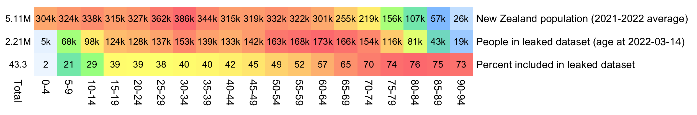
But when I calculated the age on December 2nd 2023, I got over 100% people included in the age groups 90-94 and 95+:
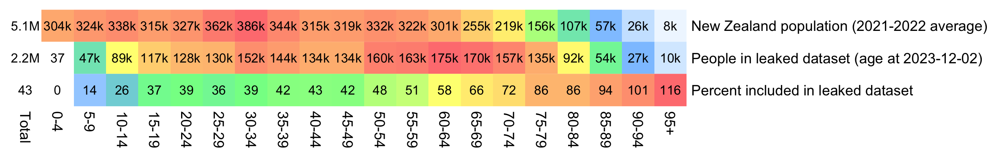
An even more accurate way to calculate the age composition might be to calculate the total person-years within each age group, and to then divide it by the ratio between total person-years and total people (which is about 1.7):
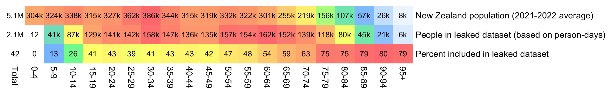
pop=tail(read.csv("https://sars2.net/f/nz_infoshare_population.csv"),2)[,-1]|>colMeans()
m=data.frame('New Zealand population (2021-2022 average)'=tapply(pop,0:95%/%5*5,sum),check.names=F)
rownames(m)=paste0(seq(0,94,5),"-",seq(4,94,5))|>c("95+")
t=as.data.frame(data.table::fread("nz-record-level-data-4M-records.csv"))
for(i in grep("date",colnames(t)))t[,i]=as.Date(t[,i],"%m-%d-%Y")
# meandate=mean(t$date_time_of_service)
# # meandate=as.Date("2023-12-2")
# birth=t$date_of_birth[!duplicated(t$mrn)]
# yeardiff=\(x,y){x=as.POSIXlt(x);y=as.POSIXlt(y);x$year-y$year-pmax(x$mon<y$mon,x$mon==y$mon&x$mday<y$mday)}
# age=table(pmax(0,pmin(yeardiff(meandate,birth),95)%/%5*5))
# m=cbind(m,"People in leaked dataset (age at 2022-12-02)"=c(age))
# total=colSums(m)
# m=cbind(m,"Percent included in leaked dataset"=m[,2]/m[,1]*100)
t=t[order(t$date_time_of_service),];t=t[!duplicated(t$mrn),]
meandays=mean(as.numeric(pmin(t$date_of_death,max(t$date_of_death,na.rm=T),na.rm=T)-t$date_time_of_service))
buck=read.table("https://sars2.net/f/month_dose_week_single_age.txt",header=T)|>subset(dose>0)
age=tapply(buck$alive,pmin(95,buck$age)%/%5*5,sum)/meandays
m[[paste0("People in leaked dataset (based on person-days)")]]=age
m$"Percent included in leaked dataset"=m[,2]/m[,1]*100
disp=apply(m,2,\(x)ifelse(x>1e3,paste0(round(x/1e3),"k"),round(x)))
sum=colSums(m)
disp=rbind(paste0(round(sum[1:2]/1e6,1),"M")|>c(round(sum[2]/sum[1]*100)),disp)
m=rbind(Total=0,apply(m,2,\(x)x/max(x)))
pheatmap::pheatmap(t(m),filename="1.png",display_numbers=t(disp),
cluster_rows=F,cluster_cols=F,legend=F,cellwidth=20,cellheight=20,fontsize=9,fontsize_number=8,border_color=NA,number_color="black",
breaks=seq(0,1,,256),
colorRampPalette(colorspace::hex(colorspace::HSV(c(210,210,130,60,40,20,0),c(0,.5,.5,.5,.5,.5,.5),1)))(256))
In the old age groups which account for most deaths, there's a decreasing trend in crude mortality rate in New Zealand:
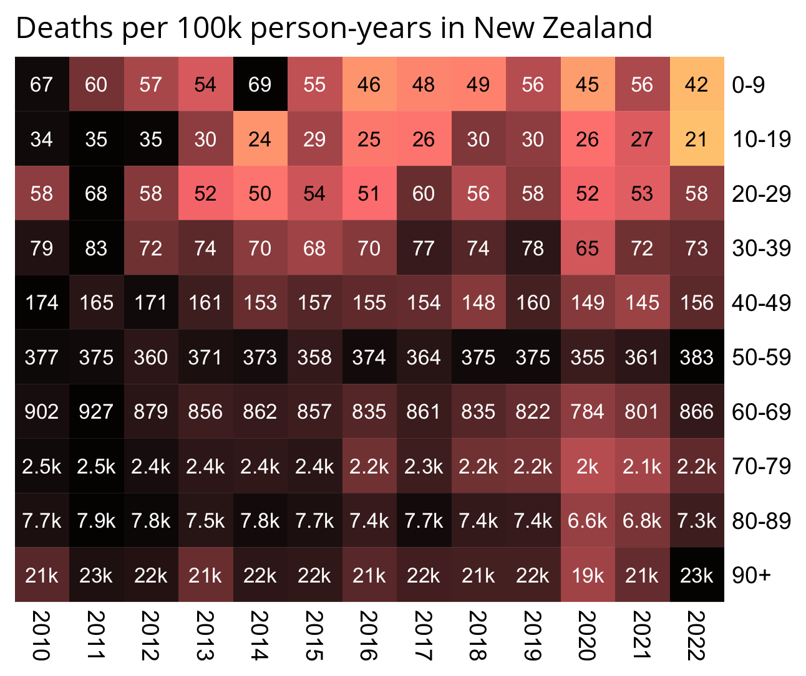
pop=read.csv("https://sars2.net/f/nz_infoshare_population.csv")|>subset(year>=2010)
death=read.csv("https://sars2.net/f/nz_infoshare_deaths.csv")|>subset(year>=2010)
death=cbind(death[,1:96,],rowSums(death[,97:102]))
d=data.frame(year=pop[,1],pop=unlist(pop[,-1]),death=unlist(death[,-1]),age=rep(0:95,each=nrow(pop)))
a=aggregate(d[,2:3],list(year=d$year,age=d$age%/%10*10),sum)
a$cmr=a$death/a$pop*1e5
m=xtabs(cmr~age+year,a)
rownames(m)=c(head(paste0(rownames(m),"-",as.numeric(rownames(m))+9),-1),"90+")
kimi=\(x){e=floor(log10(ifelse(x==0,1,abs(x))));e2=pmax(e,0)%/%3+1;x[]=ifelse(abs(x)<1,x,paste0(round(x/1e3^(e2-1),ifelse(e%%3==0,1,0)),c("","k","M","B","T")[e2]));x}
disp=kimi(m)
m=t(apply(m,1,\(i)i/max(i)))
pheatmap::pheatmap(m,filename="0.png",display_numbers=disp,
cluster_rows=F,cluster_cols=F,legend=F,cellwidth=21,cellheight=21,fontsize=9,fontsize_number=8,border_color=NA,na_col="white",
number_color=ifelse(m>.8*max(m,na.rm=T),"white","black"),
breaks=seq(0,max(m,na.rm=T),,256),
colorRampPalette(colorspace::hex(colorspace::HSV(c(210,210,210,130,60,30,0,0,0),c(0,.25,rep(.5,7)),c(rep(1,7),.5,0))))(256))
system("mogrify -trim 0.png;convert 0.png -bordercolor white -gravity northwest -splice x14 -size `identify -format %w 0.png`x -pointsize 48 caption:'Deaths per 100k person-years in New Zealand' +swap -append -trim -border 24 +repage 1.png")
system("qlmanage -p 1.png&>/dev/null")
There are several anomalies in the CSV file published by Kirsch, but they may have been caused by the procedure that was used to obfuscate the data, or they may have been caused by errors in manual data entry.
There are 47 combinations of patient ID and dose number which are listed twice in the CSV file. For example patient 152535 got the first dose twice the same day, with one entry for AstraZeneca and another entry for Pfizer:
$ cut -d, -f1,3 nz-record-level-data-4M-records.csv|awk '{++a[$0]}END{for(i in a)++b[a[i]];for(i in b)print b[i],i}'
4193345 1
47 2
$ cut -d, -f1,3 nz-record-level-data-4M-records.csv|awk 'a[$0]++'|sed 1q # ID of first patient which received the same dose number twice
152535,1
$ awk -F, 'NR==1||$1==152535' nz-record-level-data-4M-records.csv
mrn,batch_id,dose_number,date_time_of_service,date_of_death,vaccine_name,date_of_birth,age
152535,35,1,12-07-2021,,AstraZeneca,08-02-1976,47
152535,36,1,12-07-2021,,Pfizer BioNTech COVID-19,08-02-1976,47
152535,51,2,01-28-2022,,Pfizer BioNTech COVID-19,08-02-1976,47
There are 4 patients whose date of vaccination is later than the date of death:
> t=read.csv("nz-record-level-data-4M-records.csv")
> t2=t[t$date_of_death!="",]
> t2[as.Date(t2$date_time_of_service,"%m-%d-%Y")>as.Date(t2$date_of_death,"%m-%d-%Y"),]|>print.data.frame(row.names=F)
mrn batch_id dose_number date_time_of_service date_of_death
48496 101 5 04-10-2023 03-19-2023
232769 104 5 05-16-2023 05-14-2023
1300857 63 4 07-14-2022 03-30-2022
1764231 60 4 06-28-2022 06-25-2022
vaccine_name date_of_birth age
Pfizer Comirnaty Original/Omicron BA.4-5 15/15 mcg 10-15-1937 85
Pfizer Comirnaty Original/Omicron BA.4-5 15/15 mcg 01-07-1954 69
Pfizer BioNTech COVID-19 12-28-1955 66
Pfizer BioNTech COVID-19 05-08-1931 91
There are also patients who received the first dose later than the second dose:
$ awk 'NR==1||/^928462,/' nz-record-level-data-4M-records.csv mrn,batch_id,dose_number,date_time_of_service,date_of_death,vaccine_name,date_of_birth,age 928462,22,1,10-11-2021,,Pfizer BioNTech COVID-19,09-11-1972,51 928462,22,2,08-31-2021,,Pfizer BioNTech COVID-19,09-11-1972,51 928462,49,3,02-03-2022,,Pfizer BioNTech COVID-19,09-11-1972,51
The maximum number of vaccination entries per patient ID is 8. There are a couple of lines where the dose number is much higher than 8, but some of them might errors in data entry, because there is even one patient whose highest dose number is 32:
$ awk -F, 'NR>1{a[$1]++}END{for(i in a)b[a[i]]++;for(i in b)print i,b[i]}' nz-record-level-data-4M-records.csv|sort -n # number of patients ID with each number of entries
1 910958
2 784859
3 401014
4 85288
5 33099
6 505
7 5
8 1
$ awk -F, 'NR>1{a[$3]++}END{for(i in a)print i,a[i]}' nz-record-level-data-4M-records.csv|sort -n # count of entries for each dose number
1 966994
2 1034807
3 1053284
4 762241
5 369371
6 6633
7 76
8 20
9 1
10 1
11 1
12 3
16 1
20 1
24 1
28 1
29 1
32 1
There are 581 people who have different birthdays on different lines, but it might be an artifact of the obfuscation procedure where the dates of birth and vaccination were shifted by a random number of days (even though from Kirsch's description of the procedure, it seemed that all dates of the same person were always shifted by the same amount of days):
$ cut -d, -f1,7 nz-record-level-data-4M-records.csv|awk '!a[$0]++'|awk -F, '++a[$1]==2'|wc -l 581 $ awk 'NR==1||/^292629,/' nz-record-level-data-4M-records.csv mrn,batch_id,dose_number,date_time_of_service,date_of_death,vaccine_name,date_of_birth,age 292629,13,1,09-04-2021,,Pfizer BioNTech COVID-19,08-30-1975,48 292629,16,2,09-25-2021,,Pfizer BioNTech COVID-19,09-29-1975,48
A note in the file Medicare-2-1-23.xlsx on Kirsch's S3 server also said that "A small portion of the Medicare records have people who got vaccinated AFTER they died. These records have been deleted." So errors like this also seem to exist in other datasets.
Barry Young's presentation included the table below which shows the ten batches with the highest percentage of deaths per dose: [https://rumble.com/v3yqgsf-liz-gunn-the-mother-of-all-covid-19-vaccine-revelations-data-revealed-in-th.html, time 47:00]

I noticed that the numbers in Young's table don't match the CSV file published by Kirsch, because for example batch 1 has a total of 711 doses in the table above but 4,386 doses in the CSV file. In the table above there's 5 different batches which have over 10% deaths, but in the CSV file there's only one batch with over 10% deaths:
$ awk -F, 'NR>1{n[$2]++;n2[$2][$1]}$5{d[$2]++;d2[$2][$1]}END{for(i in d)print i FS n[i]FS d[i]FS 100*d[i]/n[i]FS length(n2[i])FS length(d2[i])FS 100*length(d2[i])/length(n2[i])}' nz-record-level-data-4M-records.csv|sort -t, -rnk4|(echo batch,doses_given,doses_leading_to_deaths,doses_leading_to_deaths_pct,persons,deaths,deaths_per_person_pct;head)|column -ts,
batch doses doses_leading_to_death doses_leading_to_death_pct persons deaths deaths_per_person_pct
1 4386 674 15.3671 2979 375 12.5881
3 6213 317 5.10221 4875 264 5.41538
8 3986 203 5.09282 3774 193 5.11394
2 16627 754 4.53479 13518 596 4.40894
7 1288 56 4.34783 1232 51 4.13961
72 10624 356 3.3509 10622 356 3.35153
4 7111 237 3.33286 7015 233 3.32145
71 20325 620 3.05043 20276 619 3.05287
35 103143 3141 3.04529 102759 3129 3.04499
32 42178 1281 3.03713 41866 1277 3.05021
Some people received two doses from the same batch, so they are counted twice in columns 2-4 above but only once in columns 5-7, so for example there are 375 people who died after receiving batch 1, but many of them received two doses from batch 1 so there are 674 doses in batch 1 which led to a death. There are also a few patients who received 3 or 4 doses from the same batch but no patients who received 5 or more doses from the same batch.
Uncle John Returns figured out that people who later went on to have a subsequent dose were excluded from Young's table. [https://x.com/UncleJo46902375/status/1731625480527257928] You can almost reproduce the table if you sort the records by vaccination date and select only the newest record for each person (but for some reason there are small discrepancies in the number of deaths for some batches):
> t=read.csv("nz-record-level-data-4M-records.csv")
> t2=t
> for(i in grep("date",colnames(t2)))t2[,i]=as.Date(t2[,i],"%m-%d-%Y")
> t2=t2[rev(order(t2$date_time_of_service)),]
> t2=t2[!duplicated(t2$mrn),]
> d=as.data.frame(table(batch=t2$batch_id))
> colnames(d)[2]="doses"
> d$deaths=table(factor(t2$batch_id[!is.na(t2$date_of_death)],d$batch))
> d$pct=100*d$deaths/d$doses
> d=d[order(-d$pct),]
> head(d,10)|>print.data.frame(row.names=F)
batch doses deaths pct
1 711 152 21.378340
8 221 38 17.194570
3 310 48 15.483871
4 364 37 10.164835
6 1006 102 10.139165
2 1018 99 9.724951
7 38 3 7.894737
72 5882 280 4.760286
62 18173 834 4.589226
71 11019 504 4.573918
However Young's method exaggerates the percentage of deaths in the early batches, because a common reason why some person would only get a vaccine from batch 1 but not subsequent batches was that the person died before they could get more vaccine doses. And in Young's table, the seven batches with the highest percentage of deaths were all early batches with an ID below 10. It would probably be more accurate to use a "bucket" system where you would calculate deaths per person-years, and where you would include people who later got a dose from another batch under the person-years of the earlier batch until they got the next batch.
In his presentation Barry Young pointed out that in the 2010s, New Zealand had only a handful of days which had more than 120 deaths, such as during the Christchurch earthquake in 2011, but in 2021 and 2022 after COVID vaccines had been rolled out, there was a much higher number of days which had more than 120 deaths:

However according to the Short-Term Mortality Fluctuations dataset, the average number of deaths per day in New Zealand increased from about 83 in 2011 to about 94 in 2019:
> t=read.csv("https://www.mortality.org/File/GetDocument/Public/STMF/Outputs/NZL_NPstmfout.csv")
> t2=t[t$Sex=="b"&t$Year>=2011,]
> round(tapply(t2$Total,t2$Year,mean)/7,1)
2011 2012 2013 2014 2015 2016 2017 2018 2019 2020 2021 2022 2023
82.9 82.3 80.7 85.0 86.8 85.6 92.0 90.8 93.6 89.5 95.6 105.7 103.3
So therefore it would make more sense to use the linear trend in deaths before COVID as the baseline, and to then count how many days have a number of deaths that's more than a given threshold above the baseline. [https://x.com/UncleJo46902375/status/1730241561424732620] Below I calculated a linear trend for the data from 2011-2019, and I counted how many weeks each year had where the number of deaths was 2 or more standard deviations above the trend, where I got the standard deviation from the weekly difference to the trend in 2011-2019. But the number of weeks above the threshold was only 1 in 2021, because there were almost no COVID deaths in 2021:
> isoweek=\(year,week,weekday=1){d=as.Date(paste0(year,"-1-4"));d-(as.integer(format(d,"%w"))+6)%%7-1+7*(week-1)+weekday}
> xy=data.frame(x=isoweek(t2$Year,t2$Week,4),y=t2$Total)
> past=xy$x<as.Date("2020-1-1")
> model=predict(lm(y~x,xy[past,]),xy)
> diff=xy$y-model
> dates=xy$x[diff/sd(diff[past])>=2]
> dates
[1] "2011-02-24" "2011-08-18" "2011-09-08" "2012-07-12" "2012-07-19" "2015-07-30" "2015-08-06"
[8] "2015-08-13" "2017-07-20" "2017-07-27" "2017-08-03" "2017-08-10" "2019-07-11" "2021-08-12"
[15] "2022-05-12" "2022-05-26" "2022-06-16" "2022-06-23" "2022-06-30" "2022-07-07" "2022-07-14"
[22] "2022-07-21" "2022-07-28" "2022-08-04" "2022-08-18" "2023-08-24"
> table(factor(as.numeric(substr(dates,1,4)),2011:2023))
2011 2012 2013 2014 2015 2016 2017 2018 2019 2020 2021 2022 2023
3 2 0 0 3 0 4 0 1 0 1 11 1
Barry Young's presentation included this table which showed the vaccination sites with the highest percentage of deaths per dose: [https://rumble.com/v3ynskd-operation-m.o.a.r-mother-of-all-revelations.html]

The vaccination site on the first row of the table is called "Te Hopai Home & Hospital", which has 191 vaccinations and 61 deaths which results in ratio of about 32% deaths per vaccination. I don't know if the number of vaccinations refers to the number of vaccine doses given or the number of vaccinated persons, or I don't know if Young excluded people who later went on to get subsequent vaccine doses from his table.
But in any case, The Hopai Home & Hospital is a nursing home. [https://www.tehopai.co.nz/] The dataset published by the whistleblower includes about two and half years of data, so over that period of time, it's not that unusual that about 30% of vaccine doses in a nursing home would've been given to people who are now dead. Even though actually someone posted a Substack comment which said: "Te Hopai was a vaccination centre for the public, not just aged care residents. Teenagers got jabs there so you are being very misleading here." [https://www.igor-chudov.com/p/i-analyzed-the-leaked-nz-whistleblower/comment/44717804]
It might make more sense to calculate an age-standardized mortality rate per vaccination site, but the files published by Kirsch don't include data about the vaccination sites. Different sites are also going to have different average dates of vaccination, and people who were vaccinated in 2021 have had more time to die since vaccination than people who were vaccinated in 2023.
In the CSV file that was published by Kirsch, there are only 7 records where the date of death is the same as the date of vaccination, so that the time from vaccination to death was zero days. And there's also a low number of records where the date of death is within a week from a vaccination, which might be explained by the healthy vaccinee effect if people who are at immediate risk of death don't get vaccinated:
> t=read.csv("nz-record-level-data-4M-records.csv")
> t2=t[t$date_of_death!="",]
> ta=table(as.Date(t2$date_of_death,"%m-%d-%Y")-as.Date(t2$date_time_of_service,"%m-%d-%Y"))
> head(ta,100)
-106 -22 -3 -2 0 1 2 3 4 5 6 7 8 9 10 11 12 13 14 15
1 1 1 1 7 46 40 55 74 59 79 70 78 74 80 89 98 82 91 86
16 17 18 19 20 21 22 23 24 25 26 27 28 29 30 31 32 33 34 35
100 83 89 96 98 106 122 92 96 99 98 115 83 105 109 92 123 104 118 102
36 37 38 39 40 41 42 43 44 45 46 47 48 49 50 51 52 53 54 55
116 89 108 122 103 107 110 110 125 109 114 99 111 117 119 110 109 115 113 126
56 57 58 59 60 61 62 63 64 65 66 67 68 69 70 71 72 73 74 75
126 122 113 119 118 114 115 102 140 138 137 116 140 112 131 118 110 135 113 124
76 77 78 79 80 81 82 83 84 85 86 87 88 89 90 91 92 93 94 95
122 122 124 116 133 127 114 110 132 142 109 130 134 127 124 127 142 133 134 138
There's 4 records where the date of death is earlier than the date of vaccination, but they may be the result of errors in data entry. The most common durations from vaccination to death are 100 and 170 days which are on shared first place:

It seems unusual that there were only 7 deaths which occurred on the same day as a vaccination. In 2021 to 2023, the average number of deaths per day in New Zealand was about 101, and even if Young's dataset would only include about a third of all vaccination records, a third of 101 would would still be about 34. Even though I guess if people got vaccinated during the working day, then the average time of day when people got vaccinated might be after midday, and if someone died at 4 AM then they probably weren't vaccinated the same day. And the dataset is also missing deaths among unvaccinated people.
The earliest date of vaccination in the dataset is on April 18th 2021, and the number of missing vaccination doses is disproportionately high in the first half of 2021. The last date of death is on October 27th 2023. So in the histogram above, the number of deaths tapers off at the end of the x-axis and there is only a small number of deaths that occurred more than 800 days after a vaccination, but that's because the dataset only includes a small number of people who were vaccinated early enough that it was possible for them to die more than 800 days from the vaccination.
R code:
library(ggplot2)
t=read.csv("nz-record-level-data-4M-records.csv")
t2=t[t$date_of_death!="",]
ta=table(as.Date(t2$date_of_death,"%m-%d-%Y")-as.Date(t2$date_time_of_service,"%m-%d-%Y"))
xy=data.frame(x=as.numeric(names(ta)),y=as.numeric(ta))
candidates=c(sapply(c(1,2,5),\(x)x*10^c(-10:10)))
xstep=candidates[which.min(abs(candidates-max(xy$x)/11))]
ystep=candidates[which.min(abs(candidates-max(xy$y)/6))]
xstart=xstep*floor(min(xy$x)/xstep)
xend=xstep*ceiling(max(xy$x)/xstep)
ystart=ystep*floor(min(xy$y)/ystep)
yend=ystep*ceiling(max(xy$y)/ystep)
xbreak=seq(xstart,xend,xstep)
ybreak=seq(ystart,yend,ystep)
ggplot(xy,aes(x,y))+
geom_hline(yintercept=ystart,color="black",linewidth=.2,lineend="square")+
geom_vline(xintercept=xstart,color="black",linewidth=.2,lineend="square")+
geom_point(size=.2)+
scale_x_continuous(limits=c(xstart,xend),breaks=xbreak,expand=c(0,0))+
scale_y_continuous(limits=c(ystart,yend),breaks=ybreak,expand=c(0,0))+
coord_cartesian(clip="off")+
labs(x="Difference in days between date of death and date of vaccination",y="Number of deaths",title="Number of deaths for each difference between date of death and date of vaccination in MOAR dataset")+
theme(
axis.text=element_text(size=6,color="black"),
axis.ticks=element_line(linewidth=.2,color="black"),
axis.ticks.length=unit(.15,"lines"),
axis.title=element_text(size=7),
legend.position="none",
panel.background=element_rect(fill="white"),
panel.grid=element_blank(),
plot.background=element_rect(fill="white"),
plot.margin=margin(.4,.5,.4,.5,"lines"),
plot.subtitle=element_text(size=6),
plot.title=element_text(size=6.8)
)
ggsave("1.png",width=6,height=3)
The number of deaths peaks at about 100 days after vaccination when all doses are aggregated together, but the number of deaths peaks at about 300 days for the first two doses, and the first two doses are underrepresented in the dataset. The number of deaths peaks at about 100 days for the fifth dose, after which it falls to zero at around 200 days, because there were almost no fifth doses given before March 2023 which is about 200 days before the end of the data, but if the data extended further into the future, then the peak in deaths after the fifth dose might occur later. The fifth dose overrepresented in Young's dataset relative to earlier doses, because the proportion of missing doses is lower for newer doses and higher for earlier doses, but if there would be no missing doses in the dataset, then the peak in deaths for all doses aggregated together might occur more than 100 days after vaccination:

In fact if you simply omit all vaccine doses given in 2023, then almost all fifth doses are omitted, so the peak in deaths for all doses aggregated together is about 300 days after vaccination:

In the plots above I included all doses a person received, but if I would've only included the last dose before death, then the average time from vaccination until death would've been lower.
In the plot below I included vaccinations which were given at least 51 weeks before the last death in the dataset, and I only included deaths that happened within 51 weeks from vaccination, so now the number of deaths no longer tapers off at the end of the x-axis:

In the plot above there's a period around weeks 15-30 where dose 3 is fairly far above the trend line, which may have been caused by the wave of COVID deaths in 2022, because most third doses were given around November 2021 to March 2022. But afterwards the line for dose 3 goes below the trend line, which might be because of a pull forward effect or because there was a period of low overall mortality in late 2022.
I'm not sure why there the plot above has an increasing trend in deaths over time, but there's a couple of reasons I can think:
The plot below is otherwise the same as my previous plot but I only included the most recent dose listed for each person. Now dose 1 includes atypical people who didn't get a subsequent dose after the first dose, which is commonly because the people died before they could get further shots, so dose 1 has a large number of deaths for the first few weeks after vaccination:

R code:
library(ggplot2)
t=as.data.frame(data.table::fread("nz-record-level-data-4M-records.csv")) # this is faster than `read.csv`
for(i in grep("date",colnames(t)))t[,i]=as.Date(t[,i],"%m-%d-%Y")
weeks=51
date1=max(t$date_of_death,na.rm=T)
date2=date1-weeks*7+1
t=t[t$date_time_of_service<=date2,]
t=t[t$date_time_of_service<=t$date_of_death,]
t=t[t$dose_number<=4,]
doses=table(t$dose_number)
t=t[t$date_of_death-t$date_time_of_service<weeks*7,]
# t=t[rev(order(t$date_time_of_service)),]
# t=t[!duplicated(t$mrn),]
t=t[!is.na(t$date_of_death),]
ta=as.data.frame(table(floor((t$date_of_death-t$date_time_of_service)/7),t$dose_number))
xy=data.frame(x=as.numeric(levels(ta$Var1)),y=c(ta$Freq/doses[ta$Var2]),z=paste0("Dose ",ta$Var2))
tap=tapply(ta$Freq,ta$Var1,sum)
xy=rbind(data.frame(x=as.numeric(names(tap)),y=tap/sum(doses),z="Total"),xy)
xy$y=1e3*xy$y
xy$z=factor(xy$z,unique(xy$z))
xy$a=split(xy,xy$z)|>lapply(\(i)lm(y~x,i)|>predict(i))|>unlist()
xstart=0
xend=weeks-1
xstep=5
candidates=c(sapply(c(1,2,5),\(x)x*10^c(-10:10)))
ystep=candidates[which.min(abs(candidates-max(xy$y)/6))]
ystart=0
yend=ystep*ceiling(max(xy$y)/ystep)
xbreak=seq(xstart,xend,xstep)
ybreak=seq(ystart,yend,ystep)
labels=data.frame(x=xstart+.03*(xend-xstart),y=seq(.97*yend,,-yend/15,nlevels(xy$z)),label=levels(xy$z))
color=c("black",hcl(c(210,120,60,0,300)+15,70,50))
ggplot(xy,aes(x,y))+
geom_hline(yintercept=ystart,color="black",linewidth=.3,lineend="square")+
geom_vline(xintercept=xstart,color="black",linewidth=.3,lineend="square")+
geom_line(aes(color=z),size=.4)+
geom_line(aes(y=a,color=z),linetype=2,size=.4)+
geom_label(data=labels,aes(x=x,y=y,label=label),fill=alpha("white",.7),label.r=unit(0,"lines"),label.padding=unit(.04,"lines"),label.size=0,color=color[1:nlevels(xy$z)],size=3.4,hjust=0,vjust=1)+
labs(x="Weeks from vaccination to death",y="Deaths per thousand doses",title=paste0("Deaths per thousand doses by weeks since vaccination, last time of death ",date1,", last time of vaccination ",date2," (",weeks,"*7-1 days earlier). Week 0 extends from day of vaccination to 6 days later. For people with multiple doses, all doses are included and not only the most recent dose.")|>stringr::str_wrap(70))+
coord_cartesian(clip="off")+
scale_x_continuous(limits=c(xstart,xend),breaks=xbreak,expand=c(0,0))+
scale_y_continuous(limits=c(ystart,yend),breaks=ybreak,expand=c(0,0))+
scale_color_manual(values=color)+
theme(
axis.text=element_text(size=8,color="black"),
axis.ticks=element_line(linewidth=.3,color="black"),
axis.ticks.length=unit(.2,"lines"),
axis.title=element_text(size=9),
legend.position="none",
panel.background=element_rect(fill="white"),
panel.grid=element_blank(),
plot.background=element_rect(fill="white"),
plot.margin=margin(.4,.5,.4,.5,"lines"),
plot.subtitle=element_text(size=9),
plot.title=element_text(size=10)
)
ggsave("1.png",width=5,height=3.5)
system("mogrify -trim -border 24 -bordercolor white 1.png")
Next I tried calculating a crude mortality rate for each dose so that I divided the number of deaths each week with the number of people who had received a dose that week. Now there was an increase in crude mortality rate of each dose after the sample size becomes small, which I though was probably because then a large part of the population consists of old or vulnerable people who received the dose the earliest. However when I also included the average age of dead persons in the plot, at the point when the cohort size went close to zero and mortality rate shot up, for some reason the age at death decreased for the 4th and 5th doses even though it increased for the first three does:

R code:
library(ggplot2)
t=as.data.frame(data.table::fread("nz-record-level-data-4M-records.csv")) # this is faster than `read.csv`
for(i in grep("date",colnames(t)))t[,i]=as.Date(t[,i],"%m-%d-%Y")
# t=t[rev(order(t$date_time_of_service)),]
# t=t[!duplicated(t$mrn),]
maxdose=5
maxdate=max(t$date_of_death,na.rm=T)
pop=table(floor((pmin(t$date_of_death,maxdate,na.rm=T)-t$date_time_of_service)/7),t$dose_number)|>apply(2,\(x)rev(cumsum(rev(x))))
doses=table(t$dose_number)
dead=t[!is.na(t$date_of_death),]
age=aggregate(as.numeric((dead$date_time_of_service-dead$date_of_birth)/365.2422),list(as.numeric(floor((dead$date_of_death-dead$date_time_of_service)/7)),dead$dose_number),mean)
death=floor((dead$date_of_death-dead$date_time_of_service)/7)|>table(dead$dose_number)|>as.data.frame()|>sapply(as.numeric)
death=merge(death,age,by=c(1,2),all=T)
death=death[death$Var2<=maxdose,]
pops=pop[cbind(as.character(death$Var1),as.character(death$Var2))]
xy=data.frame(x=death$Var1,y=death$Freq/pops,z=paste0("Dose ",death$Var2),pop=pops,age=death[,4])
ages=split(xy,xy$x)|>sapply(\(x)weighted.mean(x$age,x$pop,na.rm=T))
tap=tapply(death$Freq,factor(death$Var1,rownames(pop)),sum,na.rm=T)
xy=rbind(data.frame(x=as.numeric(names(tap)),y=tap/rowSums(pop),z="All doses",pop=rowSums(pop),age=ages[names(tap)]),xy)
xy$y=xy$y*365.2422/7*1e3
xy$z=factor(xy$z,sort(unique(xy$z)))
xy$y[xy$pop<1e3]=NA
xy=na.omit(xy)
xy$trend=split(xy,xy$z)|>lapply(\(i)predict(lm(y~x,i),i))|>unlist()
xy$pop[xy$z=="All doses"]=NA
xstart=0;xend=130;xstep=10
candidates=c(sapply(c(1,2,5),\(x)x*10^c(-10:10)))
ystep=candidates[which.min(abs(candidates-max(xy$y)/6))]
ystart=0
yend=ystep*ceiling(max(xy$y)/ystep)
yend=90
xbreak=seq(xstart,xend,xstep)
ybreak=seq(ystart,yend,ystep)
ystep2=candidates[which.min(abs(candidates-max(xy$pop,na.rm=T)/6))]
yend2=ceiling(max(xy$pop,na.rm=T)/ystep2)*ystep2
secmult=yend/yend2
xy=xy[sample(nrow(xy)),]
color=c("black",hcl(c(210,120,60,0,310,260)+15,70,50))
labels=data.frame(x=as.Date(xstart+.975*(xend-xstart),"1970-1-1"),y=seq(.97*yend,,-yend/15,nlevels(xy$z)),label=levels(xy$z))
kimi=\(x)ifelse(abs(x)>=1e6,paste0(x/1e6,"M"),ifelse(abs(x)>=1e3,paste0(x/1e3,"k"),x))
ggplot(xy,aes(x,y))+
geom_hline(yintercept=c(ystart),color="black",linewidth=.3,lineend="square")+
geom_vline(xintercept=c(xstart,xend),color="black",linewidth=.3,lineend="square")+
geom_line(aes(color=z),linewidth=.4)+
geom_point(aes(y=age,color=z),size=.4)+
geom_line(aes(y=pop*secmult,color=z),linewidth=.4,linetype=2)+
# geom_line(aes(y=trend,color=z),linetype=2,size=.4)+
geom_label(data=labels,aes(x=x,y=y,label=label),fill=alpha("white",.7),label.r=unit(0,"lines"),label.padding=unit(.04,"lines"),label.size=0,color=color[1:nlevels(xy$z)],size=3.2,hjust=1,vjust=1)+
labs(x="Weeks from vaccination to death",y="Deaths per 1,000 person-years (solid)\nAverage age at death (dots)",title="Leaked NZ data: crude mortality rate by weeks from vaccination to death",subtitle="For people with multiple doses, all doses are included and not only the last dose before death, so that a person who gets a subsequent dose also remains classified under previous doses. Weeks with cohort size below 1,000 are omitted. Week 0 extends from day of vaccination until 6 days later."|>stringr::str_wrap(84))+
coord_cartesian(clip="off")+
scale_x_continuous(limits=c(xstart,xend),breaks=xbreak,expand=c(0,0))+
scale_y_continuous(limits=c(ystart,yend),breaks=ybreak,expand=c(0,0),sec.axis=sec_axis(trans=~./secmult,breaks=seq(0,yend2,ystep2),name="Cohort size (dashed)",labels=kimi))+
scale_color_manual(values=color)+
theme(
axis.text=element_text(size=8,color="black"),
axis.ticks=element_line(linewidth=.3,color="black"),
axis.ticks.length=unit(.2,"lines"),
axis.title=element_text(size=9),
axis.title.y.right=element_text(margin=margin(0,0,0,5)),
legend.position="none",
panel.background=element_rect(fill="white"),
panel.grid=element_blank(),
plot.margin=margin(.3,.3,.3,.3,"lines"),
plot.subtitle=element_text(size=8.5,margin=margin(0,0,.4,0,"lines")),
plot.title=element_text(size=10.2,margin=margin(.2,0,.5,0,"lines"))
)
ggsave("1.png",width=5.3,height=3.5,dpi=400)
One of the files generated by the buckets.py script shows mortality by month, dose number, and weeks since vaccination:
$ wget -q https://getdatatransparency.com/data-transparency.zip $ unzip data-transparency.zip [...] $ sed 3q data-transparency/New\ Zealand/time-series\ summaries/month_dose_week_single_age.txt|column -t month dose week age alive dead 2021-01 0 0 1 248 0 2021-01 0 0 2 248 0
I used the file to generate a plot for CMR by dose so that once a person has received a second dose, they are no longer included under the first dose. My plot shows that after around week 22 when the crude mortality rate of all doses begins to decrease, the average age of all doses also decreases. Kirsch said that the peak in mortality around weeks 20-25 was a sign of deaths caused by vaccines, but actually he should've calculated ASMR instead of CMR, or he should've stratified the CMR by age. From the plot below you can see that the cohort size of the first dose drops rapidly during the first 10 weeks, because people are likely to have gotten the second dose within 2 months of the first dose:

The plot above shows that the total CMR of all doses aggregated together increases for around the first 20 weeks. It might partially be because the average age of aggregated doses increases from week 0 to week 10 even though the average age of individual doses remains flat or decreases, which seems paradoxical, but the proportion of first doses out of all doses decreases from week 0 to 10, and first doses have a lower average age than later doses.
The peak in CMR around 20 weeks is missing from age-stratified plots:
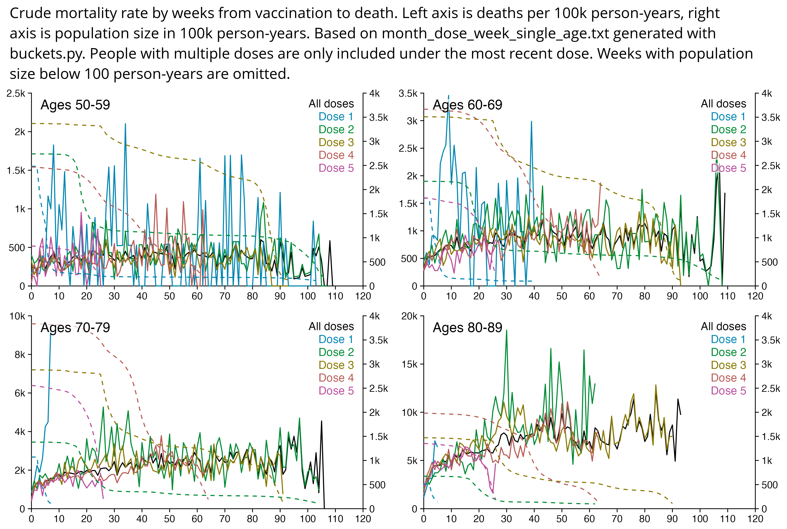
R code:
library(ggplot2)
t=read.table("https://sars2.net/f/month_dose_week_single_age.txt",header=T)
t=t[t$dose!=0,]
ag=aggregate(t[,5:6],t[,2:4],sum)
ag=ag[ag$dose<=5&ag$dose>0,]
ag=merge(ag,aggregate(ag$alive,ag[,1:2],sum),by=1:2)
colnames(ag)[6]="allagepop"
xy=aggregate(ag[,4:5],ag[,1:2],sum)
xy=merge(xy,aggregate(ag$age*ag$alive/ag$allagepop,ag[,c(1:2)],sum),by=1:2)
colnames(xy)[5]="age"
xy$dose=paste0("Dose ",xy$dose)
total=aggregate(ag[,4:5],ag[,"week",drop=F],sum)
total$dose="All doses"
total$age=tapply(ag$age*ag$alive,ag$week,sum)/tapply(ag$alive,ag$week,sum)
xy=rbind(total[,colnames(xy)],xy)
xy$alive=xy$alive/365
xy$cmr=xy$dead/xy$alive*1e5
xy$dose=factor(xy$dose,unique(xy$dose))
minpop=1e3
xy$cmr[xy$alive<minpop]=NA
xy=na.omit(xy)
# xy$trend=split(xy,xy$dose)|>lapply(\(i)predict(lm(cmr~week,i),i))|>unlist()
xy$alive[xy$dose=="All doses"]=NA
xstart=0;xend=120;xstep=10
candidates=c(sapply(c(1,2,5),\(x)x*10^c(-10:10)))
ystep=candidates[which.min(abs(candidates-max(xy$cmr)/6))]
ystart=0
yend=ystep*ceiling(max(xy$cmr,xy$age)/ystep)
xbreak=seq(xstart,xend,xstep)
ybreak=seq(ystart,yend,ystep)
ystep2=candidates[which.min(abs(candidates-max(xy$age,na.rm=T)/6))]
yend2=ceiling(max(xy$age,na.rm=T)/ystep2)*ystep2
secmult=yend/yend2
xy=xy[sample(nrow(xy)),] # get random pattern of overlap between dots
color=c("black",hcl(c(210,120,60,0,310,260)+15,70,50))
labels=data.frame(x=as.Date(xstart+.975*(xend-xstart),"1970-1-1"),y=seq(.97*yend,,-yend/15,nlevels(xy$dose)),label=levels(xy$dose))
kimi=\(x)ifelse(abs(x)>=1e6,paste0(x/1e6,"M"),ifelse(abs(x)>=1e3,paste0(x/1e3,"k"),x))
ggplot(xy,aes(x=week,y=cmr))+
geom_hline(yintercept=ystart,color="black",linewidth=.3,lineend="square")+
geom_vline(xintercept=c(xstart,xend),color="black",linewidth=.3,lineend="square")+
geom_line(aes(color=dose),linewidth=.4)+
geom_point(aes(y=age*secmult,color=dose),size=.4)+
geom_line(aes(y=alive*365/1e5*secmult,color=dose),linewidth=.4,linetype=2)+
# geom_line(aes(y=trend,color=dose),linetype=2,size=.4)+
geom_label(data=labels,aes(x=x,y=y,label=label),fill=alpha("white",.7),label.r=unit(0,"lines"),label.padding=unit(.04,"lines"),label.size=0,color=color[1:nlevels(xy$dose)],size=3.2,hjust=1,vjust=1)+
labs(x="Weeks from vaccination to death",y="Deaths per 100,000 person-years (solid)",title="Crude mortality rate by weeks from vaccination to death",subtitle=paste0("Based on month_dose_week_single_age.txt generated with buckets.py. People with multiple doses are only included under the most recent dose. Weeks with population size below ",formatC(minpop,digits=0,format="f",big.mark=",")," person-years are omitted.")|>stringr::str_wrap(84))+
coord_cartesian(clip="off")+
scale_x_continuous(limits=c(xstart,xend),breaks=xbreak,expand=c(0,0))+
scale_y_continuous(limits=c(ystart,yend),breaks=ybreak,expand=c(0,0),labels=kimi,sec.axis=sec_axis(trans=~./secmult,breaks=seq(0,yend2,ystep2),name="Average age (dots)\nPopulation size in 100k person-days (dashed)",labels=kimi))+
scale_color_manual(values=color)+
theme(
axis.text=element_text(size=8,color="black"),
axis.ticks=element_line(linewidth=.3,color="black"),
axis.ticks.length=unit(.2,"lines"),
axis.title=element_text(size=9),
axis.title.y.right=element_text(margin=margin(0,0,0,5)),
legend.position="none",
panel.background=element_rect(fill="white"),
panel.grid=element_blank(),
plot.margin=margin(.3,.8,.3,.3,"lines"),
plot.subtitle=element_text(size=8.5,margin=margin(0,0,.4,0,"lines")),
plot.title=element_text(size=10.2,margin=margin(.2,0,.5,0,"lines"))
)
ggsave("1.png",width=5.5,height=3.5,dpi=400)
Jeffrey Morris wrote: "The baselines in his projections are not actuarial baselines but based on his baseless assumption that HVE is only 3 weeks and death rates 3-5wk after dose represent baseline death rate and any increase is vaccine caused deaths. [...] If you put the actuarial baseline death rate for the age on his charts you see that the 6m increase he claims is excess deaths caused by vaccines is not excess but really a slower return to baseline from the HVE based very low death rates after vaccine." [https://x.com/jsm2334/status/1730424221208105396]
In the spreadsheet shown in the screenshot below, the "baseline death rate estimate" is calculated based on weeks 3-5 after vaccination (where week 0 extends from the day of vaccination until 6 days later). I changed the "age start" field to 65 and the "age end" field to 74 so I could compare the crude mortality rate to the CMR of the same age group at Mortality Watch. However the baseline was unexpectedly a bit lower at Mortality Watch: [https://next.mortality.watch/explorer/?c=NZL&t=cmr&ct=yearly&ag=65-74&ag=75-84&ag=all&bm=mean&p=1&v=2]
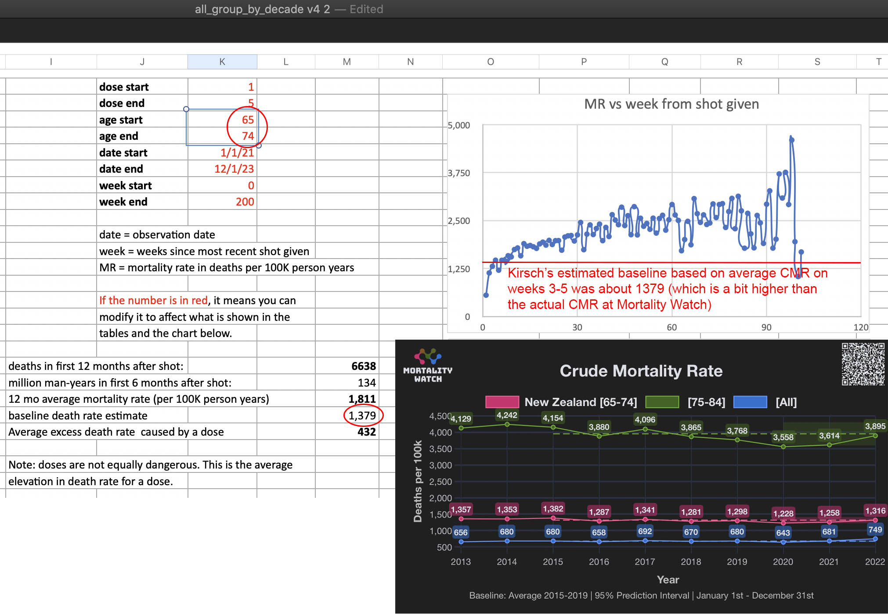
One reason why the baseline seems too low might be because ages 65-69 are underrepresented in Young's dataset compared to ages 70-74:
I developed a new method to calculate the baseline for crude mortality rate so that it depends on the age composition of the cohort. I downloaded files for the yearly number of deaths and population numbers in single-year age groups in New Zealand. [https://infoshare.stats.govt.nz/SelectVariables.aspx?pxID=49d62bb5-9aae-40a6-ab81-e904ecb2bf2c, https://infoshare.stats.govt.nz/SelectVariables.aspx?pxID=2d42f80c-5a61-4cb6-9db0-f22da77c5023] I combined the files to calculate average CMR in 2021-2022. The maximum age that was included in both files was 94, so I used LOESS regression to extend the CMR values to age 120. Then I calculated a weighted average of the CMR values for each age weighted by the number of people of the age in the cohort. So for example the CMR in 2021-2022 was about 5403 for age 82 and about 6173 for age 83, so if I had a set of people with 123 82-year-olds and 234 83-year-olds, I calculated the weighted average as (5403*123+6173*234)/(123+234).
Kirsch said that the data from New Zealand showed that the vaccines were killing people because the crude mortality rate peaked about 20-25 weeks after vaccination. However based on my new method for calculating a variable baseline for the CMR, at 22 weeks after vaccination when the CMR peaked in all doses aggregated together, the CMR was actually below the baseline:
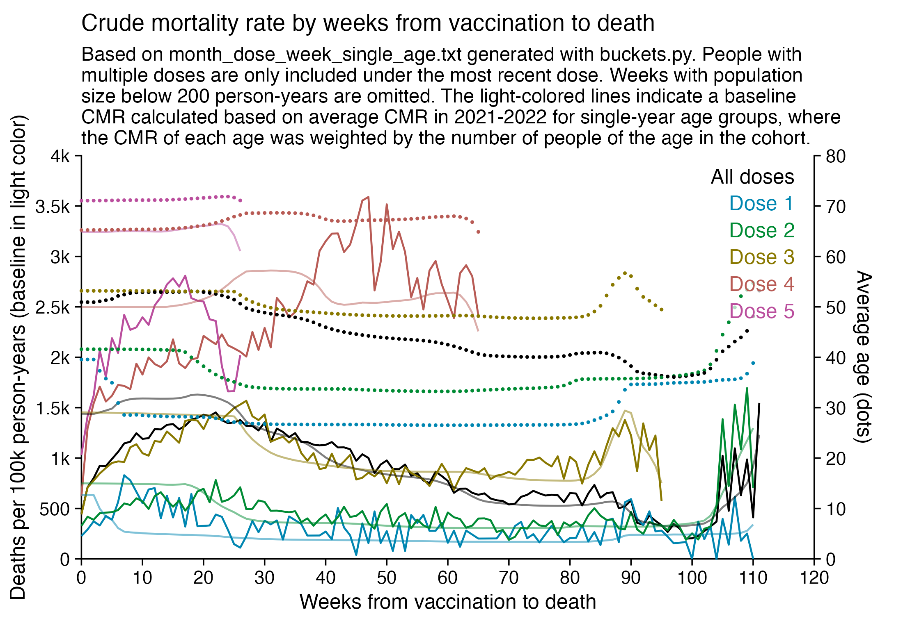
From the plot above you can also see that for doses 1-3, the actual CMR for each week after vaccination seems to follow the baseline fairly closely, so that around weeks 30-80 when the CMR of each dose is low, the baseline is also low because the average age is low. For some reason dose 1 remains above the baseline from around week 5 to week 25, but all other doses are below the baseline for the first 20 weeks.
This plot also shows the excess CMR relative to the baseline:
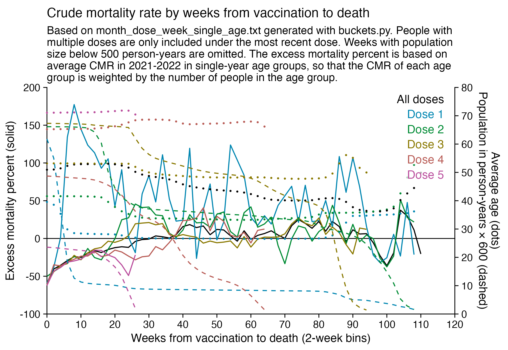
Actually my new method might be a more accurate way to calculate excess age-normalized mortality than ASMR, because ASMR is usually calculated based on 5-year age bands, but in Young's data the lower ends of age bands are underrepresented compared to the upper ends of age bands. And ASMR also has the problem that the overall mortality rate can get inflated if some age group has a small population size and non-zero deaths, so you sometimes have to exclude small age groups from the calculation or you have to exclude cohorts where there's one or more small age group with non-zero deaths. For example if you use the 2013 European Standard Population where the age band 15-19 makes up 5,500 people out of a total population of 100,000, and if you have a cohort which includes a thousand people but they are mostly elderly so there's only one one person in the age group 15-19, then 5,500 is added to the total ASMR if the one person dies. However my new method does not suffer from the same problem.
library(ggplot2)
t=read.table("https://sars2.net/f/month_dose_week_single_age.txt",header=T)
t=t[t$dose!=0,]
ag=aggregate(t[,5:6],t[,2:4],sum)
ag=ag[ag$dose<=5&ag$dose>0,]
ag=merge(ag,aggregate(ag$alive,ag[,1:2],sum),by=1:2)
colnames(ag)[6]="allagepop"
xy=aggregate(ag[,4:5],ag[,1:2],sum)
xy=merge(xy,aggregate(ag$age*ag$alive/ag$allagepop,ag[,c(1:2)],sum),by=1:2)
colnames(xy)[5]="age"
pop=tail(read.csv("https://sars2.net/f/nz_infoshare_population.csv"),2)[,3:96]
death=tail(read.csv("https://sars2.net/f/nz_infoshare_deaths.csv"),2)[,3:96]
cmr=data.frame(x=1:94,y=colMeans(death)/colMeans(pop)*1e5)
cmr=c(cmr$y,predict(loess(y~x,cmr,control=loess.control(surface="direct")),95:120))
a=aggregate(t[,5,drop=F],t[,2:4],sum)
a=merge(a,aggregate(t$alive,t[,2:3],sum),by=1:2)
colnames(a)[5]="allagepop"
atot=aggregate(a[,4:5,],a[,2:3],sum)
a=aggregate(cmr[a$age]*a$alive/a$allagepop,a[,1:2],sum)
colnames(a)[3]="predicted"
xy=merge(xy,a,by=1:2)
xy$dose=paste0("Dose ",xy$dose)
total=aggregate(ag[,4:5],ag[,"week",drop=F],sum)
total$dose="All doses"
total$age=tapply(ag$age*ag$alive,ag$week,sum)/tapply(ag$alive,ag$week,sum)
total$predicted=tapply(cmr[atot$age]*atot$alive/atot$allagepop,atot$week,sum)[as.character(total$week)]
xy=rbind(total[,colnames(xy)],xy)
xy$alive=xy$alive/365
xy$predicted=xy$predicted
xy$cmr=xy$dead/xy$alive*1e5
xy$dose=factor(xy$dose,unique(xy$dose))
minpop=2e2
xy$cmr[xy$alive<minpop]=NA
xy=na.omit(xy)
xy$alive[xy$dose=="All doses"]=NA
xstart=0;xend=120;xstep=10
candidates=c(sapply(c(1,2,5),\(x)x*10^c(-10:10)))
ystep=candidates[which.min(abs(candidates-max(xy$cmr)/6))]
ystart=0
yend=ystep*ceiling(max(xy$cmr,xy$age)/ystep)
xbreak=seq(xstart,xend,xstep)
ybreak=seq(ystart,yend,ystep)
ystep2=candidates[which.min(abs(candidates-max(xy$age,na.rm=T)/6))]
yend2=ceiling(max(xy$age,na.rm=T)/ystep2)*ystep2
secmult=yend/yend2
xy=xy[sample(nrow(xy)),] # get random pattern of overlap between dots
color=c("black",hcl(c(210,120,60,0,310,260)+15,70,50))
labels=data.frame(x=as.Date(xstart+.975*(xend-xstart),"1970-1-1"),y=seq(.97*yend,,-yend/15,nlevels(xy$dose)),label=levels(xy$dose))
kimi=\(x)ifelse(abs(x)>=1e6,paste0(x/1e6,"M"),ifelse(abs(x)>=1e3,paste0(x/1e3,"k"),x))
ggplot(xy,aes(x=week,y=cmr))+
geom_hline(yintercept=ystart,color="black",linewidth=.3,lineend="square")+
geom_vline(xintercept=c(xstart,xend),color="black",linewidth=.3,lineend="square")+
geom_line(aes(color=dose),linewidth=.4)+
geom_line(aes(color=dose,y=predicted),linewidth=.4,alpha=.5)+
geom_point(aes(y=age*secmult,color=dose),size=.1)+
# geom_line(data=xy[!is.na(xy$alive),],aes(y=alive*365/1e5*secmult,color=dose),linewidth=.4,linetype=2)+
geom_label(data=labels,aes(x=x,y=y,label=label),fill=alpha("white",.7),label.r=unit(0,"lines"),label.padding=unit(.04,"lines"),label.size=0,color=color[1:nlevels(xy$dose)],size=3.2,hjust=1,vjust=1)+
labs(x="Weeks from vaccination to death",y="Deaths per 100,000 person-years (solid)",title="Crude mortality rate by weeks from vaccination to death",subtitle=paste0("Based on month_dose_week_single_age.txt generated with buckets.py. People with multiple doses are only included under the most recent dose. Weeks with population size below ",formatC(minpop,digits=0,format="f",big.mark=",")," person-years are omitted. The light-colored lines indicate a baseline CMR calculated based on average CMR in 2021-2022 for single-year age groups, where the CMR of each age was weighted by the number of people of the age in the cohort.")|>stringr::str_wrap(84))+
coord_cartesian(clip="off")+
scale_x_continuous(limits=c(xstart,xend),breaks=xbreak,expand=c(0,0))+
scale_y_continuous(limits=c(ystart,yend),breaks=ybreak,expand=c(0,0),labels=kimi,sec.axis=sec_axis(trans=~./secmult,breaks=seq(0,yend2,ystep2),name="Average age (dots)",labels=kimi))+
scale_color_manual(values=color)+
theme(
axis.text=element_text(size=8,color="black"),
axis.ticks=element_line(linewidth=.3,color="black"),
axis.ticks.length=unit(.2,"lines"),
axis.title=element_text(size=9),
axis.title.y.right=element_text(margin=margin(0,0,0,5)),
legend.position="none",
panel.background=element_rect(fill="white"),
panel.grid=element_blank(),
plot.margin=margin(.3,.8,.3,.3,"lines"),
plot.subtitle=element_text(size=8.5,margin=margin(0,0,.4,0,"lines")),
plot.title=element_text(size=10.2,margin=margin(.2,0,.5,0,"lines"))
)
ggsave("1.png",width=5.5,height=3.8,dpi=400)
Kirsch posted this plot which showed the number of deaths on each week after the first dose, but he drew the baseline for the expected number of deaths at about 69 deaths per week: [https://kirschsubstack.com/p/medicare-death-data-proves-the-covid]
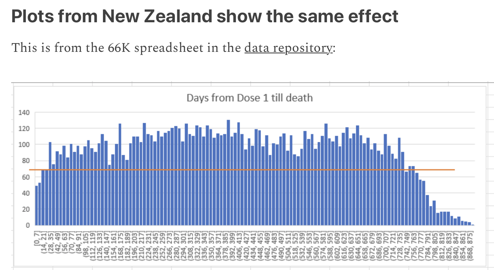
Kirsch didn't use the bucket system in his plot, so people who later got subsequent doses remained included under the first dose.
I tried using the age composition of the cohort to calculate a baseline for the expected number of deaths per week. I used data from infoshare.stats.govt.nz to calculate a CMR for each single-year age in 2021-2022, and I indexed an associative array of CMR values for each age with a vector of the ages of people in my cohort, and I took the average value of the resulting vector, which gave me a baseline for the CMR. And I multiplied it by the cohort size to get the baseline for the number of deaths. My baseline for the weekly number of deaths was about 94 at first but it gradually increased higher because of the aging of the cohort, so it's much higher than Kirsch's baseline:
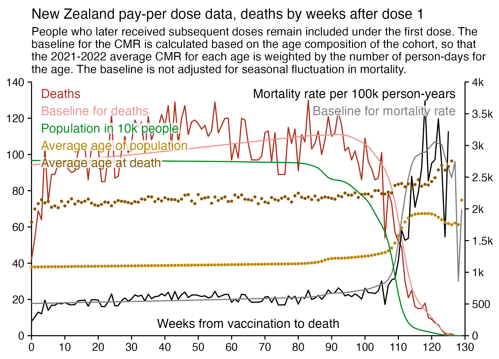
My baseline gets higher over time because a year after the day of vaccination people are a year older, and also because younger people got the first dose later so they run into the end of the dataset earlier.
Uncle John Returns got similar results: [https://x.com/UncleJo46902375/status/1734606430739873865]
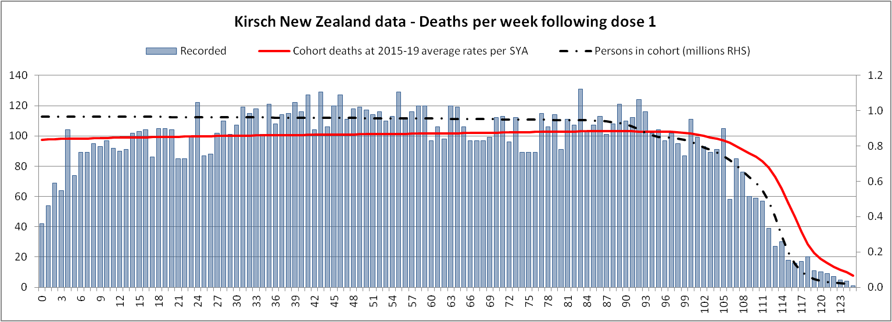
The aging of the population has a pretty big impact on the baseline for the mortality rate. The plots in this GIF file are otherwise identical except in the other plot I didn't model the aging of the population over time:
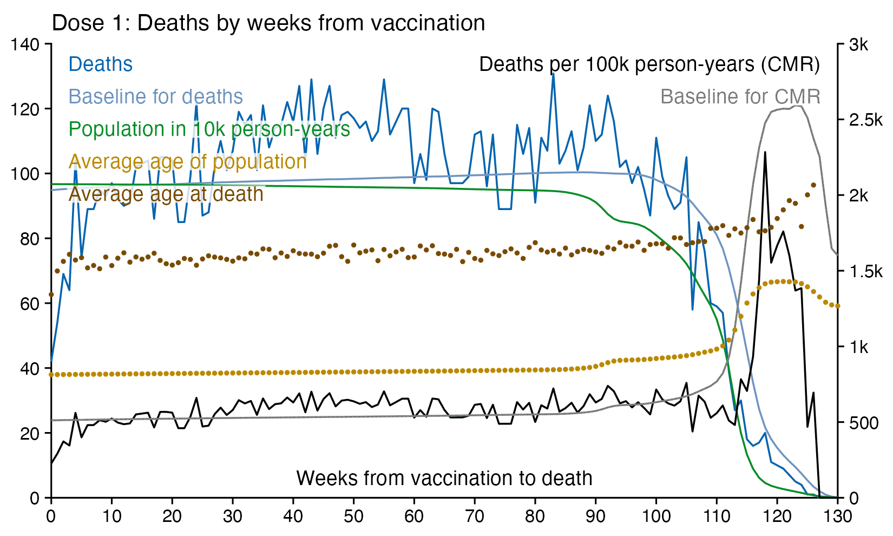
library(tidyverse)
t=as.data.frame(data.table::fread("nz-record-level-data-4M-records.csv"))
for(i in grep("date",colnames(t)))t[,i]=as.Date(t[,i],"%m-%d-%Y")
maxdate=as.Date("2023-9-30")
t=t[!(!is.na(t$date_of_death)&t$date_of_death>maxdate),]
t=t[!t$date_time_of_service>maxdate,]
t=t[!(!is.na(t$date_of_death)&t$date_of_death<t$date_time_of_service),]
# t=t[order(t$date_time_of_service),]
# t=t[!duplicated(t$mrn),]
t=t[t$dose_number%in%1,]
# age=t$date_of_birth%--%t$date_time_of_service%/%years()
# t=t[age%in%60:79,]
# t=t[t$date_time_of_service%in%as.Date("2021-7-1"):as.Date("2021-9-30"),]
bin=7
dead=t[!is.na(t$date_of_death),]
deadbin=as.numeric(dead$date_of_death-dead$date_time_of_service)%/%bin
endbin=as.numeric(maxdate-t$date_time_of_service)%/%bin
age=t$date_of_birth%--%t$date_time_of_service/years()
nzpop=colMeans(tail(read.csv("https://sars2.net/f/nz_infoshare_population.csv"),2)[,2:96])
nzdeath=colMeans(tail(read.csv("https://sars2.net/f/nz_infoshare_deaths.csv"),2)[,2:96])
cmr=data.frame(x=0:94,y=nzdeath/nzpop*1e5)
cmr=c(cmr$y,predict(loess(y~x,cmr,control=loess.control(surface="direct")),95:120))
bins=0:max(endbin)
pop=rev(cumsum(rev(table(factor(endbin,bins)))))*bin
baseline=sapply(bins,\(i)mean(cmr[floor(age[i<=endbin]+i*bin/365)+1]))
xy=data.frame(bin=bins,baseline,pop)
xy$dead=as.numeric(table(factor(deadbin,xy$bin)))
xy$cmr=xy$dead/xy$pop*1e5*365
xy$age=sapply(bins,\(i)mean(age[i<=endbin]))+xy$bin*bin/365
xy$deadage=tapply(dead$age,factor(deadbin,xy$bin),mean)+xy$bin*bin/365
xy$deadbase=xy$baseline*xy$pop/1e5/365
# xy$bin=xy$bin*bin # display days instead of weeks since vaccination on x-axis
xy$cmr[xy$pop<1e4]=NA
label=read.csv(row.names=1,text="name,title
cmr,Mortality rate per 100k person-years
baseline,Baseline for mortality rate
dead,Deaths
deadbase,Baseline for deaths
age,Average age of population
deadage,Average age at death
pop,Population in 10k people")
label$color=c("black","gray50",hcl(15,100,40),hcl(15,60,70),hcl(60,90,60),hcl(60,110,40),hcl(135,80,50))
lab1=strsplit("dead,deadbase,pop,age,deadage",",")[[1]]
lab2=strsplit("cmr,baseline",",")[[1]]
label$mult=1
label["pop",]$mult=1/bin/10000
label["baseline",]$mult=label["cmr",]$mult=1
xstart=ystart=0
cand=c(sapply(c(1,2,5),\(x)x*10^c(-10:10)))
ymax=max(t(t(xy[,lab1])*label[lab1,]$mult),na.rm=T)
ystep=cand[which.min(abs(cand-ymax/5))]
yend=ystep*ceiling(ymax/ystep)
xstep=cand[which.min(abs(cand-max(xy$bin)/9))]
xend=xstep*ceiling(max(xy$bin)/xstep)
xbreak=seq(xstart,xend,xstep)
ybreak=seq(ystart,yend,ystep)
ymax2=max(t(t(xy[,lab2])*label[lab2,]$mult),na.rm=T)
ystep2=cand[which.min(abs(cand-ymax2/6))]
yend2=ceiling(ymax2/ystep2)*ystep2
secmult=yend/yend2*.99999
label1=data.frame(x=.02*xend,y=seq(yend*.955,ystart,,15)[1:length(lab1)],label=label[lab1,]$title,color=label[lab1,]$color)
label2=data.frame(x=.98*xend,y=seq(yend*.955,ystart,,15)[1:length(lab2)],label=label[lab2,]$title,color=label[lab2,]$color)
label$mult=label$mult*ifelse(rownames(label)%in%lab2,secmult,1)
xy2=as.data.frame(t(t(xy)*c(1,label[names(xy)[-1],]$mult)))
xy2=xy2[sample(nrow(xy2)),] # get random pattern of overlap between `geom_point`
kimi=\(x)ifelse(abs(x)>=1e6,paste0(x/1e6,"M"),ifelse(abs(x)>=1e3,paste0(x/1e3,"k"),x))
p=ggplot(xy2,aes(x=bin))+
geom_hline(yintercept=ystart,color="black",linewidth=.35,lineend="square")+
geom_vline(xintercept=c(xstart,xend),color="black",linewidth=.35,lineend="square")+
geom_line(aes(y=dead),linewidth=.4,color=label["dead",]$color)+
geom_line(aes(y=deadbase),linewidth=.4,color=label["deadbase",]$color)+
geom_line(aes(y=cmr),linewidth=.4,color=label["cmr",]$color)+
geom_line(aes(y=baseline),linewidth=.4,color=label["baseline",]$color)+
geom_line(aes(y=pop),linewidth=.4,color=label["pop",]$color)+
geom_point(aes(y=age),size=.4,color=label["age",]$color)+
geom_point(aes(y=deadage),size=.4,color=label["deadage",]$color)+
geom_label(data=label1,aes(x=x,y=y,label=label),fill=alpha("white",.8),label.r=unit(0,"lines"),label.padding=unit(.04,"lines"),label.size=0,size=3.2,hjust=0,vjust=.5,color=label1$color)+
geom_label(data=label2,aes(x=x,y=y,label=label),fill=alpha("white",.8),label.r=unit(0,"lines"),label.padding=unit(.04,"lines"),label.size=0,size=3.2,hjust=1,vjust=.5,color=label2$color)+
annotate(geom="label",x=xend/2,y=0,vjust=-.7,hjust=.5,label="Weeks from vaccination to death",fill=alpha("white",.8),label.r=unit(0,"lines"),label.padding=unit(.04,"lines"),label.size=0,size=3.2)+
labs(x=NULL,y="",title=paste0("New Zealand pay-per dose data, deaths by weeks after dose 1")|>str_wrap(100),subtitle=paste0("People who later received subsequent doses remain included under the first dose. The baseline for the CMR is calculated based on the age composition of the cohort, so that the 2021-2022 average CMR for each age is weighted by the number of person-days for the age. The baseline is not adjusted for seasonal fluctuation in mortality.")|>str_wrap(86))+
coord_cartesian(clip="off")+
scale_x_continuous(limits=c(xstart,xend),breaks=xbreak,expand=c(0,0))+
scale_y_continuous(limits=c(ystart,yend),breaks=ybreak,expand=c(0,0),label=kimi,sec.axis=sec_axis(trans=~./secmult,breaks=seq(0,yend2,ystep2),label=kimi))+
theme(axis.text=element_text(size=8,color="black"),
axis.ticks=element_line(linewidth=.35,color="black"),
axis.ticks.length=unit(.2,"lines"),
axis.title=element_blank(),
axis.title.y.right=element_text(margin=margin(0,0,0,5)),
legend.position="none",
panel.background=element_rect(fill="white"),
panel.grid=element_blank(),
plot.margin=margin(.3,.3,.3,.3,"lines"),
plot.subtitle=element_text(size=8.4,margin=margin(0,0,.6,0,"lines")),
plot.title=element_text(size=10.2,margin=margin(.2,0,.4,0,"lines")))
ggsave("1.png",width=5,height=3.6,dpi=400)
system("qlmanage -p 1.png &>/dev/null")
Kirsch posted this tweet where he arbitrarily used 35 deaths per week as the baseline because it was the number of deaths on days 9-15 after vaccination: [https://x.com/stkirsch/status/1733608287332073708]
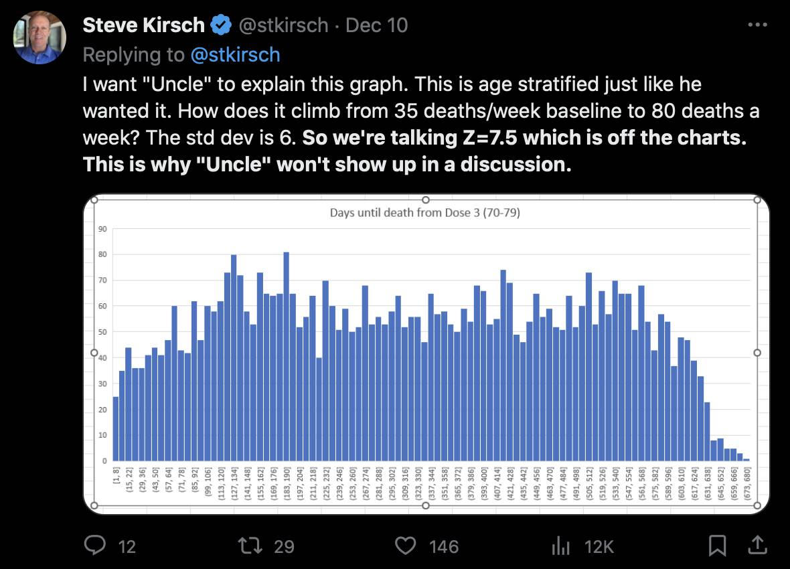
When I used the same data for deaths after dose 3 in ages 70-79 but I calculated the baseline based on the age composition of the cohort, I got a baseline of about 53 deaths on week 0 which gradually increased to about 59 deaths by week 80:
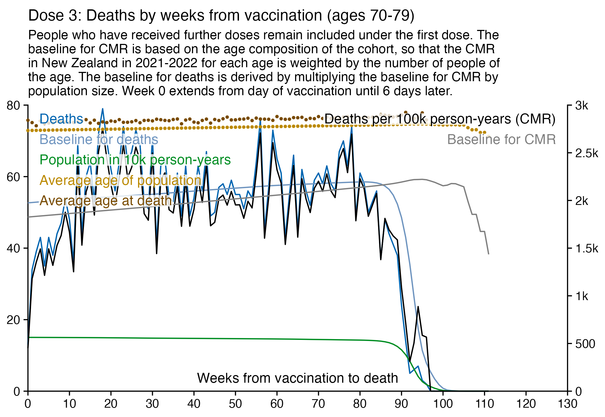
In the plot above the number of deaths is above the baseline from around week 15 to week 30, but it could be because of the first wave of COVID deaths in early 2022. Among the people whose age listed in the age column is between 70 and 79, the vast majority of third doses were given between December 2021 and February 2022:
> t=as.data.frame(data.table::fread("nz-record-level-data-4M-records.csv"))
> t=t[t$dose==3&t$age>=70&t$age<80,]
> table(sub("(.*)-.*-(.*)","\\2-\\1",t$date_time_of_service))
2021-09 2021-10 2021-11 2021-12 2022-01 2022-02 2022-03 2022-04 2022-05 2022-06
5 143 4063 26900 84546 26367 4666 791 518 360
2022-07 2022-08 2022-09 2022-10 2022-11 2022-12 2023-01 2023-02 2023-03 2023-04
570 343 168 98 96 95 54 35 53 209
2023-05 2023-06 2023-07 2023-08 2023-09
153 91 24 21 8
In the file data-transparency/New Zealand/doc/sensitivity analysis.docx, Kirsch wrote:
The point of this analysis is to show that the deaths after dose 3 peak around 6 months from the shot, regardless of which month the dose 3 shots were given in. This is a HUGE problem to explain. There is no explanation other than the vaccines are causing the death peaks.
Here is the histogram for Dose 3 delivery in New Zealand; this was of only the people who were vaxxed and died, but is a good proxy for the overall delivery:
So I then plotted the deaths since Dose 3 for Doses delivered in Nov 2021, Dec 2021, ... , March 2022.
As you can see the patterns do NOT shift. The peak is always around day 170.
This means there wasn't a background event causing the peak.
It means the peaks were due to the vaccine itself.
[...]
There is a steady increase in deaths per month which levels off at month 6 (day 170) no matter when you are vaccinated. The only way this can happen is if it is the vaccines causing this.
We'll go backward from vaxxed in March 2022. Y-axis is # people who died within the 28 day bucket:

Kirsch wrote that the peak in deaths was always around day 170 regardless of which month the vaccine doses were given. However the plots above actually show that the deaths peaked on days 171-198 in November 2021 but on days 115-142 in March 2022, so the time until the peak seems to have been getting shorter over time. When I also included further months past March 2022 and I used 30-day bins instead of 28-day bins, I got a linear trend where the deaths peaked on days 180-209 for doses given in January 2022, on days 150-179 for doses given in February, on days 120-149 for doses given in March, and on days 90-119 for doses given in April (or actually for doses given in January there was a second even higher peak around days 510-599):

t=as.data.frame(data.table::fread("nz-record-level-data-4M-records.csv"))
for(i in grep("date",colnames(t)))t[,i]=as.Date(t[,i],"%m-%d-%Y")
dead=t[!is.na(t$date_of_death),]
dead=dead[dead$dose_number==3,]
m=t(table(as.numeric(dead$date_of_death-dead$date_time_of_service)%/%30*30,substring(dead$date_time_of_service,1,7)))
colnames(m)=paste0(colnames(m),"-",as.numeric(colnames(m))+29)
disp=ifelse(m>=2e3,paste0(sprintf("%.1f",m/1e3),"k"),m)
m=m/apply(m,1,max)
pheatmap::pheatmap(
m,
filename="0.png",
cluster_rows=F,
cluster_cols=F,
legend=F,
cellwidth=20,
cellheight=20,
fontsize=9,
border_color=NA,
display_numbers=disp,
fontsize_number=8,
na_col="white",
number_color=ifelse(m>.85,"white","black"),
breaks=seq(0,1,,256),
colorRampPalette(colorspace::hex(colorspace::HSV(c(210,210,210,160,110,60,30,0,0,0),c(0,.25,rep(.5,8)),c(rep(1,8),.5,0))))(256)
)
system("convert -trim 0.png -bordercolor white -gravity northwest -splice x14 -size `identify -format %w 0.png`x -pointsize 45 caption:\"$(fold -sw 109 <<<'Dose 3: Days from vaccination to death by month of vaccination, 30-day bins.')\" +swap -append -trim -border 24 +repage 1.png")
If you look at first doses instead of third doses, there is also a similar linear pattern where the number of deaths peaks on days 420-449 for vaccines given in May 2021, and over the next months the peak shifts by about 30 days each month:

So in the case of both the first and third doses, the deaths seem to peak around July 2023, when there was elevated mortality because it was winter, and the peak in COVID deaths in New Zealand was in June 2023 (even though exces mortality was lower in winter 2023 than winter 2022).
When I showed Kirsch the plot for dose 3 above, he pointed out that in the first half of 2023 there was an increasing number of deaths per month for doses given in January 2022, and he said that the expected number of deaths should be decreasing because the cohort gets smaller:
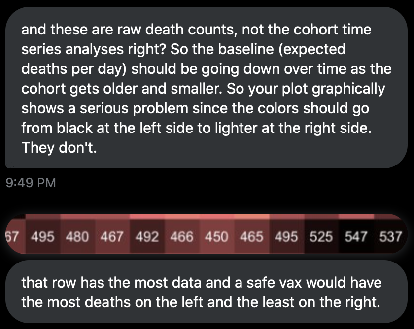
However part of the reason why the number of deaths was increasing in the screenshot above was that it was getting closer to winter, because the rightmost square in the screenshot showed the number of deaths around July 2023. And also the baseline for the expected number of deaths increases over time because the cohort gets older, as you can see from this plot which shows third doses given in January 2022 like Kirsch's screenshot:
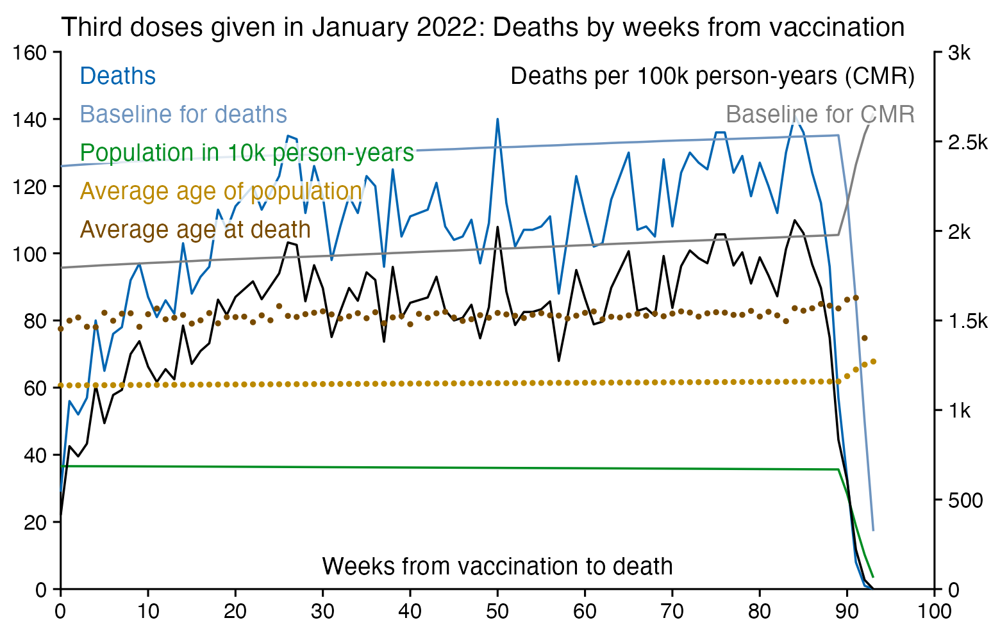
In the plot below, vaccines given in May 2022 have a low number of deaths in July 2022, even though the number of deaths peaks in July 2022 for vaccines given earlier months. So it seems to indicate that the healthy vaccinee effect lasts for at least around two months. And also deaths peak in June 2023 for doses given in March 2023 and earlier months, but doses given in April have a lower number of deaths in June than in July. So for the doses given in April 2023, it seems like there's either a healthy vaccinee effect in June or the vaccine has a protective effect against COVID in June:

Kirsch wrote: [https://kirschsubstack.com/p/yet-another-flawed-fact-check-on]
Deaths fall every August like clockwork in New Zealand:
So I looked at people who got the shot in August, 2021:
Deaths since injection date in August 2021. x-axis is the number of days since the shot. y-axis is the number of deaths in the time period. Borders are closed, no COVID and any temporal HVE effect that might exist is gone after the first bar here (the first month).
The death rate climbed 43% when it should have gone down by 22%.
Don't need a calculator on that one.
I've heard people try to claim "temporal HVE" or it was COVID deaths or it was because the vaccinated the "frail and elderly first." There was no COVID in this period, the borders were closed, and temporal HVE never lasts over 21 days (and this data shows it was gone after 2 weeks because New Zealand basically tried to vaccinate everyone who was still living because the "about to die" were viewed as a threat to the living). And the "frail and elderly" is completely bogus because these people die just like everyone else: any fixed group of people of any age will die at a progressively smaller rate over time (if nothing is going on in the background).
So they are grasping at straws. It shows how desperate they are to propose explanations that simply do not fit and have no evidentiary basis.
So this "fact check" relies on a hand-waving argument with no evidentiary support. Are you surprised? These people never bother to check what they are told. They just eat it up hook, line, and sinker.
So now you know why I can't find anyone qualified to analyze data of this type to challenge me one-on-one on the data: this data is DEVASTATING. That was just one small example.
(The "temporal healthy vaccinee effect" is a term coined by Jeffrey Morris, who differentiates the temporal HVE which lasts for a short time after vaccination from the inherent HVE which lasts for a longer time. [https://x.com/search?q=%22temporal+healthy+vaccinee+effect%22&f=live])
When I took people who were vaccinated in August 2021 like in Kirsch's plot, and I calculated a baseline for the weekly number of deaths based on the age composition of the cohort, the number of deaths remained below the baseline for around the first 40 weeks after vaccination. The CMR stayed above the baseline from around weeks 40 to 55, but it was partially because of COVID deaths in 2022, and partially because there was elevated mortality during the winter but I didn't adjust for seasonality when I calculated my baseline:
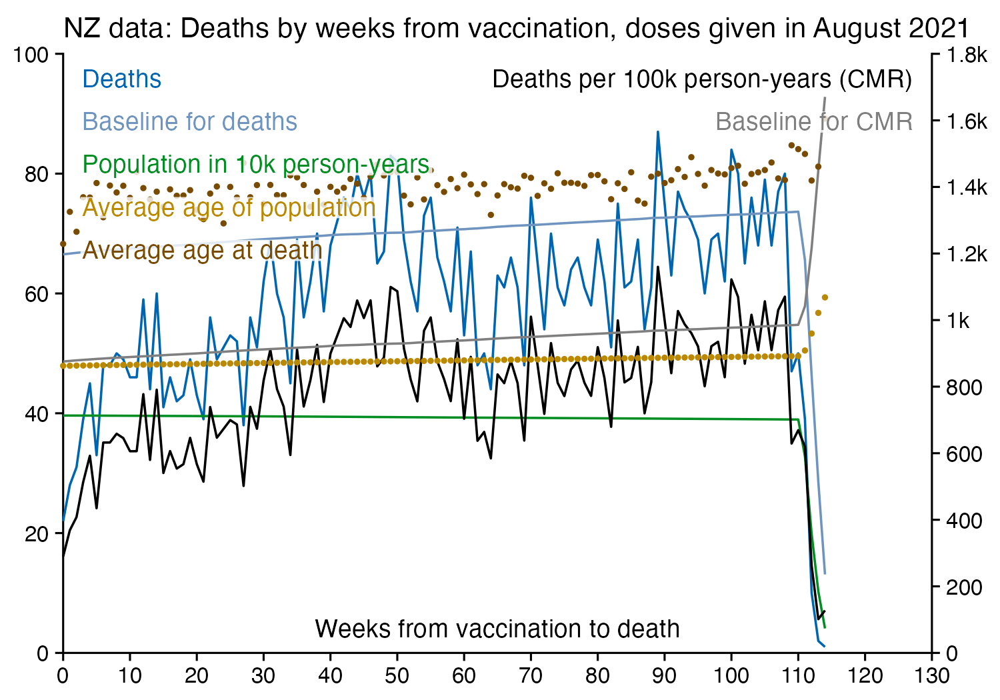
So my plot is further evidence that the healthy vaccinee effect lasts longer than 3 weeks contrary to what Kirsch claims.
Compared to statistics for the daily number of new vaccine doses published by the New Zealand Ministry of Health, the proportion of doses that are missing from Young's dataset gets lower over time, so that the proportion is the highest in 2021 but the lowest in 2023: [https://github.com/minhealthnz/nz-covid-data/blob/main/vaccine-data/2023-05-03/doses_by_date.csv]

The plot above shows that the data from the MoH has regular dips in the number of vaccines given on weekends, but Young's dataset is missing the dips which makes it look like it might be a moving average of daily data. The MoH data also has a single-day spike in the number of vaccine doses given on October 16th 2021, but a similar spike is not visible in Young's data.
If you divide the average number of doses given on weekdays with the average number of doses given on weekends, the ratio is about 0.96 in Young's dataset, but the ratio is about 1.55 in the MoH data and about 1.53 at OWID:
> moar=read.csv("nz-record-level-data-4M-records.csv")
> ta=table(moar$date_time_of_service)
> weekend=format(as.Date(names(ta),"%m-%d-%Y"),"%u")>="6"
> mean(ta[!weekend])/mean(ta[weekend])
[1] 0.9575534
> moh=read.csv("https://github.com/minhealthnz/nz-covid-data/raw/main/vaccine-data/2023-05-03/doses_by_date.csv")
> s=rowSums(moh[,-1])
> weekend=format(as.Date(moh[,1]),"%u")>="6"
> mean(s[!weekend])/mean(s[weekend])
[1] 1.551969
> owid=read.csv("https://covid.ourworldindata.org/data/owid-covid-data.csv")
> weekend=format(as.Date(owid$date),"%u")>="6"
> mean(owid$new_vaccinations[!weekend],na.rm=T)/mean(owid$new_vaccinations[weekend],na.rm=T)
[1] 1.525399
I have thought of three possible explanations for the discrepancy in the weekend-weekday ratio, where I consider option 1 to be by far the most likely:
The data for the daily number of new vaccine doses at OWID is almost identical to a CSV file that was published on the GitHub account of the New Zealand Ministry of Health. On some days there's a difference of one or two doses. On the last week of data included at OWID, many days have a fairly large number of missing doses, which might be because there was a registration delay before new vaccination doses were added, because OWID only includes data up to April 4th but the file published by the Ministry of Health includes data up to May 2nd:
$ wget -q https://github.com/minhealthnz/nz-covid-data/raw/main/vaccine-data/2023-05-03/doses_by_date.csv
$ (gsed -u 1q;tail -n4)<doses_by_date.csv
Date,First doses,Second doses,Third primary doses,First Boosters,Second Boosters
2023-04-29,28,2695,0,127,2247
2023-04-30,12,632,0,49,774
2023-05-01,20,6551,10,177,3452
2023-05-02,18,7422,4,206,3788
$ awk 'NR==1||/New Zealand/' owid-covid-data.csv|csvtk cut -f date,new_vaccinations|awk -F, 'NR==FNR{a[$1]=$2;next}{x=0;for(i=2;i<=NF;i++)x+=$i;if(a[$1])print $1,x,a[$1]}' - <(sed 1d doses_by_date.csv)|tail -n20
2023-03-16 599 599.0
2023-03-17 536 536.0
2023-03-18 269 269.0
2023-03-19 111 111.0
2023-03-20 370 370.0
2023-03-21 486 484.0
2023-03-22 479 480.0
2023-03-23 481 479.0
2023-03-24 453 453.0
2023-03-25 329 328.0
2023-03-26 103 103.0
2023-03-27 424 424.0
2023-03-28 474 473.0
2023-03-29 509 505.0
2023-03-30 623 619.0
2023-03-31 800 793.0
2023-04-01 9958 9927.0
2023-04-02 3692 3685.0
2023-04-03 19746 19488.0
2023-04-04 20129 19733.0
From the first plot below, you can see that there is a linear trend when the the number of days from vaccination to death is plotted against the day of vaccination. In April and May 2021, the average number of days from vaccination until death was below the linear trend, but it might be because the average age of dead vaccine recipients was higher in May 2021 than in subsequent months as you can see from the third plot below. Or alternatively it might be because there was a period of high excess mortality from March to July 2022, but there was a sudden drop in excess mortality in late July 2022.


In batch 1 which has by far the highest percentage of deaths per dose, the average age at death is 86 when rounded to the nearest integer, and the average age at vaccination is 66 for all recipients and 85 for dead recipients, and the average number of days between death and vaccination is about 403. The average age at vaccination among dead recipients is below 85 for all batches with an ID between 2 and 93, but in batch 94 and some newer batches, the average age at vaccination among dead recipients reaches above 85. But compared to batch 1, the newer batches were given much more recently, so they have a smaller percentage of deaths per dose because there's not as many people who have died of old age since vaccination:

In the heatmap above, the end of data refers to October 27th 2023 which is the date of the last death included in the dataset. I calculated the person-years by calculating the time from a vaccine dose until either death or October 27th 2023, so that I included the time after a person got a subsequent dose as part of the person-years of earlier doses.
The first 9 rows in the heatmap above are per-dose but the last 4 rows are per-person. If a person got two doses from the same batch and died later, the person is counted twice on the row for doses leading to deaths. Batch 1 has the highest percentage of people who got 2 doses from the same batch, and the people who got 2 doses from batch 1 are more likely to have died later than the people who got only a single dose from batch 1, so in batch 1 the percentage of deaths per person is lower than the percentage of doses leading to deaths out of all doses.
R code:
t=as.data.frame(data.table::fread("nz-record-level-data-4M-records.csv")) # this is faster than `read.csv`
for(i in grep("date",colnames(t)))t[,i]=as.Date(t[,i],"%m-%d-%Y")
dead=t[!is.na(t$date_of_death),]
doses=table(t$batch_id)
fa=factor(dead$batch_id,names(doses))
persons=table(t$batch_id[!duplicated(t[,c("mrn","batch_id")])])
uniqdeaths=table(fa[!duplicated(dead[,c("mrn","batch_id")])])
deaths=table(fa)
maxdate=max(dead$date_of_death)
pyear=tapply(pmin(t$date_of_death,maxdate,na.rm=T)-t$date_time_of_service,t$batch_id,sum)/365.2422
pop=tail(read.csv("https://sars2.net/f/nz_infoshare_population.csv"),2)[,2:96]
death=tail(read.csv("https://sars2.net/f/nz_infoshare_deaths.csv"),2)[,2:96]
cmr=data.frame(x=0:94,y=colMeans(death)/colMeans(pop)*1e5)
cmr=c(cmr$y,predict(loess(y~x,cmr,control=loess.control(surface="direct")),95:120))
meanage=as.numeric(pmean(pmin(maxdate,t$date_of_death,na.rm=T),t$date_time_of_service)-t$date_of_birth)/365.2422
d=data.frame(Doses=c(doses))
d$`Doses leading to a death`=deaths
d$`Percentage of deaths per dose`=100*deaths/doses
d$`Person-years`=pyear
d$`Deaths per 100,000 person-years (CMR)`=deaths/pyear*1e5
d$`Baseline for CMR based on age composition`=tapply(cmr[floor(meanage)+1],t$batch_id,mean)
d$`Excess CMR percent`=(d[,5]-d[,6])/d[,6]*100
d$`Average days between vaccination and death`=tapply(dead$date_of_death-dead$date_time_of_service,fa,mean)
d$`Average age at vaccination`=tapply(t$date_time_of_service-t$date_of_birth,t$batch_id,mean)/365.2422
d$`Average age at death`=tapply(dead$date_of_death-dead$date_of_birth,fa,mean)/365.2422
# d$`Average age at vaccination for dead recipients`=tapply(dead$date_time_of_service-dead$date_of_birth,dead$batch_id,mean)/365.2422
d$`Average days from dose to end of data`=tapply(maxdate-t$date_time_of_service,t$batch_id,mean)
d$`Average days from death to end of data`=tapply(maxdate-dead$date_of_death,fa,mean)
d$`Persons`=persons
d$`Deaths`=uniqdeaths
d$`Percentage of deaths per person`=100*uniqdeaths/persons
d$`Doses per person`=doses/persons
m=t(apply(d,2,\(x)(x-min(x,na.rm=T))/(max(x,na.rm=T)-min(x,na.rm=T))))
m[5,]=d[,5]/max(d[,5:6])
m[6,]=d[,6]/max(d[,5:6])
kimir2=\(x){x[]=ifelse(or(x>=1e6,x<=-1e6),paste0(round(x/1e6,ifelse(abs(x)<1e7,1,0)),"M"),ifelse(or(x>=1e3,x<=-1e3),paste0(round(x/1e3,ifelse(abs(x)<1e4,1,0)),"k"),round(x)));x}
disp=kimir2(t(d))
disp[3,]=sprintf("%.1f",d[,3])
disp[15,]=sprintf("%.1f",d[,15])
disp[16,]=sprintf("%.2f",d[,16])
slices=3
for(i in 1:slices){
step=ceiling(ncol(m)/slices)
start=(i-1)*step+1
end=min(start+step-1,ncol(m))
pheatmap::pheatmap(
m[,start:end],
filename=paste0("i",i,".png"),
cluster_rows=F,
cluster_cols=F,
legend=F,
cellwidth=20,
cellheight=20,
fontsize=9,
border_color=NA,
display_numbers=disp[,start:end],
fontsize_number=8,
number_color="black",
na_col="gray90",
breaks=seq(0,1,,256),
colorRampPalette(colorspace::hex(colorspace::HSV(c(210,210,130,60,40,20,0),c(0,.5,.5,.5,.5,.5,.5),1)))(256)
)
}
system("montage -geometry +0+0 -tile 1x i[123].png 1.png")
The plot below shows the average days from vaccination to death by average date of vaccination for each batch. Batch 1 is below the trend line as expected, because it has one of the highest average ages at death, but unexpectedly there are also a couple of batches that have a relatively young age at death but that are still below the trend line, like the batches with the IDs 17, 20, 21, 22, 23, and 25:

R code:
library(ggplot2)
t=as.data.frame(data.table::fread("nz-record-level-data-4M-records.csv")) # this is faster than `read.csv`
for(i in grep("date",colnames(t)))t[,i]=as.Date(t[,i],"%m-%d-%Y")
x=as.Date(round(tapply(t$date_time_of_service,t$batch_id,mean)),"1970-1-1")
t2=t[!is.na(t$date_of_death),]
y=tapply(t2$date_of_death-t2$date_time_of_service,t2$batch_id,mean)
z=tapply((t2$date_of_death-t2$date_of_birth)/365.2422,t2$batch_id,mean)[names(y)]
xy=data.frame(x=x[names(y)],y)
name=names(y)
xstart=as.Date("2021-5-1")
xend=as.Date("2023-9-1")
xbreak=seq(xstart,xend,"1 month")
xlab=xbreak|>format("%b 1 %y")
xlab[c(F,T)]=""
candidates=c(sapply(c(1,2,5),\(x)x*10^c(-10:10)))
ystep=candidates[which.min(abs(candidates-max(xy$y)/6))]
ystart=0
yend=ystep*ceiling(max(xy$y)/ystep)
ybreak=seq(ystart,yend,ystep)
ggplot(xy,aes(x,y))+
geom_smooth(method="lm",formula=y~x,linewidth=.3,se=F,color="black",linetype=2)+
geom_vline(xintercept=xstart,linewidth=.3)+
geom_hline(yintercept=0,linewidth=.3)+
geom_point(aes(color=z),size=.5)+
ggrepel::geom_text_repel(label=name,size=2.3,max.overlaps=Inf,segment.size=.2,min.segment.length=.2,force=10,force_pull=2,box.padding=.13)+
scale_x_date(limits=c(xstart,xend),breaks=xbreak,labels=xlab,expand=c(0,0))+
scale_y_continuous(limits=c(ystart,yend),breaks=ybreak,expand=c(0,0))+
scale_color_gradientn(colors=colorspace::hex(colorspace::HSV(c(210,210,120,60,0,0),c(.5,rep(1,5)),c(1,.7,.7,.7,.7,0))),name="Average age at death")+
coord_cartesian(clip="off")+
labs(title="Vaccine batches in leaked NZ data: average days from vaccination to death\nby average date of vaccination",x="Average date of vaccination",y="Average days from vaccination to death")+
theme(
axis.text=element_text(size=8,color="black"),
axis.text.x=element_text(angle=90,vjust=.5,hjust=1),
axis.ticks=element_line(linewidth=.3,color="black"),
axis.ticks.length=unit(.2,"lines"),
axis.title=element_text(size=9),
axis.title.x=element_text(margin=margin(4,0,0,0)),
legend.position=c(.97,.90),
legend.justification="right",
legend.direction="horizontal",
legend.key.width=unit(1,"lines"),
legend.key.height=unit(1,"lines"),
legend.spacing.y=unit(.05,"cm"),
legend.text=element_text(size=8,vjust=.5),
legend.title=element_text(size=8,vjust=.8),
panel.background=element_rect(fill="white"),
panel.grid=element_blank(),
plot.background=element_rect(fill="white"),
plot.margin=margin(.4,.5,.4,.5,"lines"),
plot.subtitle=element_text(size=9),
plot.title=element_text(size=10)
)
ggsave("1.png",width=5.5,height=4)
Out of the files generated by buckets.py, the biggest file is all_all_buckets_with_batch id.txt, which contains the number of dead and alive people grouped by batch, month, week since vaccination, and single-year age:
$ sed 3q data-transparency/New\ Zealand/time-series\ summaries/all_all_buckets_with_batch\ id.txt|column -t month dose batch week age alive dead 2021-01 0 0 0 1 248 0 2021-01 0 0 0 2 248 0
You can use the file to calculate the person-years of each batch so that once a person gets a new batch, they are no longer included under the person-years of the previous batch, and you can also calculate an ASMR for each batch:
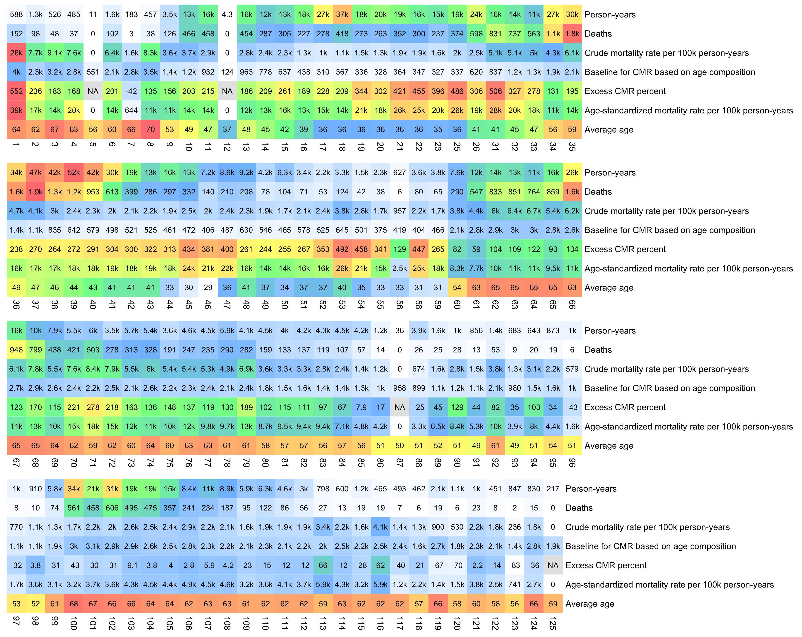
I don't know why the early batches have such high excess mortality in the plot above, but I might have made some error.
bat=as.data.frame(data.table::fread("data-transparency/New Zealand/time-series summaries/all_all_buckets_with_batch id.txt"))
bat=bat[bat$batch!=0,]
esp=c(5000,5500,5500,5500,6000,6000,6500,7000,7000,7000,7000,6500,6000,5500,5000,4000,2500,1500,800,200)
ag=aggregate(bat$alive,bat[,c(1,3,5)],sum)
ag=aggregate(ag$x,ag[,2:3],mean)
ag=merge(ag,aggregate(bat$dead,bat[,c(3,5)],sum),by=1:2)
colnames(ag)[3:4]=c("alive","dead")
pop=tail(read.csv("https://sars2.net/f/nz_infoshare_population.csv"),2)[,2:96]
death=tail(read.csv("https://sars2.net/f/nz_infoshare_deaths.csv"),2)[,2:96]
cmr=data.frame(x=0:94,y=colMeans(death)/colMeans(pop)*1e5)
cmr=c(cmr$y,predict(loess(y~x,cmr,control=loess.control(surface="direct")),95:120))
fa=factor(ag$batch,sort(unique(ag$batch)))
pdays=tapply(ag$alive,fa,sum)
d=data.frame(`Person-years`=pdays/365*7,check.names=F)
d$Deaths=tapply(ag$dead,fa,sum)
d$`Crude mortality rate per 100k person-years`=tapply(ag$dead,fa,sum)/pdays*365/7*1e5
d$`Baseline for CMR based on age composition`=tapply(ag$alive*cmr[ag$age+1],fa,sum)/pdays
d$`Excess CMR percent`=ifelse(d[,2]==0,NA,100*(d[,3]-d[,4])/d[,4])
d$`Age-standardized mortality rate per 100k person-years`=tapply(ifelse(ag$alive<1e2,0,ag$dead/ag$alive*365/7)*esp[pmin(ag$age,95)%/%5+1],fa,sum,na.rm=T)
d$`Average age`=tapply(ag$age*ag$alive,fa,sum)/pdays
m=t(apply(d,2,\(x)(x-min(x,na.rm=T))/(max(x,na.rm=T)-min(x,na.rm=T))))
m[3,]=d[,3]/max(d[,3:4])
m[4,]=d[,4]/max(d[,3:4])
kimi=\(x){e=floor(log10(ifelse(x==0,1,abs(x))));e2=pmax(e,0)%/%3+1;x[]=ifelse(abs(x)<1,x,paste0(round(x/1e3^(e2-1),ifelse(e%%3==0,1,0)),c("","k","M","B","T")[e2]));x}
disp=kimi(t(d))
slices=4
for(i in 1:slices){
step=ceiling(ncol(m)/slices)
start=(i-1)*step+1
end=min(start+step-1,ncol(m))
pheatmap::pheatmap(
m[,start:end],
filename=paste0("i",i,".png"),
cluster_rows=F,
cluster_cols=F,
legend=F,
cellwidth=20,
cellheight=20,
fontsize=9,
border_color=NA,
display_numbers=disp[,start:end],
fontsize_number=8,
number_color="black",
na_col="gray90",
breaks=seq(0,1,,256),
colorRampPalette(colorspace::hex(colorspace::HSV(c(210,210,130,60,40,20,0),c(0,.5,.5,.5,.5,.5,.5),1)))(256)
)
}
system("montage -geometry +0+0 -tile 1x i[1234].png 1.png")
In the first 23 batches, the type of all vaccines is listed as "Pfizer BioNTech COVID-19", but later batches all contain a mixture of two or more vaccine types. However most vaccines in all batches are by Pfizer.

There's a FOIA response which includes a spreadsheet about Pfizer batch information. [https://fyi.org.nz/request/23334-per-batch-records-of-pfizer-covid-19-vaccine; search for xlsx] The code block below shows a CSV version of the second table from the spreadsheet. It might be possible to map some of the rarer vaccine types to Young's data, but it would be more difficult to map the batches with the type "Covid Adult Pfizer Original". There's three different batches with the type "Covid Adult Pfizer Original", with an expiration date on 2021-10-31, and with 49,140 doses. The batch IDs used by Barry Young don't seem to follow the same order as the batch numbers listed below. Young's data has 88 batches where the most common vaccine type is "Pfizer BioNTech COVID-19", but in the table below there's only 64 batches where the most common type is "Covid Adult Pfizer Original".
vaccine_type_name,batch_number,batch_expiry_date,doses_received_from_supplier Covid Adult Pfizer 15/15mcg Bivalent,GK1316,2024-02-29,348480 Covid Adult Pfizer 15/15mcg Bivalent,GK3907,2024-02-29,357120 Covid Adult Pfizer 15/15mcg Bivalent,GK3908,2024-02-29,1042560 Covid Adult Pfizer 30mcg Monovalent,FY4526,2023-08-31,1175040 Covid Adult Pfizer 30mcg Monovalent,HC8237,2024-09-30,14400 Covid Adult Pfizer Original,1F1028A,2022-09-30,210600 Covid Adult Pfizer Original,1F1043A,2023-01-31,140400 Covid Adult Pfizer Original,1F1045A,2022-07-31,19890 Covid Adult Pfizer Original,1F1047A,2022-10-31,43290 Covid Adult Pfizer Original,1F1059A,2023-02-28,77220 Covid Adult Pfizer Original,1K078A,2023-01-31,105300 Covid Adult Pfizer Original,1K080A,2023-01-31,189540 Covid Adult Pfizer Original,1L084A,2023-02-28,154440 Covid Adult Pfizer Original,35627TB,2023-02-28,77220 Covid Adult Pfizer Original,37726TB,2023-03-31,298350 Covid Adult Pfizer Original,8001016,2023-02-28,115830 Covid Adult Pfizer Original,8001749,2023-03-31,4680 Covid Adult Pfizer Original,EP2163,2021-05-31,65520 Covid Adult Pfizer Original,EP9605,2021-06-30,141570 Covid Adult Pfizer Original,ER7449,2021-06-30,118170 Covid Adult Pfizer Original,ET3045,2021-07-31,78390 Covid Adult Pfizer Original,ET9096,2021-07-31,186030 Covid Adult Pfizer Original,EX2405,2021-08-31,288990 Covid Adult Pfizer Original,FA5833,2021-09-30,100620 Covid Adult Pfizer Original,FC3558,2021-09-30,98280 Covid Adult Pfizer Original,FC5029,2021-10-31,150930 Covid Adult Pfizer Original,FD0927,2021-09-30,47970 Covid Adult Pfizer Original,FD9234,2021-10-31,49140 Covid Adult Pfizer Original,FE2090,2021-10-31,49140 Covid Adult Pfizer Original,FE3064,2021-10-31,49140 Covid Adult Pfizer Original,FE8163,2021-10-31,388440 Covid Adult Pfizer Original,FF2382,2021-12-31,645840 Covid Adult Pfizer Original,FF4206,2021-10-31,444600 Covid Adult Pfizer Original,FF4222,2021-10-31,530010 Covid Adult Pfizer Original,FF8871,2021-11-30,379080 Covid Adult Pfizer Original,FG0050,2021-11-30,358020 Covid Adult Pfizer Original,FG7372,2021-12-31,512460 Covid Adult Pfizer Original,FG9019,2021-12-31,250380 Covid Adult Pfizer Original,FH0114,2021-12-31,250380 Covid Adult Pfizer Original,FH3219,2022-01-31,300690 Covid Adult Pfizer Original,FH4091,2021-12-31,193050 Covid Adult Pfizer Original,FH4092,2021-12-31,129870 Covid Adult Pfizer Original,FH4752,2022-01-31,300690 Covid Adult Pfizer Original,FH9678,2021-12-31,274950 Covid Adult Pfizer Original,FJ8372,2021-12-31,421200 Covid Adult Pfizer Original,FK0115,2022-01-31,427050 Covid Adult Pfizer Original,FK0738,2022-06-30,266760 Covid Adult Pfizer Original,FK0892,2022-02-28,59670 Covid Adult Pfizer Original,FK6268,2022-02-28,19890 Covid Adult Pfizer Original,FK9414,2022-02-28,712530 Covid Adult Pfizer Original,FK9707,2022-06-30,168480 Covid Adult Pfizer Original,FL1072,2022-02-28,1498770 Covid Adult Pfizer Original,FL4210,2022-06-30,195390 Covid Adult Pfizer Original,FL5333,2022-02-28,101790 Covid Adult Pfizer Original,FL5729,2022-02-28,95940 Covid Adult Pfizer Original,FM4289,2022-06-30,336960 Covid Adult Pfizer Original,FM7532,2022-06-30,30420 Covid Adult Pfizer Original,FN4207,2022-09-30,585000 Covid Adult Pfizer Original,PCA0074,2023-02-28,328770 Covid Adult Pfizer Original,PCA0082,2023-03-31,226980 Covid Adult Pfizer Original,PCB0008,2022-12-31,451620 Covid Adult Pfizer Original,PCB0012,2023-01-31,624780 Covid Adult Pfizer Original,SDYX4,2023-03-31,81900 Covid Adult Pfizer Original,SDYY2,2023-03-31,2340 Covid Infant Pfizer,GP9809,2024-03-31,62400 Covid Paediatric Pfizer,FN4074,2023-04-30,166800 Covid Paediatric Pfizer,FP1430,2022-03-31,504000 Covid Paediatric Pfizer,FP8290,2023-04-30,192000 Covid Paediatric Pfizer,FP9643,2023-04-30,384000 Covid Paediatric Pfizer,FR4268,2022-11-30,4800 Covid Paediatric Pfizer,FW0201,2022-12-31,4800 Covid Paediatric Pfizer,FX8528,2023-08-31,249600 Covid Paediatric Pfizer,GE0694,2023-10-31,249600
As far as I can tell, data for the daily or weekly number new vaccine doses given by age group in New Zealand had not been published before Barry Young's data was leaked. The New Zealand Ministy of Health used to publish weekly reports which showed the cumulative number of fully and partially vaccinated people by age group, but it's not possible to use the reports to calculate the weekly number of new doses by age group, and at different times the reports used three different sets of age groups so it was difficult to combine the reports (and at one point the reports also had a large drop in the cumulative number of partially vaccinated people in all age groups). [https://github.com/minhealthnz/nz-covid-data/blob/main/vaccine-data/2023-05-03/sa2_all_ethnicity.csv]
In early 2021 when there was a spike in excess deaths in Peru which coincided with a vaccine rollout, Denis Rancourt blamed the deaths on the vaccine, even though the spike in deaths occurred around the same time in all age groups but younger age groups were given the vaccine much later than older age groups: [nopandemic.html#Mortality_by_age_group_in_Peru]
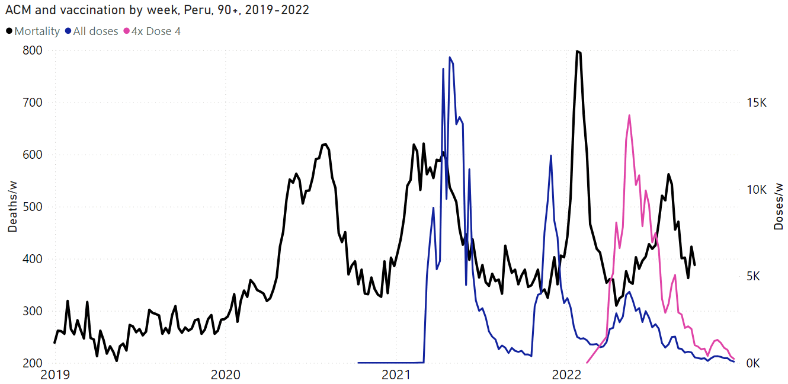
So I looked if a similar effect was visible in Young's data, but it's a bit difficult to tell because in New Zealand there isn't any clear spike in excess deaths which coincided with the rollout of a new vaccine dose, apart from maybe a spike in March 2022 which occurred about two months after there was a peak in the number of new vaccine doses. Young's data shows that in January to February 2022 when there was a peak in new vaccine doses in all 5 age groups I used below, the peak occurred the earliest in the age groups 75-84 and 85+ but it only occurred about 3 weeks later in the age group 15-64. However in March 2022 when there was the next peak in excess deaths, the peak occurred around the same time in all age groups, or in fact the peak occurred slightly earlier in younger age groups. So if the peak in deaths was caused by vaccines, then why didn't the peak occur earlier in the age groups which received the vaccine earlier? Or did the vaccine kill young people faster than old people?
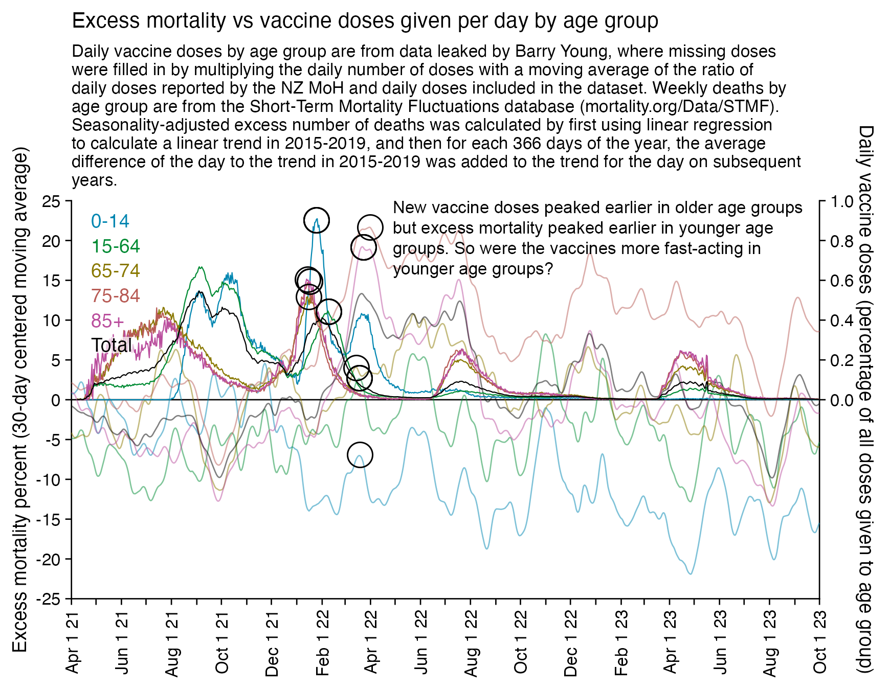
And also if the vaccines were killing a lot of young people, then why do the age groups 0-14 and 15-64 have negative excess deaths even for most of 2022 and 2023? I calculated excess deaths relative to a seasonality-adjusted linear projection of the weekly number of deaths in 2015-2019.
library(ggplot2)
t=as.data.frame(data.table::fread("nz-record-level-data-4M-records.csv"))
for(i in grep("date",colnames(t)))t[,i]=as.Date(t[,i],"%m-%d-%Y")
ages=as.numeric(substring(t$date_time_of_service,1,4))-as.numeric(substring(t$date_of_birth,1,4))
ages=ages-as.integer(substring(t$date_of_birth,6,12)<substring(t$date_time_of_service,6,12))
bands=c(0,15,65,75,85)
label=paste0(bands,c(paste0("-",bands[-1]-1),"+"))|>c("Total")
agemap=sapply(0:max(ages),\(i){r=i-bands;r[r<0]=NA;setNames(bands[which.min(r)],i)})
tab=table(t$date_time_of_service,agemap[ages+1])
mav=\(x,y){l=length(x);s=e=y%/%2;if(y%%2==0)e=e-1;setNames(sapply(1:l,\(i)mean(x[max(1,i-s):min(l,i+e)],na.rm=T)),names(x))}
moh=read.csv("https://github.com/minhealthnz/nz-covid-data/raw/main/vaccine-data/2023-05-03/doses_by_date.csv")
moh=setNames(rowSums(moh[,-1]),moh[,1])
total=rowSums(tab)
missing=mav(moh[names(total)],30)/total
missing[1:20]=100
missing[is.na(missing)]=mean(tail(na.omit(missing),50))
tab=missing*tab
tab=cbind(tab,Total=rowSums(tab))
mort=read.csv("https://www.mortality.org/File/GetDocument/Public/STMF/Outputs/NZL_NPstmfout.csv")|>subset(Sex=="b")
isoweek=\(year,week,weekday=1){d=as.Date(paste0(year,"-1-7"));d-(as.integer(format(d,"%w"))+6)%%7-1+7*(week-1)+weekday}
mavdays=30
xy=do.call(rbind,lapply(1:6,\(i){
d=data.frame(x=isoweek(mort$Year,mort$Week,4),y=mort[,i+4]/7)
d=rbind(d,data.frame(x=seq(min(d$x),max(d$x),1),y=NA))
d=d[!duplicated(d$x),]
d=d[order(d$x),]
d$y=zoo::na.approx(d$y)
prediction=d$x<="2019-12-31"&d$x>="2015-01-01"
linear=predict(lm(y~x,d[prediction,]),d)
days=substr(d$x,6,10)
daily=tapply(d$y[prediction]-linear[prediction],days[prediction],mean)
seasonal=mav(linear+daily[days],mavdays)
d$y=(mav(d$y,mavdays)-seasonal)/seasonal*100
d$z=label[i]
d
}))
xy2=data.frame(x=as.Date(rownames(tab)),y=100*c(t(t(tab)/colSums(tab))),z=rep(label,each=nrow(tab)))
xy=merge(xy,xy2,by=c(1,3),all=T)
colnames(xy)[3:4]=c("y","a")
xy$z=factor(xy$z,sort(unique(xy$z)))
xstart=as.Date("2021-4-1")
xend=as.Date("2023-10-1")
xbreak=seq(xstart,xend,"1 month")
xy=xy[xy$x>=xstart&xy$x<=xend,]
candidates=c(sapply(c(1,2,5),\(x)x*10^c(-10:10)))
ystep=candidates[which.min(abs(candidates-(max(xy$y,na.rm=T)-min(xy$y,na.rm=T))/6))]
ystart=ystep*floor(min(xy$y,na.rm=T)/ystep)
yend=ystep*ceiling(max(xy$y,na.rm=T)/ystep)
ybreak=seq(ystart,yend,ystep)
ystep2=candidates[which.min(abs(candidates-max(xy$a,na.rm=T)/6))]
yend2=ceiling(max(xy$a,na.rm=T)/ystep2)*ystep2
secmult=yend/yend2
xlab=format(xbreak,"%b 1 %y")
xlab[c(F,T)]=""
color=c(hcl(c(210,120,60,0,310)+15,70,50),"black")
labels=data.frame(x=as.Date(xstart+.025*(xend-xstart),"1970-1-1"),y=seq(.95*(yend-ystart)+ystart,,-(yend-ystart)/16,length(label)),label=label)
ggplot(xy,aes(x,y))+
geom_hline(yintercept=c(ystart,0),color="black",linewidth=.3,lineend="square")+
geom_vline(xintercept=c(xstart,xend),color="black",linewidth=.3,lineend="square")+
geom_line(aes(color=z),linewidth=.3,alpha=.5)+
geom_line(data=xy[!is.na(xy$a),],aes(y=a*secmult,color=z),linewidth=.25)+
geom_label(data=labels,aes(x=x,y=y,label=label),fill=alpha("white",.7),label.r=unit(0,"lines"),label.padding=unit(.04,"lines"),label.size=0,color=color[1:nrow(labels)],size=3.2,hjust=0)+
labs(x=NULL,y=paste0("Excess mortality percent (",mavdays,"-day centered moving average)"),title="Excess mortality vs vaccine doses given per day by age group",subtitle=stringr::str_wrap(paste0("Daily vaccine doses by age group are from data leaked by Barry Young, where missing doses were filled in by multiplying the daily number of doses with a moving average of the ratio of daily doses reported by the NZ MoH and daily doses included in the dataset. Weekly deaths by age group are from the Short-Term Mortality Fluctuations database (mortality.org/Data/STMF). Seasonality-adjusted excess number of deaths was calculated by first using linear regression to calculate a linear trend in 2015-2019, and then for each 366 days of the year, the average difference of the day to the trend in 2015-2019 was added to the trend for the day on subsequent years."),96))+
coord_cartesian(clip="off")+
scale_x_continuous(limits=c(xstart,xend),breaks=xbreak,labels=xlab,expand=c(0,0))+
scale_y_continuous(limits=c(ystart,yend),breaks=ybreak,expand=c(0,0),sec.axis=sec_axis(trans=~./secmult,breaks=seq(0,yend2,ystep2),name="Daily vaccine doses (percentage of all doses given to age group)"))+
scale_color_manual(values=color)+
theme(
axis.text=element_text(size=8,color="black"),
axis.text.x=element_text(angle=90,vjust=.5,hjust=1),
axis.ticks=element_line(linewidth=.3,color="black"),
axis.ticks.length=unit(.2,"lines"),
axis.title=element_text(size=9),
legend.position="none",
panel.background=element_rect(fill="white"),
panel.grid=element_blank(),
plot.background=element_rect(fill="white"),
plot.margin=margin(.4,.4,.4,.4,"lines"),
plot.subtitle=element_text(size=8),
plot.title=element_text(size=10)
)
ggsave("1.png",width=5.8,height=4.5)
New Zealand had almost no COVID deaths until 2022 so there was also low excess mortality until 2022. And around August to September 2021 when the daily number of new vaccine doses peaked, there was negative excess mortality (at least if you look at seasonality-adjusted excess CMR like in my plot below): [R code]

In the presentation that Kirsch gave at MIT, he included the following slide which made it seem like there may have already been high excess mortality in 2021 since the year labeled 2021/2022 had high excess mortality, but couldn't tell from the slide that it took about a year after vaccination started until there was the first clear increase in excess mortality: [https://www.skirsch.com/covid/Isitsafe.pdf]

Kirsch's presentation at MIT also included the following slides where he compared New Zealand to the Philippines:

Kirsch pointed out that in 2020 Philippines had a fairly high number of COVID deaths but close to 0% excess mortality. But that's because there was negative excess mortality in the first half of 2020, and actually there was a clear increase in excess mortality from around April until August 2020 which paralleled an increase in COVID deaths. Kirsch also pointed out that the number of excess deaths in 2021 was about 7 times higher than the number of COVID deaths. But in developing countries it's common for COVID deaths to not be classified as COVID, and actually the spikes in excess deaths coincided with spikes in COVID deaths and PCR positivity rate, and there was even a dip in excess mortality around November 2022 when there was a peak in the daily number of new vaccine doses:

Kirsch did a calculation where he got about 10,000 excess deaths in New Zealand in 2021-2023: [https://x.com/stkirsch/status/1731236564624097322]

Kirsch substituted the period from October 2022 to September 2023 for the year 2023, but you can tell that he used regular years for the other years because his number of deaths in 2021 and 2022 is identical to figures published by the New Zealand government. However when Kirsch calculated the total excess mortality in 2021-2023, he counted the period from October to December 2022 twice, and it happened to be a period with fairly high excess mortality. So to avoid counting the period twice, I used years that ended in September for each year in my analysis below.
Another flaw in Kirsch's analysis is that he used the average number of deaths in 2017-2019 as the baseline, which exaggerates excess mortality because New Zealand has an increasing trend in the number of deaths per year. When I used the linear trend in 2012-2019 as the baseline instead, and I used years that started in October and ended in September for each year, I got only about 2,600 excess deaths from October 2020 to September 2023:
> t=read.csv("https://www.mortality.org/File/GetDocument/Public/STMF/Outputs/NZL_NPstmfout.csv")
> t=t[t$Sex=="b",]
> isoweek=\(year,week,weekday=1){d=as.Date(paste0(year,"-1-7"));d-(as.integer(format(d,"%w"))+6)%%7-1+7*(week-1)+weekday}
> xy=data.frame(x=isoweek(t$Year,t$Week,4),y=t$Total/7)
> xy=rbind(xy,data.frame(x=seq(min(xy$x),max(xy$x),1),y=NA))
> xy=xy[!duplicated(xy$x),]
> xy=xy[order(xy$x),]
> xy$y=zoo::na.approx(xy$y)
> starts=grep("-10-01",xy$x)
> d=data.frame(year_ending_september=2012:2023,deaths=cbind(head(starts,-1),starts[-1]+1)|>apply(1,\(x)sum(xy$y[x[1]:x[2]])))
> d$model=predict(lm(deaths~year_ending_september,head(d,8)),d)
> d$excess=d$deaths-d$model
> print.data.frame(round(d),row.names=F)
year_ending_september deaths model excess
2012 30330 29696 634
2013 29850 30325 -475
2014 30479 30955 -476
2015 32039 31584 455
2016 31409 32214 -805
2017 33636 32843 793
2018 33267 33473 -205
2019 34181 34102 79
2020 32822 34732 -1910
2021 34813 35361 -548
2022 38070 35991 2079
2023 37691 36620 1070
> sum(tail(d$excess,3))
[1] 2601.491
When Kirsch insisted on continuing to use the 2017-2019 average as the baseline, I pointed out to him that it produces negative excess deaths for each year in 2010-2016:
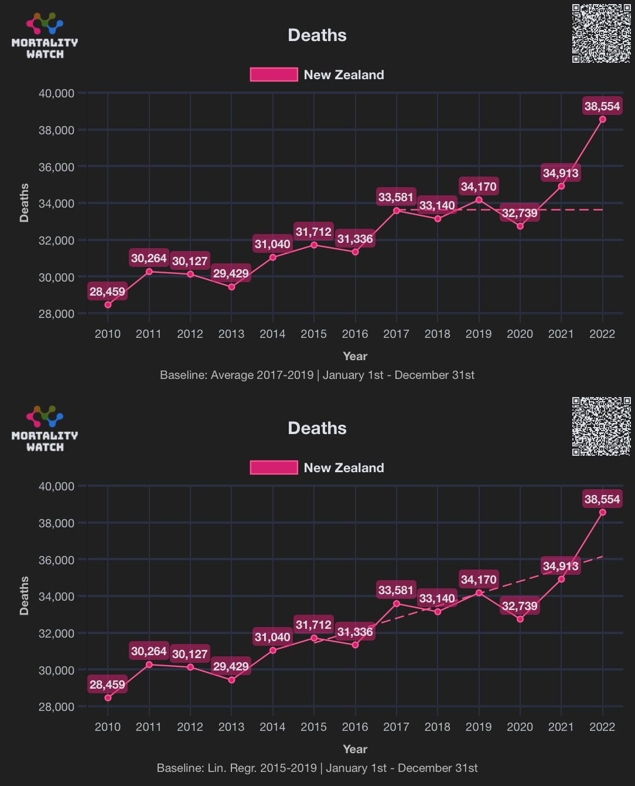
Thinking Slow got about 10,400 excess deaths from January 2020 to June 2023, but he also used the 2015-2019 average as the baseline, even though he used a different baseline for each month so that for example he used the average of each January in 2015-2019 as the baseline for January. [https://x.com/ThinkingSlow1/status/1732606827731321215] Below I first calculated a linear trend in deaths in 2015-2019, and then I adjusted it for seasonality so that for each 366 days of the year, I calculated the average difference from the trend during the day and I added the difference to my trend for all years. But I got about negative 1,700 excess deaths in the period between January 1st 2020 and October 29th 2023:
> prediction=xy$x<="2019-12-31"&xy$x>="2015-01-01" > linear=predict(lm(y~x,xy[prediction,]),xy) > days=substr(xy$x,6,10) > daily=tapply(xy$y[prediction]-linear[prediction],days[prediction],mean) > seasonal=linear+daily[days] > sum((xy$y-seasonal)[xy$x>="2020-01-01"&xy$x<="2020-06-30"]) [1] -1732.31
Here's a plot of the same data from the Short-Term Mortality Fluctuations database:

library(ggplot2)
t=read.csv("https://www.mortality.org/File/GetDocument/Public/STMF/Outputs/NZL_NPstmfout.csv")
t=t[t$Sex=="b",]
isoweek=\(year,week,weekday=1){d=as.Date(paste0(year,"-1-7"));d-(as.integer(format(d,"%w"))+6)%%7-1+7*(week-1)+weekday} # `as.Date` doesn't support `%V` (ISO 8601 week number)
xy=data.frame(x=isoweek(t$Year,t$Week,4),y=t$Total/7)
xy=rbind(xy,data.frame(x=seq(min(xy$x),max(xy$x),1),y=NA))
xy=xy[!duplicated(xy$x),]
xy=xy[order(xy$x),]
xy$y=zoo::na.approx(xy$y,na.rm=F)
prediction=xy$x<="2019-12-31"&xy$x>="2015-01-01"
linear=predict(lm(y~x,xy[prediction,]),xy)
days=substr(xy$x,6,10)
daily=tapply(xy$y[prediction]-linear[prediction],days[prediction],mean)
seasonal=linear+daily[days]
sum=sum((xy$y-seasonal)[xy$x>="2020-01-01"])
names(xy)[2]="Actual deaths"
xy$`Linear projection`=linear
xy$`Seasonality-adjusted linear projection`=seasonal
xy$`Actual deaths minus seasonality-adjusted linear projection`=xy[,2]-seasonal
long=\(x)data.frame(x=x[,1],y=unname(c(unlist(x[,-1]))),z=colnames(x)[-1][col(x[,-1])])
xy=long(xy)
xstart=as.Date("2011-1-1")
xend=as.Date("2024-1-1")
xy=xy[xy$x>=xstart&xy$x<=xend,]
candidates=c(sapply(c(1,2,5),\(x)x*10^c(-10:10)))
ybreak=candidates[which.min(abs(candidates-max(xy$y,na.rm=T)/8))]
ystart=ybreak*floor(min(xy$y,na.rm=T)/ybreak)
yend=ybreak*ceiling(max(xy$y,na.rm=T)/ybreak)
group=factor(xy$z,unique(xy$z))
color=c("black",hcl(c(210,120,0)+15,95,50))
ystep=(yend-ystart)/15
labels=data.frame(x=as.Date(xstart+.03*(xend-xstart),origin="1970-1-1"),y=seq(62,by=-ystep,length.out=nlevels(group)),label=levels(group))
ggplot(xy,aes(x=x,y=y,color=group))+
geom_hline(yintercept=c(ystart,0,yend),color="gray65",linewidth=.3)+
geom_vline(xintercept=c(xstart,xend,as.Date(c("2020-1-1","2015-1-1"))),color="gray65",linewidth=.3)+
geom_line(aes(color=group),linewidth=.3)+
annotate(geom="label",x=as.Date("2022-1-1"),y=44,label=paste0("Total seasonality-adjusted\nexcess mortality since\nstart of 2020: ",round(sum)),size=2.4,fill="gray90",label.r=unit(0,"lines"),label.padding=unit(.3,"lines"),label.size=0,hjust=.5)+
geom_label(data=labels,aes(x=x,y=y,label=label),fill=alpha("white",.7),label.r=unit(0,"lines"),label.padding=unit(.04,"lines"),label.size=0,color=color[1:nrow(labels)],size=2.6,hjust=0)+
labs(title="Daily number of deaths in New Zealand (prediction interval 2015-2019)",x=NULL,y=NULL)+
coord_cartesian(clip="off")+
scale_x_date(limits=c(xstart,xend),breaks=seq(xstart,xend,"6 month"),expand=expansion(0),labels=c(rbind("",2011:2023),""))+
scale_y_continuous(limits=c(ystart,yend),breaks=seq(ystart,yend,ybreak),expand=expansion(0))+
scale_color_manual(values=color)+
theme(
axis.text=element_text(size=7,color="black"),
axis.text.x=element_text(angle=90,vjust=.5,hjust=.5),
axis.ticks=element_line(linewidth=.3,color="gray65"),
axis.ticks.length=unit(.2,"lines"),
axis.ticks.x=element_line(color=c("gray65",NA)),
axis.title=element_text(size=8),
legend.position="none",
panel.background=element_rect(fill="white"),
panel.grid=element_blank(),
plot.background=element_rect(fill="white"),
plot.margin=margin(.4,.6,.4,.5,"lines"),
plot.subtitle=element_text(size=7),
plot.title=element_text(size=8.5)
)
ggsave("1.png",width=4.6,height=3.3)
OWID previously used the prepandemic average as the baseline for calculating excess mortality, but they later switched to using the 2015-2019 linear trend which produces more accurate results for most countries: [https://ourworldindata.org/excess-mortality-covid]
We use an estimate produced by Ariel Karlinsky and Dmitry Kobak as part of their World Mortality Dataset (WMD). To produce this estimate, they first fit a regression model for each region using historical deaths data from 2015-2019. They then use the model to project the number of deaths we might normally have expected in 2020-2023. Their model can capture both seasonal variation and year-to-year trends in mortality.
For more details on this method, see the article Karlinsky and Kobak (2021) Tracking excess mortality across countries during the COVID-19 pandemic with the World Mortality Dataset.
Previously we used a different expected deaths baseline: the average number of deaths over the years 2015-2019. We made this change because using the five-year average has an important limitation - it does not account for year-to-year trends in mortality and thus can misestimate excess mortality.b The WMD projection, on the other hand, does not suffer from this limitation because it accounts for these year-to-year trends. Our charts using the five-year average are still accessible in links in the sections below.
The article by Karlinsky and Kobak that was linked above said: "For each country, we predicted the 'baseline' mortality in 2020 based on the 2015-2019 data (accounting for linear trend and seasonal variation; see Materials and methods)."
Kirsch said that this plot by Denis Rancourt showed that "all cause mortality moving average is at an all time high": [https://kirschsubstack.com/p/the-nz-data-is-crystal-clear-that]
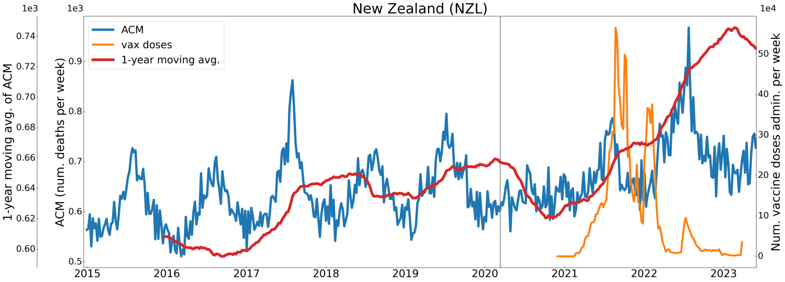
However Rancourt's plot ended in the second quarter of 2023, and actually in the third quarter of 2023 the 1-year moving average of deaths fell below the 2015-2019 linear trend:
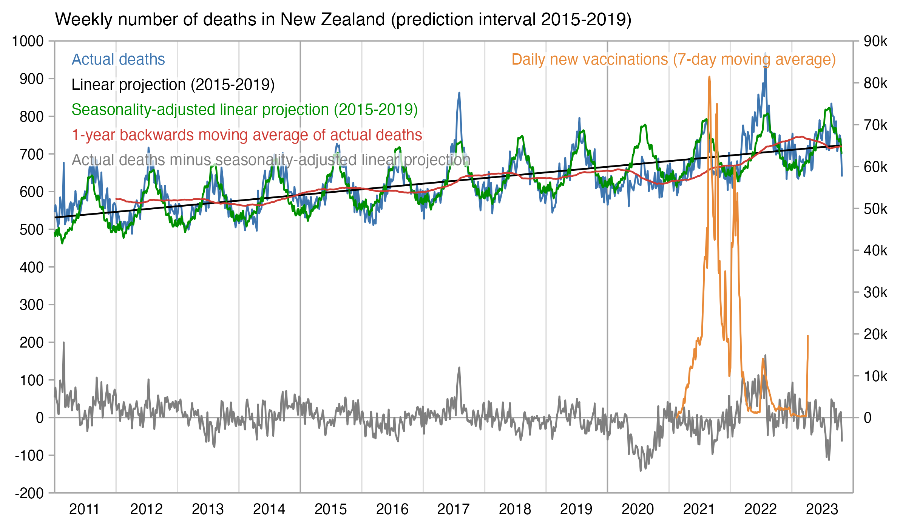
Rancourt's plot appears to show that there was an increase in mortality in the first half of 2021 when the vaccines were rolled out, but it was probably just because summer changed to winter because the plot was not adjusted for seasonality. But from my plot above you can see that the seasonality-adjusted excess mortality was mostly negative in mid-2021.
In late 2020, Rancourt's 1-year moving average starts to increase but its slope remains similar to the pre-pandemic linear trend in deaths, even though it's not easy to see from Rancourt's plot because he didn't include the pre-pandemic trend in his plot. In mid-2021 when there starts to be a steeper increase in the moving average, it's because there was negative excess mortality in both 2021 and 2020 but there was even greater negative excess mortality in 2020, and by mid-2021 the period in 2020 with the greatest negative excess mortality had begun to pass outside the window of the moving average.
Rancourt's plot is also misleading because he plotted the moving average on a different scale than the actual deaths, which made the moving average seem higher than it actually was. But from my plot above where I plotted the moving average on the same scale as the deaths, you can see that the 1-year moving average remained below the 2015-2019 linear trend until June 2022.
The plot below shows that there was a peak in vaccine doses given in January 2022 in both New Zealand and Australia. In Australia there was also a spike in deaths around the same time, which Rancourt blamed on the vaccines, but in New Zealand the spike in deaths caused by Omicron didn't come until March. So did the vaccines take longer to start killing people in New Zealand?
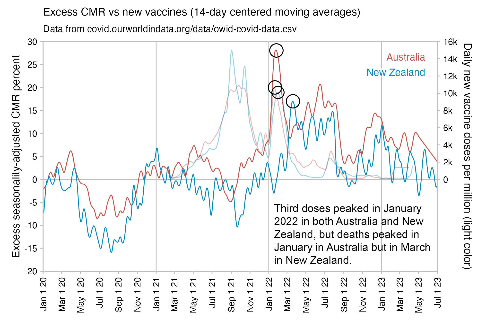
Clare Craig said that the number of COVID deaths in New Zealand was listed as 3,347 at the end of September 2023, but she posted a plot by USMortality which showed that there were 9,408 excess deaths from October 2020 to September 2023: [https://x.com/ClareCraigPath/status/1731703232727036207]

However USMortality used the 2016 Q4 to 2019 Q3 average as the baseline, which exaggerates excess mortality because New Zealand has an increasing trend in deaths per year. When I used years that started in October and ended in September like USMortality, but I used a linear regression from 2013 Q4 to 2019 Q3 as the baseline, I got only 1,403 excess deaths from 2020 Q4 to 2023 Q3: [https://next.mortality.watch/explorer/?c=NZL&t=deaths&df=2013/14&dt=2022/23&bf=2013/14&bt=2018/19&bm=linear_regression&v=2]
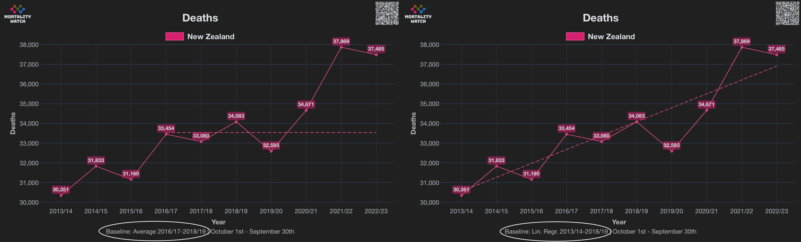
Craig's tweet said: "9,408 excess deaths since Oct 2000. This factors in the size of the population. By this measure mortality had been steady for many years." However her tweet was misleading because the first image in her tweet showed crude mortality rate which had remained fairly flat for several years before COVID, but in the second image in her tweet the figure of 9,408 excess deaths was calculated based on the raw number of deaths, which has been increasing at a fairly sharp rate.
Kirsch wrote: [https://kirschsubstack.com/p/medicare-death-data-proves-the-covid]
If you do a simple plot of the absolute number of deaths per day after a vaccine shot is given vs. the number of days that have elapsed since the shot, other than for a brief 21-day period after the shot, the number of deaths per day will always monotonically decline over time in a safe vaccine.
But for the COVID vaccine, it monotonically increases over time for up to 365 days straight.
[...]
This is the exact same chart as above, but this time for the COVID vaccine and tracks the days till death from their first shot (if they had >1 shot in 2021). Do you see the problem? The slope is positive. It's supposed to be negative.
This is not a small subset either. For example, as of December 12, 2023, approximately 79.8% of Medicare beneficiaries have received at least one dose of a COVID-19 vaccine. This figure comes from the Centers for Medicare & Medicaid Services (CMS).
Actually the increase isn't even monotonic because there's some days when the number of deaths is lower than the previous day. But just a wide-enough moving average is monotonic.
But anyway, the plot above only includes the first 365 days after vaccination, which is probably because the last vaccine dose included in the dataset is on December 31st 2022 and the last death is on February 1st 2023, so there is not much more than 365 days of follow-up time for people who were vaccinated during the last days of 2021.
Kirsch's presentation at MIT included another version of the plot above which included deaths up to about 770 days after vaccination, which shows that the number of deaths began to decrease after about 350 days. [https://www.skirsch.com/covid/Isitsafe.pdf] The plot only included people who were vaccinated in the first quarter of 2021, and there's a difference of 672 days between the last death included in the dataset and the last day of the first quarter of 2021, which explains why a bit after 650 days there is an inflection point in the curve because people start to run out of follow-up time:
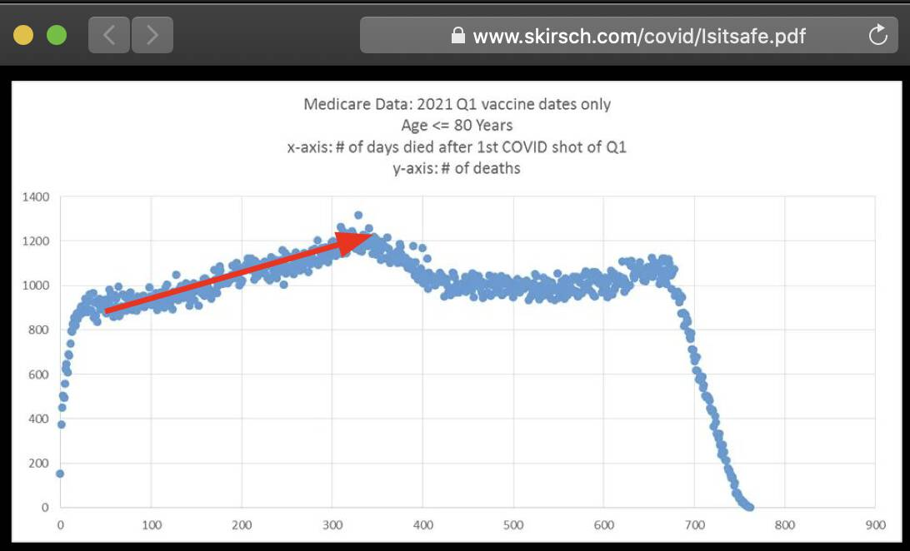
The plot above presents a different story as Kirsch's first plot because now the smoothly increasing trend reverses after about 350 days. The reason for the reversal is probably that there was sharp spike in excess mortality caused by Omicron in January 2022, but soon later there was a massive drop in excess mortality, so the seasonality-adjusted excess mortality at OWID even goes below zero in March and April 2022:
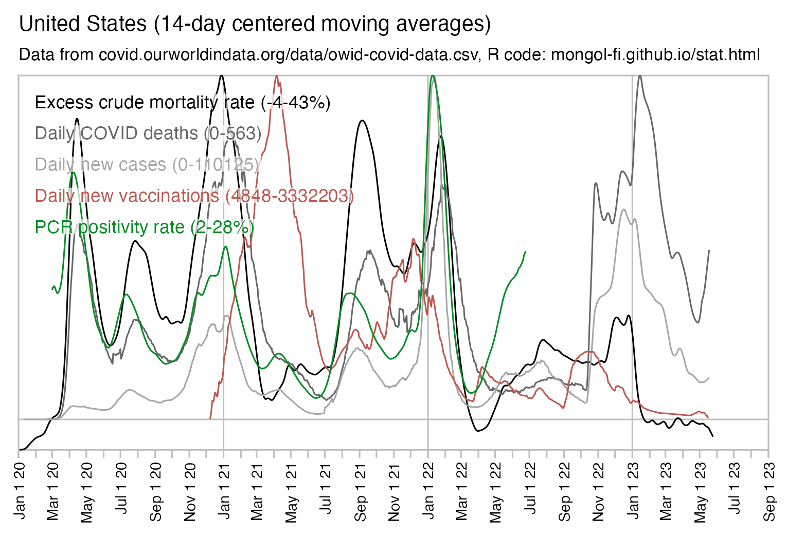
In the heatmap below where I plotted the days from vaccination to death grouped by month of vaccination, the peaks in the number of deaths form a linear pattern, where the peak is on days 360-389 in January, 330-359 in February, 300-329 in March, and so on up to December when the peak is on days 30-59. So did the vaccines start to kill people a lot faster in late 2021 than in early 2021? Or was the peak in deaths around January 2022 rather caused by the appearance of Omicron combined with the usual increase in deaths during the winter?
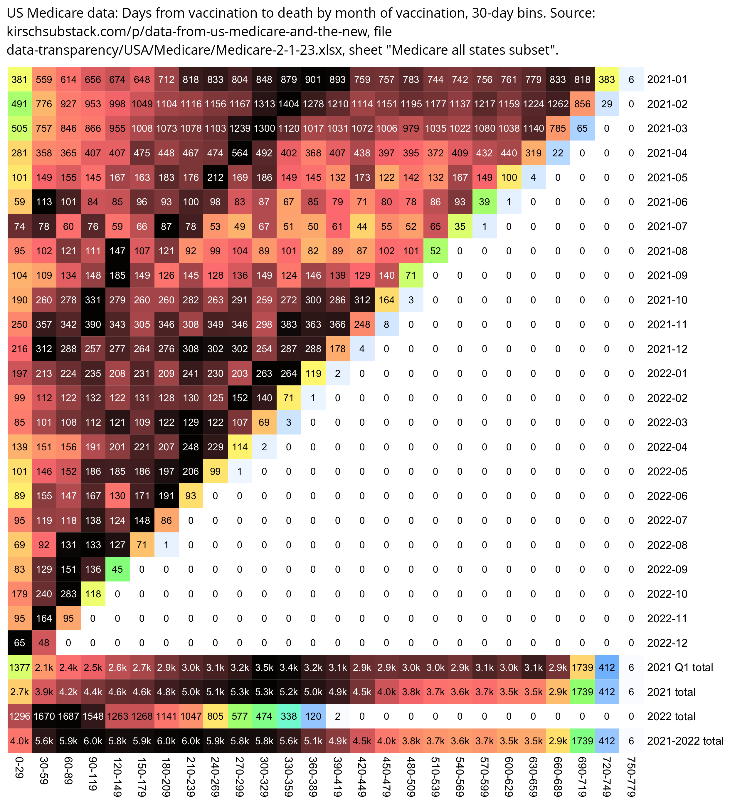
From the plot below which shows the date of death on the y-axis instead of the number of days until death, you can see even more clearly that there is one peak in deaths around January 2022 and another peak around December 2022. As evidence that the healthy vaccinee effect lasts longer than a couple of weeks like Kirsch argues, vaccines given in January 2022 have a low number of deaths in February 2022, even though there was high overall mortality in February 2022, and for example in deaths peak in February 2022 for vaccines given in November 2021:
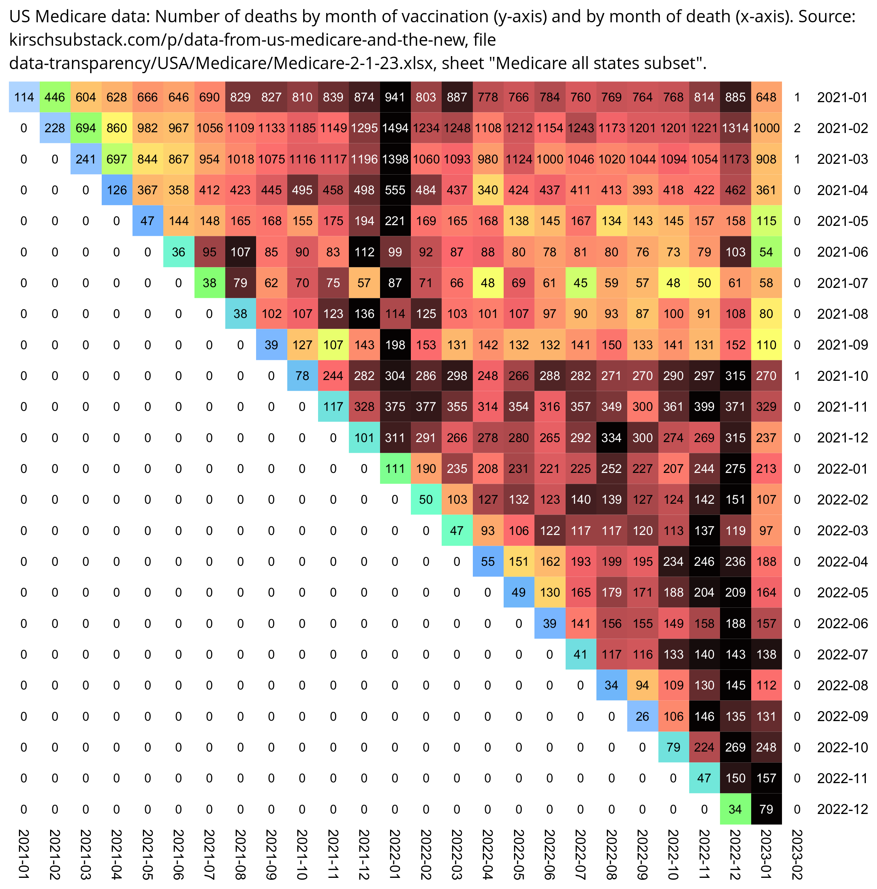
med=read.csv("https://sars2.net/f/kirsch_medicare_all_states_subset.csv")
med[,2]=as.Date(med[,2])
med[,3]=as.Date(med[,3])
med=med[med[,2]>="2021-01-01"&med[,2]<="2021-12-31",]
m=t(table(as.numeric(med$date_of_death-med$date_of_vaccination)%/%30*30,sub("...$","",med$date_of_vaccination)))
m=rbind(m,"2021 Q1 total"=colSums(m[1:3,]),"2021 total"=colSums(m))
disp=ifelse(m>=2e3,paste0(sprintf("%.1f",m/1e3),"k"),m)
m=m/apply(m,1,max)
colnames(m)=paste0(colnames(m),"-",as.numeric(colnames(m))+29)
pheatmap::pheatmap(
m,
filename="0.png",
cluster_rows=F,
cluster_cols=F,
legend=F,
cellwidth=20,
cellheight=20,
fontsize=9,
border_color=NA,
display_numbers=disp,
fontsize_number=8,
number_color=ifelse(m>.85,"white","black"),
breaks=seq(0,1,,256),
colorRampPalette(colorspace::hex(colorspace::HSV(c(210,210,210,160,110,60,30,0,0,0),c(0,.25,rep(.5,8)),c(rep(1,8),.5,0))))(256)
)
system("convert 0.png -bordercolor white \\( -gravity northwest -splice 22x14 -size `identify -format %w 0.png`x -pointsize 45 caption:\"$(fold -sw 109 <<<'US Medicare data: Days from vaccination to death by month of vaccination, 30-day bins. Source: kirschsubstack.com/p/data-from-us-medicare-and-the-new, file data-transparency/USA/Medicare/Medicare-2-1-23.xlsx, sheet \"Medicare all states subset\".')\" \\) +swap -append -trim -border 24 +repage 1.png")
In the Medicare data about 60% of all vaccine doses were given in the first quarter of 2021, so even if you look at vaccines given in 2021 as a whole, there's a bias introduced because a large percentage of the vaccines were given in the first quarter of 2021:
> med=read.csv("https://sars2.net/f/kirsch_medicare_all_states_subset.csv")
> ta=table(sub("...$","",as.Date(med[,2])))
> ta
2020-12 2021-01 2021-02 2021-03 2021-04 2021-05 2021-06 2021-07 2021-08 2021-09
623 18341 26463 23120 9139 3221 1678 1161 1802 2262
2021-10 2021-11 2021-12 2022-01 2022-02 2022-03 2022-04 2022-05 2022-06 2022-07
4290 5002 3813 2839 1465 1188 1859 1459 1143 828
2022-08 2022-09 2022-10 2022-11 2022-12 2023-01
624 544 820 354 113 6
> sum(ta[2:4])/sum(ta)
[1] 0.5950051
One reason why shots from 2021 Q1 are overrepresented is because the Medicare dataset only includes the earliest vaccine dose of each person. Most of the people in the dataset are elderly because the dataset only includes people who died later, and elderly people are likely to have gotten their first shot in the first quarter of 2021. And another reason why doses from 2020 Q1 are overrepresented is that the dataset only includes people who died later, but people who were vaccinated earlier have had more time to die since vaccination than people who were vaccinated later.
In the plot below I looked at deaths during the first 51 weeks after vaccination, and I included doses for all months of 2021, but I picked a random sample of doses from each month. I took repeat doses from some months so I got the total number of doses to match the original data. However now I no longer got Kirsch's "monotonically increasing" curve, but I got a curve that remained more or less flat after around week 7, and actually there is a decreasing trend in deaths starting around day 250 from vaccination, which is partially because doses given in the second quarter of 2021 have a clearly decreasing trend starting around day 300:
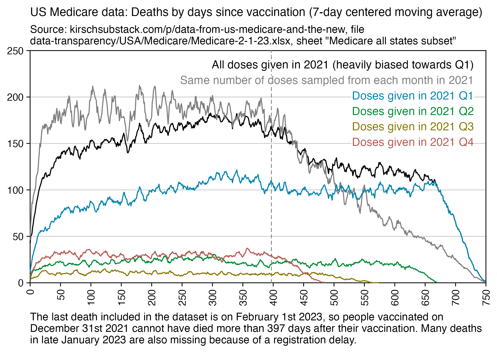
The last death included in the Medicare data is on February 1st 2023, so people vaccinated on December 31st 2021 cannot have died more than 397 days after the vaccination. Many deaths in late January 2023 are also missing because of a registration delay. However the deaths in people vaccinated in 2021 Q1 already start to drop around day 330, but you can tell it's not because people start running out of follow-up time because the follow-up time only starts to run out around day 660 (even though there's probably also a smaller number of deaths that are missing earlier because of a registration delay). But anyway, people vaccinated in 2021 Q1 have so much follow-up time that you can even see how the reduced mortality in summer 2022 start to increase again as summer turns to winter.
library(ggplot2)
med=read.csv("https://sars2.net/f/kirsch_medicare_all_states_subset.csv")
med[,2]=as.Date(med[,2])
med[,3]=as.Date(med[,3])
med=med[grep(2021,med$date_of_vaccination),]
month=substring(med$date_of_vaccination,1,7)
maxpermonth=min(table(month))
weeks=as.integer(med$date_of_death-med$date_of_vaccination)%/%1
ta2=table(unlist(tapply(weeks,month,sample,nrow(med)/12,replace=T)))
ta=table(weeks)
xy=data.frame(x=as.numeric(names(ta)),y=c(ta),z="All doses given in 2021 (heavily biased towards Q1)")
xy=rbind(xy,data.frame(x=as.numeric(names(ta2)),y=c(ta2),z="Same number of doses sampled from each month in 2021"))
qu=table(weeks,(as.numeric(substring(med$date_of_vaccination,6,7))-1)%/%3+1)
xy=rbind(xy,data.frame(x=as.numeric(rownames(qu)[row(qu)]),y=c(unlist(qu)),z=paste0("Doses given in 2021 Q",colnames(qu)[col(qu)])))
# xy=xy[xy$x<=50,]
xy$z=factor(xy$z,unique(xy$z))
ystart=xstart=0;xend=750;xstep=30
candidates=c(sapply(c(1,2,5),\(x)x*10^c(-10:10)))
ystep=candidates[which.min(abs(candidates-max(xy$y)/6))]
yend=ystep*ceiling(max(xy$y)/ystep)
xbreak=seq(xstart,xend,xstep)
ybreak=seq(ystart,yend,ystep)
mav=\(x,y){l=length(x);s=e=y%/%2;if(y%%2==0)e=e-1;x[]=sapply(1:l,\(i)mean(x[max(1,i-s):min(l,i+e)],na.rm=T));x}
xy$y=mav(xy$y,7)
color=c("black","gray50",hcl(c(210,120,60,0)+15,70,50))
labels=data.frame(x=xstart+.975*(xend-xstart),y=seq(.96*yend,,-yend/15,nlevels(xy$z)),label=levels(xy$z))
ggplot(xy,aes(x,y))+
geom_hline(yintercept=c(ystart,yend),color="black",linewidth=.3,lineend="square")+
geom_vline(xintercept=c(xstart,xend),color="black",linewidth=.3,lineend="square")+
geom_vline(xintercept=c(397),color="gray50",linewidth=.3,linetype="dashed",lineend="square")+
geom_line(aes(color=z),linewidth=.4)+
geom_label(data=labels,aes(x=x,y=y,label=label),fill=alpha("white",.7),label.r=unit(0,"lines"),label.padding=unit(.04,"lines"),label.size=0,color=color[1:nlevels(xy$z)],size=3.2,hjust=1,vjust=1)+
labs(x=NULL,y=NULL,title="US Medicare data: Deaths by days since vaccination (7-day centered moving average)",caption="The last death included in the dataset is on 2023-02-01, so people vaccinated in 2021-12-31 cannot have died more than 397 days after their vaccination. There are also many deaths in late January 2023 missing because of a registration delay."|>stringr::str_wrap(95),subtitle="Source: kirschsubstack.com/p/data-from-us-medicare-and-the-new, file data-transparency/USA/Medicare/Medicare-2-1-23.xlsx, sheet \"Medicare all states subset\""|>stringr::str_wrap(95))+
coord_cartesian(clip="off")+
scale_x_continuous(limits=c(xstart,xend),breaks=xbreak,expand=c(0,0))+
scale_y_continuous(limits=c(ystart,yend),breaks=ybreak,expand=c(0,0))+
scale_color_manual(values=color)+
theme(
axis.text=element_text(size=8,color="black"),
axis.text.x=element_text(angle=90,hjust=1,vjust=.5),
axis.ticks=element_line(linewidth=.3,color="black"),
axis.ticks.length=unit(.2,"lines"),
axis.title=element_text(size=9),
axis.title.y.right=element_text(margin=margin(0,0,0,5)),
legend.position="none",
panel.background=element_rect(fill="white"),
panel.grid=element_blank(),
panel.grid.major.y=element_line(linewidth=.3,color="gray80"),
plot.margin=margin(.3,.7,.3,.3,"lines"),
plot.subtitle=element_text(size=8,margin=margin(0,0,.4,0,"lines")),
plot.caption=element_text(size=8,hjust=0),
plot.title=element_text(size=9.5,margin=margin(.2,0,.6,0,"lines"))
)
ggsave("1.png",width=5.5,height=3.9,dpi=400)
Kirsch compared the plot for COVID vaccines which showed a so-called monotonic increase in deaths to pneumococcal vaccines which had a curve that remained more or less flat: [https://kirschsubstack.com/p/medicare-death-data-proves-the-covid]
This is the pneumococcal vaccine curve from Medicare in 2021. All ages. It looks at people who were vaccinated sometime in 2021, and looks for 1 year after the shot to see if they died. The x-axis is the days relative to the shot day that they died.
The pneu vax is given throughout 2021. Follow-up is 1 year from shot date for each person. Age stratifying the results shows the same shape for both vaccines. So 65-75, 75-85, and 85 and up is same shape, just different height and more negative slope for the older cohorts. There are fewer total people who got this shot (it is not an annual shot), so that is why the absolute death numbers are smaller. But 300 deaths per day is plenty to establish a signal with very little noise as you can see from the chart.
However the reason why the pneumococcal vaccines had a flat curve was probably because they were distributed more evenly throughout the year, like how COVID vaccines also got a flat curve in my plot above when I sampled the same number of vaccines from each month. From the spreadsheets on Kirsch's S3 server, you can't see the dates when the pneumococcal vaccines were given. And also if you'd select a sample of the pneumococcal vaccines so that their vaccination dates would have a similar distribution as the COVID vaccines, you'd probably get a similar increasing curve for the number of deaths by weeks from vaccination.
In the plot below I took the date of each vaccine dose given in 2021 in the Medicare data, I selected the number of all-cause deaths in the United States during the 51-week period starting from the date, and I calculated the average number of deaths by week. I got a curve that mostly increases from week 16 apart from a dent around week 37. There's a decreasing trend during the first 16 weeks, but in the Medicare data it probably gets canceled out by the healthy vaccinee effect. The reason why the dent around week 37 is not visible in the Medicare data could be because the dent is located between the August-September spike in COVID deaths and the Omicron spike in January 2022, but the Medicare dataset consisted of only vaccinated people, and vaccinated people may have been less likely to die of COVID than unvaccinated people:
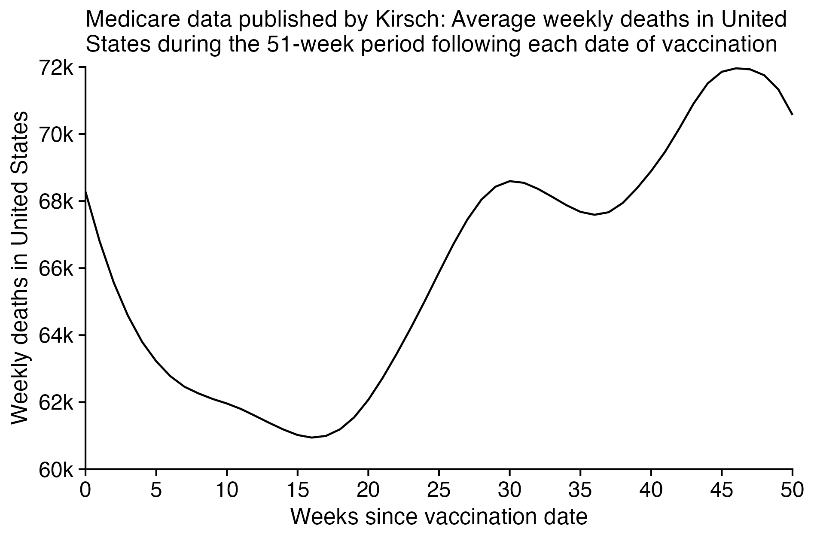
library(ggplot2)
med=read.csv("https://sars2.net/f/kirsch_medicare_all_states_subset.csv")
med=med[grepl(2021,med$date_of_vaccination),]
maxweek=50
maxday=(maxweek+1)*7
xy=data.frame(x=0:maxweek)
death=read.csv("https://data.cdc.gov/resource/muzy-jte6.csv")
d=data.frame(x=as.Date(death$week_ending_date)-3,y=death$all_cause/7)
d=rbind(d,data.frame(x=seq(min(d$x),max(d$x),1),y=NA))
d=d[!duplicated(d$x),]
d=d[order(d$x),]
d$y=zoo::na.approx(d$y,na.rm=F)
days=as.numeric(as.Date(med$date_of_vaccination))|>sapply(\(i)i:(i+maxday-1))|>as.Date("1970-1-1")
xy$y=d$y[match(days,d$x)]|>matrix(maxday)|>rowMeans()|>matrix(7)|>colSums()
ggplot(xy,aes(x,y))+
geom_hline(yintercept=ystart,color="black",linewidth=.35,lineend="square")+
geom_vline(xintercept=xstart,color="black",linewidth=.35,lineend="square")+
geom_line(linewidth=.4)+
labs(x="Weeks since vaccination date",y="Weekly deaths in United States",title=stringr::str_wrap("Medicare data published by Kirsch: Average weekly deaths in United States during the 51-week period following each date of vaccination",70))+
coord_cartesian(clip="off")+
scale_x_continuous(limits=c(0,maxweek),breaks=seq(0,maxweek,5),expand=c(0,0))+
scale_y_continuous(limits=c(60,72),breaks=seq(60,72,2),expand=c(0,0),labels=\(x)paste0(x/1e3,"k"))+
theme(
axis.text=element_text(size=9,color="black"),
axis.ticks=element_line(linewidth=.35,color="black"),
axis.ticks.length=unit(.2,"lines"),
axis.title=element_text(size=10,color="black"),
legend.position="none",
panel.background=element_rect(fill="white"),
panel.grid=element_blank(),
plot.margin=margin(.3,.7,.3,.3,"lines"),
plot.title=element_text(size=11,margin=margin(.3,0,.5,0,"lines"))
)
ggsave("1.png",width=6,height=4)
The number of deaths start to decline around days 300-350 after the peak in deaths during the winter has passed. The number of deaths increases from day 150-300 because summer is turning to winter. Even though the first 50 days after vaccination are mostly part of winter and early spring, there is a reduced number of deaths which is probably because of the healthy vaccinee effect:
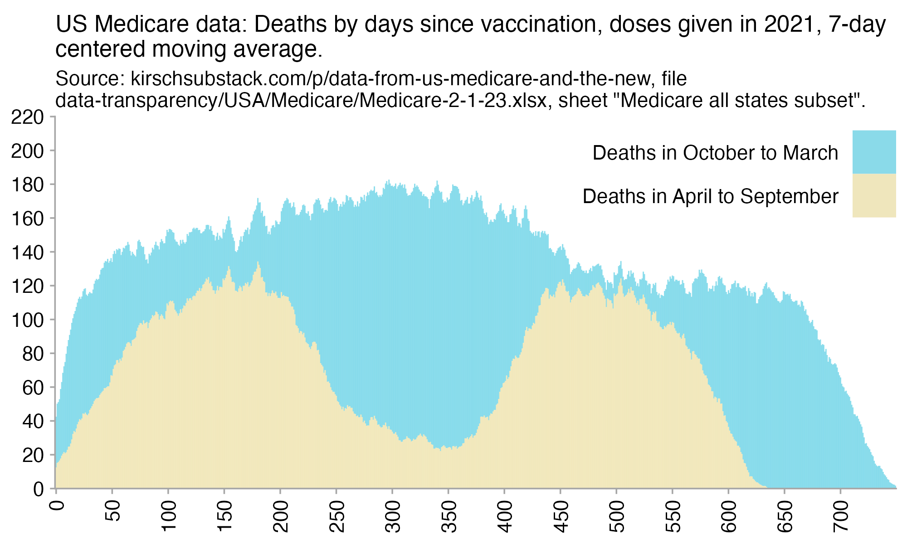
But if you sample the same number of doses from each month, then you get a more flat distribution of deaths during the first year:
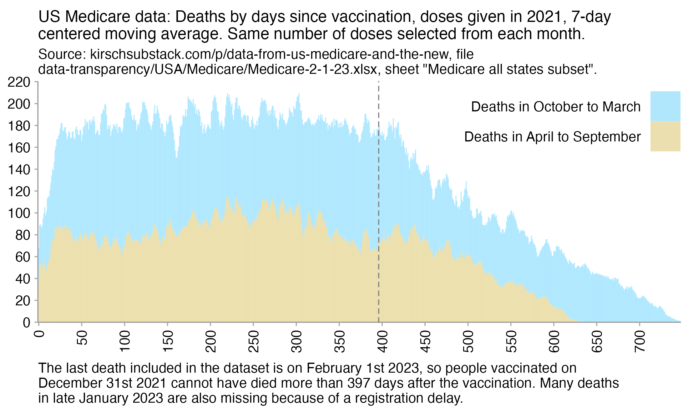
Some of Kirsch's plots of the Medicare data have up to about 4,500 deaths per day, even though the subset of the data he published on his S3 server has only up to 281 deaths per day. When I asked Kirsch if he has published the full Medicare data, he replied: "No I haven't. I don't have the data. This is a query on the full Medicare database." [https://x.com/stkirsch/status/1737295010247385120]
Kirsch's comments in this spreadsheet make it seem like he doesn't know how the subset of the Medicare data was selected:
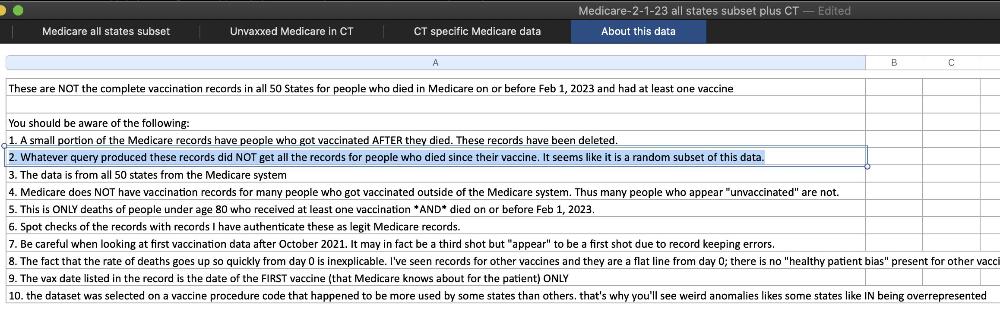
The screenshot above says: "The vax date listed in the record is the date of the FIRST vaccine (that Medicare knows about for the patient) ONLY". However I don't know if the full Medicare data includes multiple doses per some people and not just one dose. The period with clearly depressed mortality after vaccination seems to last only about 20-25 days in the full dataset and there is a sharp inflection point around days 20-25, but in the data from the "all states subset" spreadsheet, the period with clearly depressed mortality seems to last around 50 days and there is no sharp inflection point. It might be if people who got two shots are counted twice in the full dataset, so then people who got the second dose after 3 weeks from the first dose and who died 2 weeks later would be included as one death under 5 weeks and another death under 2 weeks. The recommended timing between the first two doses was 21 days for Pfizer vaccines and 28 days for Moderna vaccines weeks, and in the New Zealand data and the Medicare data from Connecticut, there's a large number of people who got the second dose exactly 21 days after the first dose. (But I don't know if my hypothesis is correct, because if you take the data in the "Medicare all states subset" sheet but you sample the same number of doses from each month, then for some reason there seems to be a sharper inflection point in mortality around days 20-30.)
In the plot below I sampled the same number of doses from each quarter so it's easier to compare the shape of the line for deaths during the first few months. For some reason Q3 has a spike in deaths around day 25, but during the other three quarters the mortality seems to be depressed for at least about 50 days after vaccination. In the gray line where I sampled the same number of doses from each month, it looks like there's a sharp inflection point around day 25, but I think it's because of the spike around day 25 in Q3 doses:
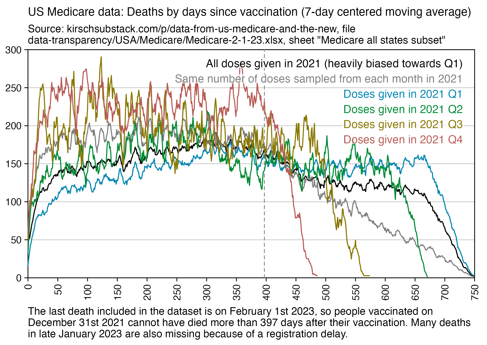
In the full Medicare data, there is a sharp turning point in mortality around 25 days after vaccination for doses given in 2021 but not for doses given in 2022:
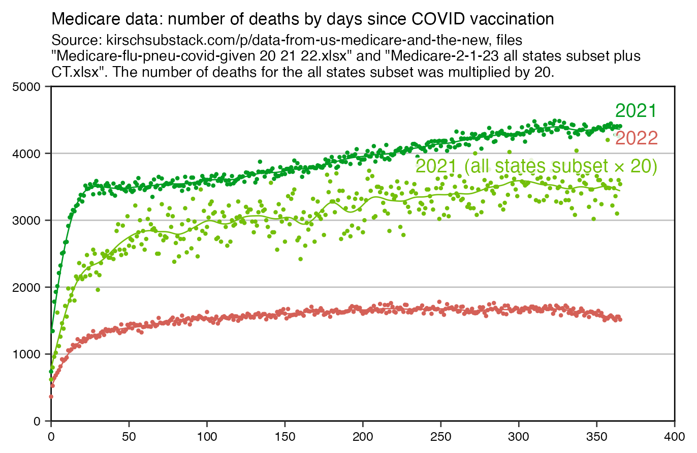
As his main argument for why the "temporal healthy vaccinee effect" lasts at most 21 days, Kirsch has shown that there's a turning point in mortality around 3 weeks from vaccination in the full Medicare data from 2021. But the sharp turning point around days 25 seems to be missing from the full Medicare data from 2022 and from the 2021 all states subset. Actually from my plot above where I fitted a spline to the full data from 2021, it seems like there is not only a turning point around day 25 but there is a bump around day 25 when there is temporarily elevated mortality. So I have formed a hypothesis that the bump might be produced by deaths caused by the second shot, which was typically given about three or four weeks after the first shot.
The bump around day 25 seems to be either less pronounced or missing in the all states subset sheet, but it could be because of a small sample size, as you can see from the waviness of the spline which I fitted to the data. However even the all states subset sheet, doses given in the first quarter of 2021 seem to have a sharp turning point in deaths around day 25, and doses given in the third quarter of 2021 seem to have a bump in deaths around day 25 (but it might just be random noise because the sample size for the third quarter is small).
xy=read.csv("https://sars2.net/f/kirsch_medicare_deaths_by_day.csv")
xy=xy[xy$type=="COVID",-4]
med=read.csv("https://sars2.net/f/kirsch_medicare_all_states_subset.csv")
med[,2]=as.Date(med[,2])
med[,3]=as.Date(med[,3])
med=med[grep(2021,med$date_of_vaccination),]
ta=table(as.integer(med$date_of_death-med$date_of_vaccination))*20
xy=rbind(xy,data.frame(day=0:365,deaths=as.numeric(ta[1:366]),year="2021 (all states subset × 20)"))
xy$year=factor(xy$year,unique(xy$year))
xy$smooth=split(xy[-3],xy$year)|>lapply(\(i)predict(smooth.spline(i$deaths~i$day,spar=.5),i)$y$day)|>unlist()
ystart=xstart=0
cand=c(sapply(c(1,2,5),\(x)x*10^c(-10:10)))
ymax=max(xy$deaths)
ystep=cand[which.min(abs(cand-ymax/5))]
yend=ystep*ceiling(ymax/ystep)
xstep=cand[which.min(abs(cand-max(xy$day)/7))]
xend=xstep*ceiling(max(xy$day)/xstep)
xbreak=seq(xstart,xend,xstep)
ybreak=seq(ystart,yend,ystep)
label=data.frame(x=.975*xend,y=seq(yend*.93,,-yend/12,nlevels(xy$year)),label=levels(xy$year))
color=hcl(c(210,120,0)+15,90,55)
color=hcl(c(120,0)+15,90,55)|>c(hcl(115,90,70))
library(ggplot2)
ggplot(xy,aes(x=day,y=deaths))+
geom_vline(xintercept=c(xstart,xend),linewidth=.3,lineend="square")+
geom_hline(yintercept=c(ystart,yend),linewidth=.3,lineend="square")+
geom_point(aes(color=year),size=.3,alpha=.8)+
geom_line(aes(y=smooth,color=year),linewidth=.3)+
geom_label(data=label,aes(x=x,y=y,label=label),fill=alpha("white",.85),label.r=unit(0,"lines"),label.padding=unit(.04,"lines"),label.size=0,size=3.2,hjust=1,color=color)+
labs(x=NULL,y=NULL,title="Medicare data: number of deaths by days since COVID vaccination"|>stringr::str_wrap(80),subtitle="Source: kirschsubstack.com/p/data-from-us-medicare-and-the-new, files \"Medicare-flu-pneu-covid-given 20 21 22.xlsx\" and \"Medicare-2-1-23 all states subset plus CT.xlsx\". The number of deaths for the all states subset was multiplied by 20."|>stringr::str_wrap(90))+
scale_x_continuous(limits=c(xstart,xend),breaks=xbreak,expand=expansion(0))+
scale_y_continuous(limits=c(ystart,yend),breaks=ybreak,expand=expansion(0))+
scale_color_manual(values=color)+
coord_cartesian(clip="off")+
theme(
axis.text=element_text(size=6,color="black"),
axis.ticks=element_line(linewidth=.3),
axis.ticks.length=unit(.2,"lines"),
axis.title=element_text(size=8),
legend.position="none",
panel.grid.major.y=element_line(linewidth=.3,color="gray75"),
panel.grid.major=element_blank(),
panel.background=element_rect(fill="white"),
plot.title=element_text(size=8,margin=margin(.2,0,.4,0,"lines")),
plot.subtitle=element_text(size=7,margin=margin(0,0,.5,0,"lines"))
)
ggsave("1.png",width=4.5,height=3)
The recommended timing between the first and second shots was 21 days for Pfizer vaccines and 28 days for Moderna vaccines:
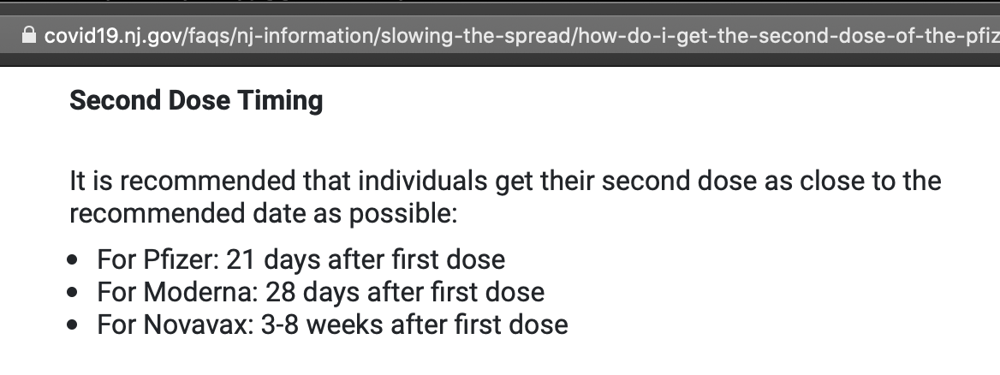
So maybe if it was possible to stratify the Medicare data by vaccine manufacturer, it might show that Moderna vaccines had a spike in deaths a week later than Pfizer vaccines.
However next I found that the Medicare data from Connecticut seems to contradict my hypothesis, because there's a fairly sharp inflection point in deaths around day 30 even for the second dose (which obviously cannot be explained by deaths caused by the third dose):
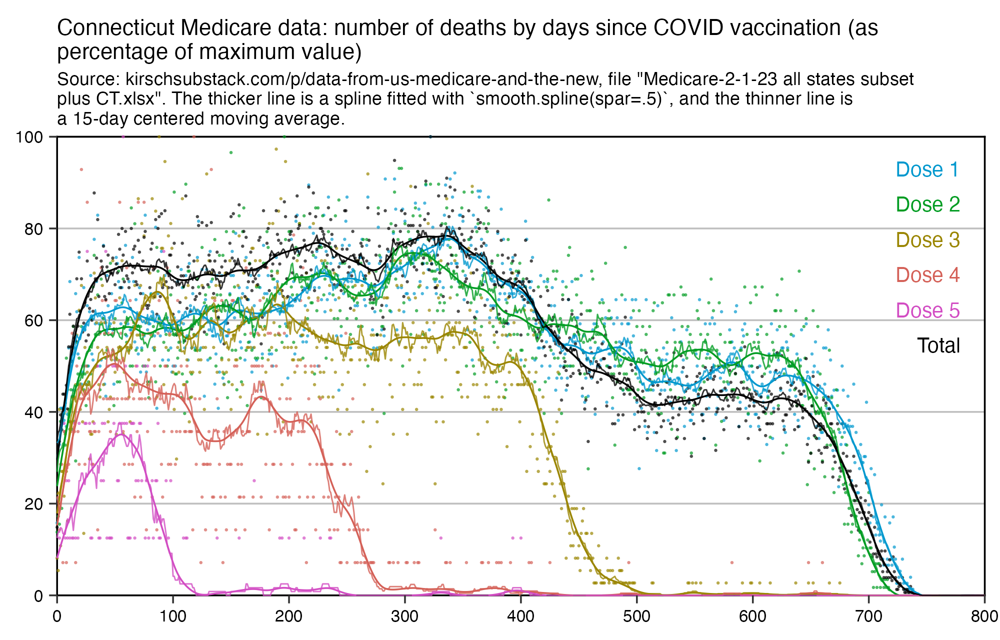
Out of people who have both first and second doses listed in the Connecticut data, the date of the second dose is within 30 days from the first dose for about 85% of people. But out of people with both second and third doses listed, the third dose is within 30 days from the second dose for only about 1% of people.
In the case of the New Zealand data, if you only include dose 1 for each person and not the earliest listed dose which is often not dose 1, then you also get a sharper turning point in deaths around days 30-50:
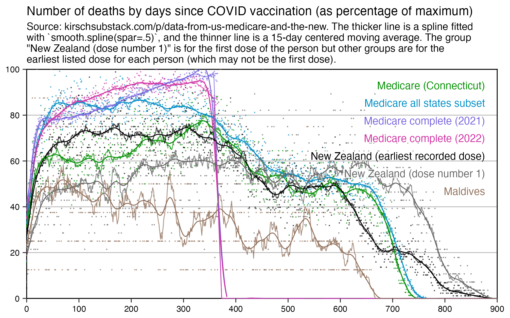
Here's another plot which only shows the splines but where I added a line for the second dose in the Connecticut data, which has a fairly sharp turning point around days 30-40:
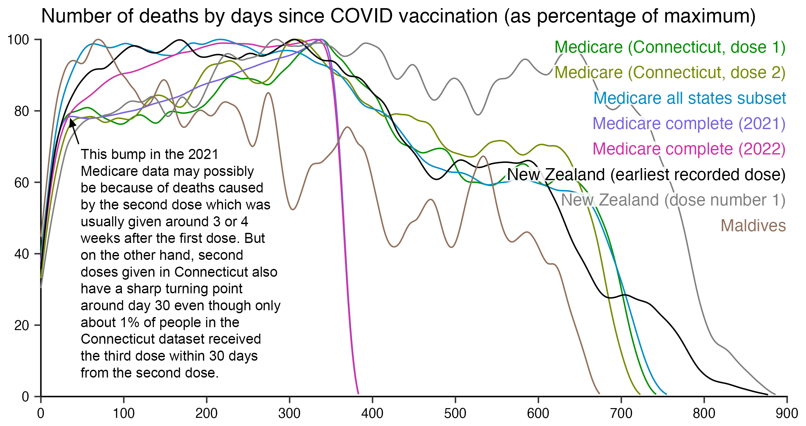
In the NZ data it looks like older age groups have a sharper turning point around 30-50 days, but on the other hand younger age groups have more noise because of a low number of deaths, so it's hard to tell:
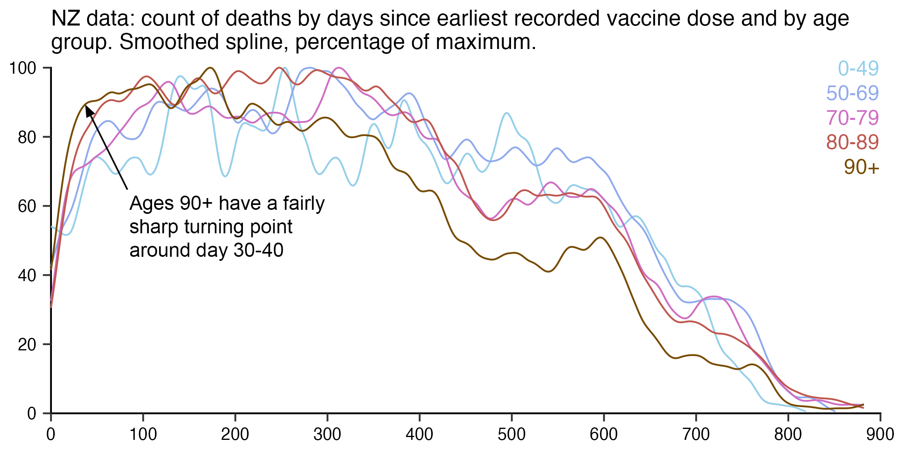
In the Medicare all states subset, you can't really tell if the inflection point during the first 1-2 months occurs earlier in younger or older age groups:
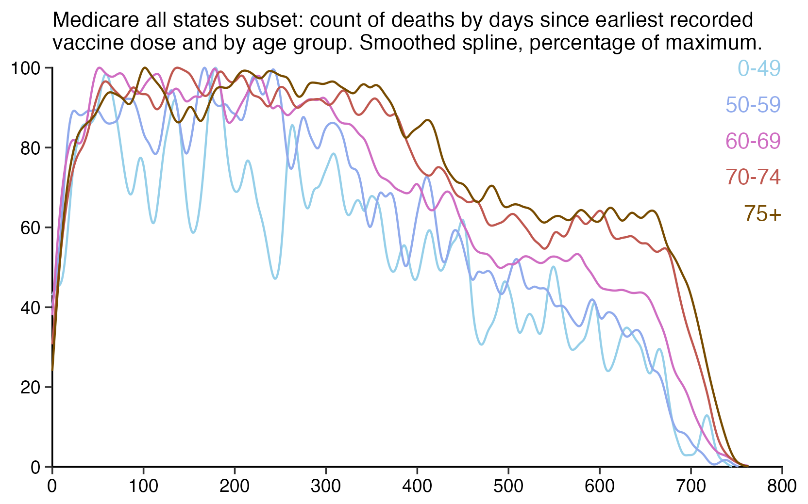
For some reason the maximum age of people included in the all states subset sheet is only 80 years, so the exclusion of older ages might explain why the all states subset sheet is missing the sharp inflection point in the full data.
The Connecticut data also has such a small sample size that the differences between age groups are not visible clearly:
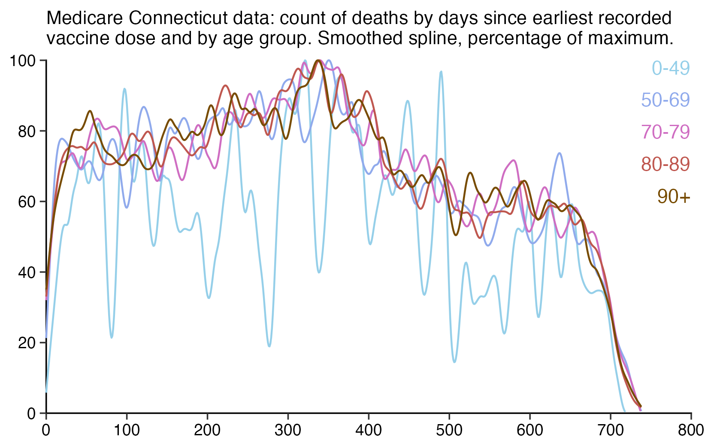
Kirsch also published an overlooked dataset from the Maldives, which consist of a table of the dates of death of people who died between February 2020 and October 2023, along with a column for whether the death was attributed to COVID and columns for the dates of COVID vaccinations. During the peak in COVID deaths in May 2021, over half of all deaths are listed as COVID deaths, which are indicated by a pink background color:
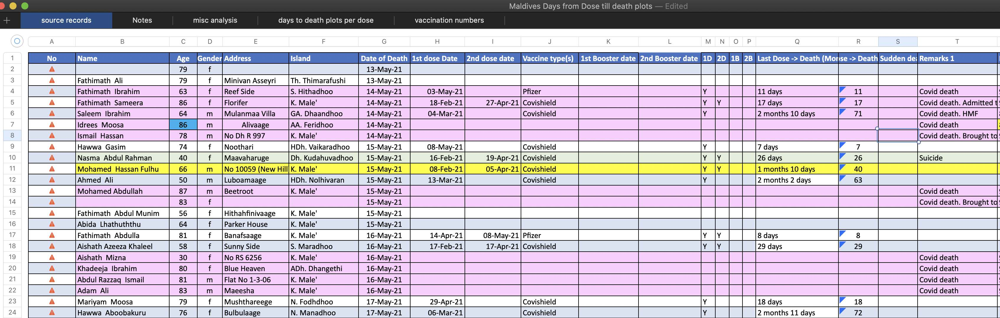
I uploaded the original spreadsheet here: f/Maldives_Days_from_Dose_till_death_plots.xlsx.
I uploaded a CSV version of the spreadsheet here: f/kirsch_maldives.csv. I changed the date format, and I deleted some redundant columns which it was possible to calculate based on the other columns (like whether the person had received a first dose or not, and the number of days from the most recent dose to death). There are some people who are listed as having received a dose but who don't have a date listed for the dose, which in my file is indicated by the value "unknown" in place of a vaccination date.
$ wget -q https://sars2.net/f/kirsch_maldives.csv $ sed -u 3q kirsch_maldives.csv name,age,gender,address,island,date_of_death,dose_1,dose_2,booster_1,booster_2,vaccine_types,sudden_death_if_known,remarks_1,remarks_2 Abdulla Ali,73,m,Nalahiyaage,HDh. Makunudhoo,2020-02-02,,,,,,,, Abdul Rasheed,,,,,2020-02-17,,,,,,,Col Nazim's father, $ awk -F, 'NR==1||$7=="unknown"' kirsch_maldives.csv|sed 3q name,age,gender,address,island,date_of_death,dose_1,dose_2,booster_1,booster_2,vaccine_types,sudden_death_if_known,remarks_1,remarks_2 ,88,m,,,2021-04-20,unknown,2021-04-12,,,,,, ,65,m,,,2021-05-01,unknown,2021-04-18,,,,,,
In the file data-transparency/Maldives/About the maldives data.docx, there are the following comments even though it is not indicated who wrote them:
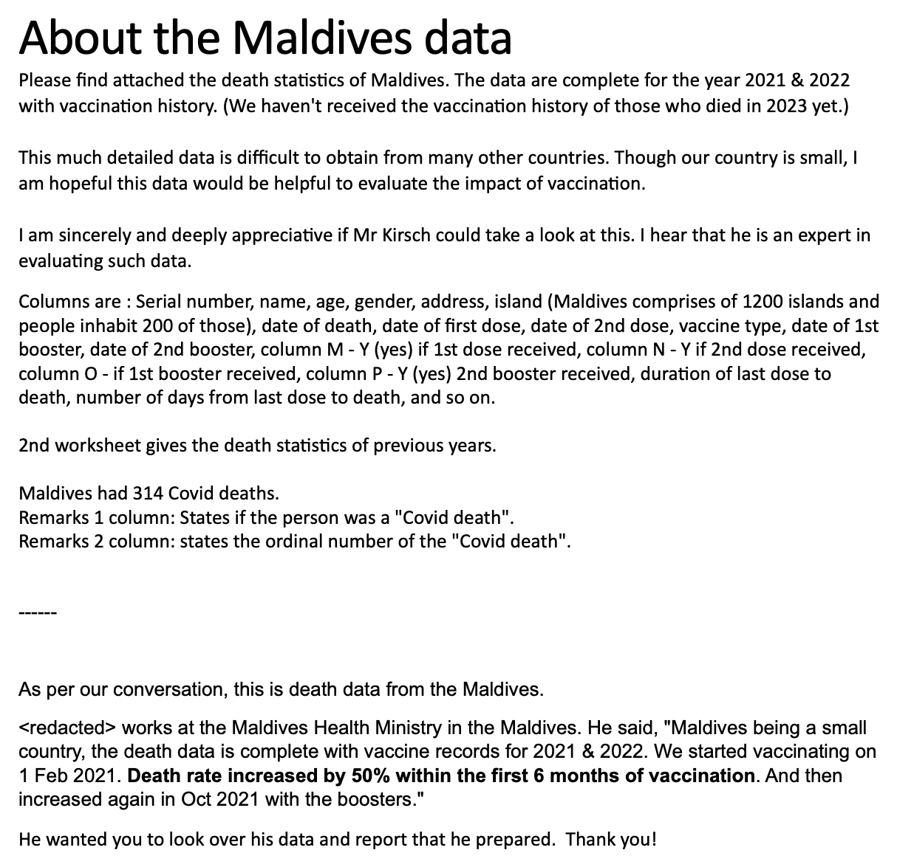
The records published by Kirsch seem to include a nearly complete list of people who died in 2021 and 2022, but there seems to be more deaths missing in 2020 and 2023. I compiled this table of the yearly number of deaths in the Maldives from different sources:
| Source | 2017 | 2018 | 2019 | 2020 | 2021 | 2022 | 2023 |
|---|---|---|---|---|---|---|---|
| Spreadsheet of records published by Kirsch | 496 | 1582 | 1496 | 827 | |||
| Monthly table in Kirsch's spreadsheet | 1313 | 1301 | 1131 | 1248 | 1579 | 1495 | |
| Yearly table in Kirsch's spreadsheet (including low birth weight) | 1450 | 1388 | 1216 | 1269 | 1573 | 1496 | 629 |
| Yearly table in Kirsch's spreadsheet (low birth weight deaths) | 209 | 176 | 175 | 3 | 202 | ||
| Statistics Maldives | 1241 | 1216 | 1041 | 1275 | 1552 | ||
| UNData | 1241 | 1216 | 1041 | 1275 | |||
| UN World Population Prospects | 1299 | 1370 | 1432 | 1542 | 1573 | 1466 | 1477 |
Notes on the table:
In the file data-transparency/Maldives/Maldives Days from Dose till death plots.xlsx, a comment by Kirsch says: "47.7% of people who died are not vaccinated. That makes no sense since 88% were vaccinated and the vaccine makes you more likely to die from all-causes and from COVID. This means that a lot of people are missing vaccination data. You can also tell this from the data where most of the newer records lack vaccination data." However in the file About the maldives data.docx, the people who sent the data to Kirsch wrote: "The data are complete for the year 2021 & 2022 with vaccination history. (We haven't received the vaccination history of those who died in 2023 yet.)"
The vaccination data seems to be only missing from 2023 and from part of December 2022, because up until November 2022 the percentage of deaths in unvaccinated people remains between 20% and 33% on each month of 2022:
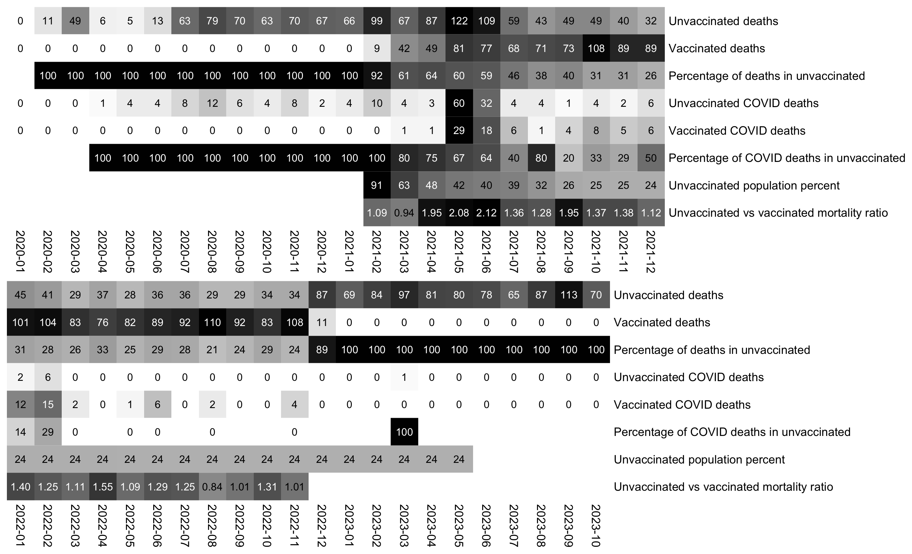
The heatmap above shows that in May 2021 when COVID deaths peaked, there were 122 deaths in unvaccinated people and 81 deaths in vaccinated people. And in May 2021 the percentage of unvaccinated people was 41.992% based on the average daily percentage of unvaccinated people at OWID, so based on the calculation (122/41.992)/(81/(100-41.992)), unvaccinated people had about 2.1 times higher mortality than vaccinated people in May 2021. However on months with a lower number of COVID deaths, the ratio between unvaccinated and vaccinated mortality was lower, which seems to indicate that vaccines prevented COVID deaths. For example the ratio was only about 0.94 in March 2021 which was before the COVID wave, and the ratio was only about 1.28 in August 2021 when the first wave of COVID deaths had mostly ended.
Most deaths are of course in older people, and older people are more likely to be vaccinated than younger people. So if you took a weighted average of the percentage of vaccinated people in each age group where the weight was the number of people in the age group in Kirsch's data, you'd probably get a much lower percentage of unvaccinated people than the percentage in the total population.
t=read.csv("https://sars2.net/f/kirsch_maldives.csv")
jabs=rowSums(t[,7:10]!="")
months=substring(seq(as.Date("2020-1-1"),as.Date("2023-10-1"),"1 month"),1,7)
m=table(jabs!=0,factor(substring(t$date_of_death,1,7),months))
rownames(m)=c("Unvaccinated deaths","Vaccinated deaths")
m=rbind(m,"Percentage of deaths in unvaccinated"=m[1,]/colSums(m)*100)
cov=.Primitive("|")(grepl("Covid",t$remarks_1),grepl("Covid",t$remarks_2))
m2=table(jabs[cov]!=0,factor(substring(t$date_of_death[cov],1,7),months))
rownames(m2)=c("Unvaccinated COVID deaths","Vaccinated COVID deaths")
m2=rbind(m2,"Percentage of COVID deaths in unvaccinated"=(1-m2[2,]/colSums(m2))*100)
m=rbind(m,m2)
download.file("https://covid.ourworldindata.org/data/owid-covid-data.csv","owid-covid-data.csv")
owid=read.csv("owid-covid-data.csv")|>subset(location=="Maldives")
m=rbind(m,"Unvaccinated population percent"=100-tapply(owid$people_vaccinated_per_hundred,factor(substring(owid$date,1,7),months),mean,na.rm=T))
m[7,37]=mean(m[7,c(36,38)])
m=rbind(m,"Unvaccinated vs vaccinated mortality ratio"=(m[1,]/m[7,])/(m[2,]/(100-m[7,])))
m[8,36:45]=NA
disp=round(m)
disp[8,]=sprintf("%.2f",m[8,])
m=t(apply(m,1,\(x)x/max(x,na.rm=T)))
for(i in 1:2){
start=(i-1)*24+1
end=min(i*24,ncol(m))
pheatmap::pheatmap(
m[,start:end],
filename=paste0("i",i,".png"),
cluster_rows=F,
cluster_cols=F,
legend=F,
cellwidth=21,
cellheight=21,
fontsize=9,
border_color=NA,
display_numbers=disp[,start:end],
fontsize_number=8,
na_col="white",
number_color=ifelse(m[,start:end]>.5,"white","black"),
breaks=seq(0,1,,256),
sapply(255:0,\(i)rgb(i,i,i,maxColorValue=255))
)
}
system("mogrify -shave 0x17 i[12].png;montage -geometry +0+0 -tile 1x i[12].png 0.png;mogrify -trim -bordercolor white -border 22 0.png")
In June 2021 when there was a big spike in COVID deaths, there was also a sharp spike in PCR positivity rate, and the monthly excess mortality rate at OWID reached above 100%:
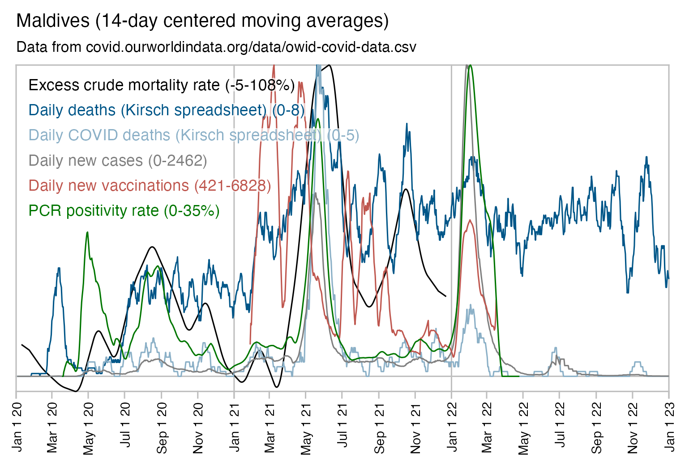
The plot above also shows that Kirsch's spreadsheet is missing approximately a third to a half of all deaths from July 2020 to January 2021 and even more deaths in the first six months of 2020.
Even though Maldives had over 100% excess mortality in May and June 2021 on OWID, people vaccinated in May 2021 had only 12 deaths in June 2021, even though they had 23 deaths during two later months. So it seems to either indicate that the vaccines prevented COVID deaths, or that the healthy vaccinee effect lasts longer than 3 weeks contrary to what Kirsch claims:
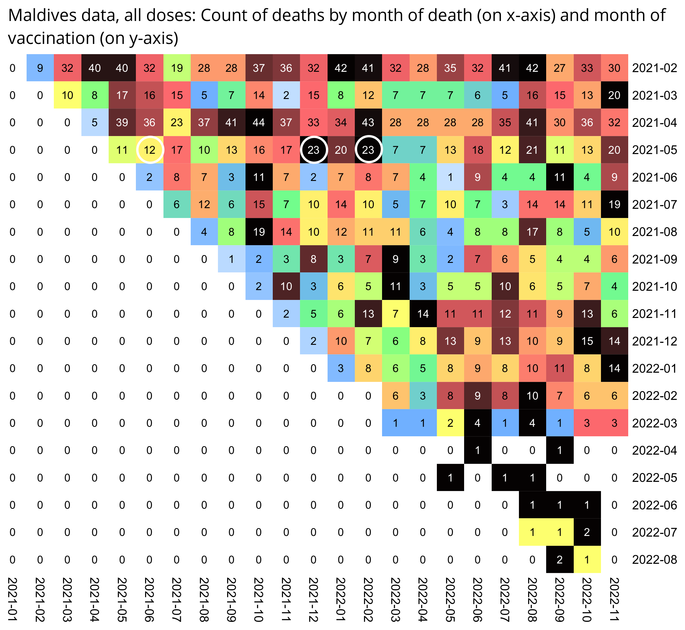
The heatmap above also shows that even among people who were vaccinated in January 2021, there was a lower number of deaths in May and June 2021 than on several months in 2022.
Uncle John Returns calculated monthly ASMR values and compared them to ASMR values from Mortality Watch: [https://x.com/UncleJo46902375/status/1732496623123517742]

(In the plot above the ASMR in the pay-per dose data is above the baseline during a few months in 2022 and 2023, but the ASMR figures I got were only above the baseline in May 2021. It might be because Mortality Watch uses 2020 population numbers but I used quarterly population numbers intepolated to monthly numbers.)
Uncle John Returns also made age-standardized plots for mortality per weeks after vaccination: [https://x.com/UncleJo46902375/status/1732770174896329107]
↙️ Kirsch's all-age mash-up
↘️ Same data but age-standardised

The proportion of old people in the early weeks is much higher since they are getting boosted ~week 26 and circling back to week 0, that's why there are 4.2 million in week 0 declining to 140 thousand by week 10. That's going to really screw up crude mortality rates:

[...]
Looking at crude rates for individual age bands, the early plunge is much more prevalent in the old than in the young and middle-aged:

The plots above used the average crude mortality rate in 2015-2019 as the baseline, where the population figures and death figures were from here: https://infoshare.stats.govt.nz. Compared to the 2015-2019 average, the actual crude mortality rate at Mortality Watch is about 2-9% lower in 2021 depending on the age group but about 1% lower to about 5% higher in 2022. [https://next.mortality.watch/explorer/?c=NZL&t=cmr_excess&ct=yearly&ag=15-64&ag=65-74&ag=75-84&ag=85%2B&bm=mean&p=1&v=2]
Uncle John Returns also posted another thread where he demonstrated the problem with using CMR instead of ASMR to calculate deaths by number of weeks since vaccination: [https://x.com/UncleJo46902375/status/1733441859848949763]
Simpson's paradox or as I prefer to call it, Kirsch's Conundrum
I have a demo data set loosely based on the NZ data but with 3 broad age bands only
Individual curves A, B and C are fine but when combined there's a scary peak at week 26
Denouement on next post then explanation

For demo purposes, I input the mortality rates and calculated the deaths. I incorporated the healthy vaccinee effect but made no allowance for vaccine-related deaths.
So demo data with absolutely no vaccines deaths can be manipulated to show a big scary peak.
I incorporated the healthy vaccinee effect to get the peak at week 26. Otherwise Curve D would start high and fall progressively. Final rates based on NZ 2015-19.
I took the person numbers directly from a Kirsch NZ spreadsheet.
The proportion of older people falls after week 26 because many are getting boosters and returning to week 0. Older people have far higher mortality rates.
The big drop in total numbers may also be something to do with the NZ data set. It results in erratic rates in the last few weeks.
Don't be fooled, Kirsch almost undoubtedly knows about Simpson's paradox.
He's just hoping you don't.
When Kirsch asked how a combination of flat lines can produce the scary bump, Uncle John explained it was because of Simpson's paradox: [https://x.com/UncleJo46902375/status/1734183092409999377]
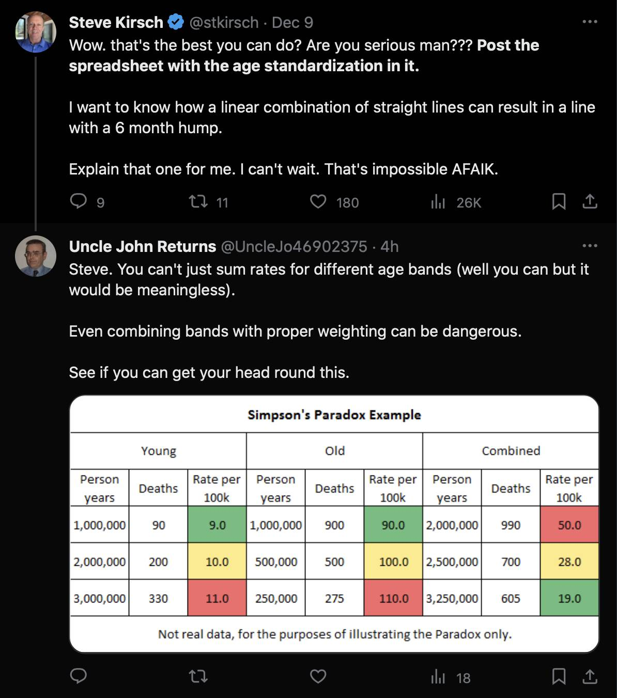
I don't want to copy all of Uncle John's tweets here, but here's links to his other tweets about the NZ data: https://x.com/UncleJo46902375/status/1732703798383071485, https://x.com/UncleJo46902375/status/1736389287354978784, https://x.com/UncleJo46902375/status/1739604466842640619, https://x.com/UncleJo46902375/status/1740325266163896593, https://x.com/UncleJo46902375/status/1740345755519557942, https://x.com/UncleJo46902375/status/1741423429641711929, https://x.com/UncleJo46902375/status/1741470572414923162, https://x.com/UncleJo46902375/status/1741764827339510003, https://x.com/UncleJo46902375/status/1742109373327872239, https://x.com/UncleJo46902375/status/1750160095026053406, https://x.com/UncleJo46902375/status/1751277431929909653.
In my previous heatmaps where I plotted the number of deaths by month of death and month of vaccination, the reason why there was a low number of deaths on the same month as vaccination was partially because people who got vaccinated at the middle of the month couldn't have died on earlier in the month. But now I made similar heatmaps where I calculated an excess mortality rate instead, so that for example a person who got vaccinated on the second-last day of a month was only counted for 2 person-days under the month. However there's still months where the month of vaccination has as low as -70% excess mortality:
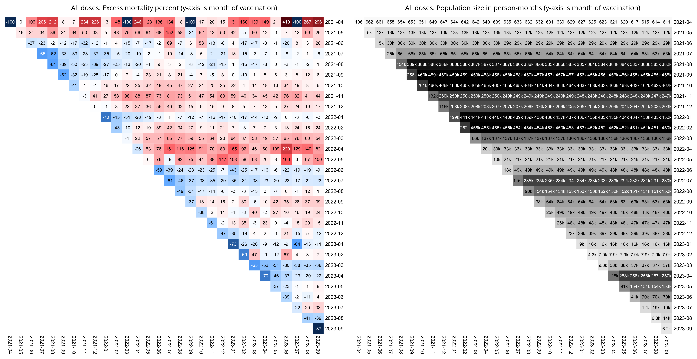
In the heatmap above, the reason why there is high mortality in people vaccinated in April-June 2021 might be because vulnerable people were given the vaccine earlier, because the people who were vaccinated in April-June 2021 continue to have high excess mortality even in 2022 and 2023. And the reason why there is high mortality in people vaccinated in March-May 2022 might be because fourth doses were given in three waves, where there was later high mortality among a small number of people received the fourth dose during the first wave which peaked in March 2022, but there was later low mortality among the much larger number of people who received the fourth dose during the second wave which peaked in July 2022.
In the image below which shows heatmaps for each dose, the first five doses all have a pattern where people who received the dose the earliest later had high excess mortality, but people who received the dose during the peak of the rollout later had low excess mortality, and for some reason people who received the dose in the earlier part of the peak seem to have lower mortality than people who received the dose in the later part of the peak:

t=as.data.frame(data.table::fread("nz-record-level-data-4M-records.csv",showProgress=F))
for(i in grep("date",colnames(t)))t[,i]=as.Date(t[,i],"%m-%d-%Y")
t=t[!(!is.na(t$date_of_death)&t$date_of_death<t$date_time_of_service),]
nzpop=tail(read.csv("https://sars2.net/f/nz_infoshare_population.csv"),2)[,3:96]
nzdeath=tail(read.csv("https://sars2.net/f/nz_infoshare_deaths.csv"),2)[,3:96]
cmr=data.frame(x=1:94,y=colMeans(nzdeath)/colMeans(nzpop)*1e5)
cmr=c(cmr$y,predict(loess(y~x,cmr,control=loess.control(surface="direct")),95:120))
dates=as.character(Reduce(\(...)seq(...,by=1),range(t$date_time_of_service,t$date_of_death,na.rm=T)))
ages=1:120
age=floor(time_length(difftime(t$date_time_of_service,t$date_of_birth),"years"))
month=format(t$date_time_of_service,"%Y-%m")
months=format(seq(as.Date("2021-4-1"),as.Date("2023-9-1"),"1 month"),"%Y-%m")
enddate=pmin(max(t$date_of_death,na.rm=T),t$date_of_death,na.rm=T)
pop=table(factor(as.character(t$date_time_of_service),dates),factor(month,months),factor(age,ages))
for(i in 2021:2023){
bday="year<-"(t$date_of_birth,i)
newage=floor(time_length(difftime(bday,t$date_of_birth),"years"))
pick=bday>t$date_time_of_service&bday<enddate
ta=table(factor(as.character(bday[pick]),dates),factor(month[pick],months),factor(newage[pick],ages))
pop=pop+ta
ta2=ta[,,c(2:120,120)]
ta2[,,120]=0
pop=pop-ta2
}
pick=!is.na(t$date_of_death)
deadage=factor(floor(time_length(difftime(t$date_of_death[pick],t$date_of_birth[pick]),"years")),ages)
death=table(factor(as.character(t$date_of_death[pick]),dates),factor(month[pick],months),deadage)
pop=pop-death
d=as.data.frame(pop)|>"colnames<-"(c("date","vaxmonth","age","pop"))
d$pop=unlist(tapply(d$pop,d[,2:3],cumsum))
d$death=c(death)
d$deathmonth=factor(format(as.Date(levels(d$date)),"%Y-%m")[d$date],months)
mpop=tapply(d$pop,d[,c(2,6)],sum)
mdeath=tapply(d$death,d[,c(2,6)],sum)
baseline=tapply(d$pop*cmr[d$age],d[,c(2,6)],sum)/mpop
crude=mdeath/mpop*1e5*365
crude[mpop==0]=NA
daysinmonth=lubridate::days_in_month(paste0(months,"-1"))
m2=t(t(mpop/daysinmonth)/daysinmonth)*365/12
m=(crude-baseline)/ifelse(crude>=baseline,baseline,crude)*100
disp=round((crude-baseline)/baseline*100)
m[mpop==0]=NA
m[m2<100]=NA
disp[is.na(m)]="NA"
disp[lower.tri(disp)]=""
exp=.86
m=abs(m)^exp*sign(m)
# maxcolor=max(abs(m[is.finite(m)]),na.rm=T)*.7
maxcolor=400^exp
m[is.infinite(m)]=-maxcolor
pheatmap::pheatmap(
m,
filename="mort.png",
cluster_rows=F,
cluster_cols=F,
legend=F,
cellwidth=19,
cellheight=19,
fontsize=9,
border_color=NA,
display_numbers=disp,
fontsize_number=8,
na_col="white",
number_color=ifelse(!(is.na(m))&abs(m)>.5*maxcolor,"white","black"),
breaks=seq(-maxcolor,maxcolor,,256),
colorRampPalette(colorspace::hex(colorspace::HSV(c(210,210,210,210,0,0,0,0,0),c(.9,.75,.6,.3,0,.3,.6,.75,.9),c(.4,.65,1,1,1,1,1,.65,.4))))(256)
)
m2[lower.tri(m2)]=NA
kimi=\(x){e=floor(log10(ifelse(x==0,1,abs(x))));e2=pmax(e,0)%/%3+1;x[]=ifelse(abs(x)<1,x,paste0(round(x/1e3^(e2-1),ifelse(e%%3==0,1,0)),c("","k","M","B","T")[e2]));x}
disp2=kimir2(m2)
disp2[is.na(m2)]=""
disp2[upper.tri(m2)&is.na(m2)]=0
exp2=.6
m2=m2^exp2
# maxcolor2=max0(m2)
maxcolor2=4.5e5^exp2
pheatmap::pheatmap(
m2,
filename="pop.png",
cluster_rows=F,
cluster_cols=F,
legend=F,
cellwidth=19,
cellheight=19,
fontsize=9,
border_color=NA,
display_numbers=disp2,
fontsize_number=8,
na_col="white",
breaks=seq(0,maxcolor2,,256),
number_color=ifelse(!(is.na(m2))&m2>maxcolor2*.5,"white","black"),
sapply(seq(1,0,,256),\(i)rgb(i,i,i))
)
The image below also shows that among people who received a dose during a month when a large number of other people received the same dose, excess mortality was generally low or even negative. And the total excess mortality was negative for the first five doses even though it was positive for the sixth dose, but there's only about 7,000 people in the dataset who have received the sixth dose. I looked excess mortality up to September 2023, because the New Zealand dataset is missing many deaths in October 2023 because of a registration delay:
ua=\(x,fun,...){u=unique(x);fun(u,...)[match(x,u)]} # unique apply (faster for long vectors with many repeated values)
AC=\(x){u=unique(x);as.character(u)[match(x,u)]} # fast conversion of date to character
fat=\(x,y)table(mapply(factor,x,y,SIMPLIFY=F)) # make a frequency table with dimension factors specified as a list
# this is a fast way to get the difference between dates in floored years
# this incorrectly treats 1900 and 2100 as leap years but it doesn't matter here
age=\(x,y){d1=as.numeric(x);d2=as.numeric(y);l1=(d1-789)%/%1461+1;l2=(d2-789)%/%1461+1;(d2-d1-(l2-l1))%/%365}
t=as.data.frame(data.table::fread("nz-record-level-data-4M-records.csv",showProgress=F))
for(i in grep("date",colnames(t)))t[,i]=ua(t[,i],as.Date,"%m-%d-%Y")
maxdate=as.Date("2023-9-30");t$date_of_death[t$date_of_death>maxdate]=NA
t=t[pmax(t$date_of_death<t$date_time_of_service,t$date_time_of_service>maxdate,na.rm=T)==0,]
vaxage=age(t$date_of_birth,t$date_time_of_service)
week=as.numeric(t$date_of_death-t$date_time_of_service)%/%7
month=ua(t$date_time_of_service,format,"%Y-%m")
dates=as.character(seq(min(t$date_time_of_service),maxdate,1))
months=format(seq(as.Date("2021-4-1"),as.Date("2023-9-1"),"1 month"),"%Y-%m")
dim=list(date=dates,vaxmonth=months,age=1:120,dose=1:6)
pop=fat(list(AC(t$date_time_of_service),month,vaxage,t$dose),dim)
dob=as.POSIXlt(t$date_of_birth)
for(i in 2021:2023){
bday=dob;bday$year=rep(i-1900,length(bday));bday2=as.Date(bday)
newage=age(dob,bday)
pick=bday2>t$date_time_of_service&bday<=maxdate
ta=fat(list(AC(bday2[pick]),month[pick],newage[pick],t$dose[pick]),dim)
pop=pop+ta
ta2=ta[,,c(2:120,120),];ta2[,,120,]=0;pop=pop-ta2
}
pick=!is.na(t$date_of_death)
deadage=age(t$date_of_birth[pick],t$date_of_death[pick])
death=fat(list(AC(t$date_of_death[pick]),month[pick],deadage,t$dose[pick]),dim)
pop=pop-death
d=cbind(expand.grid(dim),pop=c(pop),death=c(death))
d$pop=unlist(tapply(d$pop,d[,2:4],cumsum))
d$month=factor(format(as.Date(levels(d$date)),"%Y-%m")[d$date],months)
d=d[d$pop>0,]
ag=aggregate(d[,5:6],d[,c(2,7,3,4)],sum)
ag$dose=paste0("Dose ",ag$dose)
ag=rbind(ag,cbind(aggregate(ag[,5:6],ag[,1:3],sum),dose="Total"))
ag=rbind(ag,cbind(aggregate(ag[,5:6],ag[,2:4],sum),vaxmonth="Total"))
nzpop=tail(read.csv("https://sars2.net/f/nz_infoshare_population.csv"),2)[,3:96]
nzdeath=tail(read.csv("https://sars2.net/f/nz_infoshare_deaths.csv"),2)[,3:96]
cmr=data.frame(x=1:94,y=colMeans(nzdeath)/colMeans(nzpop)*1e5)
cmr=c(cmr$y,predict(loess(y~x,cmr,control=loess.control(surface="direct")),95:120))
mpop=tapply(ag$pop,ag[,c(4,1)],sum)
mdeath=tapply(ag$death,ag[,c(4,1)],sum)
baseline=tapply(ag$pop*cmr[ag$age],ag[,c(4,1)],sum)/mpop
crude=mdeath/mpop*1e5*365
crude[mpop==0]=NA
m=(crude-baseline)/ifelse(crude>=baseline,baseline,crude)*100
disp=round((crude-baseline)/baseline*100)
m[mpop==0]=NA
m[mpop/365<100]=NA
disp[is.na(m)]="NA"
exp=.86
m=abs(m)^exp*sign(m)
# maxcolor=max(abs(m[is.finite(m)]),na.rm=T)*.7
maxcolor=400^exp
m[is.infinite(m)]=-maxcolor
library(colorspace)
pheatmap::pheatmap(
m,filename="i1.png",display_numbers=disp,
cluster_rows=F,cluster_cols=F,legend=F,border_color=NA,na_col="white",
cellwidth=19,cellheight=19,fontsize=9,fontsize_number=8,
number_color=ifelse((abs(m)>.6*maxcolor)&!is.na(m),"white","black"),
breaks=seq(-maxcolor,maxcolor,,256),
colorRampPalette(hex(HSV(c(210,210,210,210,0,0,0,0,0),c(1,.8,.6,.3,0,.3,.6,.8,1),c(.3,.65,1,1,1,1,1,.65,.3))))(256)
)
exp2=.6
mpop2=(mpop/365)^exp2
mpop2[is.na(mpop2)]=0
# maxcolor2=max(mpop2,na.rm=T)
maxcolor2=6e5^exp2
kimi=\(x){e=floor(log10(ifelse(x==0,1,abs(x))));e2=pmax(e,0)%/%3+1;x[]=ifelse(abs(x)<1e3,round(x),paste0(sprintf(paste0("%.",ifelse(e%%3==0,1,0),"f"),x/1e3^(e2-1)),c("","k","M","B","T")[e2]));x}
disp2=mpop
disp2[!is.na(mpop)]=kimi(mpop[!is.na(mpop)]/365)
disp2[is.na(mpop)]=0
pheatmap::pheatmap(
mpop2,filename="i2.png",display_numbers=disp2,
cluster_rows=F,cluster_cols=F,legend=F,border_color=NA,na_col="white",
cellwidth=19,cellheight=19,fontsize=9,fontsize_number=8,
breaks=seq(0,maxcolor2,,256),
number_color=ifelse(mpop2>maxcolor2*.5,"white","black"),
sapply(seq(1,0,,256),\(i)rgb(i,i,i))
)
system("mogrify -trim i1.png;convert i1.png -gravity northwest -splice x14 -size `identify -format %w i1.png`x -pointsize 48 caption:'Excess mortality percent by dose and month of vaccination (from day of vaccination up to September 2023)' +swap -append -trim -bordercolor white -border 24 +repage i1..png")
system("mogrify -trim i2.png;convert i2.png -gravity northwest -splice x14 -size `identify -format %w i2.png`x -pointsize 48 caption:'Population size by dose and month of vaccination (in person-years up to September 2023)' +swap -append -trim -bordercolor white -border 24 +repage i2..png")
system("montage -geometry +0+0 -tile 1x i[12]..png 1.png")
In the heatmap below where I used the bucket system and I calculated excess mortality by dose and by weeks after vaccination, doses 2-5 got negative excess mortality for the first 20 weeks after vaccination, but dose 1 followed a completely different pattern where its excess mortality increased from about -38% during weeks 0-3 to about 64% during weeks 4-7 and about 205% during weeks 8-11, which is probably because many people had already gotten the second dose 3 or 4 weeks after the first dose.
download.file("https://sars2.net/f/buckets.gz","buckets.gz")
t=data.table::fread("buckets.gz",showProgress=F)
t=t[,.(alive=sum(alive),dead=sum(dead)),by=.(week=week%/%4*4,dose=paste0("Dose ",ifelse(dose>=5,"5+",dose)),age)]
nzpop=tail(read.csv("https://sars2.net/f/nz_infoshare_population.csv"),2)[,2:96]
nzdeath=tail(read.csv("https://sars2.net/f/nz_infoshare_deaths.csv"),2)[,2:96]
cmr=data.frame(x=0:94,y=colMeans(nzdeath)/colMeans(nzpop)*1e5)
cmr=c(cmr$y,predict(lm(y~poly(x),tail(cmr,10)),list(x=95:120)))
t$expected=t$alive*cmr[t$age+1]/365/1e5
tmp=paste0(t$week,"-",t$week+3);t$week=factor(tmp,unique(tmp))
t=rbind(t,t[,.(dead=sum(dead),alive=sum(alive),expected=sum(expected)),by=.(age,dose)]|>cbind(week="Total"))
t=rbind(t,t[,.(dead=sum(dead),alive=sum(alive),expected=sum(expected)),by=.(age,week)]|>cbind(dose="Total"))
ag=aggregate(t[,4:6],t[,2:1],sum,na.rm=T)
m=with(ag,tapply((dead-expected)/ifelse(dead>expected,expected,dead)*100,ag[,1:2],c))
disp=round(tapply((ag$dead/ag$expected-1)*100,ag[,1:2],c))
mpop=tapply(ag$alive,ag[,1:2],c)/365
hide=!is.na(mpop)&mpop<10;m[hide]=disp[hide]=NA
exp=.86
m=abs(m)^exp*sign(m)
maxcolor=400^exp
m[is.infinite(m)]=-maxcolor
pheatmap::pheatmap(
m,filename="i1.png",display_numbers=disp,
cluster_rows=F,cluster_cols=F,legend=F,cellwidth=19,cellheight=19,fontsize=9,fontsize_number=8,border_color=NA,na_col="white",
number_color=ifelse((abs(m)>.55*maxcolor)&!is.na(m),"white","black"),
breaks=seq(-maxcolor,maxcolor,,256),
colorRampPalette(colorspace::hex(colorspace::HSV(c(210,210,210,210,0,0,0,0,0),c(1,.8,.6,.3,0,.3,.6,.8,1),c(.3,.65,1,1,1,1,1,.65,.3))))(256)
)
exp2=.6
mpop2=mpop^exp2
mpop2[is.na(mpop2)]=0
maxcolor2=max(mpop2[-nrow(m),-ncol(m)])
kimi=\(x){e=floor(log10(ifelse(x==0,1,abs(x))));e2=pmax(e,0)%/%3+1;x[]=ifelse(abs(x)<1e3,round(x),paste0(sprintf(paste0("%.",ifelse(e%%3==0,1,0),"f"),x/1e3^(e2-1)),c("","k","M","B","T")[e2]));x}
disp2=mpop;disp2[is.na(disp2)]=0;disp2=kimi(disp2)
pheatmap::pheatmap(
mpop2,filename="i2.png",display_numbers=disp2,
cluster_rows=F,cluster_cols=F,legend=F,cellwidth=19,cellheight=19,fontsize=9,fontsize_number=8,border_color=NA,na_col="white",
number_color=ifelse(mpop2>maxcolor2*.45,"white","black"),
breaks=seq(0,maxcolor2,,256),
sapply(seq(1,0,,256),\(i)rgb(i,i,i))
)
system("mogrify -trim i1.png;convert i1.png -gravity northwest -splice x14 -size `identify -format %w i1.png`x -pointsize 42 caption:'Excess mortality percent by dose and weeks after vaccination. People are removed under previous doses after a new dose. The baseline is derived from the average CMR for each age in New Zealand in 2021-2022, where the CMR for each age was weighted by the number of person-days for the age.' +swap -append -trim -bordercolor white -border 24 +repage 1..png")
system("mogrify -trim i2.png;convert i2.png -gravity northwest -splice x14 -size `identify -format %w i2.png`x -pointsize 42 caption:'Person-years by dose and weeks after vaccination.' +swap -append -trim -bordercolor white -border 24 +repage 2..png")
system("montage -geometry +0+0 -tile 1x [12]..png 1.png")
Kirsch wrote: [https://kirschsubstack.com/p/the-nz-data-is-crystal-clear-that]
Sullivan uses a completely different approach to the typical time-series cohort I used analysis. He basically creates a cohort of everyone, aged 80 to 90 who had Dose 1 by putting in everyone who got Dose 1,2, or 3 but eliminating duplicates. He admitted this wasn't perfect, but said there isn't a perfect way to analyze this data which is true.
What he did was basically add people to his cohort on the day they were vaccinated so he's not guessing as to dates. So his cohort grows over time as people are added so the death rate will get more precise over time since he has more people available to die. He then can compute a mortality rate because he knows exactly the number of people he has alive and dead on every day (Note: he did NOT take out the people who died so his denominator is too large so the mortality rate is even higher than he calculated). So we'd expect this to be noisy from the start and then get more precise which is exactly what happens as you can see from the orange line:
He thinks the high mortality rate when the shots are first given out is the red flag. But in my view, the key is the orange mortality rate goes from around 2,500 in August to over 5,000 in December. This is a serious safety signal, a doubling of mortality rate in just 5 months. Moreover, he notes that there is no COVID yet and also is aware, but doesn't explicitly point out, that mortality seasonality peaks in August, and would be falling by 17% (3342/2856 from StatsNZ monthly numbers in August vs. Dec 2021).
Bottom line: A 50% increase in mortality rate at the same time when mortality rate should be falling by 17% is a huge anomaly and cannot be explained. This is, in effect, a 67% deviation from normal and the numbers are large enough to make this statistically significant.
I don't know if Kirsch meant to say a 100% increase and not a 50% increase. But anyway, Kirsch said that a CMR of over 5,000 in December 2021 was a "serious safety signal". However when I took the cohort of people who were 80-89 years old at the time of their first dose included in Young's dataset and I used the age composition of the cohort to calculate a baseline for the crude mortality rate, I got an baseline of about 8,500 deaths per 100,000 person-years in December 2021. In the years 2018-2022, the CMR of the 80-89 age group in New Zealand ranged from about 6,600 to about 7,400, but the reason why it's lower than my baseline is that ages 80-84 are underrepresented in Barry Young's data compared to ages 85-89, and that I modeled the aging of the cohort over time so that some people who were 89 years old by the time of their vaccination were 90 years old by December 2021.
I calculated average crude mortality rates for single-year age groups in New Zealand in 2021-2022 by using data from infoshare.stats.govt.nz. Then I calculated a baseline for the crude mortality rate by taking the weighted average of the CMRs of each age, where the weight was the number of people of the age in my cohort.
In June 2022 when the CMR peaked in ages 80-89, it barely reached above the baseline, even though June 2022 was in the middle of the first wave of COVID deaths, and it was also winter but I didn't adjust for seasonality in my baseline for the CMR:
In the plot above the crude mortality rate is far below the baseline in 2021, but it could be partially because of the healthy vaccinee effect and partially because there was negative excess mortality in 2021. The healthy vaccinee effect seems to be stronger in older age groups.
The reason why the plot above shows that the mortality rate is above the baseline in May-June 2021 might be because vulnerable people were priorized during the vaccine rollout, because even though people vaccinated in April-May 2021 had high excess mortality in the months after vaccination, they continued to have a similarly high excess mortality level even in 2022 and 2023, which might be because my baseline for the excess mortality accounted for age but not for other confounders. But as the vaccinated population grew in 2021, the mortality rate decreased because the people vaccinated in April-May made up a smaller part of the population.
When I included all age groups, the mortality rate remained below the baseline apart from short dips above the baseline in May 2021 and June to July 2022:
I came up with a fairly efficient vectorized way to calculate the daily number of people of each age in my cohort. I first made a matrix with one column for each age between 0 and 120 and one row for each date in the range 2021-04-08 to 2023-10-27, where the matrix showed the number of people of each age who were first vaccinated on each date. Then on the birthday of each person, I added 1 to the column for their new age and subtracted 1 from the column for their previous age. And when a person died, I subtracted 1 from the column for the age of the person. And then I simply calculated the cumulative sums for each column of the matrix:
library(ggplot2)
library(lubridate)
t=as.data.frame(data.table::fread("nz-record-level-data-4M-records.csv",showProgress=F))
for(i in grep("date",colnames(t)))t[,i]=as.Date(t[,i],"%m-%d-%Y")
t=t[order(t$date_time_of_service),]
t=t[!duplicated(t$mrn),]
t=t[-which(t$date_of_death<t$date_time_of_service),]
age=time_length(difftime(t$date_time_of_service,t$date_of_birth),"years")
t=t[age>=80&age<90,]
dates=Reduce(seq,as.numeric(range(t$date_time_of_service,t$date_of_death,na.rm=T)))
ages=1:120
age=floor(time_length(difftime(t$date_time_of_service,t$date_of_birth),"years"))
m=table(factor(as.numeric(t$date_time_of_service),dates),factor(age,ages))
enddate=pmin(max(t$date_of_death,na.rm=T),t$date_of_death,na.rm=T)
for(i in 2021:2023){
bday="year<-"(t$date_of_birth,i)
age=floor(time_length(difftime(bday,t$date_of_birth),"years"))
pick=bday>t$date_time_of_service&bday<enddate
ta=table(factor(as.numeric(bday[pick]),dates),factor(age[pick],ages))
m=m+ta
m=m-cbind(ta[,-1],0)
}
death=table(factor(as.numeric(t$date_of_death),dates),factor(floor(time_length(difftime(t$date_of_death,t$date_of_birth),"years")),ages))
m=m-death
m2=apply(m,2,cumsum)
nzpop=tail(read.csv("https://sars2.net/f/nz_infoshare_population.csv"),2)[,3:96]
nzdeath=tail(read.csv("https://sars2.net/f/nz_infoshare_deaths.csv"),2)[,3:96]
cmr=data.frame(x=1:94,y=colMeans(nzdeath)/colMeans(nzpop)*1e5)
cmr=c(cmr$y,predict(loess(y~x,cmr,control=loess.control(surface="direct")),95:120))
agepop=data.frame(date=as.Date(dates,"1970-1-1")[row(m2)],pop=c(m2),age=ages[col(m2)])
mav=\(x,y){l=length(x);s=e=y%/%2;if(y%%2==0)e=e-1;setNames(sapply(1:l,\(i)mean(x[max(1,i-s):min(l,i+e)],na.rm=T)),names(x))}
xy=data.frame(x=as.Date(dates,"1970-1-1"))
xy$pop=rowSums(m2)
xy$death=rowSums(death)
xy$baseline=tapply(agepop$pop*cmr[agepop$age+1],agepop$date,sum,na.rm=T)/tapply(agepop$pop,agepop$date,sum,na.rm=T)
xy$cmr=mav(xy$death/xy$pop*1e5*365,14)
xy$age=colSums(t(m2)*ages)/rowSums(m2)
dead=t[!is.na(t$date_of_death),]
xy$deadage=tapply(time_length(difftime(dead$date_of_death,dead$date_of_birth),"years"),factor(as.numeric(dead$date_of_death),dates),mean)|>mav(14)
# minpop=1e3
# xy$cmr[xy$pop<minpop]=NA
xy=na.omit(xy)
xstart=as.Date("2021-3-1")
xend=as.Date("2023-11-1")
candidates=c(sapply(c(1,2,5),\(x)x*10^c(-10:10)))
ystep=candidates[which.min(abs(candidates-max(xy$cmr)/6))]
ystart=0
yend=ystep*ceiling(max(xy$cmr,xy$age)/ystep)
ybreak=seq(ystart,yend,ystep)
ystep2=candidates[which.min(abs(candidates-max(xy$age,xy$deadage,na.rm=T)/6))]
yend2=ceiling(max(xy$age,xy$deadage,na.rm=T)/ystep2)*ystep2
secmult=yend/yend2
color1=c("black","gray40","#00aa00")
color2=c(hcl(60,100,35),hcl(60,90,60))
label1=data.frame(x=xstart+.02*(xend-xstart),y=ystart+(1.6+c(2:0))*(yend-ystart)/13,label=c("Deaths per 100k person-years (14-day moving average)","Baseline for CMR","Population in thousands of people"))
label2=data.frame(x=xstart+.98*(xend-xstart),y=ystart+(1.6+c(1:0))*(yend-ystart)/13,label=c("Average age at death (14-day moving average)","Average age of population"))
ggplot(xy,aes(x=x,y=cmr))+
geom_hline(yintercept=ystart,color="black",linewidth=.3,lineend="square")+
geom_vline(xintercept=c(xstart,xend),color="black",linewidth=.3,lineend="square")+
geom_line(aes(y=age*secmult),linewidth=.4,color=color2[2])+
geom_line(aes(y=deadage*secmult),linewidth=.4,color=color2[1])+
geom_line(aes(y=baseline),linewidth=.4,alpha=.5,color=color1[2])+
geom_line(aes(y=pop/1e3),linewidth=.4,color=color1[3])+
geom_line(linewidth=.4,color=color1[1])+
geom_label(data=label1,aes(x=x,y=y,label=label),fill=alpha("white",.8),label.r=unit(0,"lines"),label.padding=unit(.04,"lines"),label.size=0,size=3.2,hjust=0,vjust=1.7,color=color1)+
geom_label(data=label2,aes(x=x,y=y,label=label),fill=alpha("white",.8),label.r=unit(0,"lines"),label.padding=unit(.04,"lines"),label.size=0,size=3.2,hjust=1,vjust=1.7,color=color2)+
labs(x=NULL,y=NULL,title="NZ data: Crude mortality rate by date, ages 80-89",subtitle=paste0("Only the earliest dose is included for each person. The baseline for the CMR was calculated based on average CMR in 2021-2022 for single-year age groups, where the CMR of each age was weighted by the person-days of the age. The moving averages have a centered window.")|>stringr::str_wrap(80))+
coord_cartesian(clip="off")+
scale_x_date(limits=c(xstart,xend),breaks=seq(xstart,xend,"2 month"),expand=c(0,0),date_labels="%b 1 %y")+
scale_y_continuous(limits=c(ystart,yend),breaks=ybreak,expand=c(0,0),labels=\(x)ifelse(abs(x)>=1e3,paste0(x/1e3,"k"),x),sec.axis=sec_axis(trans=~./secmult,breaks=seq(0,yend2,ystep2)))+
theme(
axis.text=element_text(size=8,color="black"),
axis.text.x=element_text(angle=90,vjust=.5,hjust=1),
axis.ticks=element_line(linewidth=.3,color="black"),
axis.ticks.length=unit(.2,"lines"),
axis.title=element_text(size=9),
axis.title.y.right=element_text(margin=margin(0,0,0,5)),
legend.position="none",
panel.background=element_rect(fill="white"),
panel.grid=element_blank(),
plot.margin=margin(.3,.3,.3,.3,"lines"),
plot.subtitle=element_text(size=8.8,margin=margin(0,0,.5,0,"lines")),
plot.title=element_text(size=10.2,margin=margin(.2,0,.5,0,"lines"))
)
ggsave("1.png",width=5.5,height=3.8,dpi=400)
Kirsch wrote: [https://kirschsubstack.com/p/exclusive-stunning-new-charts-from]
The death counts for all ages (not gender specific), within 14 days of a specific shot goes from 260 (shot 3) vs. 315 (shot 4), a 21% increase. There are two possible causes for that: we might have more death data for shot 4, and shot 4 may be given at a time of year when deaths were high so the first 14 days would not be representative. There are 15% lower deaths in Dose 4, but the background deaths were 36% higher when Dose 4 was given. Guess what 36%-15% equals? 21%! So the absolute non-gender specific death number disparity in Dose 3 and 4 is easily explained by those two effects! Isn't it stunning how math works?
The table above was based on the bucket system where a person was no longer classified under dose 2 after they got dose 1, because the total person-years for dose 1 are identical to the files generated by buckets.py:
$ awk '$2==1{x+=$5}END{print x}' data-transparency/New\ Zealand/time-series\ summaries/month_dose_week_single_age.txt
124544187
Kirsch pointed out that compared to dose 3, dose 4 had more deaths within 14 days from vaccination but less total deaths. However it's probably because dose 4 has about 210 million person-days but dose 3 has about 510 million person-days, so dose 4 has a much higher mortality rate of deaths per person-days.
The mortality rate of deaths per 100k person-years is about 2,148 for dose 4 but only about 1,036 for dose 3. But dose 4 also has a higher average age than dose 3, so when I calculated excess mortality for each dose by comparing the CMR to a baseline derived from the age composition of the cohort, I got about -7% excess mortality for dose 3 and about -18% excess mortality for dose 4:
> t=read.table("https://sars2.net/f/month_dose_week_single_age.txt",header=T)
> t=t[t$dose>=1&t$dose<=7,]
> # t=t[t$week<=1,] # uncomment to only include the day of vaccination and 13 days after it
> pop=tail(read.csv("https://sars2.net/f/nz_infoshare_population.csv"),2)[,3:96] # 2021-2022 average
> death=tail(read.csv("https://sars2.net/f/nz_infoshare_deaths.csv"),2)[,3:96] # 2021-2022 average
> cmr=data.frame(x=1:94,y=colMeans(death)/colMeans(pop)*1e5)
> cmr=c(cmr$y,predict(loess(y~x,cmr,control=loess.control(surface="direct")),95:120))
> a=aggregate(t[,5:6],t[,c(2,4)],sum)
> a=rbind(a,aggregate(a[,3:4],a[,2,drop=F],sum)|>cbind(dose="Total"))
> d=aggregate(a[,3:4],a[,1,drop=F],sum)
> d$baseline=tapply(a$alive*cmr[a$age],a$dose,sum)/tapply(a$alive,a$dose,sum)
> d$cmr=d$dead/d$alive*1e5*365
> d$excess=(d$cmr-d$baseline)/d$baseline*100
> d$age=tapply(a$age*a$alive,a$dose,sum)/tapply(a$alive,a$dose,sum)
> d$age_at_death=tapply(a$age*a$dead,a$dose,sum)/tapply(a$dead,a$dose,sum)
> print.data.frame(dplyr::mutate_if(d,is.double,round),row.names=F)
dose alive dead baseline cmr excess age age_at_death
1 124544187 1149 301 337 12 31 69
2 442004510 5426 479 448 -6 37 72
3 509902998 14474 1110 1036 -7 50 79
4 213213534 12550 2606 2148 -18 67 82
5 57824852 3590 3242 2266 -30 71 83
6 950562 92 2312 3533 53 68 75
7 10771 1 1061 3389 219 64 66
Total 1348451414 37282 1157 1009 -13 48 79
During the day of vaccination and the 13 days after it, I got about -60% excess mortality for dose 3 and about -62% excess mortality for dose 4:
dose alive dead baseline cmr excess age age_at_death
1 13531399 96 635 259 -59 40 67
2 14485101 148 749 373 -50 42 72
3 14743266 232 1453 574 -60 53 80
4 10667070 280 2497 958 -62 65 83
5 5165691 173 3242 1222 -62 71 84
6 92480 2 2319 789 -66 68 74
7 1059 0 1194 0 -100 64 NaN
Total 58686066 931 1439 579 -60 51 79
Some people were wondering if the deaths were by date of registration and not date of occurrence. But it's probably by date of occurrence because there's a large number of deaths missing in October 2023, which is probably because of a registration delay for deaths. In the Medicare data published by Kirsch, the last death is on February 1st 2023 but there's also a large number of deaths missing in late January 2023.
In the UK ONS data the proportion of missing deaths at the end of the dataset is higher in younger age groups like in the case of the ONS data, because deaths in younger people have a longer registration delay on average than deaths in older people. [https://www.ons.gov.uk/peoplepopulationandcommunity/birthsdeathsandmarriages/deaths/articles/impactofregistrationdelaysonmortalitystatisticsinenglandandwales/2021] However a similar phenomenon is visible in the New Zealand data:
> t=as.data.frame(data.table::fread("nz-record-level-data-4M-records.csv"))
> for(i in grep("date",colnames(t)))t[,i]=as.Date(t[,i],"%m-%d-%Y")
> d=t[grepl("2023",t$date_of_death),]
> ta=table(d$age%/%20*20,factor(month.abb[month(d$date_of_death)],month.abb[1:10]))
> rownames(ta)=paste0(rownames(ta),c(paste0("-",as.numeric(rownames(ta))[-1]-1),"+"))
> cbind(ta,oct_missing_pct=round((1-ta[,10]/rowMeans(ta[,-10]))*100,1))
Jan Feb Mar Apr May Jun Jul Aug Sep Oct oct_missing_pct
0-19 12 6 6 7 5 3 5 4 3 0 100.0
20-39 47 32 52 50 48 45 49 34 20 4 90.5
40-59 279 210 202 214 271 258 228 236 247 25 89.5
60-79 1122 1042 1170 1172 1315 1487 1467 1446 1430 260 79.9
80-99 1792 1491 1728 1887 2182 2332 2729 2775 2653 524 75.9
100+ 24 28 24 26 35 43 50 54 73 7 82.4
The healthy vaccinee effect seems to be less strong in younger age groups so that older age groups have greater negative excess mortality during the first weeks after vaccination. In the heatmaps below if you look at total excess mortality on weeks 0-4, it's about +54% in ages 0-19, -32% in ages 20-39, -27% in ages 40-59, -47% in ages 60-79, and -51% in ages 80-99:


I don't know why ages 0-19 have positive excess mortality in the heatmaps above. I used the bucket system above, but in the plot below where I didn't use the bucket system, ages 0-19 still had high excess mortality for the first 60 days after a vaccine dose, even though after that the excess mortality remains close to 0% on days 60-359 after vaccination. It could be because immunocompromised young people were more likely to be vaccinated, even though then you'd expect the high excess mortality to continue after the first 60 days if the deaths were not related to the vaccine. So it might be an actual safety signal. (Even though for some reason there's also high excess mortality around days 400-499 from vaccination, so the low excess mortality on days 60-359 might be due to chance since the sample size is so small.)
As an argument in favor of the hypothesis that the high excess mortality in ages 0-19 during the first 60 days is due to chance, there's negative excess mortality on the first 60 days if you look at ages 0-29 instead of 0-19:
This shows the number of deaths in people who were 0-19 years old at the time of vaccination grouped by the last dose before death:
> t=as.data.frame(data.table::fread("nz-record-level-data-4M-records.csv"))
> for(i in grep("date",colnames(t)))t[,i]=as.Date(t[,i],"%m-%d-%Y")
> t=t[!is.na(t$date_of_death),]
> t$vaxage=floor(time_length(difftime(t$date_time_of_service,t$date_of_birth),"years"))
> t=t[rev(order(t$date_time_of_service)),]
> t=t[!duplicated(t$mrn),]
> t=t[t$vaxage<20&t$date_of_death-t$date_time_of_service<366,]
> ta=table(t$dose,factor(t$vaxage,0:19))
> ta=cbind(ta,Total=rowSums(ta))
> ta=rbind(ta,Total=colSums(ta))
> ta
0 1 2 3 4 5 6 7 8 9 10 11 12 13 14 15 16 17 18 19 Total
1 0 0 0 0 0 0 0 0 2 0 2 1 2 1 1 4 0 4 2 4 23
2 0 0 0 0 0 1 0 0 0 0 0 2 1 3 2 1 7 9 6 10 42
3 0 0 0 0 0 0 1 0 0 0 0 0 0 0 0 0 1 1 8 4 15
4 0 0 0 0 0 0 0 0 0 0 0 0 0 0 0 0 0 0 1 2 3
Total 0 0 0 0 0 1 1 0 2 0 2 3 3 4 3 5 8 14 17 20 83
However as an argument against the hypothesis that the positive excess mortality in ages 0-19 is because immunocompromised people were vaccinated early, the plot below shows that in people ages 0-19 who were vaccinated early on in August to October 2021, the total excess mortality is actually negative. And people vaccinated in August to October also had high excess mortality either on the month of vaccination or the next month. This is probably the best evidence I have found so far that some deaths may have been caused by vaccines in the NZ data, but it's not very good evidence regardless (because the sample sizes are so small that the high excess mortality during the first two months after vaccination may have been due to chance, and also later on if you look at people who received the first dose between November 2021 and February 2022, there were zero deaths on the same month as the month of vaccination):
Kirsch posted this tweet: [https://x.com/stkirsch/status/1739033294107467805]
However there's an increasing trend in CMR in New Zealand so using the 2017-2019 baseline as the average exaggerates excess mortality.
I calculated excess ASMR in New Zealand using a spreadsheet from here titled "Monthly death registrations by ethnicity, age, sex: January 2010 to December 2022": https://www.stats.govt.nz/information-releases/births-and-deaths-year-ended-december-2022-including-abridged-period-life-table/. I first calculated a polynomial trend from 2010 to 2019, and then I calculated the average ratio between actual ASMR and the trend for each 12 months, and I multiplied the trend with the ratio of each month. I got negative excess ASMR for every month of 2021 except for March and December. So why weren't the vaccines killing people in mid-2021 when the daily number of new vaccine doses peaked?
The reason why the heatmap above has low exess mortality in July 2022 could partially be because the deaths are by date of registration so some deaths that occurred in July may have been registered in August.
death=read.csv("https://sars2.net/f/nz_monthly_deaths_by_age.csv")|>subset(ethnicity=="Total")
a=with(death,aggregate(count,list(year=year_reg,month=month_reg,age=as.numeric(substr(age_group,1,2))),sum))
esp=c(1000,4000,5500,5500,5500,6000,6000,6500,7000,7000,7000,7000,6500,6000,5500,5000,4000,2500,1500,800,200)
espage=c(0,1,5,10,15,20,25,30,35,40,45,50,55,60,65,70,75,80,85,90,95)
pop=read.csv("https://sars2.net/f/nz_infoshare_population.csv",r=1,check=F)
pop=pop[as.numeric(rownames(pop))>=2010,]
cut=cut(as.numeric(colnames(pop)),c(espage,Inf),,T,F)
pop2=tapply(unlist(pop),list(row(pop),rep(cut,each=nrow(pop))),sum,na.rm=T)
me=merge(a,expand.grid(list(year=as.numeric(rownames(pop)),age=espage))|>cbind(pop=c(pop2)),all=T)
me$pop=me$pop/365*lubridate::days_in_month(as.Date(paste0(me$year,"-",me$month,"-1")))
me$month=factor(me$month,1:12)
ag=aggregate(me$x/me$pop*esp[match(me$age,espage)],me[,c(1,3)],sum)
ag$date=as.numeric(as.Date(paste0(ag$year,"-",ag$month,"-15")))
levels(ag$month)=month.abb
ag$baseline=predict(lm(x~poly(date,2),ag[ag$year<=2019&ag$year>=2010,]),ag)
mult=with(ag|>subset(year<2020),tapply(x/baseline,month,mean))
ag$baseline=ag$baseline*mult[ag$month]
m=with(ag,xtabs((x-baseline)/baseline~year+month))
m=cbind(m,Mean=rowMeans(m))
disp=round(m*100)
m=abs(m)^1.3*sign(m)
maxcolor=max(abs(m))
library(colorspace)
pheatmap::pheatmap(
m,filename="0.png",
display_numbers=disp,
gaps_col=12,
cluster_rows=F,cluster_cols=F,legend=F,border_color=NA,na_col="white",
cellwidth=19,cellheight=19,fontsize=9,fontsize_number=8,
number_color=ifelse(abs(m)>maxcolor*.6,"white","black"),
breaks=seq(-maxcolor,maxcolor,,256),
colorRampPalette(hex(HSV(c(210,210,210,210,0,0,0,0,0),c(.9,.75,.6,.3,0,.3,.6,.75,.9),c(.4,.65,1,1,1,1,1,.65,.4))))(256)
)
system("convert -trim 0.png -gravity northwest -splice x14 -size `identify -format %w 0.png`x -pointsize 45 caption:'Excess seasonality-adjusted ASMR percent in New Zealand relative to polynomial projection of data from 2010-2019' +swap -append -trim -bordercolor white -border 24 +repage 1.png")
Kirsch posted these tweets: [https://x.com/stkirsch/status/1739043222822023526]
However dose 4 had greater negative excess mortality during the rollout than dose 3, and the negative excess mortality cancels out the decreasing trend in seasonal mortality:


Older age groups have more seasonal fluctuation in mortality than younger age groups, so I calculated the seasonality-adjusted mortality based on monthly mortality in 5-year age groups. I used the spreadsheet from here titled "Monthly death registrations by ethnicity, age, sex: January 2010 to December 2022": https://www.stats.govt.nz/information-releases/births-and-deaths-year-ended-december-2022-including-abridged-period-life-table/. First I did a linear regression for monthly deaths in 5-year age groups in 2015-2019, and then I calculated the average difference from the trend for each month as percentage of the trend. And then I interpolated monthly data to daily data, and I made a matrix of daily multipliers for each 366 days of the year for each 5-year age group, and I used them to multiply my regular baseline for the CMR which was based on the age composition of the cohort.
The plot in Kirsch's tweet used the bucket system where a person who got the fourth dose was removed under the third dose. In the heatmap below where I used the bucket system but I didn't adjust excess mortality for seasonality, the excess mortality of the third dose went from negative in June 2022 to positive in the next two months when a large number of people got the fourth dose, which is probably because the "healthy vaccinees" got the fourth dose but the "unhealthy stragglers" remained under the third dose. A similar phenomenon is visible for the first three doses (but not for the fifth dose since only a small number of people had gotten the sixth dose by the end of available data):
In the dataset for mortality by vaccination status that was published by the UK Office of National Statistics, there is a big increase in ASMR among single-jabbed people which coincides with the rollout of the second dose, which Martin Neil and Norman Fenton hypothesized may have been because people who died within two weeks from their second dose were misclassified as single-jabbed. There is one dataset published by the UKHSA where people were classified as single-jabbed until two weeks after their second jab, and there is one dataset published by the ONS where people were classified as single-jabbed until three weeks after the second jab. But the ONS have said that in their dataset for mortality by vaccination status, they classified people as double-jabbed immediately after their second dose. [https://www.ons.gov.uk/peoplepopulationandcommunity/birthsdeathsandmarriages/deaths/bulletins/deathsinvolvingcovid19byvaccinationstatusengland/deathsoccurringbetween1april2021and31may2023#%3a%7e%3atext=From+the+day+of+vaccination%2C+the+individual+will+be+classed+as+vaccinated, https://www.ons.gov.uk/aboutus/transparencyandgovernance/freedomofinformationfoi/vaccinationstatusclassificationandallcausemortalitydata, https://x.com/SarahCaul_ONS/status/1634184181541478401, https://x.com/SarahCaul_ONS/status/1666815029528895488, https://paulmainwood.substack.com/p/how-to-mislead-with-statistics]
As further evidence against the hypothesis that was presented by Neil and Fenton, the New Zealand data also shows a big increase in mortality among single-jabbed people during the same time when the second dose is rolled out. From August 2021 to November 2021 when the monthly person-years of the second dose climbed up from about 6,000 to about 62,000, the excess ASMR of the first dose increases from about -62% to about 102%. And also from November 2021 to March 2022 when the monthly person-years of the third dose climb up from about 500 to about 78,000, the excess ASMR of the second dose increases from about -25% to about 80%:
I took the monthly number of deaths by age from this spreadsheet: https://www.stats.govt.nz/information-releases/births-and-deaths-year-ended-september-2023/. I took yearly population figures by single-year age from here: https://infoshare.stats.govt.nz/ ("Population > Population Estimates - DPE > Estimated Resident Population by Age and Sex (1991+) (Annual-Dec)"). Then I interpolated the yearly population figures to monthly figures and I calculated ASMR values using the 2013 European Standard Population, and I compared it to ASMR values in the pay-per-dose data.
In my heatmap above, dose 3 has about 332% excess ASMR in October 2022, but it's because the age group 5-9 had one death but only 647 person-days, and the age group 5-9 accounts for 5.5% of ESP2013, so the single death added about 3,100 deaths per 100k person-years to the total ASMR figure (from 1/6473655500). All age groups had a total of 25448920 person-days under dose 3 in October 2022, so the age group 5-9 accounted for only 647/25448920 or about 0.003% of total person-days, so it was overrepresented in the ASMR figure by a factor of about 2,200 (from 0.055/(647/25448920)).
In the UK ONS data, people with three doses have had high ASMR since December 2022, but it's partially because in the age groups 80-89 and 90+ there's about 16 times as many people with four doses as three doses, but the age groups 80 and over account for 5% of ESP2013 so they're always given 5% weight in the total ASMR figure, which causes people aged 80 and over to be overrepresented by a factor of about 4 or 5 in the ASMR figure for 3 doses. [stat.html#Make_a_heatmap_of_factor_by_which_age_groups_are_overrepresented_in_ASMR_figures_relative_to_ESP2013] So therefore the "unhealthy straggler effect" gets amplified, where a small percentage of elderly people who didn't get the fourth dose are given disproportionate weight in the total ASMR figure for the third dose.
Here's also a line plot of the same ASMR data. In order to avoid the high ASMR for dose in October 2022 that was caused by a single death, I omitted age and dose categories which had nonzero deaths and less than 1,000 person-days during a month:
The plot above shows that at first dose 5 had high ASMR when it had been given to only a small number of people, who probably included some immunocompromised or other vulnerable people, but the ASMR of dose 5 drops below the baseline in April 2023 when a larger percentage of people get the fifth dose. And similarly the ASMR of dose 4 is initially above the baseline, but it drops below the baseline in July 2022 when a larger percentage of people get the fourth dose.
R code for the heatmap:
death=read.csv("https://sars2.net/f/nz_monthly_deaths_by_age.csv")|>subset(ethnicity=="Total")
a=with(death,aggregate(count,list(year=year_reg,month=month_reg,age=as.numeric(substr(age_group,1,2))),sum,drop=F))
esp=c(10,40,55,55,55,60,60,65,70,70,70,70,65,60,55,50,40,25,15,8,2)*100;espage=c(0,1,seq(5,95,5))
pop=read.csv("https://sars2.net/f/nz_infoshare_population_quarterly.csv",check.names=F,row.names=1)
pop=pop[c(rbind(NA,1:nrow(pop),NA)),]|>apply(2,zoo::na.spline)
pop=tapply(c(pop),list(row(pop),rep(cut(as.numeric(colnames(pop)),c(espage,Inf),,T,F),each=nrow(pop))),sum,na.rm=T)
me=data.frame(year=rep(1991:2023,each=12),month=1:12)[rep(1:nrow(pop),ncol(pop)),]|>cbind(age=rep(espage,each=nrow(pop)),pop=c(pop))|>merge(a)
me$pop=me$pop/365*c(31,28,31,30,31,30,31,31,30,31,30,31)[me$month]
ag=aggregate(me$x/me$pop*esp[match(me$age,espage)],me[,1:2],sum,na.rm=T)
library(data.table)
ua=\(x,y,...){u=unique(x);y(u,...)[match(x,u)]}
buck=fread("buckets")[,.(alive=sum(alive),dead=sum(dead)),by=.(month=ua(date,substring,1,7),dose=ifelse(dose>5,"6+",dose),age=cut(age,c(espage,Inf),,T,F))]
x=paste0("Dose ",buck$dose);buck$dose=factor(x,unique(x))
buck=rbind(buck,cbind(aggregate(buck[,4:5],buck[,c(1,3)],sum),dose="Total"))
buck=rbind(buck,cbind(aggregate(buck[,4:5],buck[,c(2,3)],sum),month="Total"))
ppd=tapply(365*buck$dead/buck$alive*esp[buck$age],buck[,2:1],sum)
base=ag$x[match(colnames(ppd),sprintf("%d-%02d",ag$year,ag$month))]
base=c(head(base,-1),mean(base,na.rm=T))
disp=round((ppd-base)/base*100)
m=100*(ppd-base)/ifelse(ppd>base,base,ppd)
mpop=tapply(buck$alive,buck[,2:1],sum)/365
hide=!is.na(mpop)&mpop<10;m[hide]=disp[hide]=NA
exp=1
m=abs(m)^exp*sign(m)
# maxcolor=max(m,na.rm=T)
maxcolor=250^exp
m[is.infinite(m)]=-maxcolor
library(colorspace)
pheatmap::pheatmap(m,filename="i1.png",display_numbers=disp,
cluster_rows=F,cluster_cols=F,legend=F,cellwidth=19,cellheight=19,fontsize=9,fontsize_number=8,
border_color=NA,na_col="white",
number_color=ifelse((abs(m)>.55*maxcolor)&!is.na(m),"white","black"),
breaks=seq(-maxcolor,maxcolor,,256),
colorRampPalette(hex(HSV(c(210,210,210,210,0,0,0,0,0),c(1,.8,.6,.3,0,.3,.6,.8,1),c(.3,.65,1,1,1,1,1,.65,.3))))(256))
exp2=.6
mpop2=mpop^exp2
mpop2[is.na(mpop2)]=0
maxcolor2=max(mpop2[-nrow(m),-ncol(m)])
kimi=\(x){e=floor(log10(ifelse(x==0,1,abs(x))));e2=pmax(e,0)%/%3+1;x[]=ifelse(abs(x)<1e3,round(x),paste0(sprintf(paste0("%.",ifelse(e%%3==0,1,0),"f"),x/1e3^(e2-1)),c("","k","M","B","T")[e2]));x}
disp2=mpop;disp2[is.na(disp2)]=0;disp2=kimi(disp2)
pheatmap::pheatmap(mpop2,filename="i2.png",display_numbers=disp2,
cluster_rows=F,cluster_cols=F,legend=F,cellwidth=19,cellheight=19,fontsize=9,fontsize_number=8,
border_color=NA,na_col="white",
number_color=ifelse(mpop2>maxcolor2*.45,"white","black"),
breaks=seq(0,maxcolor2,,256),
sapply(seq(1,0,,256),\(i)rgb(i,i,i)))
system("w=`identify -format %w i1.png`;convert i1.png -gravity northwest -shave x10 \\( -size $[$w-40]x -pointsize 40 caption:'Excess ASMR percent in pay-per-dose data relative to reported ASMR among whole NZ population (people are removed under previous doses after a new dose)' -extent $[w-40]x -gravity center \\) +swap -append -trim -bordercolor white -border 24 +repage 1..png")
system("w=`identify -format %w i2.png`;convert i2.png -gravity northwest -shave x10 \\( -size $[$w-40]x -pointsize 40 caption:'Population in person-years in pay-per-dose data relative to reported ASMR among whole NZ population (people are removed under previous doses after a new dose)' -extent $[w-40]x -gravity center \\) +swap -append -trim -bordercolor white -border 24 +repage 2..png")
system("montage -geometry +0+0 -tile 1x [12]..png 1.png")
R code for the line plot:
death=read.csv("http://sars2.net/f/nz_monthly_deaths_by_age.csv")|>subset(ethnicity=="Total")
a=with(death,aggregate(count,list(year=year_reg,month=month_reg,age=as.numeric(substr(age_group,1,2))),sum,drop=F))
esp=c(10,40,55,55,55,60,60,65,70,70,70,70,65,60,55,50,40,25,15,8,2)*100;espage=c(0,1,seq(5,95,5))
pop=read.csv("http://sars2.net/f/nz_infoshare_population.csv",r=1,check=F)
pop=pop[as.numeric(rownames(pop))>=2010,]
cut=cut(as.numeric(colnames(pop)),c(espage,Inf),,T,F)
pop2=tapply(unlist(pop),list(row(pop),rep(cut,each=nrow(pop))),sum,na.rm=T)
me=merge(expand.grid(list(age=espage,year=as.numeric(rownames(pop))))|>cbind(pop=c(t(pop2)),month=7),a,all=T)
me$pop=unlist(tapply(me$pop,me$age,zoo::na.spline))
me$pop=me$pop/365*lubridate::days_in_month(as.Date(paste0(me$year,"-",me$month,"-1")))
me$month=factor(me$month,1:12)
ag=aggregate(me$x/me$pop*esp[match(me$age,espage)],me[,2:3],sum,na.rm=T,drop=F)
ag$date=as.numeric(as.Date(paste0(ag$year,"-",ag$month,"-15")))
library(data.table)
ua=\(x,y,...){u=unique(x);y(u,...)[match(x,u)]}
download.file("https://sars2.net/f/buckets.gz","buckets.gz")
buck=fread("buckets.gz",showProgress=F)[,.(alive=sum(alive),dead=sum(dead)),by=.(month=ua(date,substring,1,7),dose=paste0("Dose ",ifelse(dose>=5,"5+",dose)),age=cut(age,c(espage,Inf),,T,F))]
buck=rbind(buck,buck[,.(alive=sum(alive),dead=sum(dead),dose="All doses"),by=.(month,age)])
asmr=buck$dead/buck$alive*esp[buck$age]*365
asmr[buck$alive<1e3&buck$dead>0]=NA
xy=aggregate(list(x=asmr,pop=buck$alive),buck[,2:1],sum,na.rm=T,drop=F)
base=ag$x[match(unique(xy$month),sprintf("%d-%02d",ag$year,ag$month))]
xy=rbind(xy,data.frame(dose="Reported ASMR in total NZ population",month=unique(xy$month),x=base,pop=NA))
colnames(xy)=c("z","x","y","pop")
xy$x=as.Date(paste0(xy$x,"-1"))
xy$z=factor(xy$z,unique(xy$z)[c(2:6,1,7)])
xstart=as.Date("2021-5-1");xend=as.Date("2023-9-1")
cand=c(sapply(c(1,2,5),\(x)x*10^c(-10:10)))
ystep=cand[which.min(abs(cand-max(xy$y,na.rm=T)/5))]
ystart=0
yend=ystep*ceiling(max(xy$y,na.rm=T)/ystep)
yend2=100;ystep2=25;secmult=yend/yend2
color=c(hcl(c(210,120,60,0,300)+15,90,50),"black","gray50")
fill=c(hcl(c(210,120,60,0,300)+15,80,70),"black","gray50")
label=data.frame(x=xstart+.02*(xend-xstart),y=seq(yend,,-yend/15,nlevels(xy$z))-yend/20,label=levels(xy$z))
xy2=xy[grep("Dose ",xy$z),]
xy2$popfrac=99.97*xy2$pop/tapply(xy2$pop,xy2$x,sum,na.rm=T)[as.character(xy2$x)]
library(ggplot2)
ggplot(xy2,aes(x,y))+
geom_area(aes(color=z,fill=z,y=popfrac*secmult),size=.1,alpha=.22)+
geom_line(aes(color=z),size=.4)+
geom_line(data=xy[grep("Reported",xy$z),],color="gray50",linetype=2,size=.4)+
geom_line(data=xy[grep("All doses",xy$z),],color="black",size=.4)+
geom_hline(yintercept=c(ystart,yend),color="black",size=.3,lineend="square")+
geom_vline(xintercept=c(xstart,xend),color="black",size=.3,lineend="square")+
geom_label(data=label,aes(x=x,y=y,label=label),fill=alpha("white",.7),label.r=unit(0,"lines"),label.padding=unit(.1,"lines"),label.size=0,color=color[1:nrow(label)],size=2.7,hjust=0)+
coord_cartesian(clip="off")+
scale_x_date(limits=c(xstart,xend),breaks=seq(xstart,xend,"2 month"),expand=expansion(mult=0),date_labels="%b\n%Y")+
scale_y_continuous(limits=c(ystart,yend),breaks=seq(ystart,yend,ystep),expand=expansion(mult=c(0,0)),sec.axis=sec_axis(trans=~./secmult,breaks=seq(0,yend2,ystep2),name="Percentage of people with dose"))+
labs(title=stringr::str_wrap("Age-standardized mortality rate in New Zealand pay-per-dose data compared to ASMR calculated from reported mortality data among the total NZ population. People are removed under earlier doses after a new dose.",79),x=NULL,y="ASMR per 100k person-years")+
scale_color_manual(values=color)+
scale_fill_manual(values=fill)+
scale_linetype_manual(values=c(rep(1,6),2))+
theme(axis.text=element_text(size=6.5,color="black"),
axis.ticks=element_line(linewidth=.3,color="black"),
axis.ticks.length=unit(.2,"lines"),
axis.title=element_text(size=8),
axis.title.y.left=element_text(margin=margin(0,2,0,0)),
axis.title.y.right=element_text(margin=margin(0,0,0,3)),
legend.position="none",
panel.background=element_rect(fill="white"),
panel.grid=element_blank(),
plot.background=element_rect(fill="white"),
plot.margin=margin(.4,.4,.4,.4,"lines"),
plot.subtitle=element_text(size=7),
plot.title=element_text(size=8))
ggsave("1.png",width=5,height=3.3,dpi=400)
system("qlmanage -p 1.png &>/dev/null")
OpenVAET/canceledmouse used the monthly reported deaths in New Zealand in 5-year age groups to calculate what the expected number of deaths would've been for people in the pay-per-dose cohort: [https://openvaet.substack.com/p/the-new-zealand-whistleblower-data]
This is what the final modelled data looks like:
The red bars represent the reported deaths by week in the NZ "whistleblower" data set.
The grey bars represent the expected (modelled) deaths by week of the same size cohort with the same age distribution based on the available mortality data provided at NZstats.
The overall totals of death up to the 125th week (when the NZWB data deaths drop sharply due to reporting lag) amount to:
NZWB reported data = 36,683 deaths
Modelled (expected) data = 43,616 deathsWhat you can see is that there are actually less deaths in the cohort than should be expected based on the background data - about 14% less.
OpenVAET got 43,616 expected deaths up to week 125 since the beginning of data, where the first day of week 1 is April 7th 2021 and the last day of week 125 is August 29th 2023. [https://github.com/OpenVaet/nz_data/blob/main/Model.R#L154C43-L154C53] However he said that there were 36,683 deaths in the pay-per-dose data up to the end of week 125, which seems to match the number of deaths up to September 26th 2023:
> t=as.data.frame(data.table::fread("nz-record-level-data-4M-records.csv",showProgress=F))
> for(i in grep("date",colnames(t)))t[,i]=as.Date(t[,i],"%m-%d-%Y")
> min(t$date_of_death,na.rm=T)+(125*7-1) # get last day of week 125 if week 1 starts on 2021-05-09
"2023-09-30"
> sum(!duplicated(t$mrn)&!is.na(t$date_of_death)&t$date_of_death<=as.Date("2023-9-26"))
[1] 36683
But anyway, when I tried a similar approach of calculating the expected number of deaths based on the monthly reported number of deaths in 5-year age groups, and I only included data up to September 30th 2023, I got similar results as OpenVAET. I got a total of about 39,732 expected deaths, but the actual number of deaths in the pay-per-dose data was about 7% lower:
> ua=\(x,y,...){u=unique(x);y(u,...)[match(x,u)]} # unique apply (faster for long vector with many repeated values)
> download.file("https://sars2.net/f/buckets.gz","buckets.gz")
> t=data.table::fread("buckets.gz",showProgress=F)[dose<=5][,date:=ua(date,format,"%Y-%m")]
> t=t[,.(alive=sum(alive),dead=sum(dead)),by=.(date,age)]
> death=read.csv("https://sars2.net/f/nz_monthly_deaths_by_age.csv")|>subset(ethnicity=="Total")
> a=with(death,aggregate(count,list(year=year_reg,month=month_reg,age=as.numeric(substr(age_group,1,2))),sum))
> ages=unique(a$age)
> pop=read.csv("https://sars2.net/f/nz_infoshare_population_quarterly.csv",check.names=F,row.names=1)|>tail(11)
> pop=t(rowsum(t(pop),cut(as.numeric(colnames(pop)),c(ages,Inf),,T,F)))
> library(tempdisagg);pop=apply(pop,2,\(i)as.numeric(predict(td(ts(i,frequency=4)~1,"mean",to="monthly"))))
> me=merge(a,data.frame(year=rep(2021:2023,each=12)[1:33],month=rep(1:12,3)[1:33],age=ages[col(pop)],pop=c(pop)))
> me$pop=me$pop/365*c(31,28,31,30,31,30,31,31,30,31,30,31)[me$month]
> t$age=ages[cut(t$age,c(ages,Inf),,T,F)]
> me$date=sprintf("%d-%02d",me$year,me$month)
> me=merge(me[,-(1:2)],t)
> actual=tapply(me$dead,me$date,sum)
> expected=tapply(me$alive*me$x/me$pop/365,me$date,sum,na.rm=T)
> sum(actual)
[1] 36812
> sum(expected)
[1] 39319.81
> sum(actual)/sum(expected)
[1] 0.9362202
I got negative excess mortality for almost all months:
> round((actual/expected-1)*100)
2021-04 2021-05 2021-06 2021-07 2021-08 2021-09 2021-10 2021-11 2021-12 2022-01 2022-02 2022-03
-100 7 -19 -28 -47 -38 -16 -13 -7 -15 -8 -6
2022-04 2022-05 2022-06 2022-07 2022-08 2022-09 2022-10 2022-11 2022-12 2023-01 2023-02 2023-03
0 -5 3 -2 -22 -13 -2 -11 3 -7 -2 -6
2023-04 2023-05 2023-06 2023-07 2023-08 2023-09
4 -11 -4 2 -3 -8
I got -22% excess mortality in August 2022 but only -2% excess mortality in July 2022, even though New Zealand had a sharp drop in excess mortality and COVID deaths from July to August 2022. However the dataset for the monthly number of deaths I used was by registration date and not date of occurrence, so some deaths that occurred in July 2022 may have been registered in August 2022. [https://www.stats.govt.nz/information-releases/births-and-deaths-year-ended-september-2023/]
Here's also a line plot of the same data:
library(tidyverse)
system("wget -q sars2.net/f/buckets.gz")
ua=\(x,y,...){u=unique(x);y(u,...)[match(x,u)]} # unique apply (faster for long vector with many repeated values)
t=data.table::fread("buckets.gz",showProgress=F)[dose<=5][,date:=ua(date,format,"%Y-%m")]
t=t[,.(alive=sum(alive),dead=sum(dead)),by=.(date,dose=paste0("Dose ",dose),age)]
t=rbind(t,t[,.(alive=sum(alive),dead=sum(dead),dose="Doses 1-5"),by=.(date,age)])
death=read.csv("https://sars2.net/f/nz_monthly_deaths_by_age.csv")|>subset(ethnicity=="Total")
a=with(death,aggregate(count,list(year=year_reg,month=month_reg,age=as.numeric(substr(age_group,1,2))),sum))
ages=unique(a$age)
pop=read.csv("https://sars2.net/f/nz_infoshare_population_quarterly.csv",check.names=F,row.names=1)|>tail(11)
pop=t(rowsum(t(pop),cut(as.numeric(colnames(pop)),c(ages,Inf),,T,F)))
library(tempdisagg);pop=apply(pop,2,\(i)as.numeric(predict(td(ts(i,frequency=4)~1,"mean",to="monthly"))))
me=merge(a,data.frame(year=rep(2021:2023,each=12)[1:33],month=rep(1:12,3)[1:33],age=ages[col(pop)],pop=c(pop)))
me$pop=me$pop/365*c(31,28,31,30,31,30,31,31,30,31,30,31)[me$month]
t$age=ages[cut(t$age,c(ages,Inf),,T,F)]
me$date=sprintf("%d-%02d",me$year,me$month)
me=merge(me[,-(1:2)],t)
actual=tapply(me$dead,me[,c(2,5)],sum)/tapply(me$alive,me[,c(2,5)],sum)*365*1e5
xy=expand.grid(dimnames(actual))|>cbind(actual=c(actual))
wmg=\(x,y,z)tapply(x*y,z,sum,na.rm=T)/tapply(y,z,sum,na.rm=T) # weighted mean by group
xy$expected=c(wmg(me$x/me$pop,me$alive,me[,c(2,5)]))*1e5
xy$pop=c(tapply(me$alive,me[,c(2,5)],sum,na.rm=T))
xy$actual[xy$pop<1e4]=NA
xy$dose=factor(xy$dose,unique(xy$dose))
xy$date=as.Date(paste0(xy$date,"-1"))
xstart=as.Date("2021-4-1")
xend=as.Date("2023-9-1")
cand=c(sapply(c(1,2,5),\(x)x*10^c(-10:10)))
ymax=max(xy$expected,xy$actual,na.rm=T)
ystart=0
ystep=cand[which.min(abs(cand-ymax/5))]
yend=ystep*ceiling(ymax/ystep)
color=c(hcl(c(210,120,60,0,300)+15,90,50),"black","gray50")
fill=c(hcl(c(210,120,60,0,300)+15,80,70),"black","gray50")
pct=(tapply(me$dead,me$dose,sum)/tapply(me$x/me$pop*me$alive/365,me$dose,sum,na.rm=T)-1)*100
lab=paste0(levels(xy$dose)," (",round(pct),"%)")
label=data.frame(x=xstart+.02*(xend-xstart),y=seq(yend,,-yend/15,nlevels(xy$dose))-yend/15,label=lab)
kim=\(x)ifelse(x>=1e3,ifelse(x>=1e6,paste0(x/1e6,"M"),paste0(x/1e3,"k")),x)
ggplot(xy,aes(x=date,y=actual))+
geom_hline(yintercept=c(ystart,yend),color="gray75",linewidth=.3,lineend="square")+
geom_vline(xintercept=c(xstart,xend),color="gray75",linewidth=.3,lineend="square")+
geom_line(aes(color=dose),linewidth=.4)+
geom_point(aes(color=dose),size=.4)+
geom_line(aes(color=dose,y=expected),linewidth=.4,linetype=1,alpha=.32)+
geom_label(data=label,aes(x=x,y=y,label=label),fill=alpha("white",.7),label.r=unit(0,"lines"),label.padding=unit(.1,"lines"),label.size=0,color=color[1:nrow(label)],size=2.7,hjust=0)+
coord_cartesian(clip="off")+
scale_x_date(limits=c(xstart,xend),breaks=seq(xstart,xend,"3 month"),expand=expansion(mult=0),date_labels="%b %y")+
scale_y_continuous(limits=c(ystart,yend),labels=kim,breaks=seq(ystart,yend,ystep),expand=expansion(mult=c(0,0)))+
labs(title=str_wrap("Mortality rate per 100k person-years in New Zealand pay-per-dose data. The lines in a light color show a baseline calculated based on reported mortality rates among 5-year age groups in New Zealand, where the mortality rate of each age group was weighted by the number of person-days for the group in the pay-per-dose data. A total excess mortality percentage is shown after the dose number.",88),x=NULL,y=NULL)+
scale_color_manual(values=color)+
scale_fill_manual(values=fill)+
scale_linetype_manual(values=c(rep(1,6),2))+
theme(axis.text=element_text(size=7,color="black"),
axis.ticks=element_line(linewidth=.3,color="gray75"),
axis.ticks.length=unit(.2,"lines"),
axis.title=element_text(size=8),
axis.title.y.left=element_text(margin=margin(0,2,0,0)),
axis.title.y.right=element_text(margin=margin(0,0,0,3)),
legend.position="none",
panel.background=element_rect(fill="white"),
panel.grid=element_blank(),
plot.background=element_rect(fill="white"),
plot.margin=margin(.4,.6,.4,.6,"lines"),
plot.subtitle=element_text(size=7),
plot.title=element_text(size=8))
ggsave("1.png",width=5,height=3.3,dpi=400)
system("qlmanage -p 1.png&>/dev/null")
I also tried using OpenVAET's method to calculate excess mortality for each batch relative to the monthly number of reported deaths in 5-year age groups. I got positive excess mortality for 40 batches but negative excess mortality for 75 batches (including 7 out of 10 batches in Barry Young's table of the 10 deadliest batches):
> t=as.data.frame(data.table::fread("data-transparency/New Zealand/time-series summaries/all_all_buckets_with_batch id.txt"))
> t=t[t$dose>0&t$batch>0&t$month<="2023-09",]
> t=aggregate(t[,6:7],t[,c(1,3,5)],sum)
> death=read.csv("https://sars2.net/f/nz_monthly_deaths_by_age.csv")|>subset(ethnicity=="Total")
> a=with(death,aggregate(count,list(year=year_reg,month=month_reg,age=as.numeric(substr(age_group,1,2))),sum))
> pop=read.csv("https://sars2.net/f/nz_infoshare_population.csv",row.names=1,check.names=F)|>tail(10)
> ages=unique(a$age)
> cut=cut(as.numeric(colnames(pop)),c(ages,Inf),,T,F)
> pop2=tapply(unlist(pop),list(row(pop),rep(cut,each=nrow(pop))),sum,na.rm=T)
> me=merge(expand.grid(list(age=ages,year=as.numeric(rownames(pop))))|>cbind(pop=c(t(pop2)),month=7),a,all=T)
> me$pop=unlist(tapply(me$pop,me$age,zoo::na.spline))
> me$pop=me$pop*c(31,28,31,30,31,30,31,31,30,31,30,31)[me$month]
> t$age=ages[cut(t$age,c(ages,Inf),,T,F)]
> me$month=sprintf("%d-%02d",me$year,me$month)
> me=merge(me,t)
> fa=factor(me$batch,sort(unique(me$batch)))
> actual=tapply(me$dead,fa,sum)
> expected=tapply(me$alive*me$x/me$pop,fa,sum,na.rm=T)
> excess=(actual-expected)/expected*100
> options(width=80)
> round(excess)
1 2 3 4 5 6 7 8 9 10 11 12 13 14 15 16
60 -14 -21 -7 -100 -25 -59 -37 -35 -29 -27 -100 -33 -28 -13 -25
17 18 19 20 21 22 23 25 26 31 32 33 34 35 36 37
-16 -23 4 4 29 36 26 49 3 52 13 0 -40 -27 -19 -11
38 39 40 41 42 43 44 45 46 47 48 49 50 51 52 53
-4 -7 2 3 10 19 17 43 43 37 -5 0 5 6 29 70
54 55 56 58 59 60 61 62 63 64 65 66 67 68 69 70
85 46 2 78 19 -41 -46 -38 -36 -31 -30 -25 -15 -11 -12 2
71 72 73 74 75 76 77 78 79 80 81 82 83 84 85 86
19 39 9 -5 11 2 -11 2 16 3 -2 -7 0 -23 -32 -25
87 88 89 90 91 92 93 94 95 96 97 98 99 100 101 102
-100 -59 -12 -1 -34 -26 -9 50 0 -59 -42 -27 -44 -47 -49 -39
103 104 105 106 107 108 109 110 111 112 113 114 115 116 117 118
-30 -20 -14 -21 -13 -11 -26 -4 -17 -24 54 -12 -33 58 -25 -10
119 120 121 122 123 124 125
-67 -64 9 -15 -77 -45 -100
> round(excess[as.character(c(1,8,3,4,6,2,7,72,62,71))]) # 10 deadliest batches
1 8 3 4 6 2 7 72 62 71
60 -37 -21 -7 -25 -14 -59 39 -38 19
Kirsch posted this tweet: [https://x.com/stkirsch/status/1740096931865804898]
In the plots above the y-axis shows deaths per person-years. At first I thought that the trend was a 1-year moving average with a centered window, because the trend line is missing for the first half year in 2011 and the last half year in 2023. And in a 1-year moving average with a backwards window, the lowest point in the trend would be in the fourth and not second quarter of 2020.
However Kirsch later published the R code that was used to make the plot, and it turned out that it used the stl function with the "periodic" parameter: https://github.com/skirsch/R-projects/blob/main/NewZealand/main_share%2eR. The help page of the function says:
Decompose a time series into seasonal, trend and irregular components using loess, acronym STL. [...] The seasonal component is found by _loess_ smoothing the seasonal sub-series (the series of all January values, ...); if 's.window = "periodic"' smoothing is effectively replaced by taking the mean. The seasonal values are removed, and the remainder smoothed to find the trend. The overall level is removed from the seasonal component and added to the trend component. This process is iterated a few times. The 'remainder' component is the residuals from the seasonal plus trend fit.
The results of the stl function are similar to a 1-year moving average with a centered window, except it's a bit smoother. So if you think of the trend as a centered moving average, then the reason why it jumps up in early 2021 is because the window moves past the period in mid-2020 with the greatest negative excess mortality, and the reason why the trend jumps up in late 2021 is because the spike in COVID deaths in 2022 passes inside the window:
However my plot above shows that excess mortality mostly remained negative in the second and third quarters of 2021, which is when the majority of the NZ population got vaccinated.
This compares the trend calculated with stl to a 52-week centered moving average:
> t=read.csv("https://www.mortality.org/File/GetDocument/Public/STMF/Outputs/NZL_NPstmfout.csv")|>subset(Sex=="b")
> isoweek=\(year,week,weekday=7){d=as.Date(paste0(year,"-1-7"));d-(as.integer(format(d,"%w"))+6)%%7-1+7*(week-1)+weekday}
> xy=data.frame(x=isoweek(t$Year,t$Week,4),y=t$Total.1*1e5)
> vma=\(x,y){o=outer(1:length(x),y,"+");rowMeans(matrix(x[ifelse(o>=1&o<=length(x),o,NA)],length(x)),na.rm=T)}
> xy$movingaverage=vma(xy$y,-26:25)
> xy$stl=stl(ts(xy$y,frequency=365.25/7,start=lubridate::decimal_date(xy$x[1])),"periodic")$time.series[,2]
> head(xy,2)
x y movingaverage stl
1 2010-12-30 644.0150 661.7664 697.5768
2 2011-01-06 669.6959 663.6873 697.1584
In the United States the trend calculated with stl also begins to increase in late 2019 because of COVID deaths in spring 2020:


t=read.csv("https://www.mortality.org/File/GetDocument/Public/STMF/Outputs/USAstmfout.csv")
t=t[t$Sex=="b",]
isoweek=\(year,week,weekday=1){d=as.Date(paste0(year,"-1-4"));d-(as.integer(format(d,"%w"))+6)%%7-1+7*(week-1)+weekday}
floy=\(x)as.numeric(format(x,"%Y"))+(as.numeric(format(x,"%j"))-1)/365
date=floy(isoweek(t$Year,t$Week,4))
ts=ts(data=t$Total.1*1e5,frequency=365.25/7,start=as.numeric(date[1]))
startyear=2015;endyear=2024
xlab=c(c(rbind("",startyear:(endyear-1))),"")
library(ggplot2);library(ggfortify)
autoplot(decompose(ts))+
scale_x_continuous(breaks=seq(startyear,endyear,.5),labels=xlab,limits=c(startyear,endyear),expand=expansion(0))+
ggtitle("Deaths per 100k person-years in United States")+
coord_cartesian(clip="off")+
theme(
axis.text=element_text(size=8,color="black"),
axis.ticks=element_blank(),
axis.ticks.length=unit(.0,"lines"),
axis.ticks.length.x=unit(.06,"lines"),
axis.title=element_text(size=9),
panel.border=element_rect(color="gray80",fill=NA,linewidth=.3),
panel.grid.major=element_line(linewidth=.3,color="gray80"),
panel.grid.major.x=element_line(color=alpha("gray80",c(1,0))),
panel.background=element_rect(fill="white"),
panel.spacing=unit(.3,"lines"),
plot.title=element_text(size=11),
plot.margin=margin(.3,1.2,.3,.3,"lines"),
strip.background=element_rect(color="gray80",fill="gray90",linewidth=.3)
)
ggsave("1.png",width=5.5,height=5)
system("mogrify -gravity center -trim -border 24 -bordercolor white +repage 1.png")
system("qlmanage -p 1.png&>/dev/null")
Kirsch wrote: [https://kirschsubstack.com/p/attempts-to-discredit-the-new-zealand]
Here's an example of a huge safety signal in Lot #10:
Deaths per month after Dose 10. This can't happen for a safe vaccine. Do you know why?This pattern is impossible for a safe vaccine.
Yet none of the "experts" will be able to tell you why! I'll reveal why in my upcoming article. Everyone who claims to be able to analyze data should be talking about this!
Here's another example to show this wasn't a fluke:
Here's another example to show that Lot 10 wasn't a flukeAnd here's a third example that is even more stunning than the previous 2 charts:
Here's another exampleAgain, the "experts" have absolutely no clue why these charts are so stunning. That's one of many reasons they say this data is a nothing burger.
I calculated the baseline for each batch by using the 2021-2022 average CMR for single-year ages in NZ, so that I weighted the CMR for each age by the number of person-days for the age in the cohort. The number of deaths remained below the baseline until days 240-269 for batches 10 and 13 and until days 660-689 for batch 34:


I didn't adjust my baseline for seasonal fluctuation in mortality, so you can see that there's two winters where the number of deaths for batch 10 remains far above the baseline, even though the deaths dip below the baseline in between. The average vaccination date for doses in batch 10 is in August 2021.
The average age on the day of vaccination was about 49 for batch 10, 46 for batch 13, and 59 for batch 34. So the reason why batch 34 has the biggest increase in mortality rate might be because the healthy vaccinee effect seems to be stronger in older age groups. And batch 34 also has the steepest increase in the baseline because of the aging of the cohort.
Uncle John Returns pointed out that Kirsch counted people who died after receiving two shots from batch 10 as two deaths, which ununusually resulted in Kirsch fixing his plots. [https://x.com/UncleJo46902375/status/1740345755519557942]
I next tried using the method developed by OpenVAET/canceledmouse to calculate excess mortality by batch, where I calculated the baseline based on monthly reported excess mortality in 5-year age groups, so it's adjusted for both seasonality and increased mortality caused by COVID waves. I used the bucket system so that a person who got a vaccine from a new batch was no longer included under earlier batches. Batch 34 got -74% excess mortality on weeks 0-4 after vaccination, and in general batches given to older people had greater negative excess mortality during the first weeks after vaccination. The correlation between excess mortality on weeks 0-4 and average age was about -0.40:
In the heatmap above, the excess mortality of the first four batches shoots up on weeks 25-29 or 30-34, but that's because most people had gotten a vaccine from another batch by then so they were no longer included under the early batches, so the "unhealthy stragglers" who still remained under the early batches caused the mortality rate to increase.
t=as.data.frame(data.table::fread("data-transparency/New Zealand/time-series summaries/all_all_buckets_with_batch id.txt",header=T))
t=t[t$dose>0&t$batch>0&t$month<="2023-09",]
bin=5
t$week=t$week%/%bin*bin
ag=aggregate(t[6:7],t[c(1,3:5)],sum)
death=read.csv("https://sars2.net/f/nz_monthly_deaths_by_age.csv")|>subset(ethnicity=="Total")
a=with(death,aggregate(count,list(year=year_reg,month=month_reg,age=as.numeric(substr(age_group,1,2))),sum))
pop=read.csv("https://sars2.net/f/nz_infoshare_population.csv",row.names=1,check.names=F)|>tail(10)
ages=unique(a$age)
cut=cut(as.numeric(colnames(pop)),c(ages,Inf),,T,F)
pop2=tapply(unlist(pop),list(row(pop),rep(cut,each=nrow(pop))),sum,na.rm=T)
me=merge(expand.grid(list(age=ages,year=as.numeric(rownames(pop))))|>cbind(pop=c(t(pop2)),month=7),a,all=T)
me$pop=unlist(tapply(me$pop,me$age,zoo::na.spline))
me$pop=me$pop*c(31,28,31,30,31,30,31,31,30,31,30,31)[me$month]
ag$age=ages[cut(ag$age,c(ages,Inf),,T,F)]
me$month=sprintf("%d-%02d",me$year,me$month)
me=merge(me,ag)
x=sort(unique(t$week));me$week=factor(paste0(me$week,"-",me$week+bin-1),paste0(x,"-",x+bin-1))
me$batch=factor(me$batch,sort(unique(me$batch)))
me=rbind(me,aggregate(me[,8:9],me[,1:6],sum,na.rm=T)|>cbind(week="Total"))
me=rbind(me,aggregate(me[,8:9],me[,c(1:5,7)],sum,na.rm=T)|>cbind(batch="Total"))
g=list(factor(me$batch,sort(unique(me$batch))),me$week)
mort=tapply(me$dead,g,sum)
baseline=tapply(me$alive*me$x/me$pop,g,sum,na.rm=T)
mpop=tapply(me$alive,g,sum)/365
m=(mort-baseline)/ifelse(mort>baseline,baseline,mort)*100
disp=round((mort-baseline)/baseline*100)
hide=!is.na(mpop)&mpop<10;m[hide]=disp[hide]=NA
exp=1
m=abs(m)^exp*sign(m)
maxcolor=400^exp
m[is.infinite(m)]=-maxcolor
avage=tapply(me$age*me$alive,me$batch,sum)/tapply(me$alive,me$batch,sum)
rownames(m)=paste0(rownames(m)," (",round(avage),")")
library(colorspace)
pheatmap::pheatmap(
m,filename="i1.png",display_numbers=disp,
cluster_rows=F,cluster_cols=F,legend=F,cellwidth=19,cellheight=19,fontsize=9,fontsize_number=8,border_color=NA,na_col="white",
number_color=ifelse((abs(m)>.55*maxcolor)&!is.na(m),"white","black"),
breaks=seq(-maxcolor,maxcolor,,256),
colorRampPalette(hex(HSV(c(210,210,210,210,0,0,0,0,0),c(1,.8,.6,.3,0,.3,.6,.8,1),c(.3,.65,1,1,1,1,1,.65,.3))))(256)
)
exp2=.6
mpop2=mpop^exp2
mpop2[is.na(mpop2)]=0
maxcolor2=max(mpop2[1:(nrow(m)-2),1:(ncol(m)-2)])
kimi=\(x){e=floor(log10(ifelse(x==0,1,abs(x))));e2=pmax(e,0)%/%3+1;x[]=ifelse(abs(x)<1e3,round(x),paste0(sprintf(paste0("%.",ifelse(e%%3==0,1,0),"f"),x/1e3^(e2-1)),c("","k","M","B","T")[e2]));x}
disp2=mpop;disp2[is.na(disp2)]=0;disp2=kimi(disp2)
rownames(mpop2)=paste0(rownames(mpop2)," (",round(avage),")")
pheatmap::pheatmap(
mpop2,filename="i2.png",display_numbers=disp2,
cluster_rows=F,cluster_cols=F,legend=F,cellwidth=19,cellheight=19,fontsize=9,fontsize_number=8,border_color=NA,na_col="white",
number_color=ifelse(mpop2>maxcolor2*.45,"white","black"),
breaks=seq(0,maxcolor2,,256),
sapply(seq(1,0,,256),\(i)rgb(i,i,i))
)
system("convert -trim i1.png -gravity northwest -splice x14 -size `identify -format %w i1.png`x -pointsize 42 caption:'Excess mortality percent by batch and weeks since vaccination (relative to monthly reported mortality in 5-year age groups, bucket system). The average age weighted by person-days is shown in parentheses after the batch name.' +swap -append -trim -bordercolor white -border 24 +repage 1..png")
system("convert -trim i2.png -gravity northwest -splice x14 -size `identify -format %w i2.png`x -pointsize 42 caption:'Person-years by batch and weeks since vaccination (relative to monthly reported mortality in 5-year age groups, bucket system). The average age weighted by person-days is shown in parentheses after the batch name.' +swap -append -trim -bordercolor white -border 24 +repage 2..png")
system("montage -geometry +0+0 -tile 2x [12]..png 1.png")
This also shows that batches given to older people have a bigger increase in excess mortality percent on weeks 50-54 compared to weeks 0-4:
When Kirsch asked me how it was possible that the mortality rate of batch 10 was about twice as high a year from vaccination as in the weeks following vaccination, I told him that on weeks 3-7 after vaccination, the average mortality rate for batch 10 was about 1800 in ages 75-84, but the mortality rate of the 75-84 age group in NZ in 2021 was about 3700:
> t=read.table("data-transparency/New Zealand/time-series summaries/all_all_buckets_with_batch id.txt",header=T)
> t=t[t$batch==10&t$age%in%(75:84),]
> rate=tapply(t$dead,t$week,sum)/tapply(t$alive,t$week,sum)*365*1e5
> options(width=50)
> round(rate[1:20])
0 1 2 3 4 5 6 7 8 9
711 1422 1423 471 2721 1147 1335 3514 2160 1451
10 11 12 13 14 15 16 17 18 19
2187 2926 3665 5147 2214 2959 5197 2238 2282 4130
> mean(rate[4:8])
[1] 1837.469
> mort=read.csv("https://www.mortality.org/File/GetDocument/Public/STMF/Outputs/NZL_NPstmfout.csv")
> mean(mort$X75.84.1[mort$Year==2021])*1e5
[1] 3732.53
Kirsch has been saying that after 21 days from vaccination there should no longer be reduced mortality because of the healthy vaccinee effect. However in the US Medicare data he published, there seems to be reduced mortality for at least 2 months after pneumonia vaccines given in 2020, even though the period of reduced mortality seems to last for a shorter time in 2021 and 2022:
(The pneumonia vaccine data published by Kirsch had a large number of deaths on the day of vaccination, so I omitted them from the plot above in order to not stretch the y-axis too much. For example in 2020 there were 1487 deaths on the day of vaccination but only 387 deaths the next day. If it's true that a thousand extra people died on the day of a pneumonia vaccination, then that seems like a clear safety signal, but a similar phenomenon is not visible in the data for COVID vaccines that Kirsch published from the United States, New Zealand, or the Maldives.)
There also seems to be reduced mortality for about 2-3 months after the flu vaccines:
Kirsch's spreadsheet included the comments shown below, which makes it seem like he didn't understand that summer days were overrepresented 200 days after vaccination and winter days were again overrepresented at the end of the plot:
Some Estonian guy on Substack wrote that there was a strong safety signal in the pay-per-dose data, because the mortality rate in ages 70 to 90 increased from about 1,000-2,000 in 2021 to about 3,000-4,000 in 2022 and 2023: [https://kalev.substack.com/p/new-zealand-vaccine-data-a-case-for]
However in 2022 the mortality rate in ages 70-90 was about 4,000 (or about 3,800 if you don't include age 90):
> nzpop=tail(read.csv("https://sars2.net/f/nz_infoshare_population.csv"),1)[,3:96]
> nzdeath=tail(read.csv("https://sars2.net/f/nz_infoshare_deaths.csv"),1)[,3:96]
> sum(nzdeath[,70:90])/sum(nzpop[,70:90])*1e5
[1] 3955.729
> sum(nzdeath[,70:89])/sum(nzpop[,70:89])*1e5
[1] 3781.692
The mortality rate in ages 70-90 mostly remained under the seasonality-adjusted baseline:
Kirsch's S3 server has a spreadsheet which includes different sets of COVID vaccination data from Medicare, which was also posted here: https://www.skirsch.com/covid/Medicare-2-1-23.xlsx (from https://kirschsubstack.com/p/game-over-medicare-data-shows-the). However only the dataset from Connecticut also includes unvaccinated people. However the dataset only includes people who died, so the total population size of vaccinated and unvaccinated people is unknown. Therefore in order to compare mortality rate by vaccination status, I used the daily average number of deaths in the second half of 2022 as the baseline for each vaccination status group in the Connecticut data.
If you select people who had been vaccinated by March 2021, then from April onwards you get a fixed cohort where the size of the cohort only decreases after people die or run out of follow-up time. But it's not possible to get a similar fixed cohort for unvaccinated people, because new people get vaccinated over time which results in the number of deaths in unvaccinated people gradually decreasing over time.
However one approach to analyzing the Connecticut data is to compare two points of time that are close to each other so that there has not been a considerable change in the population size of unvaccinated people. So for example you can estimate the magnitude of the Omicron spike by comparing the highest point in deaths in January 2022 to the lowest point in deaths before or after the spike. When I used the 7-day moving averages shown in the plot below, the ratio between the highest point in January 2022 and the lowest point in March 2022 was about 2.22 in unvaccinated people but about 1.60 in vaccinated people:
In the plot above, part of the reason why the mortality in unvaccinated people went down between January and March 2022 is that more people got vaccinated. According to OWID, the percentage of unvaccinated population in the United States decreased from about 26.5% at the beginning of January 2022 to about 23.0% at the end of March 2022.
As a workaround for getting a fixed cohort of unvaccinated people, you can select people who were unvaccinated at a certain point of time even though they may have later been vaccinated. In the plot below where I used the end of March 2021 as the cutoff point, I still got higher mortality in unvaccinated people than vaccinated people. In the plot below the ratio between the maximum point in January 2022 and the minimum point in March 2022 is about 1.95 for unvaccinated people and about 1.60 for vaccinated people. Vaccinated people also have lower mortality from April to June 2021, but it might partially be because of the healthy vaccinee effect:
At first I thought that the people who had been vaccinated by March 2021 would be older than the people who hadn't, but in fact the average age was about 80.9 for people who had been vaccinated by March 2021 and about 81.2 for people who hadn't. It might be because the Connecticut data only includes people who died later.
In the case of each of the first 5 doses in the New Zealand data, people who were vaccinated during the earlier part of the rollout peak subsequently had lower excess mortality than people who were vaccinated during the later part of the rollout peak. The Connecticut data might display a similar "late vaccinee effect" where people who got vaccinated later had higher mortality than people who got vaccinated earlier.
In the plot below where I used the last day of June instead of March as the cutoff date for the last date of vaccination, now vaccinated people no longer had any clear depression in mortality in the months following the cutoff date, but it's probably because few people got their first vaccine in the 1-2 months before the cutoff date (or at least few people who died later, who were mostly elderly):
Next when I used the last day of December 2021 as the cutoff for the last day of vaccination, the ratio between the highest number of deaths in January 2022 and the lowest number of deaths in March 2022 was about 2.17 for people who were unvaccinated at the end of 2021 but about 1.57 for people who were vaccinated at the end of 2021. So the difference between the ratios was now higher than in my previous plot, because now people who got vaccinated in the second half of 2021 were no longer included under unvaccinated people:
library(tidyverse)
ct=read.csv("https://sars2.net/f/kirsch_medicare_connecticut.csv")
ct[,3:10]=lapply(ct[,3:10],as.Date)
vax=apply(ct[,4:10],1,min,na.rm=T)
vaxlim=as.Date("2021-04-01")
pick=!(!is.na(vax)&vax>=vaxlim)
xy=table(ct$death_dt[pick],!is.na(vax[pick]))
xy=data.frame(x=as.Date(rownames(xy)),y=as.numeric(xy),z=rep(c("Unvaccinated at death","Vaccinated by end of March 2021"),each=nrow(xy)))
# xy=table(ct$death_dt,!(or(is.na(vax),vax>vaxlim)))
# xy=data.frame(x=as.Date(rownames(xy)),y=as.numeric(xy),z=rep(c("Not vaccinated by end of March 2021","Vaccinated by end of March 2021"),each=nrow(xy)))
xy$z=factor(xy$z,unique(xy$z))
vma=\(x,y){o=outer(1:length(x),y,"+");rowMeans(matrix(x[ifelse(o>=1&o<=length(x),o,NA)],length(x)),na.rm=T)}
xy$y=unlist(tapply(xy$y,xy$z,vma,-3:3))
xy$y=xy$y/(with(subset(xy,x>="2022-07-01"),tapply(y,z,mean)))[xy$z]*100
xstart=as.Date("2021-4-1")
xend=as.Date("2023-1-1")
xy=xy[xy$x>=xstart&xy$x<=xend,]
xbreak=sort(c(seq(xstart,xend,"1 month"),seq(xstart+15,xend-15,"1 month")))
xlab=c(c(rbind("",format(head(seq(xstart,xend,"1 month"),-1),"%y %b"))),"")
cand=c(sapply(c(1,2,5),\(x)x*10^c(-10:10)))
ystep=cand[which.min(abs(cand-(max(xy$y)-min(xy$y))/6))]
ystep=20
ystart=ystep*floor(min(xy$y)/ystep)
yend=ystep*ceiling(max(xy$y)/ystep)
ybreak=seq(ystart,yend,ystep)
label=data.frame(x=xstart+.97*(xend-xstart),y=seq((yend-ystart)*.93+ystart,,-(yend-ystart)/12,nlevels(xy$z)),label=levels(xy$z))
color=hcl(c(210,0)+15,100,45)
rings=xy|>subset(grepl("2022-01",x))|>arrange(-y)|>slice_head(n=1,by=z)
rings%<>%rbind(xy|>subset(grepl("2022-03",x))|>arrange(-y)|>slice_tail(n=1,by=z))
ggplot(xy,aes(x=x,y=y))+
geom_vline(xintercept=seq(as.Date("2021-7-1"),as.Date("2022-10-1"),"3 month"),linewidth=.3,lineend="square",color="gray84")+
geom_vline(xintercept=c(xstart,as.Date("2022-1-1"),xend),linewidth=.3,lineend="square")+
geom_hline(yintercept=c(ystart,100,0,yend),linewidth=.3,lineend="square")+
geom_line(aes(color=z),linewidth=.3)+
geom_point(data=rings,size=4,shape=1,stroke=.5)+
geom_label(data=label,aes(x=x,y=y,label=label),fill=alpha("white",.85),label.r=unit(0,"lines"),label.padding=unit(.04,"lines"),label.size=0,size=2.9,hjust=1,color=color[1:nlevels(xy$z)])+
labs(x=NULL,y=NULL,title="Medicare Connecticut data: 7-day centered moving average of daily deaths by vaccination status, as percentage of average number of deaths in July to December 2022."|>str_wrap(80))+
\"."|fw(100))+
scale_x_date(limits=c(xstart,xend),breaks=xbreak,labels=xlab,expand=expansion(0))+
scale_y_continuous(limits=c(ystart,yend),breaks=ybreak,expand=expansion(0))+
scale_color_manual(values=color)+
coord_cartesian(clip="off")+
theme(
axis.text=element_text(size=6.8,color="black"),
axis.text.x=element_text(angle=90,vjust=.5,hjust=1),
axis.ticks=element_line(linewidth=.3),
axis.ticks.x=element_line(color=alpha("black",c(1,0))),
axis.ticks.length=unit(.2,"lines"),
axis.title=element_text(size=8),
legend.position="none",
panel.grid.major=element_blank(),
panel.grid.major.y=element_line(linewidth=.3,color="gray84"),
panel.background=element_rect(fill="white"),
plot.margin=margin(.3,.7,.3,.3,"lines"),
plot.title=element_text(size=8,margin=margin(.4,0,.5,0,"lines")),
plot.subtitle=element_text(size=7,margin=margin(0,0,.3,0,"lines"))
)
ggsave("1.png",width=4.5,height=3.2,dpi=400)
system("mogrify -gravity center -trim -border 24 -bordercolor white +repage 1.png")
system("qlmanage -p 1.png&>/dev/null")
Many southeastern states had a large spike in COVID deaths around August to September 2021, but the spike remained so small in Connecticut that it's not clearly visible in the plots above.
In August to September 2021 there was a huge spike in deaths in Florida, but it's barely visible among the vaccinated people who are included in the Medicare "all states subset" sheet:
But anyway, the Connecticut data seems to show that the ratio between unvaccinated and vaccinated mortality was higher during COVID waves, like how in the Maldives data unvaccinated people had about 2.1 times higher mortality than vaccinated people in May 2021 when COVID deaths peaked, but during other months the ratio was close to 1.0.
The plot below shows that among people vaccinated before April 2021 in the Medicare all states subset, there also seems to be reduced deaths during the COVID waves in January 2022 and August-September 2021. But the reduced number of deaths in April to June 2021 might be partially due to the healthy vaccinee effect, especially since it's below the level of deaths in all of 2022 (even though the expected number of deaths also goes up over time because the cohort gets older):
In ages 75+ in Connecticut, less than 5% of the population was listed as unvaccinated from December 2021 onwards: [https://data.ct.gov/Health-and-Human-Services/COVID-19-Vaccinations-by-Age-Group-ARCHIVED/vjim-iz5e/about_data]
> vax=read.csv("https://data.ct.gov/resource/vjim-iz5e.csv")
> vax2=vax[vax$age_group_years=="75+",]
> vaxpct=tapply(100-vax2$initiated_vaccination_percent,substr(vax2$date,1,7),mean)
> round(vaxpct,1)
2021-05 2021-06 2021-07 2021-08 2021-09 2021-10 2021-11 2021-12 2022-01 2022-02
14.3 12.8 12.1 11.5 10.2 8.1 5.2 3.3 2.3 2.1
2022-03 2022-04 2022-05 2022-06 2022-07 2022-08 2022-09 2022-10 2022-11 2022-12
1.9 1.6 1.2 3.8 3.9 3.9 3.9 4.0 4.2 4.5
2023-01 2023-02
4.7 4.7
However in the Connecticut dataset published by Kirsch, if you only include deaths at age 75 and above, then about 30-40% of deaths were in unvaccinated people:
> ct=read.csv("https://sars2.net/f/kirsch_medicare_connecticut.csv")
> ct2=ct[ct$age_at_death>=75,]
> deathpct=tapply(ct2$vaxxdate_1=="",substr(ct2$death_dt,1,7),mean)*100
> round(deathpct,1)
2020-12 2021-01 2021-02 2021-03 2021-04 2021-05 2021-06 2021-07 2021-08 2021-09
99.1 88.8 75.8 67.6 60.3 54.5 51.7 50.4 45.9 48.0
2021-10 2021-11 2021-12 2022-01 2022-02 2022-03 2022-04 2022-05 2022-06 2022-07
43.9 41.7 41.0 42.0 37.1 32.5 33.7 32.3 30.4 29.5
2022-08 2022-09 2022-10 2022-11 2022-12 2023-01
29.7 27.8 30.2 27.2 28.1 32.8
So in ages 75 and above, there is one month when unvaccinated people have about 40 times higher mortality rate than vaccinated people, and the lowest ratio is about 6.5:
> p2=vaxpct[names(deathpct)]
> round((deathpct/p2)/((100-deathpct)/(100-p2)),1)
2020-12 2021-01 2021-02 2021-03 2021-04 2021-05 2021-06 2021-07 2021-08 2021-09
NA NA NA NA NA 7.2 7.3 7.4 6.5 8.1
2021-10 2021-11 2021-12 2022-01 2022-02 2022-03 2022-04 2022-05 2022-06 2022-07
8.9 13.0 20.2 30.7 27.1 24.9 31.3 40.2 11.1 10.4
2022-08 2022-09 2022-10 2022-11 2022-12 2023-01
10.4 9.5 10.2 8.6 8.4 10.0
The ratio seems to be elevated during the Omicron wave in January and to a lesser extent during the minor delta wave in September:
The reason why the ratio between the unvaccinated and vaccinated mortality rate is so high could be because the Medicare data is missing vaccination records for many people who were actually vaccinated. Kirsch wrote: "The problem with the Medicare data is that the unvaccinated are a mix of people with vaccination and no vaccination so it is not pure. This is because Medicare patients went to a pharmacy to get their free vax and it wasn't recorded in the Medicare records. This is why half the Medicare records don't have any vax info at all. For Connecticut for example, there were 57,297 records of people in Medicare who died since Dec 14, 2020 and 26,092 had no vaccine records." [https://kirschsubstack.com/p/game-over-medicare-data-shows-the]
Another reason why the ratios are so high could be if the percentage of unvaccinated people was underestimated in the vaccination dataset for Connecticut I used. In the dataset the percentage of unvaccinated people in ages 75 and above was listed as about 1.6% in April 2022 and 1.2% in May 2022, but then it suddenly increased to about 3.8% in June 2022. So maybe there was some change to the methodology that was used to calculate the percentage.
In a dataset published by the CDC which includes vaccination statistics for each state, the percentage of people in Connecticut who had received the first dose reached 95.00% on April 11th 2022, but after that it remained capped at 95.00% for the rest of the dataset. However when I tried to calculate the percentage manually by dividing the number of people who had received the first dose with the population of Connecticut, the percentage reached above 100% in November 2022: [https://data.cdc.gov/Vaccinations/COVID-19-Vaccination-Trends-in-the-United-States-N/rh2h-3yt2]
> download.file("https://data.cdc.gov/api/views/rh2h-3yt2/rows.csv?accessType=DOWNLOAD","statesvax.csv")
> t=read.csv("statesvax.csv")|>subset(Location=="CT"&date_type=="Report")
> d=data.frame(time=as.Date(t$Date,"%m/%d/%Y"),vax=t$Admin_Dose_1_Cumulative)
> library(tempdisagg)
> pop=c(3577586,3603691,3608706,3617176)
> d=merge(d,predict(td(data.frame(as.Date(paste0(2020:2023,"-7-1")),pop)~1,"mean","daily","fast")),all=T,by=1)
> colnames(d)[3]="pop"
> d$vaxpct=100*d$vax/d$pop
> print.data.frame(tail(na.omit(d)),row.names=F)
time vax pop vaxpct
2023-04-05 3665065 3609618 101.5361
2023-04-12 3665855 3609802 101.5528
2023-04-19 3666615 3609994 101.5685
2023-04-26 3667574 3610193 101.5894
2023-05-03 3668858 3610400 101.6192
2023-05-10 3670090 3610614 101.6472
Maldives had about 100% excess mortality in May and June 2021 when they had the biggest spike in COVID deaths. In Kirsch's data from the Maldives, people who hadn't been vaccinated by the end of March 2021 had a bigger spike in deaths in May 2021 than people who had been vaccinated by the end of March 2021:
In my plots for the Medicare data, the people who were vaccinated before the cutoff date were about as old as the people who weren't vaccinated, but in the Maldives data the unvaccinated people were much younger. So in my plot for the Maldives data, there's a bias where the expected number of deaths over time goes up faster in vaccinated people because they're older.
In January 2023 Kirsch published another spreadsheet for Medicare data which includes the number of deaths by days after vaccination up to December 2022. [https://kirschsubstack.com/i/104943824/the-medicare-data-that-i-received] It also shows that the delta bump in August to September 2023 is missing in vaccinated people:
When I have shown Kirsch my plots where vaccinated people have had negative excess mortality on the first months after vaccination but close to 0% excess mortality a year later, Kirsch has argued that there is a selection bias where vaccinated people are healthier than the general population, so they have a lower baseline mortality than the age-matched general population, which causes vaccinated people to actually have positive and not zero excess mortality a year from vaccination.
So if for example the excess mortality in vaccinated people is -60% on the first month from vaccination, -30% on the second month, -20% on the third month, and 0% a year later, then Kirsch might argue that the baseline of the vaccinated people was actually at the -30% level, so vaccinated people actually had -42% excess mortality the first month, 0% the second month, +14% the third month, and +43% a year later.
But the vast majority of people are vaccinated, and the total excess mortality in New Zealand is now back to around zero, so how could everyone still be having +43% excess mortality? The excess mortality at 2 years after vaccination is similar to the excess mortality at 1 year after vaccination.
When I looked at all doses aggregated together in the output of buckets.py, and I used the mortality rate on weeks 3-5 as the baseline for each age, I got about 64% excess mortality on weeks 50-79:
> t=read.table("https://sars2.net/f/month_dose_week_single_age.txt",header=T)|>subset(dose>0)
> base=with(subset(t,week%in%3:5),tapply(dead,age,sum)/tapply(alive,age,sum))
> t2=t[t$week%in%50:79,]
> a=aggregate(t2[,5:6],t2[,4,drop=F],sum)
> expected=sum(a$alive*base[a$age],na.rm=T)
> expected # expected deaths in a cohort with the same age composition
[1] 3621.648
> sum(a$dead) # actual deaths on weeks 50-79
[1] 5948
> sum(a$dead)/expected-1)*100 # excess mortality percent
[1] 64.23461
In the files generated by buckets.py, weeks 50-79 only include people who hadn't gotten a new vaccine dose in 50 weeks, so the unhealthy stragglers are probably overrepresented. And there are so few deaths on weeks 3-5 that many ages have zero deaths, and the sample size is too small to calculate a baseline for the mortality rate in each age accurately.
However on each month except May 2021, people in the pay-per-dose dataset also had lower AMSR than the total New Zealand population:
> death=read.csv("https://sars2.net/f/nz_monthly_deaths_by_age.csv")|>subset(ethnicity=="Total")
> a=with(death,aggregate(count,list(year=year_reg,month=month_reg,age=as.numeric(substr(age_group,1,2))),sum))
> esp=c(10,40,55,55,55,60,60,65,70,70,70,70,65,60,55,50,40,25,15,8,2)*100;espage=c(0,1,seq(5,95,5))
> pop=read.csv("https://sars2.net/f/nz_infoshare_population_quarterly.csv",check.names=F,row.names=1)|>tail(11)
> pop=t(rowsum(t(pop),cut(as.numeric(colnames(pop)),c(espage,Inf),,T,F)))
> library(tempdisagg);pop=apply(pop,2,\(i)as.numeric(predict(td(ts(i,frequency=4)~1,"mean",to="monthly"))))
> me=merge(a,data.frame(year=rep(2021:2023,each=12)[1:33],month=rep(1:12,3)[1:33],age=espage[col(pop)],pop=c(pop)))
> me$pop=me$pop/365*c(31,28,31,30,31,30,31,31,30,31,30,31)[me$month]
> ag=aggregate(me$x/me$pop*esp[match(me$age,espage)],me[,1:2],sum,na.rm=T)
> buck=read.table("https://sars2.net/f/month_dose_week_single_age.txt",header=T)
> buck=subset(buck,dose>0&month<="2023-09"&month>="2021-05")
> buck=aggregate(buck[,5:6],list(month=buck$month,age=cut(buck$age,c(espage,Inf),,T,F)),sum)
> asmr=with(buck,tapply(dead/alive*esp[age],list(substr(month,1,4),as.numeric(substr(month,6,7))),sum))*365
> baseline=xtabs(x~year+month,ag);names(dimnames(baseline))=NULL
> round((asmr/baseline-1)*100) # excess ASMR percent
1 2 3 4 5 6 7 8 9 10 11 12
2021 29 -29 -32 -57 -52 -35 -23 -26
2022 -27 -25 -19 -16 -18 -12 -14 -32 -24 -12 -18 -9
2023 -15 -10 -13 -2 -14 -10 -2 -6 -9
> round(asmr) # AMSR in pay-per-dose data
1 2 3 4 5 6 7 8 9 10 11 12
2021 NA NA NA NA 1094 647 631 400 446 513 666 607
2022 596 611 745 750 808 899 874 775 726 742 746 758
2023 757 746 736 785 803 855 882 879 879 NA NA NA
> round(baseline) # reported ASMR in total NZ population
1 2 3 4 5 6 7 8 9 10 11 12
2021 825 802 841 808 848 906 927 929 922 786 870 820
2022 821 815 915 893 980 1024 1014 1131 961 847 904 831
2023 893 828 850 800 935 948 900 938 966 0 0 0
Thinking Slow posted this tweet: [https://x.com/ThinkingSlow1/status/1740830354255053061]
However on the page on OECD's website where the data was from, there's a link to a methodology PDF which says that they used a 2015-2019 average baseline: "The expected number of deaths is based on the average number of deaths for the same week over recent years (in this case the previous five years, 2015-19). This baseline could be considered a lower estimate of the expected number of deaths since both population growth and an ageing population would be expected to push up the number of deaths observed each year. For example, New Zealand saw its population grow by around 9% since 2015, with the number of people aged 65 and over increasing by 18%." [https://stats.oecd.org/index.aspx?queryid=104676, https://stats.oecd.org/fileview2.aspx?IDFile=97aacc20-eac4-4e44-8f59-9fb5b7e25090]
An OECD report about excess mortality includes the plot below, where the dark blue bars show excess mortality based on a 2015-2019 average baseline with a different baseline for each week, and the light-blue bars show excess mortality adjusted for changes in population size within three broad age groups. The report says: "When adjusted, nine OECD countries reported fewer deaths during this period than might have been expected, with estimates indicating New Zealand had around 4.4% fewer deaths over the three-year period than might have been expected if population structure and size had remained constant between 2015 and 2022." [https://one.oecd.org/document/DELSA/HEA/WD/HWP%282023%2915/en/pdf] (The first paragraph in the image below erroneously says that the light blue bars are unadjusted.)
Furthermore Thoughtfulnz tweeted: [https://twitter.com/Thoughtfulnz/status/1752886436947505472]
And that figure in the OECD documentation of 18% more 65 years and over people since 2015 was as of mid-2020 when the OECD set up that data, it is now at 29% higher living old people, and when Q4 2020 population figures are published in a few weeks will be somewhere over 30% more
In the heatmap below which shows the mortality rate in the pay-per dose data compared to the reported mortality rate among the whole NZ population, there's particularly low excess mortality in some of the oldest age groups in August 2022. It might be because the data for deaths I used was by registration date so COVID deaths which occurred in July may have been registered in August. New Zealand had a peak in the daily number of COVID deaths in late July and early August, and the total number of COVID deaths was similar in July and August.
During the early months of the vaccine rollout, older age groups had greater negative excess mortality than younger age groups, which is yet another indication that the healthy vaccinee effect is stronger in older age groups than younger age groups. In the age groups 90-94 and 95+, the excess mortality in the first half of 2022 was still around -20% to -50%, and it took until 2023 before the excess mortality had returned back to around zero.
On the last row of the heatmap below which shows all ages aggregated together, the total excess mortality is positive on most months, but that's because vaccinated people are older than the general population, and the people included in the pay-per-dose dataset are even older than average vaccinated people.


I got monthly number of deaths by age from here: https://www.stats.govt.nz/information-releases/births-and-deaths-year-ended-september-2023/. And I interpolated quarterly population figures from here to monthly figures: https://infoshare.stats.govt.nz.
espage=c(0,1,5,10,15,20,25,30,35,40,45,50,55,60,65,70,75,80,85,90,95)
agelab=c(0,paste0(espage,c(paste0("-",espage[-1]-1),"+"))[-1])
death=read.csv("https://sars2.net/f/nz_monthly_deaths_by_age.csv")|>subset(ethnicity=="Total")
death=with(death,aggregate(count,list(year=year_reg,month=month_reg,age=setNames(agelab,sort(unique(age_group)))[age_group]),sum))
pop=read.csv("https://sars2.net/f/nz_infoshare_population_quarterly.csv",check.names=F,row.names=1)|>tail(11)
pop=t(rowsum(t(pop),cut(as.numeric(colnames(pop)),c(espage,Inf),,T,F)))
library(tempdisagg);pop=apply(pop,2,\(i)as.numeric(predict(td(ts(i,frequency=4)~1,"mean",to="monthly"))))
me=merge(death,data.frame(year=rep(2021:2023,each=12)[1:33],month=rep(1:12,3)[1:33],age=agelab[col(pop)],pop=c(pop)),all=T)
monlen=c(31,28,31,30,31,30,31,31,30,31,30,31)
me$pop=me$pop*monlen[me$month]
buck=read.table("https://sars2.net/f/month_dose_week_single_age.txt",header=T)
buck=subset(buck,dose>0&month<="2023-09"&month>="2021-05",)
buck=aggregate(buck[,5:6],list(month=buck$month,age=agelab[cut(buck$age,c(espage,Inf),,T,F)]),sum,na.rm=T,drop=F)
d=merge(cbind(month=sprintf("%d-%02d",me$year,me$month),me[,-(1:2)]),buck,all=T)
d[is.na(d)]=0
d=d[d$month>="2021-05",]
d$age=factor(d$age,agelab)
d=rbind(d,cbind(aggregate(d[,3:6],d[,2,drop=F],sum,na.rm=T),month="Total"))
d=rbind(d,cbind(aggregate(d[,3:6],d[,1,drop=F],sum,na.rm=T),age="Total"))
d$age=droplevels(d$age)
m=with(d,tapply(((dead/alive)/(x/pop)-1),list(age,month),c))
m=t(apply(m,1,\(i){w=which(!is.na(i))[1];i[seq_along(i)>w&(is.na(i)|is.infinite(i))]=-1;i}))
disp=ifelse(is.nan(m),"NA",round(100*m))
m=ifelse(m<0,m/(1+m),m)
maxcolor=2
m[is.infinite(m)]=-maxcolor
library(colorspace);pheatmap::pheatmap(m,filename="i1.png",display_numbers=disp,
cluster_rows=F,cluster_cols=F,legend=F,cellwidth=19,cellheight=19,fontsize=9,fontsize_number=8,border_color=NA,na_col="white",
number_color=ifelse((abs(m)>.55*maxcolor)&!is.na(m),"white","black"),
breaks=seq(-maxcolor,maxcolor,,256),
colorRampPalette(hex(HSV(c(210,210,210,210,0,0,0,0,0),c(1,.8,.6,.3,0,.3,.6,.8,1),c(.3,.65,1,1,1,1,1,.65,.3))))(256))
mpop=with(d,tapply(alive/monlen[as.numeric(substr(month,6,7))],list(age,month),c))
mpop[,ncol(mpop)]=mpop[,ncol(mpop)-1]
exp2=.6
mpop2=mpop^exp2
mpop2[is.na(mpop2)]=0
maxcolor2=max(mpop2[-nrow(m),-ncol(m)])
kimi=\(x){e=floor(log10(ifelse(x==0,1,abs(x))));e2=pmax(e,0)%/%3+1;x[]=ifelse(abs(x)<1e3,round(x),paste0(sprintf(paste0("%.",ifelse(e%%3==0,1,0),"f"),x/1e3^(e2-1)),c("","k","M","B","T")[e2]));x}
disp2=mpop;disp2[is.na(disp2)]=0;disp2=kimi(disp2)
pheatmap::pheatmap(mpop2,filename="i2.png",display_numbers=disp2,
cluster_rows=F,cluster_cols=F,legend=F,cellwidth=19,cellheight=19,fontsize=9,fontsize_number=8,border_color=NA,na_col="white",
number_color=ifelse(mpop2>maxcolor2*.45,"white","black"),
breaks=seq(0,maxcolor2,,256),
sapply(seq(1,0,,256),\(i)rgb(i,i,i)))
system("mogrify -trim i1.png;convert i1.png -gravity northwest -splice x12 -size `identify -format %w i1.png`x -pointsize 45 caption:'NZ pay-per-dose data: Excess mortality percent by age relative to reported mortality rate in total NZ population' +swap -append -trim -bordercolor white -border 24 +repage 1..png")
system("mogrify -trim i2.png;convert i2.png -gravity northwest -splice x12 -size `identify -format %w i2.png`x -pointsize 45 caption:'NZ pay-per-dose data: Population size by age' +swap -append -trim -bordercolor white -border 24 +repage 2..png")
system("montage -geometry +0+0 -tile 2x [12]..png 1.png")
In the plot below I interpolated monthly data for deaths and quarterly data for population numbers to daily data and I calculated daily ASMR numbers among the total New Zealand population. Then I calculated the average ASMR for each week after vaccination based on the vaccination dates of people in the pay-per-dose dataset.
Kirsch has been asking why there is an increasing trend in deaths by weeks after vaccination until around week 50. However from the plot below you can see that the reported ASMR in the total NZ population increases from approximately week 10 to week 50. Part of the increase is because summer is turning to winter, and part of the increase is because of the first wave of COVID deaths from March to August 2022. And during the first 10 weeks the mortality rate in the pay-per-dose dataset is depressed because of the healthy vaccinee effect:
Kirsch claims that the mortality level around week 3 after vaccination is the baseline and later on vaccinated people have high excess mortality. But how is it possible when most of the NZ population is vaccinated and the total excess mortality in NZ is close to zero? In the plot above vaccinated people have around -31% excess mortality on week 3. But if the mortality level on week 3 was used as the baseline instead, then vaccinated people would a sustained level of about 30-50% excess mortality from week 13 onwards.
library(data.table);library(tempdisagg);library(ggplot2);library(stringr)
t=as.data.frame(fread("nz-record-level-data-4M-records.csv",showProgress=F))
for(i in grep("date",colnames(t)))t[,i]=as.Date(t[,i],"%m-%d-%Y")
t=t[order(t$date_time_of_service),];t=t[!duplicated(t$mrn),]
maxdate=as.Date("2023-9-30");t$date_of_death[t$date_of_death>maxdate]=NA
t=t[pmax(t$date_of_death<t$date_time_of_service,t$date_time_of_service>maxdate,na.rm=T)==0,]
bin=7
endbin=as.numeric(pmin(maxdate,t$date_of_death,na.rm=T)-t$date_time_of_service)%/%bin
deadbin=as.numeric(t$date_of_death-t$date_time_of_service)%/%bin
age=as.numeric(t$date_time_of_service-t$date_of_birth)/365.25
bins=0:max(endbin)
esp=c(10,40,55,55,55,60,60,65,70,70,70,70,65,60,55,50,40,25,15,8,2)*100;espage=c(0,1,seq(5,95,5))
espcut=\(x)cut(x,c(espage,Inf),,T,F)
dead=sapply(bins,\(i)table(espcut(age[i==deadbin]+i*bin/365)))
alive=sapply(bins,\(i)table(espcut(age[i<=endbin]+i*bin/365)))
asmr=colSums(dead/alive*esp*365/bin,na.rm=T)
o=outer(as.numeric(t$date_time_of_service),bins*bin+bin%/%2,"+");o[col(o)>endbin]=NA
nzpop=read.csv("https://sars2.net/f/nz_infoshare_population_quarterly.csv",check.names=F,row.names=1)|>tail(11)
nzpop=t(rowsum(t(nzpop),espcut(as.numeric(colnames(nzpop)))))
nzdeath=read.csv("https://sars2.net/f/nz_monthly_deaths_by_age.csv")|>subset(ethnicity=="Total")
nzdeath=xtabs(count~as.Date(paste(year_reg,month_reg,1,sep="-"))+age_group,nzdeath)|>tail(33)
dailypop=apply(nzpop,2,\(i)predict(td(data.frame(seq(as.Date("2021-1-1"),as.Date("2023-9-1"),"3 month"),i)~1,"mean","daily","fast"))$value)
dailydead=apply(nzdeath,2,\(i)predict(td(data.frame(as.Date(rownames(nzdeath)),i)~1,,"daily","fast"))$value)
dailyasmr=colSums(t(dailydead/dailypop)*esp*365)
baseline=colMeans(matrix(dailyasmr[o-as.numeric(as.Date("2021-1-1"))+1],nrow(o)),na.rm=T)
xy=data.frame(x=bins,asmr,baseline,pop=colSums(alive))
xy$asmr[xy$pop<5e3]=NA
xstart=ystart=0;xend=130;yend=1400;yend2=25e5;secmult=yend/yend2
xbreak=seq(xstart,xend,10);ybreak=seq(ystart,yend,200);ybreak2=seq(0,yend2,5e5)
leg1=data.frame(x=.025*xend,y=seq(.94*yend,,-yend/13,2),label=c("ASMR among vaccinated people in pay-per-dose data","Reported ASMR in total NZ population"))
leg2=data.frame(x=.975*xend,y=seq(.94*yend,,-yend/13,1),label="Population size")
color1=c("black","#0000aa");color2=c("#00aa00")
kim=\(x)ifelse(x>=1e3,ifelse(x>=1e6,paste0(x/1e6,"M"),paste0(x/1e3,"k")),x)
ggplot(xy,aes(x=x,y=asmr))+
geom_vline(xintercept=c(xstart,xend),linewidth=.3,lineend="square")+
geom_hline(yintercept=ystart,linewidth=.3,lineend="square")+
geom_line(linewidth=.3)+
geom_line(aes(y=baseline),linewidth=.3,linetype=2,color=color1[2])+
geom_line(aes(y=pop*secmult),linewidth=.3,color=color2[1])+
geom_label(data=leg1,aes(x=x,y=y,label=label),fill=alpha("white",.85),label.r=unit(0,"lines"),label.padding=unit(.05,"lines"),label.size=0,size=2.7,hjust=0,color=color1)+
geom_label(data=leg2,aes(x=x,y=y,label=label),fill=alpha("white",.85),label.r=unit(0,"lines"),label.padding=unit(.05,"lines"),label.size=0,size=2.7,hjust=1,color=color2)+
annotate(geom="label",x=xend/2,y=0,vjust=-.8,hjust=.5,label="Weeks from vaccination to death",fill=alpha("white",.85),label.r=unit(0,"lines"),label.padding=unit(.05,"lines"),label.size=0,size=2.7)+
labs(x=NULL,y=NULL,title="NZ pay-per-dose data: ASMR by weeks after vaccination compared to reported ASMR among total NZ population on the same week, European Standard Population 2013. Only the earliest vaccine dose is included for each person. Daily ASMR values were interpolated from monthly death data and quarterly population data. Weeks with population size below 5,000 omitted."|>str_wrap(75))+
scale_x_continuous(limits=c(xstart,xend),breaks=xbreak,expand=expansion(0))+
scale_y_continuous(limits=c(ystart,yend),breaks=ybreak,expand=expansion(0),sec.axis=sec_axis(trans=~./secmult,breaks=ybreak2,label=kim))+
coord_cartesian(clip="off")+
theme(axis.text=element_text(size=6.8,color="black"),
axis.ticks=element_line(linewidth=.3),
axis.ticks.length=unit(.2,"lines"),
axis.title=element_text(size=8),
panel.grid.major=element_blank(),
panel.background=element_rect(fill="white"),
plot.margin=margin(.3,.7,.3,.3,"lines"),
plot.title=element_text(size=7.9,margin=margin(.1,0,.5,0,"lines")))
ggsave("1.png",width=4.5,height=3.2,dpi=400)
system("mogrify -gravity center -trim -border 30 -bordercolor white +repage 1.png")
system("qlmanage -p 1.png&>/dev/null")
OpenVAET/canceledmouse pointed out that the pay-per-dose data is missing a disproportionate number of first doses during the early months when immunocompromised and vulnerable people were priorized, which might result in the mortality rate of the first dose being underestimated: [https://openvaet.substack.com/p/yet-another-dive-in-the-new-zealand]
When I kept people included under dose 1 even after subsequent doses, and when I calculated excess mortality based on the age composition of the cohort without adjusting for seasonal variation in mortality, then the total excess mortality up to September 2023 was about 109% for people who received the first dose in April 2021, 29% in May, -14% in June, -12% for July, -12% for August, 18% for September, and 51% for October:
The highest number of people received the first dose in August. Doses 2 to 5 also seem to have a similar "late vaccinee effect" where people who received the dose during the later part of the rollout peak subsequently had higher excess mortality than people who received the dose during the earlier part of the rollout peak.
So there seems to be a distribution where first a small number of the earliest vaccinees have high mortality, then second a large number of early vaccinees have low mortality, and then third a large number of late vaccinees have high mortality. And the proportion of doses that are missing from the NZ data gets lower over time, so even though the earliest vaccinees in the first group are overrepresented, the later part of the early vaccinees in the second group are also underrepresented, and the late vaccinees in the third group are overrepresented from September onwards:
In the plot above I selected the scale of the right axis so that if the red line is plotted on the left axis then its sum is equal to the sum of the dark blue line. The pay-per-dose data was obfuscated so that dates were shifted by a random number of days with a 7-day standard deviation, so the blue lines in the plot above look like moving averages which don't have considerable variation between weekdays and weekends. But I took a 7-day moving average of the red line because it had a lower number of vaccines given on weekends than weekdays.
vma=\(x,y){o=outer(1:length(x),y,"+");rowMeans(matrix(x[ifelse(o>=1&o<=length(x),o,NA)],length(x)),na.rm=T)}
vax=read.csv("https://raw.githubusercontent.com/OpenVaet/nz_data/main/raw_data/covid_19_data_portal%20-%20doses%20-%20data.csv")
vax=subset(vax,Label1=="First dose administered")
xy=data.frame(x=as.Date(vax$Period),nz=vma(vax$Value,-3:3))
ppd=as.data.frame(data.table::fread("nz-record-level-data-4M-records.csv",showProgress=F))
for(i in grep("date",colnames(ppd)))ppd[,i]=as.Date(ppd[,i],"%m-%d-%Y")
age=as.numeric(ppd$date_time_of_service-ppd$date_of_birth)%/%365.25
ppd1=ppd[ppd$dose_number==1&age>=50,]
ppd2=ppd[ppd$dose_number==1,]
xy$ppd=table(ppd1$date_time_of_service)[as.character(xy$x)]
xy$ppd2=table(ppd2$date_time_of_service)[as.character(xy$x)]
xstart=as.Date("2021-1-1");xend=as.Date("2022-7-1")
xseq=seq(xstart,xend,"1 month");xbreak=sort(c(xseq,xseq[-1]-15))
xlab=c(c(rbind("",format(head(xseq,-1),c("%b\n%Y","%b")[c(1,rep(2,11))]))),"")
cand=c(sapply(c(1,2,5),\(x)x*10^c(-10:10)))
ystep=cand[which.min(abs(cand-(max(xy$ppd2,na.rm=T))/6))]
yend=ystep*ceiling(max(xy$ppd2,na.rm=T)/ystep);ybreak=seq(0,yend,ystep)
secmult=Reduce("/",colSums(xy[,c(4,2)],na.rm=T))
ymax2=max(xy$ppd2,na.rm=T)/secmult
ystep2=cand[which.min(abs(cand-ymax2/6))]
yend2=ystep2*ceiling(ymax2/ystep2);ybreak2=seq(0,yend2,ystep)
leg1=data.frame(x=xstart+.025*(xend-xstart),y=seq(.92*yend,,-yend/10,2),label=c("Pay-per-dose data","Pay-per-dose data (ages 50 and above)"))
leg2=data.frame(x=xstart+.975*(xend-xstart),y=seq(.92*yend,,-yend/10,1),label="Total NZ population (7-day centered moving average)")
color1=c(hcl(245,100,25),hcl(210,60,70));color2="#bb1111"
kim=\(x)ifelse(x>=1e3,ifelse(x>=1e6,paste0(x/1e6,"M"),paste0(x/1e3,"k")),x)
library(ggplot2)
ggplot(xy,aes(x,ppd))+
geom_vline(xintercept=seq(as.Date("2020-1-1"),as.Date("2024-1-1"),"3 month"),linewidth=.35,lineend="square",color="gray80")+
geom_vline(xintercept=c(xstart,xend,seq(as.Date("2020-1-1"),as.Date("2024-1-1"),"year")),linewidth=.35,lineend="square")+
geom_hline(yintercept=c(0,yend),linewidth=.35,lineend="square")+
geom_line(color=color1[2])+
geom_line(aes(y=ppd2),color=color1[1])+
geom_line(aes(y=nz*secmult),color=color2)+
geom_label(data=leg1,aes(x=x,y=y,label=label),fill=alpha("white",.85),label.r=unit(0,"lines"),label.padding=unit(.05,"lines"),label.size=0,size=2.7,hjust=0,color=color1)+
geom_label(data=leg2,aes(x=x,y=y,label=label),fill=alpha("white",.85),label.r=unit(0,"lines"),label.padding=unit(.05,"lines"),label.size=0,size=2.7,hjust=1,color=color2)+
scale_x_date(limits=c(xstart,xend),breaks=xbreak,labels=xlab,expand=expansion(0))+
scale_y_continuous(limits=c(0,yend),breaks=ybreak,expand=expansion(0),labels=kim,sec.axis=sec_axis(trans=~./secmult,breaks=seq(0,yend2,ystep2),labels=kim))+
coord_cartesian(clip="off")+
labs(x=NULL,y=NULL,title="First doses given by day in New Zealand")+
theme(
axis.text=element_text(size=6.7,color="black"),
axis.title=element_text(size=8,color=color1[1]),
axis.title.y.right=element_text(color=color2,margin=margin(0,0,0,5)),
axis.ticks=element_line(linewidth=.3),
axis.ticks.x=element_line(color=alpha("black",c(1,0))),
axis.ticks.length=unit(.2,"lines"),
legend.position="none",
panel.grid.major=element_blank(),
panel.background=element_rect(fill="white"),
plot.margin=margin(.3,.3,.3,.3,"lines"),
plot.title=element_text(size=9,margin=margin(.2,0,.5,0,"lines"))
)
ggsave("1.png",width=5,height=3,dpi=400)
I haven't found data for PCR positivity rates in New Zealand, but there's wastewater data here: https://github.com/ESR-NZ/covid_in_wastewater/blob/main/data/ww_national.csv.
If the excess deaths in New Zealand were caused by vaccines and not COVID, then why do the waves of excess deaths coincide with periods of high wastewater prevalence?
# download.file("https://covid.ourworldindata.org/data/owid-covid-data.csv","owid-covid-data.csv")
t=as.data.frame(data.table::fread("owid-covid-data.csv",showProgress=F,fill=T))
t2=t[t$location=="New Zealand",c("date","excess_mortality","new_deaths","new_cases","new_vaccinations_smoothed_per_million")]
t2[,2]=c(t2[,2][-(1:3)],rep(NA,3))
xy=data.frame(x=as.Date(t2[,1]),y=unlist(t2[,-1]),z=rep(colnames(t2)[-1],each=nrow(t2)))
xy$z=factor(xy$z,unique(xy$z))
waste=read.csv("https://github.com/ESR-NZ/covid_in_wastewater/raw/main/data/ww_national.csv")
wast=tempdisagg::td(waste[,c(1,3)]~1,"mean","daily","fast")$value|>cbind("waste")|>setNames(letters[24:26])
wast$y=pmax(0,wast$y/1e3)
xy=rbind(xy,wast)
# ppd=as.data.frame(data.table::fread("nz-record-level-data-4M-records.csv",showProgress=F))
# death=na.omit(as.Date(ppd$date_of_death,"%m-%d-%Y"))
# xy=rbind(xy,data.frame(x=seq(min(death),max(death),1),y=tabulate(as.numeric(death-min(death))+1),z="ppd"))
names=read.csv(header=F,row.names=1,text="new_deaths,Daily COVID deaths
new_cases,Daily new cases
positive_rate,PCR positivity rate
new_vaccinations,Daily new vaccinations
new_vaccinations_smoothed_per_million,New vaccinations per million
weekly_hosp_admissions_per_million,Weekly hospital admissions for COVID per million
excess_mortality,Excess seasonality-adjusted crude mortality rate
new_tests,New tests performed
people_vaccinated_per_hundred,Percentage of vaccinated population
waste,Thousands of wastewater copies per person per day
ppd,Deaths in pay-per-dose data")
ispct=c("excess_mortality","positive_rate","people_vaccinated_per_hundred")
# xy$y=unlist(tapply(xy$y,xy$z,\(i){i=zoo::na.approx(i,na.rm=F);i[!is.na(i)]=smooth.spline(i[!is.na(i)],spar=.3)$y;i}))
vma=\(x,y){o=outer(1:length(x),y,"+");rowMeans(matrix(x[ifelse(o>=1&o<=length(x),o,NA)],length(x)),na.rm=T)}
xy$y=unlist(tapply(xy$y,xy$z,\(i)vma(zoo::na.approx(i,na.rm=F),-7:6)))
xy=xy[!is.na(xy$y),]
xstart=as.Date("2020-01-01");xend=as.Date("2023-9-1");xbreak=seq(xstart,xend,"2 month")
xy=subset(xy,x%in%xstart:xend)
ran=tapply(xy$y,xy$z,range)|>sapply(\(i)paste(round(i),collapse="-"))
lab=paste0(names[levels(xy$z),]," (",ran,ifelse(levels(xy$z)%in%ispct,"%",""),")")
xy$y=unlist(tapply(xy$y,xy$z,\(i)i/max(i)))
color=c("black","gray40","gray70",hcl(15,90,50),hcl(50,60,35),hcl(255,50,40))
ymin=min(xy$y);ylen=max(xy$y)-ymin
labels=data.frame(x=as.Date(xstart+.02*(xend-xstart)),y=seq(ymin+.93*ylen,,-ylen/13,length(lab)),label=lab)
library(ggplot2);ggplot(xy,aes(x,y,color=z))+
geom_hline(yintercept=c(min(xy$y),0,1),color="gray70",linewidth=.35,lineend="square")+
geom_vline(xintercept=c(xstart,xend),color="gray70",linewidth=.35,lineend="square")+
geom_vline(xintercept=c(xstart,xend,seq(as.Date("2020-1-1"),as.Date("2024-1-1"),"year")),color="gray70",linewidth=.35,lineend="square")+
geom_segment(data=data.frame(x=xbreak,y=ymin,xend=xbreak,yend=ymin-.02*ylen),aes(x,y,xend=xend,yend=yend),color="gray70",linewidth=.35,lineend="square")+
geom_line(linewidth=.35)+
geom_label(data=labels,aes(x=x,y=y,label=label),fill=alpha("white",.85),label.r=unit(0,"lines"),label.padding=unit(.04,"lines"),label.size=0,color=color[1:nlevels(xy$z)],size=3,hjust=0)+
labs(x=NULL,y=NULL,title="New Zealand (14-day centered moving averages)")+
coord_cartesian(clip="off")+
scale_x_date(limits=c(xstart,xend),breaks=xbreak,expand=expansion(0),date_labels="%b 1 %y")+
scale_y_continuous(expand=expansion(0))+
scale_color_manual(values=color)+
theme(axis.text=element_text(size=7,color="black"),
axis.text.x=element_text(angle=90,vjust=.5,hjust=1),
axis.text.y=element_blank(),
axis.ticks=element_blank(),
axis.ticks.length=unit(0,"lines"),
legend.position="none",
panel.background=element_rect(fill="white"),
panel.grid=element_blank(),
plot.margin=margin(.3,.6,.3,.6,"lines"),
plot.title=element_text(size=10,margin=margin(.1,0,.4,0,"lines")))
ggsave("1.png",width=5.5,height=3.5,dpi=400)
The GIF file below demonstrates the difference between mortality calculated based on the files generated by buckets.py and based on my R script here: moar.html#Baseline_for_deaths_by_week_after_first_dose.
In buckets.py the age of each person is the age on either the date of death or the age on the day when the script was ran for people who didn't die. But my R script models the aging of the cohort over time so that it calculates the age of each person separately for each week. So in the two plots in the GIF file above, the age at death on week 0 is similar but the age of the total population is about 1.7 years higher in the plot based on buckets.py.
In the bucket system after around week 13, the number of deaths starts to fall because many people have gotten a new vaccine dose so they have been cycled back to week 0, and there is no longer much impact of the healthy vaccinee effect which counteracted the diminishing population size during the first few months. However the mortality rate starts to fall only around week 20 when the average age of the population starts to drop more rapidly, which is because old people have gotten a new vaccine or have ran out of follow-up time.
The average date of vaccination is later in doses given to old people than doses given to young people, so the follow-up time runs out sooner on average for doses given to old people:
> t=as.data.frame(data.table::fread("nz-record-level-data-4M-records.csv",showProgress=F))
> ua=\(x,fun,...){u=unique(x);fun(u,...)[match(x,u)]}
> for(i in grep("date",colnames(t)))t[,i]=ua(t[,i],as.Date,"%m-%d-%Y")
> as.Date(round(tapply(t$date_time_of_service,t$age%/%10*10,mean)),"1970-1-1")
0 10 20 30 40 50
"2022-04-21" "2021-12-23" "2021-12-03" "2022-01-10" "2022-01-27" "2022-03-13"
60 70 80 90 100 110
"2022-05-06" "2022-06-17" "2022-06-21" "2022-06-12" "2022-06-18" "2022-03-30"
In the month_dose_week_single_age.txt file generated by buckets.py, the average age on week 0 is about 51.0, but in the full CSV file the average age at vaccination is about 49.3 if you use floored ages:
> buck=read.table("data-transparency/New Zealand/time-series summaries/month_dose_week_single_age.txt",header=T)
> with(subset(buck,dose>0&week==0),weighted.mean(age,alive))
[1] 50.97331
> library(lubridate);mean((t$date_of_birth%--%t$date_time_of_service)%/%years())
[1] 49.29255
This is a quick fix which makes the original buckets.py account for the aging of the population:
(echo import math;tr -d \\r buckets.py|sed 's:tmp_age = (death_date - birth_date).days // 365:tmp_age = (vax_date - birth_date).days / 365.25:;s:key = (date_key, dose, batch, week, age):key = (date_key, dose, batch, week, math.floor(age + week / 365 * 7)):')>buckfix.py
The code above determines the age of the person on the first day of the week, so if someone has a birthday on the third day of the week then their age will be wrong on 5 days. And floor((currentday-birthday)/365.25) also gets the age wrong on the birthday on non-leap years, so it's wrong on 3 out of 365*4+1 days.
Here's a test which shows that the difference in ages between the fixed version and the original version is much bigger on week 0 than week 100:
$ head -n10000 nz-record-level-data-4M-records.csv>nz
$ rm *.pickle;python buckfix.py nz buckfix;python buckets.py nz buck
[...]
$ awk '$3==0&&$2>0{x+=$4*$5;y+=$5}END{print x/y}' buckfix_month_dose_week_age.txt
58.2548
$ awk '$3==0&&$2>0{x+=$4*$5;y+=$5}END{print x/y}' buck_month_dose_week_age.txt
60.6404
$ awk '$3==100&&$2>0{x+=$4*$5;y+=$5}END{print x/y}' buckfix_month_dose_week_age.txt
59.5927
$ awk '$3==100&&$2>0{x+=$4*$5;y+=$5}END{print x/y}' buck_month_dose_week_age.txt
60.1689
Using the fixed version of buckets.py makes a huge difference in excess mortality calculated based on the age composition:
For some reason there's also 30 less deaths in the files generated by buckets.py than in the CSV file:
$ awk 'NR>1{x+=$6}END{print x}' data-transparency/New\ Zealand/time-series\ summaries/month_dose_week_single_age.txt
37285
$ awk -F, 'NR>1&&!a[$1]++&&$5{x++}END{print x}' nz-record-level-data-4M-records.csv
37315
Another minor problem in the files generated with buckets.py is that they include person-days up to October 31st 2023, but the last death in the CSV file is on October 27th, and there's many deaths missing in October because of a registration delay. So therefore it might be better to exclude October from analysis based on the files generated by buckets.py.
I have written a few different R scripts which reimplement aspects of buckets.py but which also calculate the age of people correctly.
The version below takes about half a minute to run on my computer. It gets the number of person-days and deaths for each combination of calendar day, month of vaccination, age, and dose number. However it keeps people included under earlier doses after a new dose:
ua=\(x,fun,...){u=unique(x);fun(u,...)[match(x,u)]} # unique apply (faster for long vectors with many repeated values)
AC=\(x){u=unique(x);as.character(u)[match(x,u)]} # fast conversion of a long vector of dates to character
fat=\(x,y)table(mapply(factor,x,y,SIMPLIFY=F)) # make a frequency table with dimension factors specified as a list
# this is a fast way to get the difference between dates in floored years
# this incorrectly treats 1900 and 2100 as leap years but it doesn't matter here
age=\(x,y){d1=as.numeric(x);d2=as.numeric(y);l1=(d1-789)%/%1461+1;l2=(d2-789)%/%1461+1;(d2-d1-(l2-l1))%/%365}
t=as.data.frame(data.table::fread("nz-record-level-data-4M-records.csv",showProgress=F))
for(i in grep("date",colnames(t)))t[,i]=ua(t[,i],as.Date,"%m-%d-%Y")
maxdate=as.Date("2023-9-30");t$date_of_death[t$date_of_death>maxdate]=NA
t=t[pmax(t$date_of_death<t$date_time_of_service,t$date_time_of_service>maxdate,na.rm=T)==0,]
vaxage=age(t$date_of_birth,t$date_time_of_service)
week=as.numeric(t$date_of_death-t$date_time_of_service)%/%7
month=ua(t$date_time_of_service,format,"%Y-%m")
dates=as.character(seq(min(t$date_time_of_service),maxdate,1))
months=format(seq(as.Date("2021-4-1"),as.Date("2023-9-1"),"1 month"),"%Y-%m")
dim=list(date=dates,vaxmonth=months,age=1:120,dose=1:6)
pop=fat(list(AC(t$date_time_of_service),month,vaxage,t$dose),dim)
dob=as.POSIXlt(t$date_of_birth)
for(i in 2021:2023){
bday=dob;bday$year=rep(i-1900,length(bday));bday2=as.Date(bday)
newage=age(dob,bday)
pick=bday2>t$date_time_of_service&bday<=maxdate
ta=fat(list(AC(bday2[pick]),month[pick],newage[pick],t$dose[pick]),dim)
pop=pop+ta;ta2=ta[,,c(2:120,120),];ta2[,,120,]=0;pop=pop-ta2
}
pick=!is.na(t$date_of_death)
deadage=age(t$date_of_birth[pick],t$date_of_death[pick])
death=fat(list(AC(t$date_of_death[pick]),month[pick],deadage,t$dose[pick]),dim)
pop=pop-death
d=cbind(expand.grid(dim),pop=c(pop),death=c(death))
d$pop=unlist(tapply(d$pop,d[,2:4],cumsum))
d=d[d$pop>0,]
The output has about 4 million rows:
> print.data.frame(d[1:2,],row.names=F)
date vaxmonth age dose pop death
2023-02-21 2023-02 1 1 1 0
2023-02-22 2023-02 1 1 1 0
> nrow(d)
[1] 4160219
The version below took about half an hour to run. It doesn't keep people under earlier doses after a new dose, and it groups people by calendar day, weeks since vaccination, age, and dose number. So the output is similar to month_dose_week_single_age.txt, except the people are grouped by the current day and not the current month. I'm using data.table because it's a lot faster than aggregate and table. I uploaded the output here: f/buckets.gz (about 46 MiB).
library(data.table)
ua=\(x,fun,...){u=unique(x);fun(u,...)[match(x,u)]}
age=\(x,y){x=as.numeric(x);y=as.numeric(y);(y-x-(y-789)%/%1461+(x-789)%/%1461)%/%365}
t=fread("nz-record-level-data-4M-records.csv",showProgress=F)[,c(1,3,4,5,7)]
k=grep("date",colnames(t));t[,(k):=lapply(.SD,ua,as.Date,"%m-%d-%Y"),.SDcols=k]
mindate=min(t$date_time_of_service);maxdate=as.Date("2023-9-30")
t$date_of_death[t$date_of_death>maxdate]=NA
t=t[pmax(t$date_of_death<t$date_time_of_service,t$date_time_of_service>maxdate,na.rm=T)==0]
t=t[order(-date_time_of_service)]
buck=data.table()
for(day in as.list(seq(mindate,maxdate,1))){
cat(as.character(day),"\n")
sub=t[date_time_of_service<=day&(is.na(date_of_death)|date_of_death>=day)]
sub=unique(sub,by="mrn") # remove this line to keep people included under previous doses after a new dose
d=data.table(date=day,dose=sub$dose,week=as.numeric(day-sub$date_time_of_service)%/%7)
d$age=age(sub$date_of_birth,day)
d$alive=1
d$dead=nafill(as.numeric(sub$date_of_death==day),,0)
buck=rbind(buck,d)[,.(alive=sum(alive),dead=sum(dead)),by=.(date,dose,week,age)]
}
fwrite(buck,"buckets",sep=" ")
Kirsch posted the screenshot below and wrote:
also, people seem to die less if they get more vaccines, except for Dose 5. Is your contention that this is because people who got the vaccine are less likely to die from COVID so that's why they have a lower death rate?
Or the the people who got 4 shots are "healthier" than people who got fewer shots?
However people have had more time to die since earlier doses, so it's better to use person-years as the denominator like in my heatmap below. Then among people born in the 1930s, 1920s, and 1910s, the first two dosess actually get a lower mortality rate than the third dose, even though in younger age groups it's the other way around.
In my heatmap below the person-years are calculated as days from vaccination up to the end of September 2023 divided by 365. People are kept under earlier doses even after a new dose.
In people who were born in the 40s to 60s, the first dose has clearly higher mortality rate than the third to fifth doses, but it might be because the first dose includes "unhealthy stragglers" who didn't got subsequent doses after the first dose.
People born in the 2010s have a high mortality rate for the third dose, but it's because they had two deaths but only about 89 person-years.
t=as.data.frame(data.table::fread("nz-record-level-data-4M-records.csv",showProgress=F))
ua=\(x,y,...){u=unique(x);y(u,...)[match(x,u)]} # unique apply (faster for long vectors with many repeated values)
for(i in grep("date",colnames(t)))t[,i]=ua(t[,i],as.Date,"%m-%d-%Y")
t=t[t$dose<=6,]
enddate=pmin(t$date_of_death,as.Date("2023-9-30"),na.rm=T)
d=data.frame(pop=enddate-t$date_time_of_service+1,dead=!is.na(t$date_of_death),dose=paste0("Dose ",t$dose_number))
d$decade=paste0((as.POSIXlt(t$date_of_birth)$year+1900)%/%10*10,"s")
d=rbind(d,aggregate(d[,1:2],d[,3,drop=F],sum)|>cbind(decade="Total"))
d=rbind(d,aggregate(d[,1:2],d[,4,drop=F],sum)|>cbind(dose="Total"))
dead=tapply(d$dead,d[,3:4],sum)
pop=xtabs(pop~dose+decade,d)/365
kimi=\(x){e=floor(log10(ifelse(x==0,1,abs(x))));e2=pmax(e,0)%/%3+1;p=!is.na(x)&!x==0
x[p]=paste0(sprintf(paste0("%.",ifelse(e[p]%%3==0,1,0),"f"),x[p]/1e3^(e2[p]-1)),c("","k","M","B","T")[e2[p]]);x}
m=dead/pop*1e5;disp=kimi(m);m=m^.7;maxcolor=max(m,na.rm=T)
disp2=kimi(pop);mpop=pop^.6;maxcolor2=max(mpop[-nrow(m),-ncol(m)])
library(colorspace)
pheatmap::pheatmap(m,filename="i1.png",display_numbers=disp,breaks=seq(0,maxcolor,,256),
cluster_rows=F,cluster_cols=F,legend=F,cellwidth=19,cellheight=19,fontsize=9,fontsize_number=8,
border_color=NA,na_col="white",number_color=ifelse((abs(m)>.8*maxcolor)&!is.na(m),"white","black"),
colorRampPalette(hex(HSV(c(210,210,210,160,110,60,40,20,0,0,0,0,0,0),c(0,.25,rep(.5,12)),c(rep(1,9),.8,.6,.4,.2,0))))(256))
pheatmap::pheatmap(mpop,filename="i2.png",display_numbers=disp2,breaks=seq(0,maxcolor2,,256),
cluster_rows=F,cluster_cols=F,legend=F,cellwidth=19,cellheight=19,fontsize=9,fontsize_number=8,
border_color=NA,na_col="white",number_color=ifelse(mpop>maxcolor2*.5,"white","black"),
sapply(seq(1,0,,256),\(i)rgb(i,i,i)))
system("mogrify -trim i1.png;convert i1.png -gravity northwest -splice x14 -size `identify -format %w i1.png`x -pointsize 44 caption:'Mortality rate per 100k person-years' +swap -append -trim -bordercolor white -border 24 +repage 1..png
mogrify -trim i2.png;convert i2.png -gravity northwest -splice x14 -size `identify -format %w i2.png`x -pointsize 44 caption:'Person-years up to end of September 2023' +swap -append -trim -bordercolor white -border 24 +repage 2..png
montage -geometry +0+0 -tile 1x [12]..png 1.png")
Kirsch posted the image below and asked: "If you look at Dose 4, the slope goes up in the time series. But deaths are dropping in the background. How do you explain that? [...] my issue is the SLOPE of the mortality curve for dose 4. How can the slope be positive?? You agree the slope is positive, right?"
However it takes until week 13 before the ASMR in people with 4 doses crosses above the reported ASMR in the total NZ population:
Kirsch published a Substack post where he used a service called genderize.io to estimate the sex of people who died in the New Zealand data. [https://kirschsubstack.com/p/nz-data-shows-up-to-20-higher-mortality] He didn't publish the results of genderize.io anywhere, but he later gave them to Scoops McGoo who published them here (even though he somehow converted the original floating point scores to either one or zero): https://scoopsmcgoo.substack.com/p/mortality-by-gender-ratios-in-leaked. Scoops McGoo wrote:
When male-to-female mortality ratios from the leaked data (in green) are compared by age against equivalent ratios from official New Zealand 2020 data (in black), an excess male bias emerges between ages 20 and 89. Below 20, girls are well over-represented - except in 10-14 year olds where the opposite is true - and beyond 90, women appear to die in larger proportions than normal.
The patterns become clearer when the same ratios from VAERS U.S. covid vaccine deaths are overlaid (in red). The post-2020 Kiwi ratios now look more like American vaccine death ratios than they do home. Covid injections appear to have starkly distorted the natural gender distribution of New Zealanders who pass away at any age.
His post also included the table below, which shows that the in ages 30-34 in the pay-per-dose data, the male-to-female ratio was about ln(77.16/49.84) or about 0.437:
In Scoops McGoo's plot which shows the male-to-female ratios in the total NZ population in 2020, the ratio in ages 30-34 is about 0.25. On the page he linked as his source of the data, there were 131 deaths in males and 74 deaths in females, and ln(131/74) is about 0.57 but log10(131/74) is about 0.25. [https://figure.nz/chart/SOBvdb4q1OXAaoLM-H9S6kQLicMFxLijb] So in his plot above he accidentally used a base-10 logarithm for the black line but a natural logarithm for the red and green lines, which explains why the black line is closer to zero.
I got the yearly number of deaths by sex in single-year age groups from here: https://infoshare.stats.govt.nz. In the plot below I compared them to the spreadsheet posted by Scoops McGoo, the male-to-female ratios in the pay-per-dose data were similar to the ratios among the whole NZ population in ages 35 to 84. In ages 0-34 the sample sizes were so small that there were bigger differences in the ratios. For some reason in ages 85 and above, the pay-per-dose data had relatively fewer deaths in females than the total NZ population, so for example in ages 95-99, there were only about 1.7 times as many deaths in females than in males, even though in the total NZ population the ratio was about 2.2 in the years 2020-2022. One reason for the discrepancy might be if the age column in the spreadsheet was the age on approximately December 2nd 2023 like the age of people who didn't die in Kirsch's v4 spreadsheet, because then the age of many people would be overestimated (and then for example some people who should actually belong to the 90-94 age band get pushed to the 95-99 age band which shifts its ratio closer to zero):
Scoops McGoo wrote: "Females should never be dying in larger numbers at any age below 85, certainly not below 20 (note the inversion at beginning of run)." [https://x.com/sco0psmcgoo/status/1746393861621010593] However the fluctuation in the male-female ratio in young age groups might be due to small sample size, and in my plot above in ages 10-14 and 5-9, there's also some years when females randomly have more deaths than males.
t=read.csv("https://sars2.net/f/kirsch_nz_genderize.csv")
male=table(factor(pmin(100,t$age[t$male==1])%/%5*5,seq(0,100,5)))
female=table(factor(pmin(100,t$age[t$female==1])%/%5*5,seq(0,100,5)))
ppd=(male-female)/ifelse(male>female,female,male)*100
death=read.csv("https://sars2.net/f/nz_infoshare_deaths_by_sex.csv")
male=rowsum(t(death[,2:102]),(0:100)%/%5*5)
female=rowsum(t(death[,103:203]),(0:100)%/%5*5)
m=(male-female)/ifelse(male>female,female,male)*100
colnames(m)=paste0(2010:2022," (whole NZ population)")
rownames(m)=paste0(rownames(m),c(paste0("-",as.numeric(rownames(m))[-1]-1),"+"))
m=t(cbind(m,"Pay-per-dose data (2021-2023)"=ppd))
maxcolor=400
disp=round(m)
disp=ifelse(is.nan(m),NA,disp)
m[is.infinite(m)]=-maxcolor
library(colorspace);pheatmap::pheatmap(
m,filename="0.png",display_numbers=disp,
cluster_rows=F,cluster_cols=F,legend=F,cellwidth=19,cellheight=19,fontsize=9,fontsize_number=8,
border_color=NA,na_col="white",
number_color=ifelse(abs(m)>.55*maxcolor&!is.na(m),"white","black"),
breaks=seq(-maxcolor,maxcolor,,256),
colorRampPalette(hex(HSV(c(0,0,0,0,0,210,210,210,210),c(1,.8,.6,.3,0,.3,.6,.8,1),c(.3,.65,1,1,1,1,1,.65,.3))))(256)
)
system("mogrify -trim 0.png;convert 0.png -gravity northwest -splice x14 -size `identify -format %w 0.png`x -pointsize 40 caption:'Male-to-female mortality ratio in pay-per-dose data compared to whole NZ population (50% means that there were 50% more deaths in males than females, and -200% means that there were 200% more deaths in females than males)' +swap -append -trim -bordercolor white -border 12 +repage 1.png")
However actually in the spreadsheet for the genderized data, the average value of the age column is about 1.6 years higher than the average age of dead people in nz-record-level-data-4M-records.csv, even though the total number of dead people is only 180 lower:
> gen=read.csv("https://sars2.net/f/kirsch_nz_genderize.csv")
> mean(gen$age)
[1] 80.4827
> ppd=as.data.frame(data.table::fread("nz-record-level-data-4M-records.csv",showProgress=F))
> for(i in grep("date",colnames(ppd))){u=unique(ppd[,i]);ppd[,i]=as.Date(u,"%m-%d-%Y")[match(ppd[,i],u)]}
> dead=ppd[!duplicated(ppd$mrn)&!is.na(ppd$date_of_death),]
> mean(dead$age) # the average value of the age column is about 1.6 years lower in the 4M CSV file than the genderized data
[1] 78.91564
> nrow(gen);nrow(dead) # there's 180 dead people missing in the genderized data
[1] 37135
[1] 37315
> library(lubridate);mean((dead$date_of_birth%--%dead$date_of_death)%/%years()) # accurate age in floored years
[1] 78.86239
> mean(as.numeric(dead$date_of_death-dead$date_of_birth)%/%365) # how the age column was actually calculated for dead people
[1] 78.91564
The last line of output above shows that in the 4M CSV file, the age of dead people was calculated by taking the difference in days between the date of death and date of birth and doing an integer division of the difference by 365. In nz-record-level-data-4M-records.csv, when I tested all dates for the number of people whose age calculated based on their birthday matched the age listed in the age column, I got the highest number of matches for December 2nd, even though Kirsch had already published the CSV file on November 30th UTC. However now when I calculated the age by dividing the number of days by 365 instead, I got the highest number of matches for November 19th (which makes more sense since it's before the CSV file was published by Kirsch).
In the spreadsheet by Scoops McGoo there's twice as many people who died at age 100-109 than in Kirsch's CSV file:
> d=data.frame(age=seq(0,110,10),scoops=as.numeric(table(gen$age%/%10*10))) > d$ppd=as.numeric(table(((dead$date_of_birth%--%dead$date_of_death)%/%years())%/%10*10)) > print.data.frame(cbind(d,ratio=round(d$scoops/d$ppd,3)),row.names=F) age scoops ppd ratio 0 4 6 0.667 10 63 103 0.612 20 244 247 0.988 30 323 334 0.967 40 578 687 0.841 50 1633 1943 0.840 60 3821 4296 0.889 70 7779 8521 0.913 80 12334 12858 0.959 90 9507 7895 1.204 100 848 424 2.000 110 1 1 1.000
Scoops McGoo posted the plot below where he had switched to a natural logarithm for the black line, and he told me: [https://x.com/sco0psmcgoo/status/1746619367972819205]
Ok, look at how stable the 70-74 and 75-79 columns are in your map.
Now look at same age brackets in the dose/sex ratio chart. This is 3043 and 4736 individuals respectively, more than enough data.
Why is dose 1 such an outlier there? Double the normal M:F.
However for people whose sex was not classified as unknown, the total number of deaths under dose 1 is only 92 in ages 70-74 and 138 in ages 75-79. But for dose 3 it's 1132 for ages 70-74 and 1754 for ages 75-79 so there's a lot less noise. So the ratio for dose 1 deviates more from the average for all doses because of the small sample size:
> t=read.csv("https://sars2.net/f/kirsch_nz_genderize.csv")
> xtabs(male+female~pmin(age%/%5*5,100)+pmin(dose,5),t)
pmin(dose, 5)
pmin(age%/%5 * 5, 100) 1 2 3 4 5
5 1 1 1 0 0
10 7 1 1 0 0
15 9 33 3 0 0
20 20 66 32 5 0
25 25 50 22 3 1
30 17 55 46 8 2
35 21 73 71 13 1
40 23 84 72 16 4
45 27 130 153 39 6
50 40 185 277 81 24
55 66 293 396 178 39
60 75 354 705 340 72
65 86 433 876 598 156
70 92 495 1132 978 242
75 138 602 1754 1632 497
80 122 687 2127 2159 640
85 119 698 2486 2285 731
90 116 597 2373 2288 664
95 76 352 1261 1279 376
100 22 89 349 299 79
And actually in the plot above, the male-to-female ratio of dose 1 is far below the average of all doses in ages 80-84 and 85-89 but far above the average in ages 70-74 and 75-79, which shows how the ratio for dose 1 can be far above the average in one age group and far below the average in another adjacent age group.
When Scoops added error bars to his plot, it showed that the error bars in elderly age groups were much wider for dose 1 than doses 2 to 4. [https://x.com/sco0psmcgoo/status/1746733473186898033/photo/1]
Scoops McGoo posted this tweet: [https://x.com/sco0psmcgoo/status/1746663294419485142]
Jikky, I am confounded by your position. I’ve followed your account loosely for years. You have been consistently against the vaccine if I recall correctly. If vaccine is deadly, how could it NOT show in the data Barry risked his ass to get to public?
By my back of the napkin calculation, his data shows +25% excess mortality over 2021. (Established this through debating with @canceledmouse in the DMs):
2.553 = years covered by the leak
0.594 = avg. years dose to death of died
34,997 = died in NZ in 2021
37,135 = died in leak data
2,215,729 = individuals in data
5,123,000 = NZ population2215729/5123000 = 43.25% of pop. covered
2.553 * 34,997 = 89,347 = expected to die in whole pop.
(2.553 - 0.594) * 34,997 = 68,559 (expected to die in whole pop., time-to-death adjusted)
68,559 * 0.4325 = 29,652 = expected to die in leak data
37135 - 29652 = 7483 (+25.2%) excess deaths in leak data
However one problem with his calculation is that many people don't get added to the dataset until 2022 or late 2021, so the average person-years per person is only about 1.7 (if you calculate the person-years as the time from the earliest vaccination up to either death or to the last date included in the dataset, which is October 27th 2023):
> t=as.data.frame(data.table::fread("nz-record-level-data-4M-records.csv",showProgress=F))
> ua=\(x,y,...){u=unique(x);y(u,...)[match(x,u)]}
> for(i in grep("date",colnames(t)))t[,i]=ua(t[,i],as.Date,"%m-%d-%Y")
> t=t[order(t$date_time_of_service),];t=t[!duplicated(t$mrn),]
> maxdate=pmin(max(t$date_of_death,na.rm=T),t$date_of_death,na.rm=T)
> mean(as.numeric(maxdate-t$date_time_of_service+1)/365)
[1] 1.721237
Elderly people are also overrepresented in the pay-per-dose data. When I calculated an average CMR for each age in New Zealand in 2021 to 2022, and I multiplied each CMR value with the total person-days for the age in the pay-per-dose data up to the end of September 2023, I got about 38,000 as the expected number of deaths:
> b=as.data.frame(data.table::fread("buckets",showProgress=F))
> nzpop=tail(read.csv("https://sars2.net/f/nz_infoshare_population.csv"),2)[,2:96]
> nzdeath=tail(read.csv("https://sars2.net/f/nz_infoshare_deaths.csv"),2)[,2:96]
> cmr=data.frame(x=0:94,y=colMeans(nzdeath)/colMeans(nzpop)*1e5)
> cmr=c(cmr$y,predict(loess(y~x,cmr,control=loess.control(surface="direct")),95:120))
> sum(cmr*tapply(b$alive,factor(b$age,0:120),sum)/365/1e5,na.rm=T)
[1] 38027.56
But the actual number of deaths in the pay-per-dose data up to the end of September 2023 is only about 37,000:
> sum(b$dead) [1] 36909
Scoops later came up with a bogus way to adjust his excess mortality calculation, where he included deaths that will happen in the future for vaccinated people but not for the total population which he used as his baseline: [https://twitter.com/sco0psmcgoo/status/1748027733949485467]
No one is arguing that that the vaccine deaths happen immediately -- some of course happen quickly, but not in bulk. The argument is that there is a nontrivial lag. From what I see, the death rate does not return to a normal (Gaussian) distribution until day ~600 after the last dose.
Therefore, the 217 days should apply (be subtracted or corrected for in some other way) because the window opens at the first dose administered, and there is sufficient time with earlier doses for associated deaths to be logged in the leaked data. However, the cutoff is sudden. This means you are counting all the people who received a dose as subjects in your study population (factored into your mortality expectation), but you're not necessarily counting their deaths especially if they got dosed within the final 217 days. You are missing a lot of deaths associated with the dose-administration time frame covered.
To be a proper (fair) comparison, you either need to adjust down your expectation window (time) or population.
However I pointed out that the average time from vaccination to death increases roughly linearly the further you go into the future. Except the slope went down in March 2022 because there was a large number of new vaccine doses given in early 2022, and it went down in October 2023 because there's deaths missing because of a registration delay:
So for each dead person in the dataset, if you select a random day between their death and May 1st 2021, you get a similar distribution for the number of days from the random day until the day of death (except the average delay at the end of October 2023 is about 292 days and not about 217 days, because the pay-per-dose data includes a low number of vaccine doses given in 2021):
Scoops McGoo posted these tweets: [https://twitter.com/mjtimber2/status/1746964606843797906]
However when I used 2021-2022 average CMRs weighted by the age composition of the cohort as the baseline, I got about -95% excess mortality on the same day as vaccination, about -68% the next day, and about -44% on the 10th day after vaccination:
> t=as.data.frame(data.table::fread("nz-record-level-data-4M-records.csv",showProgress=F))
> for(i in grep("date",colnames(t))){u=unique(t[,i]);t[,i]=as.Date(u,"%m-%d-%Y")[match(t[,i],u)]}
> nzpop=tail(read.csv("https://sars2.net/f/nz_infoshare_population.csv"),2)[,2:96]
> nzdeath=tail(read.csv("https://sars2.net/f/nz_infoshare_deaths.csv"),2)[,2:96]
> cmr=data.frame(x=0:94,y=colMeans(nzdeath)/colMeans(nzpop)*1e5)
> cmr=c(cmr$y,predict(loess(y~x,cmr,control=loess.control(surface="direct")),95:120))
> days=0:30
> o=outer(t$date_time_of_service,days,"+")
> pop=ifelse(o>pmin(max(t$date_of_death,na.rm=T),t$date_of_death,na.rm=T),NA,o)
> age=\(x,y){x=as.numeric(x);y=as.numeric(y);(y-x-(y-789)%/%1461+(x-789)%/%1461)%/%365}
> ages=matrix(age(t$date_of_birth,pop),nrow(t))
> d=data.frame(day=days,expected=colSums(matrix(cmr[ages+1],nrow(t)),na.rm=T)/1e5/365)
> d$actual=colSums(outer(t$date_time_of_service,days,"+")==t$date_of_death,na.rm=T)
> d$excesspct=(d$actual/d$expected-1)*100
> d$age=colMeans(ages,na.rm=T)
> d$deadage=sapply(days,\(i)mean(ages[t$date_time_of_service+days==t$date_of_death,match(i,days)],na.rm=T))
> d$pop=colSums(!is.na(pop),na.rm=T)
> print.data.frame(round(d,1),row.names=F)
day expected actual excesspct age deadage pop
0 142.4 7 -95.1 49.3 79.5 4193434
1 142.4 46 -67.7 49.3 79.6 4193427
2 142.4 40 -71.9 49.3 79.7 4193381
3 142.5 55 -61.4 49.3 80.1 4193341
4 142.5 74 -48.1 49.3 79.9 4193286
5 142.5 59 -58.6 49.3 79.5 4193212
6 142.5 79 -44.6 49.3 79.6 4193153
7 142.6 70 -50.9 49.3 79.5 4193074
8 142.6 78 -45.3 49.3 79.6 4193003
9 142.6 74 -48.1 49.3 79.6 4192924
10 142.6 80 -43.9 49.3 79.5 4192848
11 142.7 89 -37.6 49.3 79.8 4192764
12 142.7 98 -31.3 49.3 79.4 4192669
13 142.7 82 -42.5 49.3 79.9 4192565
14 142.7 91 -36.2 49.3 80.4 4192475
15 142.7 86 -39.8 49.3 80.2 4192370
16 142.8 100 -30.0 49.3 79.6 4192269
17 142.8 83 -41.9 49.3 81.0 4192146
18 142.8 89 -37.7 49.3 80.3 4192040
19 142.8 96 -32.8 49.3 79.8 4191908
20 142.8 98 -31.4 49.3 78.3 4191770
21 142.9 106 -25.8 49.3 78.9 4191608
22 142.9 122 -14.6 49.3 80.0 4191432
23 142.9 92 -35.6 49.3 79.4 4191214
24 142.9 96 -32.8 49.3 80.2 4191018
25 142.9 99 -30.7 49.3 77.9 4190787
26 142.9 98 -31.4 49.3 75.8 4190553
27 142.9 115 -19.5 49.3 76.6 4190280
28 142.9 83 -41.9 49.3 76.5 4189992
29 143.0 105 -26.6 49.4 79.7 4189696
30 143.0 109 -23.8 49.4 83.4 4189362
Kirsch was earlier saying that HVE never lasts more than 21 days, but he has now switched to saying that the HVE might last up to 30 days. [https://twitter.com/search?q=from%3Astkirsch+hve+never&f=live, https://kirschsubstack.com/p/new-medicare-data-makes-it-clear] But even on the 30th day after vaccination in the table above, there's still about -24% excess mortality.
Scoops McGoo selected the last dose before death for each person in the NZ data, and he made a plot for the number of deaths by days after the last dose, and he wrote: [https://twitter.com/sco0psmcgoo/status/1747474986158190688]
As you can see in the second image, it's teased out by dose (ignoring doses 3+ to give enough time for observation so the distribution doesn't bias leftward artificially).
Dose 1 peaks almost immediately, dose 2 peaks around day 190 out of 843 possible days.
Must be explained.
However many people got the second dose about 3-4 weeks after the first dose, so the average time between the first and second doses is about 38 days, but the average time between the second and third doses is about 144 days:
> t=as.data.frame(data.table::fread("nz-record-level-data-4M-records.csv",showProgress=F))
> for(i in grep("date",colnames(t))){u=unique(t[,i]);t[,i]=as.Date(u,"%m-%d-%Y")[match(t[,i],u)]}
> m=sapply(1:7,\(i)with(subset(t,dose_number==i),date_time_of_service[match(unique(t$mrn),mrn)]))
> round(sapply(1:6,\(i)setNames(mean(m[,i+1]-m[,i],na.rm=T),paste0(i,"-",i+1))))
1-2 2-3 3-4 4-5 5-6 6-7
38 144 277 266 217 148
Barry Young posted this tweet: [https://twitter.com/BarryYoungNZ/status/1747756408408580592]
COVID VACCINE's
Dose 1 Mortality Rate 1.20%
Dose 2 Mortality Rate 1.26%
Dose 3 Mortality Rate 1.57%
Dose 4 Mortality Rate 1.78%I am begging you @winstonpeters @nzfirst @NZNationalParty @nzlabour please look at it!
Good people of NZ need answers not silence!
dobssi posted this response: [https://twitter.com/dobssi/status/1748055760724980069]
According to Barry, the guy Steve Kirsch got his ‘record level mother of all revelations data’ from, there should be at least 160,000 deaths in New Zealand due to the vaccines.
There have been about 110,000 deaths in total in NZ 2021-23.
And people actually fall for this shit!
I haven't been able to reproduce his numbers, but you can get similarly high mortality percentages if deaths are counted multiple times for people who have multiple doses, so for example a death after dose 2 is also included under dose 1:
> t=as.data.frame(data.table::fread("nz-record-level-data-4M-records.csv",showProgress=F))
> for(i in grep("date",colnames(t))){u=unique(t[,i]);t[,i]=as.Date(u,"%m-%d-%Y")[match(t[,i],u)]}
> t=unique(t,by=c("mrn","dose_number"))
> t$dose_number=pmin(t$dose_number,6)
> round(tapply(!is.na(t$date_of_death),t$dose_number,mean)*100,2)
1 2 3 4 5 6
1.20 1.32 2.08 2.04 1.00 1.45
Or another way to get high mortality percentages is to ignore other doses except the newest dose for each person, like here where I got over 2% mortality rate for doses 3 and 4:
> t2=t[rev(order(t$date_time_of_service)),];t2=t2[!duplicated(t2$mrn),] > round(tapply(!is.na(t2$date_of_death),t2$dose_number,mean)*100,2) 1 2 3 4 5 6 0.87 1.00 2.02 2.77 0.99 1.43
The people who are included in the pay-per-dose dataset are also on average than the total vaccinated population of New Zealand, which might partially explain the high percentages.
library(data.table);library(tempdisagg)
download.file("http://sars2.net/f/buckets.gz","buckets.gz")
ages=c(0,1,seq(5,95,5))
cutl=\(x,y)cut(x,c(y,Inf),,T,F) # cut left
t=fread("buckets.gz",showProgress=F)[,dose:=ifelse(dose>5,"6+",dose)][,age:=cutl(age,ages)][,week:=factor(week)]
t=rbind(t,t[,.(alive=sum(alive),dead=sum(dead),dose="Total"),by=.(date,week,age)])
t=rbind(t,t[,.(alive=sum(alive),dead=sum(dead),week="Total"),by=.(date,dose,age)])
pop=read.csv("http://sars2.net/f/nz_infoshare_population_quarterly.csv",check.names=F,row.names=1)|>tail(11)
pop=t(rowsum(t(pop),cutl(as.numeric(colnames(pop)),ages)))
dead=read.csv("http://sars2.net/f/nz_monthly_deaths_by_age.csv")|>subset(ethnicity=="Total")
dead=xtabs(count~as.Date(paste(year_reg,month_reg,1,sep="-"))+age_group,dead)|>tail(33)
pop=apply(pop,2,\(i)predict(td(data.frame(seq(as.Date("2021-1-1"),as.Date("2023-9-1"),"3 month"),i)~1,"mean","daily","fast"))$value)
dead=apply(dead,2,\(i)predict(td(data.frame(as.Date(rownames(dead)),i)~1,,"daily","fast"))$value)
dailycmr=dead/pop*365*1e5
base=dailycmr[cbind(as.numeric(t$date)-as.numeric(as.Date("2021-01-01"))+1,t$age)]
wmg=\(x,y,z)tapply(x*y,z,sum,na.rm=T)/tapply(y,z,sum,na.rm=T) # weighted mean by group
dim=t[,3:2]
base=wmg(base,t$alive,dim)
cmr=tapply(t$dead,dim,sum)/tapply(t$alive,dim,sum)*365*1e5
round((cmr/base-1)*100)
Output:
dose week 1 2 3 4 5 6+ Total 0 -56 -46 -61 -75 -65 -100 -65 1 -44 -31 -38 -49 -53 -28 -45 2 -28 -36 -32 -40 -48 -64 -38 3 -19 -25 -26 -34 -35 222 -30 4 25 -23 -23 -39 -44 7 -32 5 26 -22 -20 -36 -33 -28 -28 6 127 -18 -20 -30 -38 118 -25 7 273 -6 -21 -29 -26 11 -20 8 257 -9 -11 -28 -31 87 -19 9 206 2 -9 -16 -30 127 -13 10 157 -2 -17 -20 -27 53 -17 11 222 -16 -19 -12 -28 173 -16 12 230 5 -8 -13 -23 -21 -10 13 92 12 -10 -15 -20 182 -10 14 201 -1 -3 -13 -17 -17 -8 15 99 -11 -8 -3 -18 156 -8 16 194 -1 -14 -15 -19 -56 -12 17 57 -18 1 -17 -18 85 -11 18 217 -3 0 -15 -25 144 -9 19 60 20 -1 -14 -26 56 -8 20 63 31 -8 -3 -27 13 -6 21 67 13 1 -6 -35 28 -7 22 124 69 -1 -9 -31 130 -3 23 116 30 -2 -5 -36 94 -5 24 50 42 1 -13 -47 -100 -6 25 -23 59 4 -16 -45 -100 -4 26 -41 91 11 -19 -15 562 2 27 18 40 20 -22 34 -100 1 28 97 43 13 -12 52 3583 4 29 40 70 15 -18 109 -100 3 30 103 66 24 -10 170 -100 11 31 86 41 6 -18 112 -100 -2 32 111 41 14 2 129 -100 11 33 6 39 21 -2 50 -100 10 34 135 36 20 -6 -46 -100 8 35 112 38 30 -4 256 -100 14 36 90 6 17 2 92 -100 9 37 26 17 11 10 242 -100 12 38 25 -5 21 8 120 -100 12 39 25 14 4 22 286 -100 15 40 46 27 6 28 226 -100 20 41 5 1 24 31 508 -100 26 42 175 20 10 29 180 -100 22 43 71 50 18 21 496 13034 26 44 30 22 28 23 326 -100 26 45 -78 27 -1 28 128 -100 14 46 98 43 1 39 145 -100 24 47 -12 8 8 42 298 -100 22 48 162 -8 3 4 -100 -100 5 49 -13 46 10 15 -100 -100 16 50 76 70 -6 37 76 -100 22 51 -55 3 13 20 97 -100 13 52 105 36 -6 27 354 -100 14 53 -53 50 16 19 695 -100 21 54 162 1 10 -1 223 -100 8 55 119 31 6 1 336 -100 10 56 171 13 1 -7 511 -100 3 57 74 4 -6 3 772 -100 0 58 77 77 7 4 -100 -100 17 59 128 9 22 -12 1955 -100 13 60 1 61 10 -5 -100 -100 14 61 76 45 -11 -9 -100 -100 0 62 -25 39 5 10 -100 -100 11 63 74 8 16 7 -100 -100 15 64 50 15 12 36 -100 -100 15 65 26 39 9 -1 -100 -100 15 66 28 40 13 113 -100 NA 20 67 29 34 -1 490 -100 NA 11 68 28 -6 2 887 -100 NA 8 69 78 2 4 216 -100 NA 7 70 26 -33 7 232 -100 NA 1 71 99 -22 4 249 -100 NA 3 72 124 10 13 150 -100 NA 16 73 26 6 24 163 -100 NA 21 74 53 35 25 320 -100 NA 29 75 4 17 27 47 -100 NA 24 76 58 14 22 53 -100 NA 21 77 110 32 18 -100 -100 NA 23 78 57 -18 28 468 -100 NA 21 79 4 24 1 340 -100 NA 8 80 30 9 30 -100 -100 NA 25 81 31 19 21 -100 -100 NA 21 82 111 -2 -10 -100 -100 NA -5 83 7 37 12 720 -100 NA 19 84 62 55 20 -100 -100 NA 31 85 -19 35 -1 -100 -100 NA 9 86 117 22 7 -100 -100 NA 16 87 116 23 1 -100 -100 NA 14 88 -19 -5 -8 -100 -100 NA -7 89 142 -7 -12 -100 -100 NA 1 90 143 43 6 -100 -100 NA 39 91 63 -8 -39 -100 NA NA -9 92 37 -22 -1 -100 NA NA -12 93 96 13 41 -100 NA NA 26 94 16 1 95 -100 NA NA 12 95 20 6 -33 -100 NA NA 6 96 -6 -11 -100 -100 NA NA -13 97 -35 10 -100 -100 NA NA 3 98 -32 -9 -100 -100 NA NA -12 99 -28 -48 3719 -100 NA NA -40 100 -100 -23 -100 -100 NA NA -35 101 20 -43 -100 -100 NA NA -34 102 -13 -19 -100 -100 NA NA -18 103 -6 -15 -100 -100 NA NA -13 104 -100 0 -100 -100 NA NA -18 105 65 104 -100 NA NA NA 97 106 -40 1 -100 NA NA NA -7 107 39 50 -100 NA NA NA 48 108 -11 0 -100 NA NA NA -2 109 -100 51 -100 NA NA NA 26 110 -100 -67 -100 NA NA NA -71 111 -100 69 -100 NA NA NA 50 112 -100 56 -100 NA NA NA 41 113 -100 -100 NA NA NA NA -100 114 -100 120 NA NA NA NA 103 115 -100 168 NA NA NA NA 148 116 -100 116 NA NA NA NA 99 117 -100 38 NA NA NA NA 26 118 -100 -100 NA NA NA NA -100 119 -100 -100 NA NA NA NA -100 120 -100 -100 NA NA NA NA -100 121 -100 -100 NA NA NA NA -100 122 -100 -100 NA NA NA NA -100 123 -100 -100 NA NA NA NA -100 124 -100 -100 NA NA NA NA -100 125 -100 -100 NA NA NA NA -100 126 -100 -100 NA NA NA NA -100 127 -100 -100 NA NA NA NA -100 128 -100 -100 NA NA NA NA -100 129 NA -100 NA NA NA NA -100 Total 29 8 0 -12 -30 55 -6
Kirsch tweeted this image: [https://twitter.com/stkirsch/status/1749148566017507595/photo/1]
However the baseline for expected deaths goes up over time because the cohort gets older. And also the low point in deaths during the summer is around day 200, so after that the deaths increase because it's getting closer to winter. But even when I calculated a baseline for the mortality rate so that I didn't adjust for seasonality, the still generally remained below the baseline in each age group:
Or here I used the monthly number of deaths in the total NZ population to calculate the baseline:
The reason why people who received the 4th dose in July 2022 had such low mortality could be because of the "late vaccinee effect" where people who receive a dose during the later part of the rollout peak subsequently have higher excess mortality than people who receive a dose during the early part of the rollout peak. In the plot below where I calculated the total excess mortality up to September 2023, it was about -32% in people who received the 4th dose in July 2022 but about 16% in people who received the 4th dose in September 2022:
library(data.table)
ua=\(x,y,...){u=unique(x);y(u,...)[match(x,u)]}
yemo=\(x){u=unique(x);p=as.POSIXlt(u);sprintf("%d-%02d",p$year+1900,p$mon+1)[match(x,u)]}
age=\(x,y){x=as.numeric(x);y=as.numeric(y);(y-x-(y-789)%/%1461+(x-789)%/%1461)%/%365}
fat=\(x,y){o=table(mapply(factor,x,y,SIMPLIFY=F));names(dimnames(o))=NULL;o}
t=fread("nz-record-level-data-4M-records.csv",showProgress=F)[,c(1,3,4,5,7)]
k=grep("date",colnames(t));t[,(k):=lapply(.SD,ua,as.Date,"%m-%d-%Y"),.SDcols=k]
mindate=min(t$date_time_of_service);maxdate=as.Date("2023-9-30")
t$date_of_death[t$date_of_death>maxdate]=NA
t=t[pmax(t$date_of_death<t$date_time_of_service,t$date_time_of_service>maxdate,na.rm=T)==0]
t=t[dose_number==4&ua(t$date_time_of_service,yemo)=="2022-07"]
buck=data.table()
for(day in as.list(seq(min(t$date_time_of_service),maxdate,1))){
cat(as.character(day),"\n")
sub=t[day>=date_time_of_service&(is.na(date_of_death)|day<=date_of_death)]
d=data.table(day=as.numeric(day-sub$date_time_of_service))
d$age=age(sub$date_of_birth,day)
d$alive=1
d$dead=nafill(as.numeric(sub$date_of_death==day),,0)
buck=rbind(buck,d)
if(as.numeric(day-mindate)%%10==0||day==maxdate)buck=buck[,.(alive=sum(alive),dead=sum(dead)),by=.(day,age)]
}
nzpop=tail(read.csv("https://sars2.net/f/nz_infoshare_population.csv"),2)[,2:96]
nzdeath=tail(read.csv("https://sars2.net/f/nz_infoshare_deaths.csv"),2)[,2:96]
cmr=data.frame(x=0:94,y=colMeans(nzdeath)/colMeans(nzpop)*1e5)
cmr=c(cmr$y,predict(loess(y~x,cmr,control=loess.control(surface="direct")),95:120))
ages=c(0,60,70,80,90);agename=paste0(ages,c(paste0("-",ages[-1]-1),"+"))
age=factor(agename[cut(buck$age,c(ages,Inf),,T,F)],agename)
bin=30
dim=list(bin=buck$day%/%bin,age=age)
xy=aggregate(list(dead=buck$dead,pop=buck$alive),dim,sum,drop=F)
xy$baseline=c(tapply(cmr[buck$age+1]*buck$alive/365/1e5,dim,sum))
xy$cmr=xy$dead/xy$pop*365*1e5
xy$cmr[xy$pop<1e3]=NA
xstart=min(xy$bin);xend=max(xy$bin);xstep=1
xbreak=seq(xstart,xend,xstep)
xlab=paste0(xbreak*30,"-",xbreak*30+bin-1)
cand=c(sapply(c(1,2,5),\(x)x*10^c(-10:10)))
ymax=max(xy$dead,xy$baseline,na.rm=T)
ystart=0
ystep=cand[which.min(abs(cand-ymax/5))]
yend=ystep*ceiling(ymax/ystep)
color=hcl(c(210,240,300,0,30)+15,c(40,60,70,80,90),c(80,70,60,50,30))
label=data.frame(x=xstart+.98*(xend-xstart),y=seq(yend,,-yend/15,nlevels(xy$age))-yend/15,label=levels(xy$age))
kim=\(x)ifelse(x>=1e3,ifelse(x>=1e6,paste0(x/1e6,"M"),paste0(x/1e3,"k")),x)
library(ggplot2)
ggplot(xy,aes(x=bin,y=dead,color=age))+
geom_hline(yintercept=c(ystart,yend),color="black",linewidth=.3,lineend="square")+
geom_vline(xintercept=c(xstart,xend),color="black",linewidth=.3,lineend="square")+
geom_line(linewidth=.4)+
geom_line(aes(y=baseline),linetype=2,linewidth=.4)+
geom_label(data=label,aes(x=x,y=y,label=label),fill=alpha("white",.7),label.r=unit(0,"lines"),label.padding=unit(.1,"lines"),label.size=0,color=color[1:nrow(label)],size=2.7,hjust=1)+
coord_cartesian(clip="off")+
scale_x_continuous(limits=c(xstart,xend),breaks=xbreak,labels=xlab,expand=expansion(mult=0))+
scale_y_continuous(limits=c(ystart,yend),labels=kim,breaks=seq(ystart,yend,ystep),expand=expansion(mult=c(0,0)))+
labs(title=str_wrap("NZ data, people who received 4th dose in July 2022: Deaths by days since vaccination and age at death. A baseline based on the age composition of the cohort is shown as a dashed line. The baseline is not adjusted for seasonal variation in mortality.",88),x=NULL,y=NULL)+
scale_color_manual(values=color)+
scale_fill_manual(values=fill)+
scale_linetype_manual(values=c(rep(1,6),2))+
theme(axis.text=element_text(size=7,color="black"),
axis.text.x=element_text(angle=90,vjust=.5,hjust=1),
axis.ticks=element_line(linewidth=.3,color="black"),
axis.ticks.length=unit(.2,"lines"),
axis.title=element_text(size=8),
axis.title.y.left=element_text(margin=margin(0,2,0,0)),
axis.title.y.right=element_text(margin=margin(0,0,0,3)),
legend.position="none",
panel.background=element_rect(fill="white"),
panel.grid=element_blank(),
plot.background=element_rect(fill="white"),
plot.margin=margin(.4,1.3,.4,.6,"lines"),
plot.subtitle=element_text(size=7),
plot.title=element_text(size=8))
ggsave("1.png",width=5,height=3.3,dpi=400)
system("qlmanage -p 1.png&>/dev/null")
Kirsch wrote: "The time-series analysis shows the vaccines increased the risk of death. If the vaccine didn’t cause this, then why were recently vaccinated people dying at a progressively higher rate than the rest of New Zealand (those of the same age)?" [https://kirschsubstack.com/p/the-new-zealand-data-leaked-by-whistleblower]
However he didn't provide any evidence for his claim. I tried calculating a mortality rate by weeks after vaccination for 10-year age bands, and I used the average mortality rate in New Zealand in 2021-2022 for 10-year age bands as the baseline. But I got negative excess mortality for all age groups even on week 5 after vaccination (even though there were some age groups which had positive excess mortality on weeks 0, 2, and 4):
> download.file("https://sars2.net/f/buckets.gz","buckets.gz")
> ages=seq(0,90,10)
> cutl=\(x,y)cut(x,c(y,Inf),y,T,F)
> t=data.table::fread("buckets.gz",showProgress=F)
> t=t[,.(alive=sum(alive),dead=sum(dead)),by=.(week=factor(week),age=cutl(age,ages))]
> t=rbind(t,t[,.(alive=sum(alive),dead=sum(dead),week="Total"),by=.(age)])
> t=rbind(t,t[,.(alive=sum(alive),dead=sum(dead),age="Total"),by=.(week)])
> pop=tail(read.csv("https://sars2.net/f/nz_infoshare_population.csv"),2)[,2:96]|>colMeans()
> dead=tail(read.csv("https://sars2.net/f/nz_infoshare_deaths.csv"),2)[,2:96]|>colMeans()
> dead=c(tapply(dead,cutl(0:94,ages),sum),sum(dead))
> pop=c(tapply(pop,cutl(0:94,ages),sum),sum(pop))
> round(t(t(tapply(t$dead/t$alive,t[,1:2],c))*365/(dead/pop)-1)*100)
age
week 0 10 20 30 40 50 60 70 80 90 Total
0 -100 183 -61 -32 -45 -38 -58 -72 -71 -51 -33
1 -100 -43 -2 -45 -32 -38 -41 -43 -53 -23 6
2 -100 70 -41 9 -4 -47 -35 -35 -45 -15 20
3 -100 -100 -36 -28 -20 -8 -30 -27 -32 -10 40
4 -100 222 -78 -24 5 -17 -32 -40 -29 -10 38
5 -100 -100 -30 -37 -7 -40 -23 -28 -27 -3 48
6 -100 -24 3 -31 -15 -13 -21 -27 -28 2 60
7 -100 -20 -46 25 -12 0 -20 -22 -21 1 72
8 -100 -17 -18 -28 -20 14 -8 -25 -22 2 75
9 37 -15 -17 46 -64 -12 -10 -12 -15 8 88
10 -100 241 11 -45 -10 -20 -9 -14 -27 9 79
11 -100 -14 -17 -27 -28 -42 -19 -22 -12 6 80
12 -100 -100 -16 29 -37 -17 9 -8 -16 6 93
13 46 160 68 -45 45 -22 -17 -11 -14 15 94
14 -100 -13 -15 49 -8 -13 -13 -10 -4 8 99
15 -100 -100 43 14 30 -1 -4 -11 -10 12 100
16 -100 -12 17 -42 33 4 -15 -12 -11 1 92
17 -100 -11 21 40 -21 -5 -23 -7 -8 7 98
18 -100 81 153 48 -5 -9 3 -5 -9 4 106
19 -100 -9 -67 -34 10 5 3 -10 -9 17 109
20 -100 -8 66 13 -43 -19 0 -3 -9 27 114
21 -100 85 -33 38 18 -19 -14 -8 -5 26 111
22 -100 -7 2 -6 9 26 27 -2 -5 14 118
23 -100 181 -31 -27 25 19 -5 0 -1 10 109
24 -100 -100 178 -1 54 8 -2 -13 -7 27 102
25 65 89 5 -50 -21 18 -7 3 -7 32 103
26 -100 90 -65 53 35 6 19 6 1 28 106
27 -100 -5 -100 3 36 56 9 2 2 22 97
28 -100 -4 113 4 51 7 -7 -3 19 25 98
29 -100 -100 78 4 93 5 -14 4 21 6 91
30 -100 -4 -29 4 -17 -12 13 18 18 36 102
31 -100 93 -64 -22 -44 3 11 -15 1 32 74
32 -100 -3 -64 -74 -16 -14 33 7 18 33 94
33 -100 -3 -28 5 26 1 13 16 8 31 88
34 -100 -100 -64 -47 -44 20 11 4 7 39 81
35 -100 -100 117 6 41 -1 9 12 18 26 87
36 80 -2 -28 59 84 0 -17 17 12 11 74
37 -100 -2 81 -47 14 6 14 -3 16 30 74
38 -100 -1 -64 -73 -28 -26 43 14 15 19 70
39 -100 197 46 7 44 20 13 3 18 36 68
40 -100 98 9 -73 -13 2 27 30 15 51 70
41 -100 0 -63 61 16 35 16 20 35 57 74
42 -100 0 -27 -19 -27 11 19 17 23 80 65
43 -100 0 -100 -46 62 8 52 38 31 32 66
44 -100 -100 157 8 -11 27 12 16 50 40 63
45 -100 1 84 -19 49 17 -8 29 15 28 44
46 -100 -100 -100 9 35 13 31 6 42 50 55
47 -100 -100 11 -18 -10 15 21 40 21 39 50
48 -100 104 -63 -18 -70 10 14 3 4 36 27
49 -100 2 48 -18 -55 40 -2 27 19 35 39
50 -100 3 -26 -45 36 -17 9 13 49 42 45
51 -100 3 -26 37 -39 7 -8 18 24 35 33
52 -100 106 -63 10 -24 -40 39 11 29 25 34
53 -100 3 12 -45 37 51 9 25 26 29 41
54 -100 108 87 38 7 4 26 6 8 2 24
55 -100 4 12 11 -39 -2 25 22 6 16 24
56 -100 109 13 -17 23 12 11 28 -5 -14 16
57 -100 -100 13 11 -69 20 16 8 -6 5 10
58 -100 111 -24 12 -7 15 -5 20 21 43 26
59 -100 6 -24 -100 -6 24 30 38 -4 19 17
60 -100 -100 -100 -43 -21 13 -2 28 8 49 14
61 -100 114 -100 -14 -36 8 -13 24 -7 4 -4
62 -100 8 53 15 -19 18 6 -14 28 13 1
63 -100 9 54 16 -18 13 14 -2 19 30 0
64 -100 121 -23 -12 16 1 19 27 4 23 -3
65 -100 123 133 19 17 10 44 -10 7 21 -6
66 -100 13 17 -10 1 26 12 50 2 40 -2
67 -100 14 -22 -10 70 -25 0 30 0 49 -10
68 -100 -100 -100 -70 20 13 -31 19 43 18 -13
69 -100 16 -61 52 -48 -24 -7 29 2 66 -14
70 -100 251 -100 53 22 7 3 16 -4 -3 -19
71 189 18 -60 -69 22 -8 13 18 9 5 -18
72 -100 -100 -60 85 -30 0 -14 42 28 55 -8
73 -100 20 20 24 6 24 29 25 24 36 -5
74 -100 -100 -20 25 24 48 1 41 37 66 1
75 -100 -100 -60 -69 42 2 31 42 47 23 -3
76 -100 24 -60 -6 -29 26 -8 12 69 35 -6
77 -100 -100 142 -37 43 11 22 28 19 53 -4
78 283 29 -59 -5 -10 3 33 48 32 3 -6
79 -100 34 -18 -100 -64 -4 34 10 21 27 -15
80 -100 39 -100 30 66 -11 41 51 4 70 0
81 -100 44 -100 34 -6 33 28 25 9 80 -2
82 -100 -100 -100 -30 -2 -40 -16 -21 38 35 -22
83 -100 -100 -6 -63 47 73 43 33 -5 41 0
84 -100 -100 158 -100 15 68 -6 8 75 70 12
85 -100 -100 14 37 -74 -33 29 -13 34 70 -6
86 -100 -100 26 2 21 -23 -20 33 23 104 1
87 -100 -100 -32 179 3 -40 28 28 26 32 -4
88 -100 -100 -100 19 -62 3 12 2 -19 47 -27
89 -100 -100 49 -100 -100 -61 -27 62 2 85 -28
90 -100 100 54 -100 115 67 41 68 49 7 -13
91 -100 -100 -21 -100 78 9 40 -20 -32 6 -48
92 -100 -100 -18 -31 -54 -55 -51 3 55 20 -52
93 NA -100 -14 -27 -52 -52 93 111 31 8 -34
94 NA 127 -100 -100 2 1 -43 43 48 117 -43
95 NA -100 103 -15 10 -73 24 77 9 -27 -47
96 NA 153 237 -7 -41 -71 -78 51 -1 -20 -57
97 NA -100 -100 -100 -36 -68 21 109 -15 73 -49
98 NA -100 39 -100 -31 -32 -23 0 36 -6 -56
99 NA -100 -100 -100 -100 -63 66 -47 -26 -100 -69
100 NA -100 -100 -100 -17 -60 -40 -14 -20 11 -66
101 NA -100 -100 -100 -5 -55 -34 25 -13 -100 -64
102 NA -100 -100 109 -100 60 -63 -31 -36 97 -52
103 NA -100 -100 -100 -100 32 -57 16 5 47 -42
104 NA -100 -100 -100 -100 -17 -50 -57 16 148 -38
105 NA 1586 -100 -100 -100 3 16 135 111 357 65
106 NA -100 -100 -100 208 -100 168 -100 39 -100 -14
107 NA -100 -100 -100 -100 59 60 73 4 221 50
108 NA -100 -100 -100 -100 116 -100 105 -39 22 11
109 NA -100 -100 -100 -100 -100 184 -15 50 49 70
110 NA -100 -100 -100 -100 -100 -100 -100 -3 -100 -54
111 NA -100 -100 -100 -100 676 180 176 -100 -100 184
112 NA -100 -100 -100 3365 -100 -100 -100 192 -100 191
113 NA -100 -100 -100 -100 -100 -100 -100 -100 -100 -100
114 NA -100 -100 -100 -100 -100 482 -100 93 393 354
115 NA -100 -100 -100 -100 -100 -100 -100 367 504 457
116 NA -100 -100 -100 -100 -100 -100 -100 464 -100 348
117 NA -100 -100 -100 -100 -100 -100 -100 280 -100 175
118 NA -100 -100 -100 -100 -100 -100 -100 -100 -100 -100
119 NA -100 -100 -100 -100 -100 -100 -100 -100 -100 -100
120 NA -100 -100 -100 -100 -100 -100 -100 -100 -100 -100
121 NA -100 -100 -100 -100 -100 -100 -100 -100 -100 -100
122 NA -100 -100 -100 -100 -100 -100 -100 -100 -100 -100
123 NA -100 -100 -100 -100 -100 -100 -100 -100 -100 -100
124 NA -100 -100 -100 -100 -100 -100 -100 -100 -100 -100
125 NA -100 -100 -100 -100 -100 -100 -100 -100 NA -100
126 NA -100 -100 -100 -100 -100 -100 -100 -100 NA -100
127 NA -100 -100 -100 -100 -100 -100 -100 NA NA -100
128 NA NA -100 NA -100 -100 -100 NA NA NA -100
129 NA NA NA NA NA NA -100 NA NA NA -100
Total -87 8 -9 -11 -2 -2 -2 -6 -7 14 51
The bottom right corner of the output above shows that the total excess mortality for all ages is 51%, but that's because vaccinated people are older than unvaccinated people, and the vaccinated people who are included in the pay-per-dose dataset are even older than average vaccinated people in New Zealand.
Scoops McGoo posted this tweet: [https://twitter.com/sco0psmcgoo/status/1749587274872881578]
Smoking gun in New Zealand whistleblower data. @BarryYoungNZ
~75% rise in daily deaths among covid-vaccinated from 24 OCT 2021 through 26 SEP 2023.
Statistical certainty. Data/code in tweets that follow.
¡ STOP BOOSTING AND DETOX ! 🍀
However the average age of the vaccinated people increased a lot from early 2022 to late 2022, which probably explains most of the increase in deaths per cumulative doses. Part of the increase is probably also explained by the waning of the healthy vaccinee effect and by the COVID deaths which started in March 2022.
There's still a lot of new people added to the dataset in the first half of 2022, and new people are only added to the dataset because they get vaccinated, which also means that they are not "unhealthy stragglers" who have stopped getting new vaccinations. The number of people who are included in the dataset increases from about 1.1 million at the start of 2022 to about 1.7 million in mid-2022.
ua=\(x,y,...){u=unique(x);y(u,...)[match(x,u)]} # unique apply
ma=\(x,b=1,f=b)rowMeans(embed(c(rep(NA,b),x,rep(NA,f)),f+b+1),na.rm=T) # moving average
wmg=\(x,y,z)tapply(x*y,z,sum,na.rm=T)/tapply(y,z,sum,na.rm=T) # weighted mean by group
library(data.table)
t=as.data.frame(fread("nz-record-level-data-4M-records.csv",showProgress=F))
for(i in grep("date",colnames(t)))t[,i]=ua(t[,i],as.Date,"%m-%d-%Y")
buck=fread("buckets.gz",showProgress=F)[,.(alive=sum(alive),dead=sum(dead)),by=.(date,age)]
days=as.character(seq(min(t$date_time_of_service),max(t$date_time_of_service),1))
cum=cumsum(table(factor(ua(t$date_time_of_service,as.character),days)))
dead=t$date_of_death[!is.na(t$date_of_death)&!duplicated(t$mrn)]
dead=table(factor(ua(dead,as.character),days))|>ma(7,6)
xy=data.frame(x=as.Date(days),cumdead=c(dead/cum)*1e6)
xy$pop=cumsum(table(factor(ua(u$date_time_of_service,as.character),days)))
xy$age=with(buck,wmg(age,alive,date))[days]
nzpop=tail(read.csv("https://sars2.net/f/nz_infoshare_population.csv"),2)[,2:96]
nzdeath=tail(read.csv("https://sars2.net/f/nz_infoshare_deaths.csv"),2)[,2:96]
cmr=data.frame(x=0:94,y=colMeans(nzdeath)/colMeans(nzpop)*1e5)
cmr=c(cmr$y,predict(loess(y~x,cmr,control=loess.control(surface="direct")),95:120))
xy$baseline=wmg(cmr[buck$age+1],buck$alive,buck$date)[days]/365*10
xy$cmr=ma(tapply(buck$dead,factor(buck$date,days),sum),7,6)/tapply(buck$alive,factor(buck$date,days),sum)*1e6
label=read.csv(row.names=1,text="name,title
cumdead,Deaths per million cumulative doses (14-day centered moving average)
cmr,Mortality rate per million people (14-day centered moving average)
baseline,Baseline for mortality rate based on age composition
age,Average age of population
pop,\"Population size\"")
label$color=c(hcl(15,110,55),"black","gray50",hcl(60,90,60),hcl(135,80,50))
lab1=strsplit("cumdead,cmr,baseline,age",",")[[1]]
lab2=strsplit("pop",",")[[1]]
label$mult=1
xstart=as.Date("2021-5-1");xend=as.Date("2023-9-1");xbreak=seq(xstart,xend,"2 month")
xy=xy[xy$x>=xstart&xy$x<=xend,]
cand=c(sapply(c(1,2,5),\(x)x*10^c(-10:10)))
ymax=max(t(t(xy[,lab1])*label[lab1,]$mult),na.rm=T)
ystep=cand[which.min(abs(cand-ymax/5))]
yend=ystep*ceiling(ymax/ystep)
ystart=0
ybreak=seq(ystart,yend,ystep)
ymax2=max(t(t(xy[,lab2])*label[lab2,]$mult),na.rm=T)
ystep2=cand[which.min(abs(cand-ymax2/6))]
yend2=ceiling(ymax2/ystep2)*ystep2
secmult=yend/yend2
label1=data.frame(x=xstart+(xend-xstart)*.02,y=seq(yend*.95,0,,15)[1:length(lab1)],label=label[lab1,]$title,color=label[lab1,]$color)
label2=data.frame(x=xstart+(xend-xstart)*.98,y=seq(yend*.95,0,,15)[1:length(lab2)],label=label[lab2,]$title,color=label[lab2,]$color)
label$mult=label$mult*ifelse(rownames(label)%in%lab2,secmult,1)
xy2=data.frame(x=xy$x,t(t(xy[-1])*label[names(xy)[-1],]$mult))
kim=\(x)ifelse(x>=1e3,ifelse(x>=1e6,paste0(x/1e6,"M"),paste0(x/1e3,"k")),x)
library(ggplot2)
ggplot(xy2,aes(x,y=cumdead))+
geom_vline(xintercept=c(xstart,xend),linewidth=.3,lineend="square")+
geom_vline(xintercept=seq(as.Date("2021-1-1"),as.Date("2024-1-1"),"year"),color="gray80",linewidth=.3,lineend="square")+
geom_hline(yintercept=c(ystart,yend),linewidth=.3,lineend="square")+
geom_line(linewidth=.3,color=label["cumdead",]$color)+
geom_line(aes(y=age),linewidth=.3,color=label["age",]$color)+
geom_line(aes(y=pop),linewidth=.3,color=label["pop",]$color)+
geom_line(aes(y=baseline),linewidth=.3,color=label["baseline",]$color)+
geom_line(aes(y=cmr),linewidth=.3,color=label["cmr",]$color)+
geom_label(data=label1,aes(x=x,y=y,label=label),fill=alpha("white",.9),label.r=unit(0,"lines"),label.padding=unit(.04,"lines"),label.size=0,size=2.4,hjust=0,vjust=.5,color=label1$color)+
geom_label(data=label2,aes(x=x,y=y,label=label),fill=alpha("white",.9),label.r=unit(0,"lines"),label.padding=unit(.04,"lines"),label.size=0,size=2.4,hjust=1,vjust=.5,color=label2$color)+
labs(x=NULL,y=NULL)+
scale_x_date(limits=c(xstart,xend),breaks=xbreak,expand=expansion(0),date_labels="%b\n%Y")+
scale_y_continuous(limits=c(ystart,yend),breaks=ybreak,expand=expansion(0),sec.axis=sec_axis(trans=~./secmult,breaks=seq(0,yend2,ystep2),labels=kim))+
coord_cartesian(clip="off")+
theme(axis.text=element_text(size=6,color="black"),
axis.ticks=element_line(linewidth=.3),
axis.ticks.length=unit(.2,"lines"),
axis.title=element_text(size=8),
axis.title.y.right=element_text(margin=margin(0,0,0,5)),
legend.position="none",
panel.grid.major=element_blank(),
plot.margin=margin(.6,.4,.4,.4,"lines"),
panel.background=element_rect(fill="white"),
plot.title=element_text(size=8))
ggsave("1.png",width=4.45,height=2.5,dpi=450)
Kirsch told me: "If you have a fixed cohort of 80 to 90 year olds, the slope is NEGATIVE. I want to see your calculations proving I got it wrong. My numbers are listed in the spreadsheet in the repository (look for 'Fixed size cohort'); this is based on the NZ official death rates. Where is your calculation?"
Here's the spreadsheet he was talking about:
The spreadsheet above actually shows that the number of deaths is higher the second year than the first year and higher the third year than the second year, which contradicts Kirsch's earlier claim that the number of deaths in a fixed cohort should go down over the first 1-2 years.
When I restricted the age range to 80-89 in the spreadsheet above, the number of deaths went up from the first year to the second year and from the second year to the third year, which according to Kirsch shouldn't be happening. But when I set the maximum age to 90 so that all people of ages 90 and above were included in the calculation, then the number of deaths went down from the first year to the second year and from the second year to the third year. However I suspect it's an artifact of the way how Kirsch uses the "MR factor" to account for the aging of the cohort, or how ages 90 and above are aggregated together, or how Kirsch uses 5-year age groups instead of single-year age groups.
In the spreadsheet in the screenshot above, during the first year the mortality rate was about 54.69 in ages 80-84 and about 107.5 in ages 85-89, so the "MR factor" for ages 80-84 was calculated by using the formula (107.5/54.69)^.2. And then the mortality rate for the second year was derived by multiplying the mortality rate of the first year by the "MR factor". One problem with the method is that if for example the MR factor of ages 70-74 is 1.12 between the first two years, then the same MR factor is used 15 years later for people who were 70-74 year old at the beginning, even though 15 years later the people would fall into the age group 85-89 and ages 85-89 got an MR factor of 1.17.
But anyway, I tried using a method similar to Kirsch's spreadsheet to calculate the expected number of deaths per year in people aged 80 and above, but I used single-year age groups and I didn't aggregate ages 90 and above. I got data for the number of deaths and people in single-year age groups in New Zealand from here: https://infoshare.stats.govt.nz. The deaths were aggregated together in ages 100 and above, and the population sizes were aggregated together for ages 95 and above, so I used polynomial regression to extrapolate the deaths and population size up to age 105. (There would probably be some better way to do the extrapolation, and I only included ages up to 105 because I already got zero deaths and zero population size at age 105.)
pop=colMeans(tail(read.csv("https://sars2.net/f/nz_infoshare_population.csv"),2)[,2:96])
dead=colMeans(tail(read.csv("https://sars2.net/f/nz_infoshare_deaths.csv"),2)[,2:101])
pop=c(pop,zoo::na.spline(c(tail(pop,20),rep(NA,10),rep(0,10)))[21:31])
dead=c(dead,zoo::na.spline(c(tail(dead,20),rep(NA,5),rep(0,10)))[21:26])
age=0:105
# pop=tapply(pop,(0:105)%/%5*5,sum,na.rm=T)
# dead=tapply(dead,(0:105)%/%5*5,sum,na.rm=T)
# age=seq(0,105,5)
d=data.frame(year=1,age,pop,dead)
d$pop[d$pop==0]=NA
d$rate=d$dead/d$pop*1e3
mrfactor=c(d$rate[-1],NA)/d$rate;mrfactor[105:106]=mrfactor[104]
# mrfactor=(c(d$rate[-1],NA)/d$rate)^.2;mrfactor[21:22]=mrfactor[20]
o=d
for(i in 2:30){
rate=d$rate*mrfactor
dead=rate*d$pop/1e3
d=data.frame(year=i,age,pop=pmax(0,d$pop-dead),dead,rate)
o=rbind(o,d)
}
round(with(subset(o,age>=80),tapply(dead,year,sum,na.rm=T)))
The output shows that the deaths went up from the first year to the second year, even though after that the deaths went down each year until they reached zero on year 27:
1 2 3 4 5 6 7 8 9 10 11 12 13 14 15 19166 21819 20597 19507 18399 17227 15965 14600 13139 11600 10028 8479 7006 5638 4387 16 17 18 19 20 21 22 23 24 25 26 27 28 29 30 3266 2300 1515 923 522 275 135 58 21 6 1 0 0 0 0
When I used 5-year age groups instead of single-year ages, the number of deaths again went up from the first year to the second year but down afterwards:
1 2 3 4 5 6 7 8 9 10 11 12 13 14 15 19166 21630 20461 19341 18230 17096 15914 14664 13334 11920 10432 8897 7355 5854 4449 16 17 18 19 20 21 22 23 24 25 26 27 28 29 30 3193 2134 1300 702 322 116 29 3 0 0 0 0 0 0 0
When I included all ages instead of only ages 80 and above, the number of deaths peaked on year 15:
1 2 3 4 5 6 7 8 9 10 11 12
36652 40816 41250 42052 43115 44497 46388 49221 53909 62169 76288 94657
13 14 15 16 17 18 19 20 21 22 23 24
95177 98455 115487 110065 75945 74009 78283 81884 84182 84806 83816 81126
25 26 27 28 29 30 31 32 33 34 35 36
75601 70482 66624 63182 61139 59984 59065 57507 55247 52667 50509 49477
37 38 39 40 41 42 43 44 45 46 47 48
49434 49386 49235 48916 48392 47649 46671 45448 43976 42256 40280 38034
49 50 51 52 53 54 55 56 57 58 59 60
35524 32811 30015 27276 24726 22473 20579 19051 17852 16914 16164 15537
But anyway, the method I used in the code below is probably a more accurate than Kirsch's method. I selected people who were 80 to 90 years old in the pay-per-dose data at the time of their earliest vaccination, and I modeled the expected number of deaths among the people over a 30-year period, so that each year I killed a random set of people based on the probability of dying at each age. I repeated the procedure a hundred times and I took the average of the runs:
nzpop=tail(read.csv("https://sars2.net/f/nz_infoshare_population.csv"),2)[,2:96]
nzdeath=tail(read.csv("https://sars2.net/f/nz_infoshare_deaths.csv"),2)[,2:96]
cmr=data.frame(x=0:94,y=colMeans(nzdeath)/colMeans(nzpop)*1e5)
cmr=c(cmr$y,predict(lm(y~poly(x),tail(cmr,10)),list(x=95:120)))
t=data.table::fread("nz-record-level-data-4M-records.csv",showProgress=F)
ua=\(x,y,...){u=unique(x);y(u,...)[match(x,u)]}
k=grep("date",colnames(t));t[,(k):=lapply(.SD,ua,as.Date,"%m-%d-%Y"),.SDcols=k]
t=t[order(date_time_of_service)][!duplicated(mrn)]
age=\(x,y){x=as.numeric(x);y=as.numeric(y);(y-x-(y-789)%/%1461+(x-789)%/%1461)%/%365}
ages=age(t$date_of_birth,t$date_time_of_service)
ages=ages[ages>=80&ages<=90]
r=do.call(rbind,replicate(100,{
d=data.frame(year=c(),dead=c(),pop=c())
for(i in 1:40){
dead=runif(length(ages))<(cmr[ages+i]/1e5)
d=rbind(d,data.frame(year=i,dead=sum(dead),pop=length(ages)))
ages=ages[!dead]
}
d
},simplify=F))
round(tapply(r$dead,r$year,mean))
The output shows that the deaths peaked on year 4:
1 2 3 4 5 6 7 8 9 10 11 12 13 14 15
9633 10059 10317 10423 10400 10192 9771 9235 8600 7773 6848 5881 4922 4012 3150
16 17 18 19 20 21 22 23 24 25 26 27 28 29 30
2387 1789 1306 930 638 433 281 177 108 66 36 21 11 6 3
31 32 33 34 35 36 37 38 39 40
2 1 0 0 0 0 0 0 0 0
When I repeated the experiment but I included all ages, the number of deaths peaked on year 22:
1 2 3 4 5 6 7 8 9 10 11 12 13 14 15
24832 25469 26065 26638 27280 27880 28568 29233 29889 30520 31162 31739 32298 32791 33227
16 17 18 19 20 21 22 23 24 25 26 27 28 29 30
33645 33999 34238 34458 34607 34640 34648 34641 34527 34334 34174 33926 33724 33459 33147
31 32 33 34 35 36 37 38 39 40 41 42 43 44 45
32809 32525 32116 31751 31357 30988 30566 30178 29816 29411 29047 28660 28284 27944 27623
46 47 48 49 50 51 52 53 54 55 56 57 58 59 60
27332 27035 26842 26631 26436 26275 26098 25963 25809 25626 25431 25193 24952 24656 24345
61 62 63 64 65 66 67 68 69 70 71 72 73 74 75
23930 23486 23029 22526 21993 21444 20872 20282 19648 19072 18394 17686 16938 16181 15332
76 77 78 79 80 81 82 83 84 85 86 87 88 89 90
14479 13619 12683 11731 10697 9732 8726 7708 6746 5798 4872 4004 3240 2574 1976
91 92 93 94 95 96 97 98 99 100 101 102 103 104 105
1463 1083 769 543 370 247 159 98 62 36 20 12 6 3 2
106 107 108 109 110 111 112 113 114 115 116 117 118 119 120
1 0 0 0 0 0 0 0 0 0 0 0 0 0 0
When Kirsch used his spreadsheet to model the yearly number of deaths in people aged 70 and above, his deaths peaked on the 4th year, but there was only a small total increase from the first year to the fourth year: [https://twitter.com/stkirsch/status/1741640040210636806]
However when I ran my code above for ages 70-90, the deaths peaked on year 9, and the increase in deaths from the first year to the second year was about 6% (but the increase would be even higher if you compared the start of the first year with the end of the second year):
1 2 3 4 5 6 7 8 9 10 11 12 13 14
15524 16470 17344 18107 18824 19373 19726 19992 20069 20022 19926 19628 19107 18501
15 16 17 18 19 20 21 22 23 24 25 26 27 28
17714 16814 15726 14490 13222 11755 10163 8630 7143 5746 4488 3377 2522 1821
29 30 31 32 33 34 35 36 37 38 39 40 41 42
1293 882 588 381 241 147 86 49 28 15 7 4 2 1
43 44 45 46 47 48 49 50
0 0 0 0 0 0 0 0
In the plot below I calculated a baseline for the expected mortality rate based on the age composition of the cohort, so that I calculated average mortality rates in 2021-2022 in single-year age groups and I weighted them by the number of people of each age in the cohort, and I multiplied the baseline for the mortality rate by the population size to get the expected number of deaths. I included ages 70 and like in Kirsch's tweet. But when I acccounted for the aging of the cohort over time so that I recalculated the ages on each week, there was a fairly steep increase in the baseline for expected deaths:
Scoops McGoo posted this spreadsheet where he got about 53% excess mortality among people in the pay-per-dose dataset in 2023: [https://docs.google.com/spreadsheets/d/1URjV9ESRIISo1sEMUyHOjcxSfpbvbBys3aBLNHmGq3s, https://twitter.com/sco0psmcgoo/status/1750036765476299148]
However he made an error in his formula for calculating excess mortality adjusted by average age. Here he should've used 1 as the age multiplier for age 42.5 and 1.535 for age 47.5, but he ended up using 1.001535 as the multiplier for age 47.5 instead. For example for age 45.5, he calculated the multiplier using the formula 1.535/5*3/1000+1, even though it should've been 1.535^.6 or 1+.535*.6:
For example on September 1st 2022, Scoops calculated the baseline for daily deaths per person using the formula .00001915289441*1.001535, and if you multiply it by 365*1e5 then you get about 700.2 deaths per 100,000 person-years. The first number in the formula is the average daily number of deaths per person in each September of 2016-2020. The second number is the age multiplication factor for age 46.5, which was the average age of the cohort on September 1st 2022 according to his calculation. However the age multiplication factor should've actually been 1.535^.8 which would've given a mortality rate of about 985.
In the code below I calculated average CMR values in New Zealand for each age in 2021 to 2022, and I calculated the weighted average of the CMR values where the weight was the number of people of each age who were included in the pay-per-dose cohort on September 1st 2022. It gave me a mortality rate of about 901 deaths per 100,000 person-years when I didn't adjust for seasonal variation in mortality:
> nzpop=tail(read.csv("https://sars2.net/f/nz_infoshare_population.csv"),2)[,2:96]
> nzdeath=tail(read.csv("https://sars2.net/f/nz_infoshare_deaths.csv"),2)[,2:96]
> cmr=data.frame(x=0:94,y=colMeans(nzdeath)/colMeans(nzpop)*1e5)
> cmr=c(cmr$y,predict(lm(y~poly(x),tail(cmr,10)),list(x=95:120)))
> download.file("https://sars2.net/f/buckets.gz","buckets.gz")
> buck=data.table::fread("buckets.gz",showProgress=F)[date=="2022-07-01"][,.(alive=sum(alive),dead=sum(dead)),by=age]
> weighted.mean(cmr[buck$age+1],buck$alive)
[1] 900.9095
But when I adjusted my baseline for seasonal variation in mortality so that I used different seasonal multiplication factors for different age groups, my baseline increased to about 952:
> byage=read.csv("http://sars2.net/f/nz_monthly_deaths_by_age.csv")|>subset(ethnicity=="Total")
> byage=aggregate(byage[,6,drop=F],byage[,c(1,2,5)],sum)|>subset(year_reg<=2019&year_reg>=2015)
> byage$age_group=as.numeric(substr(byage$age_group,1,2))
> byage$age_group[byage$age_group<=30]=0
> byage$date=as.Date(paste0(byage$year,"-",byage$month,"-1"))
> byage$trend=unlist(sapply(split(byage,byage$age_group),\(x)predict(lm(count~date,x),x)))
> byage=aggregate(byage[,c(4,6)],byage[,2:3],sum)
> momu=with(byage,xtabs((count-trend)/trend~month_reg+age_group))
> dayz=c(outer(as.numeric(format(as.Date(paste0("2020-",1:12,"-15")),"%j")),(0:2)*366,"+"))
> daymu=apply(momu,2,\(x)predict(smooth.spline(dayz,rep(x,3),lambda=1e-5),367:732)$y)
> cut=cut(buck$age,c(as.numeric(colnames(daymu)),Inf),,T,F)
> daynum=as.numeric(format(as.Date("2022-9-1"),"%j"))
> weighted.mean(cmr[buck$age+1],buck$alive)*(1+mean(daymu[daynum,cut]))
[1] 952.0649
Scoops later fixed his plot after I pointed out his error, but he still got positive excess mortality because he used the average mortality rate in 2016-2020 to calculate his baseline: [https://twitter.com/sco0psmcgoo/status/1750395022199890208]
New Zealand smoking gun, Part III
Bad: ~17% excess deaths during 2022 booster bonanza as compared to JAN-DEC 2016-2020 adjusted average
Good: The excess rate remains elevated and erratic... but below the July 2022 peak, and not running away
We may hope.
data/metrics in reply

However his baseline is too low because New Zealand has an increasing trend in mortality rate, and it would be better to calculate the baseline by using a linear regression for the mortality rate in 2015-2019 (or the 2021-2022 average or the 2021-2023 average, or the actual monthly reported mortality rate in 2021-2023):
In the plot below I took monthly data for deaths in 5-year age groups and quarterly population data in New Zealand, and I interpolated them to daily data. [https://www.stats.govt.nz/information-releases/births-and-deaths-year-ended-september-2023/, https://infoshare.stats.govt.nz/] Then for each day I calculated what the mortality rate in the total NZ population was for a cohort with the same age composition as people in the pay-per dose data. My plot shows that people in the pay-per-dose data seem to have had reduced mortality particularly during the COVID wave around July to August 2022. But my data for deaths was by registration date and not date of occurrence, so some deaths which occurred in July were probably shifted to August because of a registration delay.
When I told Scoops that the excess deaths were caused by COVID, he said that the official number of COVID deaths was only about 3,748 so it's not enough to account for all of the excess deaths in New Zealand:
But when I did a linear projection of the number of deaths in New Zealand in 2015-2019 in STMF, I got a total of only 1,035 excess deaths from January 2020 up to December 2023. [https://twitter.com/mongol_fi/status/1750560085342859515] And at Mortality Watch the total number of excess deaths from January 2020 to November 2023 is 2,877. [https://www.mortality.watch/explorer/?c=NZL&t=deaths_excess&ct=monthly&df=2020+Jan&ce=1&v=2] So in both cases the excess deaths are actually lower than the reported number of COVID deaths.
In version 4 of his spreadsheet, Scoops tried to calculate mortality using single-year ages instead of adjusting for the average age of the cohort. He got a total of about 40% excess mortality in the pay-per-dose cohort: [https://twitter.com/sco0psmcgoo/status/1750819758834848249]
However he used an incorrect formula to calculate the expected mortality within his cohort. Here for example on April 8th 2021 which is the first day included in the pay-per-dose data, one 70-year-old got added to the cohort, so Scoops added about 1.0129 persons to his "mortality-adjusted control population". But on April 10th 2021 when one 53-year-old got added to the cohort, Scoops added about 1.0031 persons to the control population:
Why would there be such a small difference in the expected mortality for a 70-year-old and a 53-year old? Scoops incorrectly added 1 to all the mortality rates, so his mortality rate for age 70 is only about 1.01 times higher than the mortality rate for age 53, even though it should've been about 4.1 times higher if wouldn't have added 1 to all mortality rates.
(And actually the first person who got added to the cohort on April 8th was 72 and not 70 years old, so I don't know where Scoops got age 70 from. However the age is calculated correctly in column B which shows the cumulative average age.)
Scoops posted this reply to me: [https://twitter.com/sco0psmcgoo/status/1751050425317437591]
After a lot of thinking, it's ~simple.
Before the vax in N.Z., for every 1000 persons age 41 years, 1 died. And for every 1000 persons age 94 years, 228 died.
Therefore: for every 1000 persons of 41 years introduced by the real data, we must pad the control by +1 person (1001 total), to make up for that natural loss. Similarly, for every 1000 of age 94, we add +228 to make 1228.
This method achieves a 1:1 leak-to-control size by virtually 'resurrecting' the people that would have died by pre-vaccine causes, then running them through the monthly-mortality filter. The portion of this larger initial group that 'die' by normal seasonal rates are compared against what we see in Young's Te Whatu Ora data (for the very same age composition).
We see this in how the green control curve grows peak to peak, yet is still significantly outpaced by the real world data, implying unprecedented excess death.
However his calculation is still wrong. If Scoops would use mortality rates per 10,000 people and not per 1,000 people, then should he add 1.129 and not 1.0129 to the mortality-adjusted control population on April 8th 2021? I believe none of the formulas in his spreadsheet account for the fact that the mortality rates are per 1,000 people.
Scoops got much higher excess mortality in 2023 than 2021 because the average age is lower in 2021 and he's giving very little weight to age in calculating his baseline.
When I tried to remove all people aged 70 and above from his spreadsheet by deleting columns DA to DZ, it didn't have much effect on the baseline:
Based on average mortality rates for single-year ages in New Zealand 2021-2022 and based on the distribution of ages at first vaccination in the pay-per-dose data, I got about 1,122 deaths per 100,000 person-years as the expected mortality rate. But when I removed all people aged 70 and above, the expected mortality rate fell to about 274:
nzpop=tail(read.csv("https://sars2.net/f/nz_infoshare_population.csv"),2)[,2:96]
nzdeath=tail(read.csv("https://sars2.net/f/nz_infoshare_deaths.csv"),2)[,2:96]
cmr=data.frame(x=0:94,y=colMeans(nzdeath)/colMeans(nzpop)*1e5)
cmr=c(cmr$y,predict(lm(y~poly(x),tail(cmr,10)),list(x=95:120)))
ua=\(x,y,...){u=unique(x);y(u,...)[match(x,u)]}
t=as.data.frame(fread("nz-record-level-data-4M-records.csv",showProgress=F))
for(i in grep("date",colnames(t)))t[,i]=ua(t[,i],as.Date,"%m-%d-%Y")
t=t[order(t$date_time_of_service),];t=t[!duplicated(t$mrn),]
age=\(x,y){x=as.numeric(x);y=as.numeric(y);(y-x-(y-789)%/%1461+(x-789)%/%1461)%/%365}
ages=age(t$date_of_birth,t$date_time_of_service)
# about 19% of people were 70 or older at the time of their earliest listed vaccination
mean(ages>=70) # 0.1891698
# about 78% of deaths were in people who were 70 or older at the time of their earliest listed vaccination
length(na.omit(t$date_of_death[ages>=70]))/length(na.omit(t$date_of_death)) # 0.7809728
# the expected mortality rate based on the age composition on the day of the earliest listed vaccination is about 1122
mean(cmr[ages+1]) # 1122.155
# the expected mortality rate gets about 76% lower when ages 70 and above are removed
mean(cmr[ages[ages<70]+1]) # 274.0338
Scoops also wrote: "I've gone ahead and added +0.3% to the pre-filter control pop., on a row-by-row basis (using a 1.003 multiplier on column C). This ensures that the 'resurrected' population for the control exceeds total N.Z. mortality for every year 2016-2020, individually and as an average (which @Thoughtfulnz may appreciate)." [https://twitter.com/sco0psmcgoo/status/1751050425317437591] However it's not enough if the mortality rate just exceeds the 2016-2020 average, because the prepandemic trend projected to 2021-2023 is higher than the 2016-2020 average:
> nzdeath=tail(read.csv("https://sars2.net/f/nz_infoshare_deaths.csv"),8)[,-1]
> nzpop=tail(read.csv("https://sars2.net/f/nz_infoshare_population.csv"),8)[,-1]
> d=data.frame(year=2015:2022,cmr=rowSums(nzdeath)/rowSums(nzpop)*1e5)
> d$linear_15_19=predict(lm(cmr~year,subset(d,year<=2019)),d)
> d$average_16_20=mean(d$cmr[d$year>=2016&d$year<=2020])
> d$excess_linear=(d$cmr/d$linear_15_19-1)*100
> d$excess_average=(d$cmr/d$average_16_20-1)*100
> print.data.frame(round(d,1),row.names=F)
year cmr linear_15_19 average_16_20 excess_linear excess_average
2015 685.2 676.6 671.9 1.3 2.0
2016 661.0 678.6 671.9 -2.6 -1.6
2017 692.3 680.7 671.9 1.7 3.0
2018 678.0 682.8 671.9 -0.7 0.9
2019 687.1 684.9 671.9 0.3 2.3
2020 641.3 686.9 671.9 -6.6 -4.6
2021 683.0 689.0 671.9 -0.9 1.7
2022 752.1 691.1 671.9 8.8 11.9
Scoops wrote: "Re age of cohort, I just tested: even if I artificially add +3 years to the daily average age of cohort (instead of +1 year as here), the total excess death for the entire chart drops from 8,659 to 7,179.... Meaning, age is not the game changer." [https://scoopsmcgoo.substack.com/p/leaked-pay-per-dose-data-shows-so/comment/48645811] However actually age is a game changer, but Scoops is using an incorrect method to calculate his baseline which doesn't give sufficient weight to age. In the code below I calculated an average CMR in 2021-2022 for each age among the total NZ population. Then I calculated excess mortality by taking a weighted average of the CMR values where the weight was the number of person-days for each age in the pay-per-dose cohort. At first I got about -4% excess mortality, but when I incremented the ages of all people by 3 years, I got about -31% excess mortality:
> download.file("https://sars2.net/f/buckets.gz","buckets.gz")
> t=data.table::fread("buckets.gz")
> t=t[,.(alive=sum(alive),dead=sum(dead)),by=age]
> pop=tail(read.csv("https://sars2.net/f/nz_infoshare_population.csv"),2)[,2:96]|>colMeans()
> dead=tail(read.csv("https://sars2.net/f/nz_infoshare_deaths.csv"),2)[,2:96]|>colMeans()
> cmr=data.frame(x=0:94,y=dead/pop*1e5)
> cmr=c(cmr$y,predict(lm(y~poly(x),tail(cmr,10)),list(x=95:120)))
> t$expected=cmr[t$age+1]*t$alive/1e5/365
> (sum(t$dead)/sum(t$expected)-1)*100
[1] -4.228223
> t$expected2=cmr[t$age+1+3]*t$alive/1e5/365
> (sum(t$dead)/sum(t$expected2)-1)*100
[1] -31.0554
Even in version 5 of his spreadsheet, Scoops still got 28% total excess mortality in the pay-per-dose dataset. When he refused to believe that his calculation was wrong, I told him to calculate total ASMR in the pay-per-dose cohort and compare it to historical ASMR in New Zealand. When I used the 2013 European Standard Population, I got about 850 deaths per 100k person-years as the total ASMR:
> download.file("https://sars2.net/f/buckets.gz","buckets.gz")
> t=data.table::fread("buckets.gz")
> esp=c(10,40,55,55,55,60,60,65,70,70,70,70,65,60,55,50,40,25,15,8,2)*100
> espage=c(0,1,seq(5,95,5))
> t=t[,.(alive=sum(alive),dead=sum(dead)),by=.(age=cut(age,c(espage,Inf),espage,T,F))]
> sum(t$dead/t$alive*esp[match(t$age,espage)]*365)
[1] 850.2453
However if you pick ESP2013 as the standard population at Mortality Watch, the ASMR for New Zealand is about 870 in 2018, 873 in 2019, 811 in 2020, 841 in 2021, and 904 in 2022. [https://next.mortality.watch/explorer/?c=NZL&ct=yearly&v=2] So the excess ASMR is nowhere close to 28%.
This image demonstrates how you can do the ASMR calculation in a spreadsheet application:
When Scoops asked me why he cannot derive the expected mortality rate from the average age of the cohort without accounting for the distribution of different age groups, I told him that the expected mortality rate depends on the percentage of elderly people and not just the average age. For example the average age is about 45.5 in September 2021 and about 44.9 in July 2022, but the percentage of people in ages 70 and above was about 19% higher in July 2022:
nzpop=colMeans(subset(read.csv("https://sars2.net/f/nz_infoshare_population.csv"),year%in%2021:2022))[2:96]
nzdead=colMeans(subset(read.csv("https://sars2.net/f/nz_infoshare_deaths.csv"),year%in%2021:2022))[2:96]
cmr=data.frame(x=0:94,y=nzdead/nzpop)
cmr=c(cmr$y,predict(lm(y~poly(x),tail(cmr,10)),list(x=95:120)))
yemo=\(x){u=unique(x);p=as.POSIXlt(u);sprintf("%d-%02d",p$year+1900,p$mon+1)[match(x,u)]}
t=data.table::fread("buckets.gz",showProgress=F)
ages=tapply(t$alive,list(age=factor(t$age,0:120),month=yemo(t$date)),sum,na.rm=T)
ages=t[,.(pop=sum(alive)),by=.(age,month=yemo(t$date))]
expected=tapply(cmr[ages$age+1]*ages$pop,ages$month,sum)/tapply(ages$pop,ages$month,sum)*1e5
wmg=\(x,y,z)tapply(x*y,z,sum,na.rm=T)/tapply(y,z,sum,na.rm=T)
mean=wmg(t$age,t$alive,yemo(t$date))
t=t[,.(pop=sum(alive)),by=.(age=factor(pmin(age,90)%/%10*10),month=yemo(date))]
m=xtabs(pop~age+month,t)/365
m=t(t(m)/colSums(m))*100
disp=round(m)
maxcolor=max(m)
elderly=colSums(m[8:10,])/colSums(m)*100
rownames(m)=c(paste0(seq(0,80,10),"-",seq(9,89,10)),"90+")
m=rbind(m,"Average age"=rep(0,ncol(m)))
m=rbind(m,"Percentage of people in ages 70+"=rep(0,ncol(m)))
m=rbind(m,"Expected mortality rate"=rep(0,ncol(m)))
disp=rbind(disp,sprintf("%.1f",mean),round(elderly),round(expected))
pheatmap::pheatmap(m,filename="0.png",display_numbers=disp,
cluster_rows=F,cluster_cols=F,legend=F,cellwidth=21,cellheight=21,fontsize=9,fontsize_number=8,border_color=NA,
breaks=seq(0,maxcolor,,256),
colorRampPalette(hex(HSV(c(210,210,120,60,40,20,0),c(0,.5,.5,.5,.5,.5,.5),1)))(256))
system("w=`identify -format %w 0.png`;convert 0.png -gravity northwest \\( -splice x20 -size $[$w-20]x -pointsize 40 caption:'NZ pay-per-dose data: Monthly percentage of person-days for each 10-year age group. The expected mortality rate is derived from average crude mortality rates for single-year ages in 2021-2022.' -extent $[w-40]x -gravity center \\) +swap -append +repage 1.png")
Scoops told me that it was not possible that 2021 had negative excess mortality even though 2021 had a higher number of deaths than any previous year in New Zealand. But I pointed out to him that 2014 was also below the 2015-2019 linear trend even though it had a higher number of deaths than any previous year:
library(ggplot2)
t=read.csv("http://sars2.net/f/nz_deaths_weekly.csv")
t=t[t$age=="Total",]
daily=tempdisagg::td(t[,-2]~1,,"daily","fast")$values
d=data.frame(year=2011:2023)
d$dead=head(tapply(daily$value,substring(daily$time,1,4),sum),-1)
d$"Linear trend (2015-2019)"=predict(lm(dead~year,subset(d,year%in%2011:2019)),d)
d$"Second-degree polynomial trend (2011-2019)"=predict(lm(dead~poly(year,2),subset(d,year<2020)),d)
colnames(d)[2]="Actual deaths"
xy=data.frame(x=d$year,y=unlist(d[-1]),z=rep(colnames(d)[-1],each=nrow(d)))
xstart=2011;xend=2024
cand=c(sapply(c(1,2,5),\(x)x*10^c(-10:10)))
ybreak=cand[which.min(abs(cand-max(xy$y,na.rm=T)/8))]
ybreak=2000
ystart=ybreak*floor(min(xy$y,na.rm=T)/ybreak)
yend=ybreak*ceiling(max(xy$y,na.rm=T)/ybreak)
xy$z=factor(xy$z,unique(xy$z))
color=c("black",hcl(c(210,120,0)+15,105,45))
ystep=(yend-ystart)/13
leg=data.frame(x=xstart+(xend-xstart)*.03,y=seq(yend-ystep,,-ystep,nlevels(xy$z)),label=levels(xy$z))
ggplot(xy,aes(x=x+.5,y=y,color=z))+
geom_hline(yintercept=c(ystart,0,yend),color="gray65",linewidth=.3)+
geom_vline(xintercept=c(xstart,xend,2015,2020),color="gray65",linewidth=.3)+
geom_line(linewidth=.3)+
geom_point(size=.6)+
geom_label(data=leg,aes(x=x,y=y,label=label),fill=alpha("white",.85),label.r=unit(0,"lines"),label.padding=unit(.04,"lines"),label.size=0,color=color[1:nrow(leg)],size=2.6,hjust=0)+
labs(title="Yearly number of deaths in New Zealand",x=NULL,y=NULL)+
coord_cartesian(clip="off",expand=F)+
scale_x_continuous(limits=c(xstart,xend),breaks=seq(xstart,xend,.5),labels=c(rbind("",seq(2011,2023)),""))+
scale_y_continuous(limits=c(ystart,yend),breaks=seq(ystart,yend,ybreak),labels=kimi)+
scale_color_manual(values=color)+
theme(axis.text=element_text(size=7,color="black"),
axis.ticks=element_line(linewidth=.3,color="gray65"),
axis.ticks.length=unit(.2,"lines"),
axis.ticks.x=element_line(color=c("gray65",NA)),
axis.title=element_text(size=8),
legend.position="none",
panel.background=element_rect(fill="white"),
panel.grid=element_blank(),
plot.background=element_rect(fill="white"),
plot.margin=margin(.4,.6,.4,.5,"lines"),
plot.subtitle=element_text(size=7),
plot.title=element_text(size=8.5))
ggsave("1.png",width=4,height=2.8)
I also told Scoops to do a sumproduct of the person-days for each age by the mortality rate for each age among the total NZ population. It gave me about -4.2% total excess deaths when I used 2021-2022 average mortality rates: [f/nzexcess.xlsx]
Scoops uses an incorrect method to adjust for changes to the age of the cohort, where first he calculates the baseline using the mortality rate for age 40, and then if the average age of the cohort is 46, he multiplies the baseline by the ratio between the mortality rates for age 46 and age 40 among the total New Zealand population. However the ratio between the expected mortality rate of cohorts with average ages of 46 and 40 is not the same as the ratio between the expected mortality rate of a 46-year-old person and a 40-year-old person. In the following example where I incremented the ages of all people by 10 years, it increased the expected number of deaths by about 2.90 fold, even though the average age of the cohort was about 46.5 years and the ratio between the mortality rates for ages 56 and 46 is only about 2.73:
nzpop=unlist(read.csv("https://sars2.net/f/nz_infoshare_population.csv")|>subset(year==2022))[2:96]
nzdead=unlist(read.csv("https://sars2.net/f/nz_infoshare_deaths.csv")|>subset(year==2022))[2:96]
cmr=data.frame(x=0:94,y=nzdead/nzpop)
cmr=c(cmr$y,predict(lm(y~poly(x),tail(cmr,10)),list(x=95:130)))
download.file("https://sars2.net/f/buckets.gz","buckets.gz")
t=data.table::fread("buckets.gz",showProgress=F)[,.(alive=sum(alive)),by=age]
# the total expected deaths in the pay-per-dose cohort are 40056 when using 2022 CMR for each age
sum(cmr[t$age+1]*t$alive/365)
# expected deaths increase about 2.90-fold to 116136 when ages are incremented by 10 years
sum(cmr[t$age+1+10]*t$alive/365)
# the average age is about 46.5 years when using floored years and excluding October 2023
weighted.mean(t$age,t$alive)
# in 2022 the CMR for age 56 was about 2.73 times higher than the CMR for age 46
cmr[56+1]/cmr[46+1]
I also made a spreadsheet for calculating excess ASMR relative to the monthly reported ASMR among the total NZ population, which gave me about -6% total excess ASMR: [https://docs.google.com/spreadsheets/d/19ddPsG9Th8KLre_tP9tNN4XP4nCd3zLheoSOq2HG8lo]
And I made another spreadsheet which shows how you can calculated excess mortality based on the number of person-days for each age, which gave me about total -4% excess mortality: [https://docs.google.com/spreadsheets/d/1rwKDt0UWgDpVlssQFICrjjIDvGCzm9n9O_OFsWDouM0]
Another problem with the spreadsheets by Scoops is that he's assuming that the average age of the resident population of New Zealand is 40 years, but based on my calculation below it's actually closer to 39 years if you use ages in floored years. Here I used the 2022 resident population estimate by single-year age from infoshare.stats.govt.nz, which gave me an average age of about 38.9 years (but the average age would be about half a year higher if you used the age in days expressed as a floating point number):
> nzpop=unlist(tail(read.csv("https://sars2.net/f/nz_infoshare_population.csv"),1)[,-1])
> weighted.mean(0:95,nzpop)
[1] 38.90849
In the code above I treated people of age 95 and above as 95-year-olds, but there's so few people of ages 95 and above that it would make little difference even if I treated all of them as 100-year-olds:
> weighted.mean(c(0:94,100),nzpop) [1] 38.91662
When I calculated total mortality rates for each age in 2013-2022, my mortality rate for age 40 was about 16% higher than my mortality rate for age 39, so the baseline used by Scoops might also be about 16% too high (even though it also depends on whether he's using ages in floored years or not):
> nzdead=tail(read.csv("http://sars2.net/f/nz_infoshare_deaths.csv"),10)[,2:97]
> nzpop=tail(read.csv("https://sars2.net/f/nz_infoshare_population.csv"),10)[,-1]
> round(((colSums(nzdead)/colSums(nzpop))*1e5)[36:45],1)
X35 X36 X37 X38 X39 X40 X41 X42 X43 X44
74.2 78.2 85.9 84.4 87.5 101.5 105.2 116.7 134.3 141.0
Barry Young posted this plot where there were almost no new vaccine doses given in 2023 or the second half of 2022, and he claimed that almost no-one was getting booster doses: [https://twitter.com/BarryYoungNZ/status/1752069367519666657]
However his plot looks like it only includes primary course doses or first doses but it's missing third and further doses: [https://www.tewhatuora.govt.nz/our-health-system/data-and-statistics/covid-vaccine-data/#vaccinations-by-week]
Kirsch tweeted: [https://twitter.com/stkirsch/status/1752911655565148319]
Mortality rates among those who got the shots in NZ are elevated from baseline in 13 5-year age ranges and slightly down in 3.
I guess that is just a coincidence, right?
I'm surprised you never pointed this out.
I don't know what calculation Kirsch was referring to. But if it was based on the pay-per-dose data, then one source of bias may have been that upper ends of 5-year age groups are overrepresented in the pay-per-dose data relative to lower ends. When I first calculated the baseline individually for single-year ages and then I aggregated them together into 5-year age groups, I got negative excess mortality in all 5-year age groups except ages 95-99, 100-104, and 105-109 (but it may have been an artifact of the way I extended the mortality rates to ages 95 and above by doing a polynomial regression):
> download.file("https://sars2.net/f/buckets.gz","buckets.gz")
> t=data.table::fread("buckets.gz")
> t=t[,.(alive=sum(alive),dead=sum(dead)),by=age]
> pop=read.csv("https://sars2.net/f/nz_infoshare_population.csv")
> dead=read.csv("https://sars2.net/f/nz_infoshare_deaths.csv")
> pop=colMeans(pop[pop$year>=2017&pop$year<=2019,2:96])
> dead=colMeans(dead[dead$year>=2017&dead$year<=2019,2:96])
> cmr=data.frame(x=0:94,y=dead/pop*1e5)
> cmr=c(cmr$y,predict(lm(y~poly(x),tail(cmr,10)),list(x=95:120)))
> t$expected=cmr[t$age+1]*t$alive/1e5/365
> ag=aggregate(t[,2:4],list(age=t$age%/%5*5),sum)
> ag$excesspct=(ag$dead/ag$expected-1)*100
> print.data.frame(round(ag),row.names=F)
age alive dead expected excesspct
0 8029 0 0 -100
5 33610100 6 9 -33
10 62942155 18 27 -33
15 81629348 85 95 -10
20 87413207 127 142 -11
25 90486375 120 141 -15
30 98005436 150 189 -21
35 89372836 182 204 -11
40 83557973 265 271 -2
45 85782178 420 439 -4
50 97709833 755 797 -5
55 96580962 1176 1192 -1
60 98495171 1790 1813 -1
65 92176357 2460 2610 -6
70 84809773 3481 4010 -13
75 66875311 4961 5403 -8
80 45669549 6288 6939 -9
85 24411384 6406 7090 -10
90 10757030 5484 5588 -2
95 2633950 2313 1975 17
100 276643 399 269 48
105 12143 22 15 51
110 717 1 1 -9
I calculated the baseline using average mortality rates in 2017-2019. The mortality rates within single-year ages are fairly stable, so in this case it is not necessary to use a prepandemic trend rather than a prepandemic average as the baseline.
Scoops McGoo said: "I am told the NHI total as of 6 Oct 2023 was 29225, implying the Dec 31 will be 38k range, meaning the level has not returned to normal, remains highly elevated." [https://scoopsmcgoo.substack.com/p/leaked-pay-per-dose-data-shows-so/comment/48658733]
I downloaded a spreadsheet for weekly all-cause deaths in New Zealand from here: https://www.stats.govt.nz/experimental/covid-19-data-portal?tab=Health&category=Weekly+deaths. I then interpolated the weekly data to daily data and I calculated a sum of deaths for each year. When I used the linear trend in 2015-2019 as the baseline, I got only about about 2% excess deaths in 2023:
> t=read.csv("http://sars2.net/f/nz_deaths_weekly.csv")|>subset(age=="Total")
> daily=tempdisagg::td(t[,-2]~1,,"daily","fast")$values
> d=data.frame(year=2011:2023)
> d$deaths=tapply(daily$value,substring(daily$time,1,4),sum)|>head(-1)
> d$trend=predict(lm(deaths~year,subset(d,year%in%2015:2019)),d)
> d$excess=d$deaths-d$trend
> d$excesspct=d$excess/d$trend*100
> print.data.frame(round(d),row.names=F)
year deaths trend excess excesspct
2011 30165 28706 1459 5
2012 30157 29387 770 3
2013 29439 30068 -628 -2
2014 30995 30748 247 1
2015 31709 31429 280 1
2016 31314 32110 -796 -2
2017 33566 32791 775 2
2018 33190 33472 -281 -1
2019 34175 34152 22 0
2020 32666 34833 -2167 -6
2021 34937 35514 -577 -2
2022 38484 36195 2289 6
2023 37745 36875 869 2
John Gibson wrote a paper about excess deaths in New Zealand, where he said that the excess number of deaths during COVID is underestimated because there was reduced immigration during the lockdown: https://repec.its.waikato.ac.nz/wai/econwp/2302.pdf.
Gibson used a simplistic method to add extra people to his model that he estimated were missing because of reduced immigration, where he used the average mortality rate of the total NZ population as the mortality rate of the extra people. He wrote: "By the end of 2022 the K&K approach assumes an extrapolated population that is over 0.17 million above New Zealand's actual population then. Using the average death rate in 2022, this exaggerated population yields 1290 more 'expected' deaths that year than the actual population would warrant."
However migrants are much younger than the total NZ population: https://figure.nz/chart/MnjhHdNUDNzsCcin-q0tTkArydlAa8oLC. In 2022 there was only a small number of immigrants in ages 75 and above, even though ages 75 and above have accounted for about 63-66% of deaths in New Zealand in recent years.
When I calculated an expected number of deaths among a cohort with the same age distribution as the migrant arrivals to New Zealand in 2022, I got only about 302 expected deaths per year:
> migrantpop=c(7621,7196,6051,5733,10511,17296,16363,11646,8039,5207,4126,3867,4042,3319,1930,1096,562,307)
> migrantage=seq(0,85,5)
> nzdead=unlist(tail(read.csv("https://sars2.net/f/nz_infoshare_deaths.csv"),1)[-1])
> nzpop=unlist(tail(read.csv("https://sars2.net/f/nz_infoshare_population.csv"),1)[-1])
> cutl=\(x,y)cut(x,c(y,Inf),y,T,F)
> nzdead=tapply(nzdeath,cutl(0:100,migrantage),sum)
> nzpop=tapply(nzpop,cutl(0:95,migrantage),sum)
> sum(nzdead/nzpop*migrantpop)
[1] 302.7612
The reported number of migrant arrivals was about 120,000 in 2022, about 60,000 in 2021, about 90,000 in 2020, about 170,000 in 2019, and about 140,000 in 2018 and earlier: https://www.stats.govt.nz/information-releases/international-migration-july-2023/#annual. For some reason the number of migrant arrivals was much bigger in 2019 than in previous prepandemic years, but if you subtract the number of new arrivals in 2022 from the number of new arrivals in 2018 and earlier, the difference is something like 20,000 people (even though the number of migrant departures was also reduced during the lockdown).
If excess mortality is calculated using CMR or ASMR and not excess deaths, then the addition of migrants would be expected to reduce the mortality rate since it makes the population younger. It's also possible to derive excess deaths by multiplying excess CMR by population size, which would also result in excess mortality being overestimated because of reduced immigration.
Gibson also wrote: "For example, New Zealand recorded 3640 more deaths in 2022 than in 2021 [...] The attribution of the extra deaths in 2022 to COVID-19 also cannot not be the full story given that fewer than 2700 deaths have been attributed to COVID-19 over the entire three-year COVID-era. Thus, in 2022 approximately 1000 extra deaths are likely to be from causes other than COVID-19 but there seems to be little questioning about these non-COVID deaths." However he failed to account that there was negative excess mortality in 2021 and that NZ has an increasing trend in the number of deaths per year. You cannot derive the number of excess deaths in 2022 by simply subtracting the number of deaths in 2021. I got only about 2289 excess deaths in 2022 when I used the linear trend in 2015-2019 as the baseline.
Kirsch posted this tweet: [https://twitter.com/stkirsch/status/1753581443195015672]
I posted this reply to Kirsch:
Did you use the bucket system so you removed people under dose 1 after they got dose 2? The excess mortality of dose 1 shot up after dose 2 was rolled out because the 'unhealthy stragglers' remained under dose 1, so people under dose 1 are not representative of vaccinated people.
But he replied: "No. This was a query for anyone who got shot one and I looked at their mortality over the next 12 months and then over the 12 months after that." [https://twitter.com/stkirsch/status/1753603985947451401]
And I also posted this reply:
Is it CMR or deaths? Is the baseline for 2022 the total NZ mortality in 2022 or historical prepandemic mortality? When I used monthly mortality in NZ as the baseline, I got negative excess mortality for most 5-year age groups in the pay-per-dose data:
But Kirsch replied: [https://twitter.com/stkirsch/status/1753602827203871230]
2021 baseline since everyone was vaccinated in .
That number is in line with other mortality rates.
The mortality rate for the vaccine are people who got the vaccine, and who died within 12 months of the shot .
The first sentence of his reply seems incomplete and he didn't specify when everyone was vaccinated in.
But anyway, the heatmap below shows that for some reason there seems to be high excess mortality in people who got dose 1 in age groups around 65-69. But regardless of whether I kept people included under earlier doses after a new dose or not, the total excess mortality of all doses aggregated together is still close to zero.
I used the mortality rates in 2021 as the baseline like Kirsch's epidemiologist, but the excess mortality would be much lower if the baseline was the average CMR in 2021-2023 and not the CMR in 2021, because there was much lower mortality in 2021 than 2022 or 2023. Only about 9% of the person-days in the pay-per-dose data are in 2021, but about 48% are in 2022 and about 43% are in 2023.
nzpop=unlist(read.csv("https://sars2.net/f/nz_infoshare_population.csv")|>subset(year==2021))[2:96]
nzdead=unlist(read.csv("https://sars2.net/f/nz_infoshare_deaths.csv")|>subset(year==2021))[2:96]
cmr=data.frame(x=0:94,y=nzdead/nzpop)
cmr=c(cmr$y,predict(lm(y~poly(x),tail(cmr,10)),list(x=95:120)))
download.file("https://sars2.net/f/buckets.gz","buckets.gz")
t=data.table::fread("buckets.gz",showProgress=F)
# download.file("https://sars2.net/f/bucketskeep.gz","bucketskeep.gz")
# t=data.table::fread("bucketskeep.gz",showProgress=F) # keep people included under earlier doses after a new dose
t=t[,.(dead=sum(dead),pop=sum(alive)),by=.(age,dose=paste0("Dose ",ifelse(dose>=5,"5+",dose)))]
t$baseline=t$pop*cmr[t$age+1]/365
t=t[,.(dead=sum(dead),pop=sum(pop),baseline=sum(baseline)),by=.(age=factor(pmin(age,95)%/%5*5),dose)]
t=rbind(t,t[,.(dead=sum(dead),pop=sum(pop),baseline=sum(baseline)),by=.(dose)]|>cbind(age="Total"))
t=rbind(t,t[,.(dead=sum(dead),pop=sum(pop),baseline=sum(baseline)),by=.(age)]|>cbind(dose="Total"))
m=xtabs((dead/baseline-1)*100~dose+age,t)
m2=xtabs(pop/365~dose+age,t)
colnames(m)=colnames(m2)=paste0(colnames(m),c(paste0("-",seq(4,94,5)),"+",""))
disp=round(m)
pal=colorspace::HSV(c(210,210,210,210,0,0,0,0,0),c(.9,.75,.6,.3,0,.3,.6,.75,.9),c(.4,.65,1,1,1,1,1,.65,.4))
maxcolor=200
pheatmap::pheatmap(m,filename="mort0.png",display_numbers=disp,
cluster_rows=F,cluster_cols=F,legend=F,cellwidth=21,cellheight=21,fontsize=9,fontsize_number=8,border_color=NA,
number_color=ifelse(abs(m)>.8*maxcolor,"white","black"),
breaks=seq(-maxcolor,maxcolor,,256),
colorRampPalette(colorspace::hex(pal))(256))
kimi=\(x){e=floor(log10(ifelse(x==0,1,abs(x))));e2=pmax(e,0)%/%3+1;p=!is.na(x);x[p]=paste0(sprintf(paste0("%.",ifelse(e[p]%%3==0,1,0),"f"),x[p]/1e3^(e2[p]-1)),c("","k","M","B","T")[e2[p]]);x}
disp2=ifelse(m2<10,round(m2),kimi(m2))
maxcolor2=max(m2[1:(nrow(m2)-1),1:(ncol(m2)-1)])
pheatmap::pheatmap(m2,filename="pop0.png",display_numbers=disp2,
cluster_rows=F,cluster_cols=F,legend=F,cellwidth=21,cellheight=21,fontsize=9,fontsize_number=8,border_color=NA,
number_color=ifelse(abs(m2)>.5*maxcolor2,"white","black"),
breaks=seq(0,maxcolor2,,256),
sapply(seq(1,0,,256),\(i)rgb(i,i,i)))
system("mogrify -trim mort0.png;convert mort0.png -bordercolor white -gravity northwest -splice x14 -size `identify -format %w mort0.png`x -pointsize 42 caption:'Excess mortality rate in NZ pay-per-dose data relative to mortality rate in total NZ population in 2021. People are kept under earlier doses after a new dose.' +swap -append -trim -border 24 +repage mort1.png")
system("mogrify -trim pop0.png;convert pop0.png -bordercolor white -gravity northwest -splice x14 -size `identify -format %w 0.png`x -pointsize 42 caption:'Population size in person-years. Person-days are counted from day of vaccination up to the end of September 2023.' +swap -append -trim -border 24 +repage pop1.png")
system("montage -tile 1x -geometry +0+0 {mort,pop}1.png 1.png")
system("qlmanage -p 1.png&>/dev/null")
Next I tried taking quarterly population data and monthly data for deaths and I interpolated them to daily data, so I got daily mortality rates for each age group in New Zealand in 2021-2023. And then when I calculated excess mortality by using the daily mortality rates as the baseline, I got only about 3% excess mortality for dose 1:
library(tempdisagg);library(colorspace)
pop=read.csv("http://sars2.net/f/nz_infoshare_population_quarterly.csv",check.names=F,row.names=1)|>tail(11)
pop=t(rowsum(t(pop),seq(0,95)%/%5*5))
dead=read.csv("http://sars2.net/f/nz_monthly_deaths_by_age.csv")|>subset(ethnicity=="Total")
dead$age_group[dead$age_group=="01_04"]="00_00"
dead=xtabs(count~as.Date(paste(year_reg,month_reg,1,sep="-"))+age_group,dead)|>tail(33)
pop=apply(pop,2,\(i)predict(td(data.frame(seq(as.Date("2021-1-1"),as.Date("2023-9-1"),"3 month"),i)~1,"mean","daily","fast"))$value)
dead=apply(dead,2,\(i)predict(td(data.frame(as.Date(rownames(dead)),i)~1,,"daily","fast"))$value)
dailycmr=dead/pop*365*1e5
download.file("https://sars2.net/f/bucketskeep.gz","bucketskeep.gz")
t=data.table::fread("bucketskeep.gz",showProgress=F)
t=t[,.(dead=sum(dead),pop=sum(alive)),by=.(age=factor(pmin(age,95)%/%5*5),dose=paste0("Dose ",ifelse(dose>=5,"5+",dose)),date)]
levels(t$age)=c(paste0(seq(0,90,5),"-",seq(4,94,5)),"95+")
t$base=t$pop/365/1e5*dailycmr[cbind(as.integer(t$date)-as.integer(as.Date("2021-1-2")),as.integer(t$age))]
t=rbind(t,t[,.(dead=sum(dead),pop=sum(pop),base=sum(base),dose="Total"),by=.(age,date)])
t=rbind(t,t[,.(dead=sum(dead),pop=sum(pop),base=sum(base),age="Total"),by=.(dose,date)])
t=t[,.(dead=sum(dead),pop=sum(pop),base=sum(base)),by=.(dose,age)]
disp=xtabs((dead/base-1)*100~dose+age,t)
disp=ifelse(disp>1e4,sprintf("%.1fk",disp/1e3),round(disp))
maxcolor=200
m=xtabs((dead-base)/ifelse(dead>base,base,dead)*100~dose+age,t)
m[is.infinite(m)]=-maxcolor
pheatmap::pheatmap(m,filename="mort0.png",display_numbers=disp,
cluster_rows=F,cluster_cols=F,legend=F,cellwidth=21,cellheight=21,fontsize=9,fontsize_number=8,border_color=NA,
number_color=ifelse(abs(m)>.65*maxcolor,"white","black"),
breaks=seq(-maxcolor,maxcolor,,256),
colorRampPalette(hex(HSV(c(210,210,210,210,0,0,0,0,0),c(.9,.75,.6,.3,0,.3,.6,.75,.9),c(.4,.65,1,1,1,1,1,.65,.4))))(256))
kimi=\(x){e=floor(log10(ifelse(x==0,1,abs(x))));e2=pmax(e,0)%/%3+1;p=!is.na(x);x[p]=paste0(sprintf(paste0("%.",ifelse(e[p]%%3==0,1,0),"f"),x[p]/1e3^(e2[p]-1)),c("","k","M","B","T")[e2[p]]);x}
m2=xtabs(pop/365~dose+age,t)
disp2=ifelse(m2<10,round(m2),kimi(m2))
maxcolor2=max(m2[1:(nrow(m2)-1),1:(ncol(m2)-1)])
pheatmap::pheatmap(m2,filename="pop0.png",display_numbers=disp2,
cluster_rows=F,cluster_cols=F,legend=F,cellwidth=21,cellheight=21,fontsize=9,fontsize_number=8,border_color=NA,
number_color=ifelse(abs(m2)>.5*maxcolor2,"white","black"),
breaks=seq(0,maxcolor2,,256),
sapply(seq(1,0,,256),\(i)rgb(i,i,i)))
system("w=`identify -format %w mort0.png`;convert mort0.png -gravity northwest \\( -splice x20 -size $[$w-20]x -pointsize 40 caption:'Excess mortality percent in NZ pay-per-dose data relative to monthly reported mortality rate in total NZ population. People are kept under earlier doses after a new dose. People with multiple doses are counted multiple times on the total row.' -extent $[w-40]x -gravity center \\) +swap -append +repage mort1.png")
system("w=`identify -format %w pop0.png`;convert pop0.png -gravity northwest \\( -splice x20 -size $[$w-20]x -pointsize 40 caption:'Population size in person-years. Person-days are counted from day of vaccination up to the end of September 2023.' -extent $[w-40]x -gravity center \\) +swap -append +repage pop1.png")
system("montage -tile 1x -geometry +0+0 {mort,pop}1.png 1.png")
system("qlmanage -p 1.png&>/dev/null")
The NZ data has a "late vaccinee effect" where people who got vaccinated during the later part of the rollout peak subsequently had higher excess mortality than people who got vaccinated during the earlier part of the rollout peak. I have found the effect in each dose from dose 1 to dose 5.
The pay-per-dose data only includes a small part of all vaccine doses given in New Zealand in early 2021, but the proportion of missing doses gets lower over time so that it is lower in late 2021, even lower in 2022, and lowest in 2023.
Therefore the NZ data is missing a disproportionate number of first doses that were given during the early part of the rollout peak, which might explain why there's high total excess mortality for the first dose, since the late vaccinees are overrepresented and the early vaccinees are underrepresented.
In the heatmap below, I calculated an expected mortality rate based on the age composition of the cohort, so that I first calculated average mortality rates for each age in New Zealand in 2021 and 2022, and then I took a weighted average of the mortality rates where the weight was the number of person-days for each age in the pay-per-dose cohort. And then when I selected people who had a first dose listed in the PPD data, and I calculated their excess mortality up to the end of September 2023, I got about -2% to 0% excess mortality for people who got the first dose in June to August 2021, but the excess mortality increased to about 31% for people who got the first dose in September 2021, 67% for October 2021, and 102% in November 2021. However vaccine doses given in June to August 2021 are underrepresented in the pay-per-dose data relative to vaccine doses given later in 2021, which might partially explain why the total excess mortality for dose 1 is so high:
In the PPD data there's about 7.4 times as many first doses given in October 2021 as in June 2021, but among the total NZ population there's only about 1.5 times as many first doses given in October as in June:
> months=substr(seq(as.Date("2021-1-1"),as.Date("2023-10-1"),"month"),1,7)
> t=data.table::fread("nz-record-level-data-4M-records.csv")
> d=data.frame(t[dose_number==1,sub("(..).*(....)$","\\2-\\1",date_time_of_service)]|>factor(months)|>table(),row.names=1)
> colnames(d)="ppd"
> download.file("https://covid.ourworldindata.org/data/owid-covid-data.csv","owid-covid-data.csv")
> owid=data.table::fread("owid-covid-data.csv")[location=="New Zealand"]
> d$owid=tapply(owid$new_people_vaccinated_smoothed_per_hundred,factor(substr(owid$date,1,7),months),sum,na.rm=T)
> d[]=apply(d,2,\(x)x/sum(x)*100)
> d$ratio=d$owid/d$ppd
> round(d,2) # percentage of people who received first dose each month
ppd owid ratio
2021-01 0.00 0.00 NaN
2021-02 0.00 0.08 Inf
2021-03 0.00 1.02 Inf
2021-04 0.05 3.12 64.66
2021-05 1.02 5.08 4.99
2021-06 1.79 6.73 3.76
2021-07 4.53 9.36 2.07
2021-08 31.50 24.24 0.77
2021-09 26.58 26.07 0.98
2021-10 13.31 9.80 0.74
2021-11 7.04 4.52 0.64
2021-12 3.08 2.25 0.73
2022-01 5.62 4.07 0.72
2022-02 3.34 2.54 0.76
2022-03 0.92 0.68 0.75
2022-04 0.14 0.09 0.70
2022-05 0.11 0.06 0.54
2022-06 0.15 0.05 0.34
2022-07 0.17 0.06 0.34
2022-08 0.10 0.04 0.37
2022-09 0.07 0.03 0.40
2022-10 0.06 0.02 0.37
2022-11 0.06 0.03 0.50
2022-12 0.07 0.03 0.44
2023-01 0.06 0.03 0.40
2023-02 0.03 0.00 0.00
2023-03 0.03 0.00 0.00
2023-04 0.06 0.00 0.00
2023-05 0.05 0.00 0.00
2023-06 0.03 0.00 0.00
2023-07 0.01 0.00 0.00
2023-08 0.01 0.00 0.00
2023-09 0.01 0.00 0.00
2023-10 0.00 0.00 0.00
MauritzPreller posted this tweet: [https://twitter.com/MauritzPreller/status/1754205422452449565]
However it's possible that the majority of deaths in NZ in 2023 were in people who had at least taken the second booster. About 81% of all-cause deaths in 2022 were in ages 65 and above. The uptake of the second booster is currently listed as 71.8% in ages 65 and above, but I didn't find data for the uptake of the third booster: [https://www.tewhatuora.govt.nz/our-health-system/data-and-statistics/covid-vaccine-data/]
The pay-per-dose data includes 18,302 people who died in 2023, but the highest dose number is 4 for about 46% of the people and 5 for about 19% of the people:
> t=read.csv("nz-record-level-data-4M-records.csv")
> t=t[grepl(2023,t$date_of_death),]
> ta=table(tapply(t$dose_number,t$mrn,max))
> round(ta/sum(ta)*100)
1 2 3 4 5 6 7 8
1 7 26 46 19 0 0 0
However the proportion of doses that are missing from the PPD dataset gets lower over time, so that it is the highest in 2021 and the lowest in 2023, so people who only received the first dose or first and second doses are underrepresented, because many people who got their last vaccine dose in 2021 are missing entirely from the dataset.
Barry Young posted this tweet: [https://twitter.com/BarryYoungNZ/status/1755016662200500698]
I don't understand how a number that is 7 times bigger than another number is "orders of magnitude" bigger.
But anyway, people who got dose 4 were obviously older than people who got dose 1. If you use the bucket system where people are removed under previous doses after a new dose, then people under dose 4 have an average age of about 66 but people under dose 1 have an average age of about 29. People under dose 4 also get a lower ASMR than people under dose 1 (at least if you use ESP2013):
> download.file("http://sars2.net/f/buckets.gz","buckets.gz")
> espage=c(0,1,seq(5,95,5))
> esp=c(10,40,55,55,55,60,60,65,70,70,70,70,65,60,55,50,40,25,15,8,2)*100
> cutl=\(x,y)cut(x,c(y,Inf),y,T,F)
> t=data.table::fread("buckets.gz",showProgress=F)
> t$dose=ifelse(t$dose>4,"Dose 5+",paste0("Dose ",t$dose))
> age=tapply(t$age*t$alive,t$dose,sum)/tapply(t$alive,t$dose,sum)
> age=c(age,weighted.mean(t$age,t$alive))
> t=t[,.(alive=sum(alive),dead=sum(dead)),by=.(dose,age=cutl(age,espage))]
> t=rbind(t,t[,.(alive=sum(alive),dead=sum(dead),dose="Total"),by=age])
> a=t[,.(alive=sum(alive),dead=sum(dead)),by=dose]
> a$cmr=a$dead/a$alive*1e5*365
> a$asmr=tapply(t$dead/t$alive*365*esp[t$age],t$dose,sum)
> a$age=age
> round(data.frame(a,row.names=1))
alive dead cmr asmr age
Dose 1 123753459 1145 338 1171 29
Dose 2 438140098 5406 450 943 35
Dose 3 504994692 14395 1040 1115 49
Dose 4 210106913 12417 2157 831 66
Dose 5+ 56221298 3546 2302 743 71
Total 1333216460 36909 1010 850 46
In order to keep people included under earlier doses after a new dose, you can replace buckets.gz with bucketskeep.gz in the code above. Then the average age of people under dose 1 increases to about 39, but people under dose 1 still have higher ASMR than people under dose 4:
alive dead cmr asmr age Dose 1 702878572 11537 599 928 39 Dose 2 719631360 13571 688 891 41 Dose 3 616049238 21663 1284 1051 53 Dose 4 256550906 15279 2174 801 67 Dose 5+ 57026988 3631 2324 752 71
Uncle John Returns also made this table for the age distribution of doses:
Kirsch added this spreadsheet to his S3 server where he calculated ASMR and mortality rates using 5-year age groups:
The "Vaxxed MR" row shown above matches the mortality rate in sheet 6 during the first 12 months from vaccination for people who got first shot in September 2022 or earlier, so that the denominator is the number of people and not person-years so that dead people are not removed from the population. In sheet 7 there's a comment that "The last row to include in your analysis for 1 year deaths post shot should be Sep 2022".
Kirsch calculated the mortality rates so that he didn't account for the aging of the cohort over time.
In the code below I calculated the mortality rates using the correct ages, I also used person-years instead of people as the denominator, and I calculated the ASMR up to September 2023 and not for the first 360 days from vaccination, and I didn't exclude people who were vaccinated after September 2022. I got lower ASMR than Kirsch for most age groups except for the two oldest age groups:
> download.file("https://sars2.net/f/bucketskeep.gz","bucketskeep.gz")
> t=data.table::fread("bucketskeep.gz")
> a=t[dose==1][,.(dead=sum(dead),alive=sum(alive)),by=.(age=pmin(age,90)%/%5*5)][order(age)]
> a$cmr=a$dead/a$alive*365e5
> a$kirschcmr=c(105,6,15,48,59,46,65,81,139,196,310,487,795,1337,1989,3571,5600,9562,16762)
> print.data.frame(round(a),row.names=F)
age dead alive cmr kirschcmr
0 0 7652 0 105
5 5 26955703 7 6
10 15 51841477 11 15
15 60 62156960 35 48
20 87 60261880 53 59
25 83 60719165 50 46
30 91 62285422 53 65
35 109 55364375 72 81
40 166 50543743 120 139
45 237 49941827 173 196
50 412 50796559 296 310
55 593 44796034 483 487
60 823 38976834 771 795
65 965 28081004 1254 1337
70 1223 22919646 1948 1989
75 1524 16763787 3318 3571
80 1688 11244527 5479 5600
85 1634 6000160 9940 9562
90 1822 3221817 20641 16762
When I calculated ASMR normalized against the 2022 NZ population like Kirsch, my total ASMR for the PPD dataset was about 685 deaths per 100,000 person-years, which was about 2% lower than the NZ ASMR in 2021 normalized against the 2022 population:
> t=data.table::fread("buckets.gz")
> t=t[,.(dead=sum(dead),alive=sum(alive)),by=.(age=pmin(age,90)%/%5*5)][order(age)]
> nzpop=read.csv("http://sars2.net/f/nz_infoshare_population.csv")[,-1]|>tail(2)
> nzdead=read.csv("http://sars2.net/f/nz_infoshare_deaths.csv")[,-1]|>tail(2)
> nzpop=rowsum(t(nzpop),pmin(90,0:95)%/%5*5)
> nzdead=rowsum(t(nzdead),pmin(90,0:100)%/%5*5)
> sum(t$dead/t$alive*365*nzpop[,2])/sum(nzpop[,2])*1e5 # PPD ASMR in 2021-2023 normalized to 2022 NZ population
[1] 685.0982
> sum(nzdead[,1]/nzpop[,1]*nzpop[,2])/sum(nzpop[,2])*1e5 # NZ ASMR in 2021 normalized to 2022 NZ population
[1] 697.3777
> sum(nzdead[,2])/sum(nzpop[,2])*1e5 # NZ ASMR in 2022 normalized to 2022 NZ population
[1] 752.1043
However dose 1 got a total ASMR of about 752 normalized against the 2022 population, which is about 8% higher than the 2021 NZ ASMR normalized against the 2022 NZ population:
> download.file("https://sars2.net/f/bucketskeep.gz","bucketskeep.gz")
> t=data.table::fread("bucketskeep.gz")[dose<=6]
> t=t[,.(dead=sum(dead),alive=sum(alive)),by=.(age=pmin(age,90)%/%5*5,dose)][order(age)]
> nzpop=read.csv("http://sars2.net/f/nz_infoshare_population.csv")|>subset(year==2022)
> nzpop=c(tapply(unlist(nzpop[-1]),pmin(90,0:95%/%5*5),sum))
> round(colSums(tapply(t$dead,t[,1:2],c)/tapply(t$alive,t[,1:2],c)*365*nzpop,na.rm=T)/sum(nzpop)*1e5)
1 2 3 4 5 6
752 720 908 657 612 1199
Only about 9% of the total person-years in the PPD data are in 2021 if the person years-are counted up to the end of September 2023. And New Zealand had much lower ASMR in 2021 than in 2022 or 2023, so in order to see if people in the PPD data had higher ASMR than the total NZ population, it would make more sense to use the 2022 ASMR as the baseline and not the 2021 ASMR.
The reason why dose 1 has such high excess mortality in the PPD data could partially be because people who got dose 1 during the later part of the rollout peak subsequently had higher excess mortality than people who got dose 1 during the earlier part of the rollout peak, and the PPD data is missing more doses in early 2021 than in late 2021, so people who got dose 1 during the earlier part of the rollout peak are underrepresented in the PPD data.
Sheet 3 of Kirsch's spreadsheet shows the mortality rate during the first 360 days from vaccination among people who got the first shot in August or September 2021. Kirsch said that the number of deaths was monotonically increasing, even though actually there's months when the number of deaths was lower than the previous month:
But anyway, when I calculated ASMR by weeks after vaccination in people who got the first shot in July or August 2021, it was much lower than the reported ASMR in the total NZ population during the same period of time (R code: #ASMR_by_weeks_after_vaccination_compared_to_reported_ASMR_in_New_Zealand):
However because of the "late vaccinee effect", people who got dose 1 after August 2021 have much higher excess mortality than people who got dose 1 in July or August 2021.
In sheet 6 of Kirsch's spreadsheet, there's 27,730 people in the age group 15-19 who were vaccinated in September 2021. I got 27,871 people instead, but I don't know what explains the difference:
> t=as.data.frame(fread("nz-record-level-data-4M-records.csv",showProgress=F))
> ua=\(x,y,...){u=unique(x);y(u,...)[match(x,u)]}
> for(i in grep("date",colnames(t)))t[,i]=ua(t[,i],as.Date,"%m-%d-%Y")
> age=\(x,y){x=as.numeric(x);y=as.numeric(y);(y-x-(y-789)%/%1461+(x-789)%/%1461)%/%365}
> sum(t$dose_number==1&ua(t$date_t,substr,1,7)=="2021-09"&age(t$date_of_birth,t$date_t)%in%15:19)
[1] 27871
Most of Liz Gunn's most recent tweets are retweets. I noticed that she is retweeting a similar set of accounts that are retweeted by a network of bot accounts which promote content from the controlled alternative media.
Some of the accounts she has retweeted are overtly presented as bots, like iluminatibot, thehealthb0t, and redpillb0t, which are all part of the IlluminatiCoin botnet. [https://linktr.ee/illuminaticoin]
However there's other accounts which follow a similar formula as the IlluminatiCoin bots but which seem to be hybrids between bots and human-ran accounts, like Thekeksociety, who does Twitter spaces and who once did an interview with some lady on Rumble. So Liz Gunn's account might be a similar human-bot hybrid, where she writes some of her tweets herself but some of her retweets are done by a bot.
Liz Gunn has recently retweeted 4 different IlluminatiCoin bots but also Thekeksociety:
Thekeksociety has also posted many replies to accounts from the illuminati botnet:
Thekeksociety also promoted videos by Liz Gunn about Barry Young's vaccine data:
Videos about the Barry Young's vaccine data are also promoted by Miles Guo's bots: [https://x.com/search?q=lang%3Azh+barry+young&f=live]
When I searched for the text of a tweet by conspiracyb0t in double quotes, I found that the same tweet had been posted by an account called mikeyp920, which is not overtly presented as a bot but which seems to follow a similar formula as the IlluminatiCoin bots:
Ellenng2013 is a bot whose own tweets are primarily written in Chinese, but it sometimes posts in random European languages which is a common pattern among Miles Guo's bots:
When I scrolled through a few dozen of the newest tweets by Ellenng2013, I found retweets of Thekeksociety, bambkb, WideAwakeMedia, thehealthb0t, iluminatibot, ShadowOfEzra, KanekoaTheGreat, BGatesIsaPsycho, and redpillb0t (which is very similar to the set of accounts that are being retweeted by Liz Gunn):
The same bot also promotes flat earthers, just like mikeyp920, Thekeksociety, and the IlluminatiCoin bots:
Many of Miles Guo's bots use an emblem of the Australian branch of the Himalaya Supervisory Organization as their avatar, and they frequently also post about content from Australia, so I don't know if the bots are being ran from Australia. I also found a Chinese bot called chunhuidadi which doesn't promote Miles Guo, but which frequently posted Australian content, and it often retweeted two Australian politicians called Malcolm Roberts and Craig Kelly:
When I scrolled through Craig Kelly's most recent tweets, I noticed that he was posting quote tweets of tweets by the same type of accounts that are retweeted by Liz Gunn and bot accounts, and he even quote tweeted IlluminatiCoin:
Both Liz Gunn and chunhuidadi have also retweet BGatesIsaPyscho, bambkb, wolsned, and WideAwakeMedia, which are accounts that mostly post video clips and which are heavily retweeted by bot accounts:
Even the set of real people who are retweeted by Liz Gunn's account are similar to accounts that are retweeted by bots, which includes Andrew Brigden, Liz Churchill, Jim Ferguson, Simon Goddek, Craig Kelly, Aseem Malhotra, James Melville, Robin Monotti, Paul Oosterhuis, Jessica Rojas, Peter Sweden, and Eva Vlaardingerbroek.
Chunhuidadi has also posted several tweets where it promoted Barry Young's story:
Scoops McGoo attempted to calculate excess mortality by dose, but he got extended periods of time when people under some dose had over 1000% excess mortality: [https://docs.google.com/spreadsheets/d/1BwtabtrYjvSfAKlI3o_OTUlgPN_NrzCXTsPM_QT6gKI, https://twitter.com/sco0psmcgoo/status/1755642499979186343]
Scoops even got over 10000% excess mortality for the first dose at the start of the data. However that's because he is still calculating his baseline wrong. There's even days in his plot where people who got 5 or more doses have below -100% excess mortality, even though it shouldn't be possible to get below -100% excess mortality.
I took monthly data for deaths by age group in New Zealand from here: https://www.stats.govt.nz/information-releases/births-and-deaths-year-ended-september-2023/. And I took quarterly population data from here: https://infoshare.stats.govt.nz/. Then I calculated monthly mortality rates for each 5-year age group among the total NZ population, and for each dose number in the PPD data, I took a weighted average of the monhtly mortality rates where the weight was the number of people in each age group who were included under the dose, and I used the resulting number as the baseline for the dose.
The highest excess mortality I got was only 192% for dose 4 in May 2022, and my total excess mortality for doses 1-5 aggregated together was -6%:
Or if you keep people included under earlier doses after a new dose, then the excess mortality of dose 1 and dose 2 is a lot lower. The black line for all doses is particularly low in August 2022, but it might be because the data for deaths I used was by registration date, so some COVID deaths which occurred in July may have only been registered in August, because NZ had a lot more COVID deaths in July than August:
library(tidyverse);library(tempdisagg)
ua=\(x,y,...){u=unique(x);y(u,...)[match(x,u)]} # unique apply (faster for long vector with many repeated values)
t=data.table::fread("buckets.gz",showProgress=F)[dose<=5][,date:=ua(date,format,"%Y-%m")]
t=t[,.(alive=sum(alive),dead=sum(dead)),by=.(date,dose=paste0("Dose ",dose),age)]
t=rbind(t,t[,.(alive=sum(alive),dead=sum(dead),dose="Doses 1-5"),by=.(date,age)])
death=read.csv("https://sars2.net/f/nz_monthly_deaths_by_age.csv")|>subset(ethnicity=="Total")
a=with(death,aggregate(count,list(year=year_reg,month=month_reg,age=as.numeric(substr(age_group,1,2))),sum))
ages=unique(a$age)
pop=read.csv("https://sars2.net/f/nz_infoshare_population_quarterly.csv",check.names=F,row.names=1)|>tail(11)
pop=t(rowsum(t(pop),cut(as.numeric(colnames(pop)),c(ages,Inf),,T,F)))
pop=apply(pop,2,\(i)as.numeric(predict(td(ts(i,frequency=4)~1,"mean",to="monthly"))))
me=merge(a,data.frame(year=rep(2021:2023,each=12)[1:33],month=rep(1:12,3)[1:33],age=ages[col(pop)],pop=c(pop)))
me$pop=me$pop/365*c(31,28,31,30,31,30,31,31,30,31,30,31)[me$month]
t$age=ages[cut(t$age,c(ages,Inf),,T,F)]
me$date=sprintf("%d-%02d",me$year,me$month)
me=merge(me[,-(1:2)],t)
actual=tapply(me$dead,me[,c(2,5)],sum)/tapply(me$alive,me[,c(2,5)],sum)*365*1e5
xy=expand.grid(dimnames(actual))|>cbind(actual=c(actual))
wmg=\(x,y,z)tapply(x*y,z,sum,na.rm=T)/tapply(y,z,sum,na.rm=T) # weighted mean by group
xy$expected=c(wmg(me$x/me$pop,me$alive,me[,c(2,5)]))*1e5
xy$pop=c(tapply(me$alive,me[,c(2,5)],sum,na.rm=T))
xy$actual[xy$pop<1e4]=NA
xy$excess=(xy$actual/xy$expected-1)*100
xy$dose=factor(xy$dose,unique(xy$dose))
xy$date=as.Date(paste0(xy$date,"-1"))
xstart=as.Date("2021-4-1");xend=as.Date("2023-9-1")
cand=c(sapply(c(1,2,5),\(x)x*10^c(-10:10)))
ymin=min(xy$excess,na.rm=T);ymax=max(xy$excess,na.rm=T)
ystep=cand[which.min(abs(cand-ymax/5))]
yend=ystep*ceiling(ymax/ystep)
ystart=ystep*floor(ymin/ystep)
color=c(hcl(c(210,120,60,0,300)+15,90,50),"black","gray50")
fill=c(hcl(c(210,120,60,0,300)+15,80,70),"black","gray50")
pct=(tapply(me$dead,me$dose,sum)/tapply(me$x/me$pop*me$alive/365,me$dose,sum,na.rm=T)-1)*100
lab=paste0(levels(xy$dose)," (",round(pct),"%)")
label=data.frame(x=xstart+.02*(xend-xstart),y=seq(yend,,-(yend-ystart)/15,nlevels(xy$dose))-(yend-ystart)/15,label=lab)
kim=\(x)ifelse(x>=1e3,ifelse(x>=1e6,paste0(x/1e6,"M"),paste0(x/1e3,"k")),x)
ggplot(xy,aes(x=date,y=excess))+
geom_hline(yintercept=c(ystart,0,yend),color="gray75",linewidth=.3,lineend="square")+
geom_vline(xintercept=c(xstart,xend),color="gray75",linewidth=.3,lineend="square")+
geom_line(aes(color=dose),linewidth=.4)+
geom_point(aes(color=dose),size=.4)+
geom_label(data=label,aes(x=x,y=y,label=label),fill=alpha("white",.7),label.r=unit(0,"lines"),label.padding=unit(.1,"lines"),label.size=0,color=color[1:nrow(label)],size=2.7,hjust=0)+
coord_cartesian(clip="off")+
scale_x_date(limits=c(xstart,xend),breaks=seq(xstart,xend,"3 month"),expand=expansion(mult=0),date_labels="%b %y")+
scale_y_continuous(limits=c(ystart,yend),labels=\(x)paste0(x,"%"),breaks=seq(ystart,yend,ystep),expand=expansion(mult=c(0,0)))+
labs(title=str_wrap("NZ pay-per-dose data: Excess mortality percent relative to monthly reported mortality in total NZ population. The baseline is derived from monthly mortality rates for 5-year age groups in the total NZ population, where the mortality rate of each age group was weighted by the number of person-days for the group in the pay-per-dose data. A total excess mortality percentage is shown after the dose number.",88),x=NULL,y=NULL)+
scale_color_manual(values=color)+
scale_fill_manual(values=fill)+
scale_linetype_manual(values=c(rep(1,6),2))+
theme(axis.text=element_text(size=7,color="black"),
axis.ticks=element_line(linewidth=.3,color="gray75"),
axis.ticks.length=unit(.2,"lines"),
axis.title=element_text(size=8),
axis.title.y.left=element_text(margin=margin(0,2,0,0)),
axis.title.y.right=element_text(margin=margin(0,0,0,3)),
legend.position="none",
panel.background=element_rect(fill="white"),
panel.grid=element_blank(),
plot.background=element_rect(fill="white"),
plot.margin=margin(.4,.6,.4,.6,"lines"),
plot.subtitle=element_text(size=7),
plot.title=element_text(size=8))
ggsave("1.png",width=5,height=3.3,dpi=400)
system("qlmanage -p 1.png&>/dev/null")
The Real Truther said: "Every age group in New Zealand has had a lower death rate since those vaccines started compared to 2019. So for 65, for 75, for 85, for 160, their death rate compared to 2019 has gone down. [...] There is no age group in New Zealand that has not gone down since 2021 if you compare to pre-2020. [..] It's a 100% factual. And I would wager you my entire life. How about this: I'll make a bet with you right now for any amount of money - any amount of money and I will wager you my entire Twitter account. I will delete my account if I'm wrong, if you show me one age that has not gone since 2020 compared to pre-COVID numbers." [https://twitter.com/thereal_truther/status/1755774193935982620, time 4:59:57]
In the heatmap below I aggregated together yearly deaths and population sizes for single-year ages from infoshare.stats.govt.nz: #Representation_of_age_groups_in_the_dataset. My heatmap is missing 2023, but if you simply calculate the average mortality rate in 2021 and 2022, it's higher than the mortality rate in 2019 for the age groups 60-69 and 90+:
In the code below where I used two-year age groups, I found 17 different age groups which had higher total CMR in 2021-2022 than in 2019 (so at least a couple of the age groups would probably also have higher CMR in 2021-2023 than in 2019, but maybe we'll have to wait for the 2023 data to be released until the Truther will deliver on his promise):
> nzpop=tail(read.csv("https://sars2.net/f/nz_infoshare_population.csv"),4)[,2:95]
> nzdead=tail(read.csv("https://sars2.net/f/nz_infoshare_deaths.csv"),4)[,2:95]
> g=0:93%/%2*2;g=paste0(g,"-",g+1);g=factor(g,unique(g))
> nzpop=t(rowsum(t(nzpop),g))
> nzdead=t(rowsum(t(nzdead),g))
> d=data.frame("2021-2022"=colSums(tail(nzdead,2))/colSums(tail(nzpop,2))*1e5,check.names=F)
> d$"2019"=unlist(nzdead[1,]/nzpop[1,])*1e5
> round(d[d[,1]>d[,2],],1)
2021-2022 2019
6-7 8.2 6.9
18-19 50.5 45.8
20-21 53.2 50.4
26-27 53.8 47.6
28-29 58.4 58.2
36-37 84.7 78.3
42-43 130.1 127.6
56-57 448.1 438.0
58-59 491.3 490.3
60-61 580.6 575.4
62-63 716.8 651.2
68-69 1170.9 1133.1
70-71 1397.6 1359.0
76-77 2765.9 2684.3
80-81 4416.2 4407.2
90-91 16812.9 16550.9
92-93 20935.5 20574.4
The NZ COVID-19 data portal has weekly deaths in 4 broad age groups by date of occurrence: https://www.stats.govt.nz/experimental/covid-19-data-portal?tab=Health&category=Weekly+deaths. In the code below I interpolated the weekly deaths to daily deaths and I calculated sums of the daily deaths for each year. I used the average population size in the second and third quarter as the population size for each year. Even though there were only 4 age groups and even though there's deaths from 2023 that are still missing because of a registration delay, the age group 60-79 got a higher mortality rate in 2021-2023 than in 2019:
t=read.csv("http://sars2.net/f/nz_deaths_weekly.csv")
daily=do.call(rbind,lapply(split(t,t$age),\(x)cbind(td(x[,-2]~1,,"daily","fast")$values,age=x[1,2])))
ages=c("Under 30","30 to 59","60 to 79","80 and over")
fa=c(ages,"Total");fa=factor(fa,unique(fa))
library(tempdisagg)
dead=t(tapply(daily$value,list(substring(daily$time,1,4),factor(daily$age,fa)),sum)[1:13,])
pop=read.csv("https://mongol-fi.github.io/f/nz_infoshare_population_quarterly.csv",check.names=F,row.names=1)
pop=t(rowsum(t(pop),cut(0:95,c(0,30,60,80,Inf),ages,T,F)))
pop=split.data.frame(pop,substr(rownames(pop),1,4))|>sapply(\(x)colMeans(x))
pop=rbind(pop,Total=colSums(pop))[,21:33]
dead=cbind(dead,"2021-2023"=rowSums(dead[,11:13]))
pop=cbind(pop,"2021-2023"=rowSums(pop[,11:13]))
cmr=dead/pop*1e5
round(cmr)
2011 2012 2013 2014 2015 2016 2017 2018 2019 2020 2021 2022 2023 2021-2023 Under 30 56 52 45 45 47 42 48 45 48 42 46 43 44 44 30 to 59 207 204 204 202 198 203 201 200 203 187 190 198 190 193 60 to 79 1518 1458 1408 1418 1427 1349 1432 1364 1360 1282 1311 1411 1370 1365 80 and over 10106 10070 9536 10068 10088 9748 10198 9860 9816 8868 9261 10019 9434 9574 Total 687 684 662 684 686 662 696 676 684 641 683 751 719 718